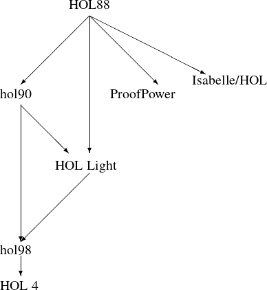
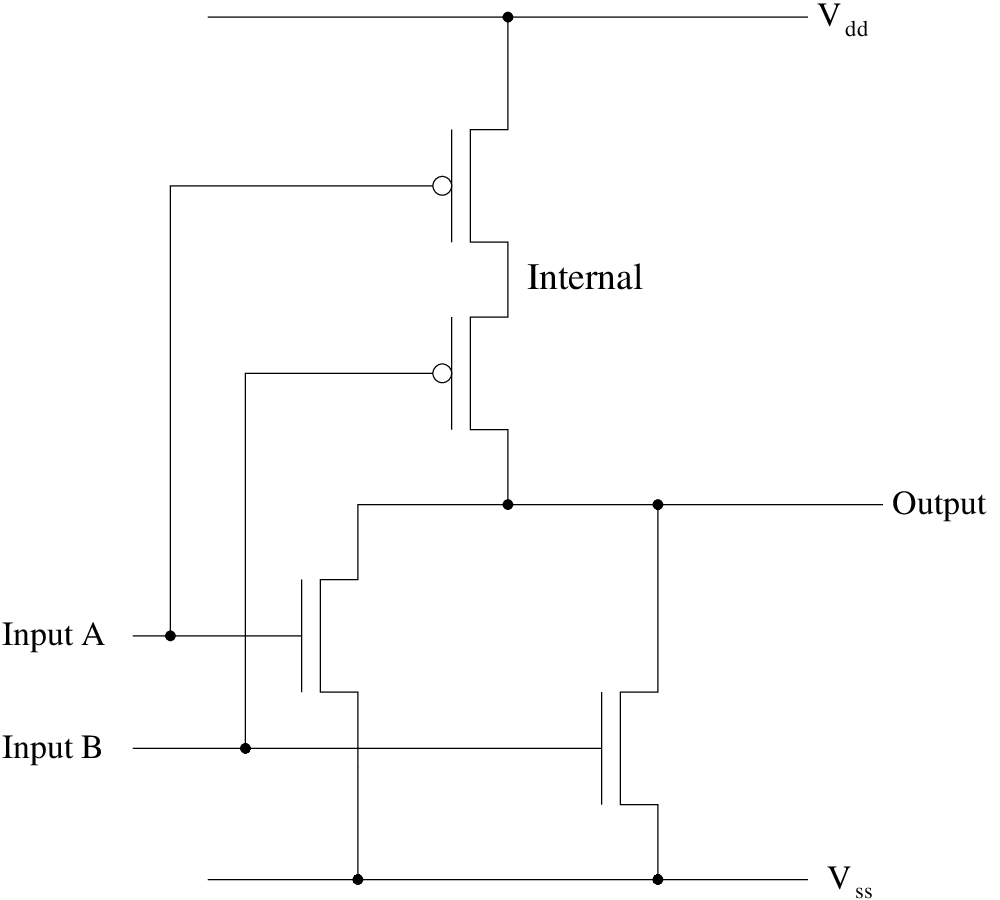
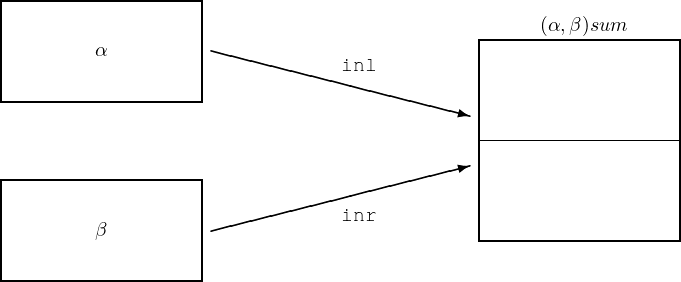
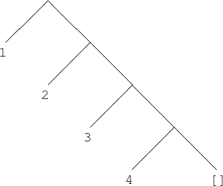
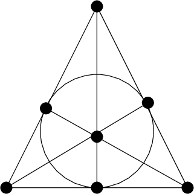
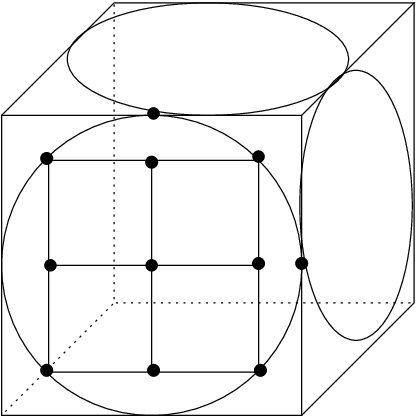
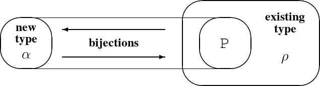

The HOL Light theorem prover can be difficult to get started with. While the manual is fairly detailed and comprehensive, the large amount of background information that has to be absorbed before the user can do anything interesting is intimidating. Here we give an alternative ‘quick start’ guide, aimed at teaching basic use of the system quickly by means of a graded set of examples. Some readers may find it easier to absorb; those who do not are referred after all to the standard manual.
HOL Light can fairly easily be made to work on most modern computers. Since the first version (Harrison 1996a), the build process has been simplified considerably. In what follows, we will sometimes assume a Unix-like environment such as Linux. If the reader has access to a Linux machine and feels comfortable with it, its use is recommended. However, users of Windows need not despair, because all the Unix tools needed, and many more useful ones besides, are freely available as part of Cygwin. From Windows 10, you can also install Windows Subsystem for Linux (WSL) and choose a Linux distribution you prefer. Non-Windows users, or Windows users determined to work “natively”, can skip the next subsection.
If you are using Windows 10 or above, you can install Windows Subsystem for Linux which is an official feature of Microsoft Windows. Its installation instruction is available on https://learn.microsoft.com/en-us/windows/wsl/install. After its installation, you can choose which Linux distribution to add to your WSL, from Microsoft Store.
If WSL is not supported on your Windows, you can try Cygwin. Cygwin is a Linux-like environment that can be run within Windows, without interfering with normal Windows usage. Among other things, it provides a traditional shell from which the usual Unix/Linux software tools are available. Cygwin can be freely downloaded from http://www.cygwin.com/. It is a large system, particularly if you select all the package installation options, so the download and installation can take some time. However it usually seems to be straightforward and unproblematic.
After installing Cygwin, simply start a ’Bash shell’. On my Windows machine, for example, I follow the menu sequence Start All Programs Cygwin Cygwin bash shell. This application is a ‘shell’ (Unix jargon for something analogous to a Windows command prompt) from which the later commands below can be invoked as if you were within Linux. We will hereinafter say ‘Linux’ when we mean Linux, some other version of Unix, or Cygwin inside Windows.
HOL Light is built on top of the functional programming language Objective CAML (‘OCaml’). To be more precise, HOL Light is written in OCaml and the OCaml read-eval-print loop is the usual means of interacting with HOL Light. So installing OCaml is a prerequisite for using HOL Light. Besides, it is a powerful modern programming language with much to recommend it for a wide range of other applications.
OCaml can be installed on a wide range of architectures by following the instructions on the Web site http://caml.inria.fr/ocaml/english.en.html. I normally rebuild the system from sources, even under Cygwin (it only requires a few short commands) but precompiled binaries are available for many platforms.
Finally we are ready to install HOL Light itself. HOL Light can be either installed using a package manager or by building it from its source code. Installing HOL Light using a package manager is easier, but you might get a bit out-of-date version. Building it from the source code is harder, but you are guaranteed to get its latest features.
HOL Light is available at OPAM, an OCaml package manager. If you have OPAM installed on your computer (Its instruction can be found from https://opam.ocaml.org/doc/Install.html), you can install HOL Light by doing the following:
opam install hol_light
|
If you use a debian-based Linux distribution, then you can get HOL Light together with useful auxiliary tools by installing the hol-light package.
sudo apt-get install hol-light
|
However, if you are using Ubuntu, the HOL Light system you retrieved from apt-get will be outdated for this tutorial. Please consider using OPAM to install HOL Light in this case.
You can download the system by cloning the HOL Light Github repository https://github.com/jrh13/hol-light/. Cloning the Github repository can be done by doing the following in the current directory of the shell:
git clone https://github.com/jrh13/hol-light.git
|
Or, if you don’t have git available, you can download the archive file
https://github.com/jrh13/hol-light/archive/refs/heads/master.zip.
The web browser will download it to hol-light-master.zip. Unzip it to hol-light
using the unzip command:
unzip hol-light-master.zip -d hol-light
|
Either at the shell prompt (Linux) or the command prompt, move into the appropriate directory by:
cd hol-light
|
The first step is to install OCaml libraries the HOL Light system uses. Each library can be either installed using a package manager or manually built from source codes. Instructions for building OCaml libraries from their source codes is not explained in this tutorial because it is likely that the libraries will have better instructions. For package managers, you can either choose a package manager natively supported by your operating system (homebrew for macOS, apt for Ubuntu), or OPAM, an official OCaml package manager that supports identical user interface for multiple operating systems.
Which package manager should we use? There are pros and cons. For OPAM, you will need an extra step in advance to install it. However, after its setup, you can quickly install necessary packages using a Makefile command HOL Light provides. In the case of native package managers, HOL Light does not provide such convenience yet. However, you can still install the libraries by finding the package names corresponding to those of your package manager. The list of OCaml packages are described in the (_opam) file. HOL Light must be functional regardless of which package manager you choose.
If you have OPAM available on your machine, simply run one of the two following commands depending on your preference of OCaml version:
make switch # This will create a local setup for OCaml 4 make switch-5 # This will create a local setup for OCaml 5
|
This will create a local OPAM environment inside the hol-light directory and install packages in it. Then, activate the local environment setup on the terminal as the following:
eval $(opam env)
|
The next step is to create a special file used by HOL Light to handle parsing and printing within OCaml. In Linux you can just do:
make
|
Now start up an interactive OCaml session by:
./hol.sh
|
You should now see a large amount of output as HOL Light is loaded, which in particular involves proving many theorems and giving them names. After about two minutes, depending on how fast your computer is, you should see something like the last few lines of output below and the OCaml prompt:
0..0..0..solved at 3 * HOL-Light syntax in effect * Camlp5 parsing version (HOL-Light) 8.03.01 #
|
You are now ready to start using the system.
You can use any editor you prefer, but if you are new to HOL Light, the HOL Light plugin of Visual Studio Code can be a good option. You can find and install the plugin by searching for HOL Light from the Extensions tab of Visual Studio Code. The plugin provides the following features, some of which are enabled when HOL Server is turned on.
There are, for better or worse, several HOL-like theorem provers in active use, including at least HOL4, HOL Light, Isabelle/HOL and ProofPower (you can easily find Web pages for any of them by a Web search). The underlying logical basis of these systems, as well as many other ideas, are derived from the original HOL system written by Mike Gordon in the 1980s, of which HOL88 (Gordon and Melham 1993) was the first polished and stable release. The graph that follows attempts to give a rough impression of the flow of ideas and/or code:

Much of what is discussed here is equally applicable, mutatis mutandis, to other versions of HOL, and indeed, to other theorem proving systems generally. In the appendix, we describe the evolution of HOL and its place in the world of theorem provers in more detail.
After HOL Light is loaded, you are once again sitting in the usual OCaml read-eval-print loop, the only difference being that a large number of theorems, and tools for proving theorems, have been loaded in.1 Using the implementation language as the interaction environment yields a system that is entirely open and extensible in a clean and uniform fashion. Nevertheless you may at first find it somewhat alien — many other comparable theorem provers and computer algebra systems offer a separate interface with no programmable environment, like Mizar (Rudnicki 1992), or have their own custom language for the read-eval-print loop, like Maple.2
Before we come onto anything specific to HOL-Light, it’s worth understanding in basic terms how to use the OCaml toplevel loop. Roughly speaking, you can do three things in the OCaml top-level loop: issue directives, evaluate expressions, and make definitions. The only directive a beginner is likely to need for a while is the following:
#use "filename";;
|
which loads the OCaml source from a file called filename as if it had been typed into the
toplevel — this is exactly what we did to load in HOL. Moreover, the example of
2 + 2;; was an example of evaluating an expression. Let us look more closely at the
output:
val it : int = 4
|
OCaml responds with the result of evaluating the expression (4), but also allocates it a type int (meaning that it is an integer, or whole number) and introduces a name it for the result. We can now use it as an abbreviation for the result of the evaluation, namely 4. For example:
# it * it;; val it : int = 16
|
Now it denotes the result of that expression, namely 16. However, it is just the default
OCaml gives the result of the last expression. A user can give it any chosen name by using a
definition of the form:
let <name> = <expression>;;
|
You can then use that name in subsequent expressions, and bind composite expressions to other names, for example:
# let a = 741;; val a : int = 741 # let b = 147;; val b : int = 147 # let c = a - b;; val c : int = 594 # let d = 495 + c;; val d : int = 1089
|
As well as integers (whole numbers) CAML lets you evaluate expressions involving other
types. For example strings (finite sequences of characters) can be entered within
double-quotes, and operated on using functions such as ˆ, which concatenates (sticks
together) two strings just as + adds two numbers.
# let x = "no";; val x : string = "no" # let y = "body";; val y : string = "body" # let z = xˆy;; val z : string = "nobody"
|
The reader is encouraged to try a few other examples. One of the nice things about sitting in an interactive loop is that it’s easy to experiment and see the results immediately.
As well as basic values, OCaml also lets you define names for functions, which take one or more parameters, or arguments, and compute a corresponding result. To define such a function, simply add the arguments after the name when making a definition. For example the following is the definition of a function that squares its argument:
# let square x = x * x;; val square : int -> int = <fun>
|
The type int -> int means that square is a function from integers to ingegers. The function can then be applied to some particular arguments by writing them after the function name:
# square 0;; val it : int = 0 # square 8;; val it : int = 64
|
Note that while in normal mathematical notation it’s compulsory to use parentheses round function arguments (we write not in informal mathematics), they are optional in OCaml and most people don’t use them. However, they can always be used to establish precedence just as in any other situation, or merely used for familiarity’s sake:
# square(2 + 2);; val it : int = 16 # square(2) + 2;; val it : int = 6
|
Functions can have multiple arguments written one after the other. We will explain the type OCaml prints more carefully later, but for now simply think of it as meaning a function that takes two integers and returns another:
# let pythag x y = square x + square y;; val pythag : int -> int -> int = <fun> # pythag 3 4;; val it : int = 25
|
You can also compile your HOL Light proof using the OCaml compiler and run the created binary. Running a compiled proof has multiple advantages. First, the binary can run faster than using the REPL, especially when the native compiler version (ocamlopt) is used. Secondly, building the source code quickly reports any syntax error in the proof before actually running the proof. Third, the compiled module can be imported and used by other OCaml programs.
Please refer to the ‘Compiling HOL Light’ section of the README file of HOL Light for further instruction.
In the previous section we evaluated expressions containing numbers and strings. HOL Light — hereinafter just ‘HOL’ — is a suite of tools for evaluating expressions involving terms (representing mathematical expressions or logical assertions) and theorems (representing assertions that have been proved).
To enter terms into the system, you can type them between backquotes:
# ‘x + 1‘;; val it : term = ‘x + 1‘
|
Superficially, this may look like an analogous interaction with strings:
# "x + 1";; val it : string = "x + 1"
|
Terms are like strings in that they are manipulated purely as symbolic expressions. However, terms are not simply represented as sequences of characters, but using a richer tree-structured representation, something like a ‘abstract syntax tree’. The OCaml toplevel automatically attempts to parse anything in backquotes into the internal representation, and it prints it in a similar fashion, but this is just for human convenience. For example, several superficial variants of the input get mapped to the same internal representation and are printed in the same way, while some malformed expressions will not be parsed at all:
# ‘(x) + 1‘;; val it : term = ‘x + 1‘ # ‘(x + (1))‘;; val it : term = ‘x + 1‘ # ‘x + +‘;; Exception: Failure "term after binary operator expected".
|
The internal form is usually rather unpalatable for humans, as you can see by disabling the automatic prettyprinting using the following Ocaml directive:
# #remove_printer pp_print_colored_qterm;;
# ‘x + 1‘;;
val it : term =
Comb (Comb (Const ("+", ‘:num->num->num‘), Var ("x", ‘:num‘)),
Comb (Const ("NUMERAL", ‘:num->num‘),
Comb (Const ("BIT1", ‘:num->num‘), Const ("_0", ‘:num‘))))
|
We will look in more detail at the internal representation later, since it is important for advanced use of the system, but for now we will ignore it and restore the usual behavior with:
# #install_printer pp_print_colored_qterm;;
|
HOL provides a number of operations for manipulating terms. For example subst will replace one term by another at all its occurrences in another term, e.g. replace ‘’ by ‘’ in the term ‘’. The syntax is analogous to the logical notation ’ or that one often sees:
# subst [‘2‘,‘1‘] ‘x + 1‘;; val it : term = ‘x + 2‘ # subst [‘y + 2‘,‘x:num‘] ‘x + 5 * x‘;; val it : term = ‘(y + 2) + 5 * (y + 2)‘
|
The reason for entering ‘x:num’ rather than just ‘x’ lies in HOL’s type system, explained next.
A key feature of HOL is that every term has a well-defined type. Roughly speaking, the type indicates what kind of mathematical object the term represents (a number, a set, a function, etc.) The possible types of terms are represented using another symbolic datatype hol_type, and these will similarly be automatically parsed and printed within backquotes with a colon as the first character.3
# ‘:num‘;; val it : hol_type = ‘:num‘
|
You can find the type of a term by applying the type_of operator to it:
# type_of ‘1‘;; val it : hol_type = ‘:num‘ # type_of ‘x + 1‘;; val it : hol_type = ‘:num‘ # type_of ‘x + 1 < x + 2‘;; val it : hol_type = ‘:bool‘
|
The type of the terms ‘’ and ‘’ is :num, meaning that they represent natural numbers, i.e. nonnegative whole numbers. (In more conventional mathematical terms we would write and to capture the information in HOL’s type assignment.) On the other hand, the term ‘’ is of type bool (Boolean), meaning that it is an assertion that may be true or false (in this case it happens to be true). If HOL is able to assign a type to a term, but it is not determined uniquely, a general type will be assigned automatically:
# ‘x‘;; Warning: inventing type variables val it : term = ‘(x:?142527)‘ # type_of it;; val it : hol_type = ‘:?142527‘
|
but you can impose a chosen type on any term by writing ‘:<type>‘ after it:
# ‘x:num‘;; val it : term = ‘x‘ # ‘x:bool‘;; val it : term = ‘x‘
|
(Variables like this that share the same name yet have different types are considered completely different.) No annotations were needed in the composite term ‘x + 1’ because HOL automatically allocates type ‘num’ to the constant , and infers the same type for because the two operands to the addition operator must have the same type. But you can attach type annotations to subterms of composite terms where necessary or simply desired for emphasis:
# ‘(x:num) = y‘;; val it : term = ‘x = y‘ # ‘(x:num) + 1‘;; val it : term = ‘x + 1‘
|
Because of typing, some terms that are syntactically well-formed will nevertheless be rejected by the quotation parser because they cannot be typed. For example here we attempt to add something of type ‘bool’ to something of type ‘num’:
# ‘(x < y) + 2‘;; Exception: Failure "typechecking error (initial type assignment): 2 cannot have type num and bool simultaneously".
|
The value of types is that they can filter out such ‘nonsensical’ terms from the start, and keep track of certain intuitive constraints (‘ represents a number’) without special user guidance. On the negative side, they can sometimes be inflexible. For instance you cannot directly add a natural number and a real number, since HOL considers these as distinct types, even though intuitively one might imagine :
# ‘(x:num) + (y:real)‘;; Exception: Failure "typechecking error (initial type assignment): y cannot have type num and real simultaneously".
|
We noted that a term of type bool, which we will often call a formula, may be true or false. For example, intuitively speaking the first term below is true (whatever value may have) and the second is false:
# ‘x + 1 < x + 2‘;; val it : term = ‘x + 1 < x + 2‘ # ‘2 + 2 = 5‘;; val it : term = ‘2 + 2 = 5‘
|
HOL does not directly use any concept of ‘truth’ or ‘falsity’. It does however have a notion of when a formula has been proved using the accepted methods of proof, and these methods have, needless to say, been chosen so that anything provable is also true.4 The usual aim when using HOL is to state an assertion precisely in its formal logic and then to prove it.
In traditional formal logic, a formula is proved by applying a well-defined set of syntactic rules to some initial axioms; one writes to mean that is provable, and more generally to mean that is provable starting from assumptions . In HOL, a similar notion is put in a more computational form. A special type thm (‘theorem’) is used for formulas that have been — actually have been, not merely can be — proved. Initially, the only OCaml objects of type thm are the HOL axioms, and the only way of creating new objects of type thm is to apply a limited set of primitive rules of inference. (The complete list of axioms and primitive rules is quite short.) What we call an ‘inference rule’ in HOL is no more and no less than an OCaml function returning something of type thm (or some composite type thereof, e.g. a pair or a list of theorems).
For example, perhaps the simplest inference rule of the HOL logic is the reflexivity of equality. In HOL this rule is implemented by a function REFL, which takes a term and returns a theorem . (As you can see from the output, theorems are prettyprinted using an ASCII approximation to the usual ‘turnstile’ notation.)
# REFL ‘x:real‘;; val it : thm = |- x = x # let th1 = REFL ‘x + 1‘;; val th1 : thm = |- x + 1 = x + 1
|
Another rule of comparable simplicity is ASSUME, which allows you to deduce anything assuming itself; given a formula it returns the theorem . Given a term that does not have Boolean type, it will fail since the corresponding “theorem” is meaningless:
# ASSUME ‘2 + 2 = 5‘;; val it : thm = 2 + 2 = 5 |- 2 + 2 = 5 # let th2 = ASSUME ‘2 * n = n + n‘;; val th2 : thm = 2 * n = n + n |- 2 * n = n + n # ASSUME ‘1‘;; Exception: Failure "ASSUME: not a proposition".
|
A slightly more complicated primitive inference rule is INST (instantiation), which sets the variable(s) in a theorem to some particular term(s). In fact, it is performing at the level of theorems just what subst was doing for terms. This is a logically valid step because a HOL theorem with (free) variables holds for all values they may have:
# let th3 = INST [‘2‘,‘x:num‘] th1;; val th3 : thm = |- 2 + 1 = 2 + 1
|
Note that it will also instantiate variables in the assumptions in the same way, which is necessary for the step to be logically sound in general:
# INST [‘2‘,‘n:num‘] th2;; val it : thm = 2 * 2 = 2 + 2 |- 2 * 2 = 2 + 2
|
Moreover INST, unlike subst, will refuse to substitute for non-variables, which in general is not a logically valid step. For example, the fact that does not imply that we can substitute for while remaining valid:5
# INST [‘2‘,‘2 * n‘] th2;; Exception: Failure "vsubst: Bad substitution list".
|
Although a theorem can only be constructed by proving it, you are always free to break it down into its conclusion and hypotheses. For example, the concl function returns the conclusion of a theorem as a term (which will always have Boolean type):
# concl;; val it : thm -> term = <fun> # concl th1;; val it : term = ‘x + 1 = x + 1‘
|
In its usual form, while HOL generates all theorems by proof, the proofs are not
constructed as concrete objects. However, in the subdirectory Proofrecording there is a
system due to Steven Obua so that proofs are explicitly constructed and can be dumped to a
file in an XML-based format suitable for input to other systems, e.g. a separate proof
checker.
Proving non-trivial theorems at this low level is rather painful. However, HOL Light comes with a variety of more powerful inference rules that can prove some classes of non-trivial theorems automatically. Many of these will be described in what follows, but to give one example, ARITH_RULE can prove many formulas that require only straightforward algebraic rearrangement or inequality reasoning over the natural numbers, such as the following cute formula, where ‘x EXP n’ denotes .6
# ARITH_RULE ‘(a * x + b * y + a * y) EXP 3 + (b * x) EXP 3 + (a * x + b * y + b * x) EXP 3 + (a * y) EXP 3 = (a * x + a * y + b * x) EXP 3 + (b * y) EXP 3 + (a * y + b * y + b * x) EXP 3 + (a * x) EXP 3‘;; val it : thm = |- (a * x + b * y + a * y) EXP 3 + (b * x) EXP 3 + (a * x + b * y + b * x) EXP 3 + (a * y) EXP 3 = (a * x + a * y + b * x) EXP 3 + (b * y) EXP 3 + (a * y + b * y + b * x) EXP 3 + (a * x) EXP 3
|
However, the crucial point to note is that under the surface, these are still being proved by low-level rules at the level of REFL and INST. It is for this reason that even these complex derived rules can be considered highly reliable: they cannot just ‘make’ something of type thm, but must prove it. Of course, doing so is not entirely trivial, but has all been encapsulated in ARITH_RULE so that from the user perspective, it looks like an atomic operation. And in advanced use of the system, it’s invaluable to be able to write custom derived rules for special situations.
Typically a proof in HOL proceeds as follows. The user employs special insight into the problem to break it down into a series of relatively simple subproblems, and once the subproblems are simple enough or fall within a limited enough domain, they can be dealt with automatically by HOL. Generally speaking, the level of detail needed before HOL can fill in the gaps is greater than most people are used to. On the other hand, there are pleasant exceptions where one can replace a fairly long manual proof with a single automated HOL step.
Except for minor syntactic details, such as the fact that exponentiation is called EXP, the notation HOL’s parser supports for arithmetic on natural numbers should look fairly familiar. You can use named variables, numeric constants and various infix operators with the usual rules of precedence, and expressions can be put in parentheses for emphasis or to override the rules of precedence.
Now, to manipulate formulas with a richer logical structure, it is important to master the analogous notation HOL uses for building composite logical expressions out of basic formulas using ‘logical connectives’. Readers are no doubt used to writing symbols like ‘’ rather than the word ‘plus’, and one needs similarly to get used to using symbols in place of special logical words like ‘and’, ‘or’ and ‘not’ when stating mathematical results. Here is a table showing conventional notation for the so-called propositional (or Boolean) connectives, together with HOL’s ASCII approximations and their approximate English reading.
| F | Falsity | |
| T | Truth | |
˜ | Not | |
/\ | And | |
\/ | Or | |
==> | Implies (‘if …then …’) | |
<=> | Iff (‘…if and only if …’) | |
The analogy with ordinary algebraic notation is worth re-emphasizing. Truth and falsity are logical constants to denote the true and false propositions, analogous to particular numbers like and . Logical negation is a unary operation just like arithmetical negation of numbers. The other connectives are all binary operations analogous to addition, multiplication, etc. Unlike arithmetic operators, there are only a finite number of possible arguments (all of them must be either true or false) so we can explicitly display the meanings of the connectives using truth-tables showing the result corresponding to each combination of arguments. The negation operator has the following rather trivial truth-table:
| false | true |
| true | false |
For the binary connectives, we need four rows, for the possible combinations of two truth values. To save space we will put all the connectives in different columns of the same table.
| false | false | false | false | true | true |
| false | true | false | true | true | false |
| true | false | false | true | false | false |
| true | true | true | true | true | true |
Note that we interpret ‘or’ in the inclusive sense: ‘’ means ‘ or or both’. The definition of implication almost always strikes people as unintuitive at first, but after a while it will come to seem natural.
The basic, ‘atomic’ formulas that we use to build up formulas may simply be variables of Boolean type:
# ‘p \/ ˜p‘;; val it : term = ‘p \/ ˜p‘ # ASSUME ‘p /\ q‘;; val it : thm = p /\ q |- p /\ q
|
or may involve other non-Boolean components, as in the following examples; in the second we use ARITH_RULE to deduce an elementary property of the usual ordering on natural numbers, that for any we have either or :
# ‘x < 1 ==> p‘;; val it : term = ‘x < 1 ==> p‘ # ARITH_RULE ‘x < y \/ y <= x‘;; val it : thm = |- x < y \/ y <= x
|
In composite expressions, the precedences of the various binary connectives are in order
of the above table, with ‘and’ being the strongest and ‘iff’ the weakest; for example
means
. All of them are
right-associative, so for example
means .
The list of all HOL’s infix operators with their precedences and associativities can be obtained
by issuing ‘infixes()’, or you can get the status of one particular symbol by
‘get_infix_status "<symbol">’, e.g.
# get_infix_status "==>";; val it : int * string = (4, "right") # get_infix_status "-";; val it : int * string = (18, "left")
|
You can also make any other symbol you choose infix, or change the precedence of
existing infixes using ‘parse_as_infix’ as follows:
# parse_as_infix("<>",(12,"right"));;
val it : unit = ()
# parse_as_infix("+",(1,"left"));;
val it : unit = ()
|
However, changing the precedences of existing infixes, as in the second example above, is not recommended, because the existing precedences are often assumed in other source files. For example, now parses as and so fails typechecking:
# ‘x < x + 1‘;; Exception: Failure "typechecking error (initial type assignment): 1 cannot have type num and bool simultaneously".
|
so let’s restore normal service with:
# parse_as_infix("+",(16,"right"));;
val it : unit = ()
|
Note that HOL does not specially interpret “chained” binary operators like x < y < z to
mean ‘ and
’, as mathematical
notation often does. That attempt fails at typechecking, while p ==> q ==> r is accepted but means
, logically
equivalent to ,
and not .
If the reader is not familiar with propositional connectives, it’s worth spending some time getting used to writing logical expressions using them. In particular, it’s instructive to see which formulas built from Boolean variables are tautologies, i.e. true for any assignment of true and false to their variables. The HOL deductive system is such that any tautology will be provable, and there is even a simple derived rule TAUT that will prove them automatically. For example, the following tautology is the so-called ‘law of the excluded middle’, stating that for any formula , either ‘’ or ‘not ’ must hold:
# TAUT ‘p \/ ˜p‘;; val it : thm = |- p \/ ˜p
|
The following says that ‘ if and only if ’ is equivalent to ‘if then ’ and ‘if then ’ together:
# TAUT ‘(p <=> q) <=> (p ==> q) /\ (q ==> p)‘;; val it : thm = |- (p <=> q) <=> (p ==> q) /\ (q ==> p)
|
while the following, commonly known as the ‘de Morgan laws’, show an interesting duality between ‘and’ and ‘or’. For example ‘I cannot speak Swedish and I cannot speak Finnish’ is equivalent to ‘I cannot speak either Swedish or Finnish’:
# TAUT ‘˜(p /\ q) <=> ˜p \/ ˜q‘;; val it : thm = |- ˜(p /\ q) <=> ˜p \/ ˜q # TAUT ‘˜(p \/ q) <=> ˜p /\ ˜q‘;; val it : thm = |- ˜(p \/ q) <=> ˜p /\ ˜q
|
Some tautologies may look a little surprising if you’re not used to them, but you can always convince yourself by exhaustively considering all the possible cases according as each propositional variable takes the value ‘true’ or ‘false’, using the truth-tables to compute the result in each case. For example, the ‘iff’ operator is “associative”:
# TAUT ‘(p <=> (q <=> r)) <=> ((p <=> q) <=> r)‘;; val it : thm = |- (p <=> q <=> r) <=> (p <=> q) <=> r
|
Since most people find the truth-table definition of implication unnatural, it’s not so surprising that many of the strangest-looking tautologies involve implication, e.g. the following which says that for two propositions and , one always implies the other:
# TAUT ‘(p ==> q) \/ (q ==> p)‘;; val it : thm = |- (p ==> q) \/ (q ==> p)
|
while the following is traditionally known as Peirce’s Law:
# TAUT ‘((p ==> q) ==> p) ==> p‘;; val it : thm = |- ((p ==> q) ==> p) ==> p
|
Here’s another that may hit users who mix up precedence rules:
# TAUT ‘(a <=> b \/ c) ==> (a <=> b) \/ c‘;; val it : thm = |- (a <=> b \/ c) ==> (a <=> b) \/ c
|
If the user supplies a non-tautology to TAUT then it will simply fail to return a theorem at all:
# TAUT ‘p \/ q ==> p /\ q‘;; Exception: Failure "TAUT ‘p \\/ q ==> p /\\ q‘: cannot solve".
|
It would not be very difficult to modify TAUT so that it gave an explicit counterexample in such cases (‘that fails if is true and is false’). And while TAUT is generally happy to accept composite terms instead of primitive Boolean formulas:
# TAUT ‘x < 1 /\ y > 0 ==> x < 1‘;; val it : thm = |- x < 1 /\ y > 0 ==> x < 1
|
it just treats the atomic formulas (here and ) as separate and primitive, and so won’t be able to exploit linkages between them:
# TAUT ‘0 < x /\ x < 7 ==> 1 <= x /\ x <= 6‘;; Exception: Failure "TAUT ‘0 < x /\\ x < 7 ==> 1 <= x /\\ x <= 6‘: cannot solve".
|
That goal can be solved automatically by ARITH_RULE, which actually analyzes the arithmetical content of the formulas:
# ARITH_RULE ‘0 < x /\ x < 7 ==> 1 <= x /\ x <= 6‘;; val it : thm = |- 0 < x /\ x < 7 ==> 1 <= x /\ x <= 6
|
but in general, one can need arbitrarily complicated reasoning to establish validity in such cases. For example, the following term is a statement of Fermat’s Last Theorem, which we can hardly expect HOL to prove automatically given how much trouble it’s given the human race:
# ARITH_RULE ‘x EXP n + y EXP n = z EXP n /\ n >= 3 ==> x = 0 \/ y = 0‘;; Exception: Failure "ARITH_RULE ‘... (* string length 546; truncated *).
|
As well as high level automated rules like TAUT, HOL provides a full complement of more basic operations for performing delicate patterns of inference on theorems. Generally speaking, each logical connective has a corresponding set of rules for ‘introducing’ and ‘eliminating’ it. For example, the inference rule CONJ allows us to deduce from and separately. More precisely, it takes two theorems and and returns the theorem , since one must always preserve the set of assumptions used:
# let thp = ASSUME ‘p:bool‘;; val thp : thm = p |- p # let thq = ASSUME ‘q:bool‘;; val thq : thm = q |- q # let thpq = CONJ thp thq;; val thpq : thm = p, q |- p /\ q
|
while dually the rules CONJUNCT1 and CONJUNCT2 allow us to deduce and , respectively, from :
# CONJUNCT1 thpq;; val it : thm = p, q |- p # CONJUNCT2 thpq;; val it : thm = p, q |- q
|
Another quite important low-level rule is MP, which allows one to pass from and to , which is often an extremely useful way of linking theorems together. The name is an abbreviation for ‘modus ponens’, the traditional if obscure name (Latin for ‘method for affirming’):
# let th1 = ARITH_RULE ‘x <= y ==> x < y + 1‘;; val th1 : thm = |- x <= y ==> x < y + 1 # let th2 = ASSUME ‘x <= y‘;; val th2 : thm = x <= y |- x <= y # MP th1 th2;; val it : thm = x <= y |- x < y + 1
|
One reason for practical interest in propositional logic is that it corresponds quite closely with the structures used in digital circuits, such as the computer on which you are running HOL. To a reasonable approximation, each wire in a digital circuit at a given time has one of two possible voltage levels which we can think of as ‘false’ (also or ‘low’) and ‘true’ (also or ‘high’). The logical building-blocks are circuit elements that have behavior mimicking the basic connectives of propositional logic. For example, a (2-input) ‘AND gate’ is a circuit with two inputs and one output such that the output is ‘true’ precisely if both inputs are ‘true’, corresponding to the propositional connective ‘’.
The gates themselves in most modern microprocessors are themselves constructed from even more basic components called transistors. A transistor is a kind of voltage-controlled switch; more precisely, it is a 3-terminal device where the current flow between two of the terminals called ‘source’ and ‘drain’ is controlled by the voltage level on the ‘gate’ input. In an n-type transistor, current flows between source and drain, and hence source and drain voltages are equalized, when the gate voltage is high, but otherwise there is a high resistance between them and so the source and drain voltages can differ arbitrarily. We can model this behavior in HOL by the propositional formula:
# ‘gate ==> (source <=> drain)‘;; val it : term = ‘gate ==> (source <=> drain)‘
|
Dually, in a p-type transistor, current flows and so the source and drain voltages are equalized only when the gate voltage is low, which we can model as:
# ‘˜gate ==> (source <=> drain)‘;; val it : term = ‘˜gate ==> (source <=> drain)‘
|
Let us see how a logic gate is normally built up from transistors using a CMOS7 arrangement. For example figure 1 shows a CMOS NOR gate, intended to realize the logic function ‘not or’, i.e. . The two transistors at the top with the little circle on the gate are p-type, and the two at the bottom are n-type. Let us use the name internal for the internal wire between the top two transistors. The wires marked and represent fixed high and low voltage wires respectively (crudely, the positive and negative terminals of the power supply), corresponding to ‘true’ and ‘false’ in our Boolean model. Now we can write down a HOL formula asserting that all the constraints implied by the circuit connections together imply that we do indeed get the correct ‘NOR’ relationship between inputs and outputs, and verify it using TAUT:

# TAUT ‘(˜input_a ==> (internal <=> T)) /\ (˜input_b ==> (output <=> internal)) /\ (input_a ==> (output <=> F)) /\ (input_b ==> (output <=> F)) ==> (output <=> ˜(input_a \/ input_b))‘;; val it : thm = |- (˜input_a ==> (internal <=> true)) /\ (˜input_b ==> (output <=> internal)) /\ (input_a ==> (output <=> false)) /\ (input_b ==> (output <=> false)) ==> (output <=> ˜(input_a \/ input_b))
|
This example wasn’t very difficult to verify by hand. On the other hand, HOL’s tautology-checker can cope with somewhat larger examples where humans are apt to be confused. For example, consider the following puzzle in circuit design (Wos 1998, Wos and Pieper 1999):8
Show how to construct a digital circuit with three inputs , and and three outputs that are the respective negations , and , using an arbitrary number of ‘AND’ and ‘OR’ gates but at most two ‘NOT’ gates (inverters).
Be warned, this puzzle is surprisingly difficult, and readers might want to avert their gaze from our solution below in order to enjoy thinking about it themselves. (Not that a quick glance is likely to give you any strong intuition.) I came up with the following after a considerable effort, and it’s sufficiently complicated that the correctness isn’t at all obvious. But we can verify it in HOL quite easily. It takes a couple of seconds since the algorithm used by TAUT is quite naive, but it certainly beats doing it by hand.
# TAUT ‘(i1 /\ i2 <=> a) /\ (i1 /\ i3 <=> b) /\ (i2 /\ i3 <=> c) /\ (i1 /\ c <=> d) /\ (m /\ r <=> e) /\ (m /\ w <=> f) /\ (n /\ w <=> g) /\ (p /\ w <=> h) /\ (q /\ w <=> i) /\ (s /\ x <=> j) /\ (t /\ x <=> k) /\ (v /\ x <=> l) /\ (i1 \/ i2 <=> m) /\ (i1 \/ i3 <=> n) /\ (i1 \/ q <=> p) /\ (i2 \/ i3 <=> q) /\ (i3 \/ a <=> r) /\ (a \/ w <=> s) /\ (b \/ w <=> t) /\ (d \/ h <=> u) /\ (c \/ w <=> v) /\ (˜e <=> w) /\ (˜u <=> x) /\ (i \/ l <=> o1) /\ (g \/ k <=> o2) /\ (f \/ j <=> o3) ==> (o1 <=> ˜i1) /\ (o2 <=> ˜i2) /\ (o3 <=> ˜i3)‘;;
|
Doing digital circuit verification in this way is open to the criticism that there’s no checking that the assignments of internal wires are actually consistent. For example, if we assert that an inverter has its output connected to its input, we can deduce anything. (What connecting two wires with different voltages means in electrical terms depends on physical details: the component may lock at one value, oscillate or burn out.)
# TAUT ‘(˜output <=> output) ==> the_moon_is_made_of_cheese‘;; val it : thm = |- (˜output <=> output) ==> the_moon_is_made_of_cheese
|
However, we will see later how to show that the claimed assignments of the internal wires are consistent.
We have already seen a wide variety of HOL terms involving equations, arithmetic operations, numerals, Boolean functions and so on. Since it can represent all these entities and much more, you might imagine that the term structure for HOL is quite complicated. On the contrary, at the lowest level it is simplicity itself. There are only four types of HOL term:
Variables such as ‘x:bool‘ and ‘n:num‘ and constants like ‘true’
(‘true‘) and ‘false’ (‘false‘) are probably roughly what the reader
expects.9
By an application, we mean the application of a function to an argument, which is a
composite term built from subterms for the function and argument. For example, the term for
‘not p’, entered as ‘˜p‘, is an application of the constant denoting the negation
operator to a Boolean variable. You can enter the negation operator on its own as a
term.
# ‘˜‘;; val it : term = ‘(˜)‘
|
We often use the customary jargon rator (ope-rator = function) and rand (ope-rand = argument) for the two components of an application (which we will also sometimes call a combination). There are correspondingly named functions on terms that will break a combination apart into its operator and operand, or will fail if applied to a non-combination:
# rator ‘˜p‘;; val it : term = ‘(˜)‘ # rand ‘˜p‘;; val it : term = ‘p‘ # rand ‘n:num‘;; Exception: Failure "rand: Not a combination".
|
Just as in OCaml, there is no need to put the argument to a function in parentheses, except when required to enforce precedence. You may sometimes choose to do so for emphasis, but HOL will normally print it without using additional parentheses. Of course, the internal representation abstracts away from the particular details of how the term is entered and just treats it as an abstract syntax tree.
# ‘˜(p)‘;; val it : term = ‘˜p‘
|
The critical point about applications in HOL, again as in OCaml, is that applications can only be formed when the operator has some type (a function mapping arguments of type to results of type ) and the operand the corresponding type , in which case the combination as a whole has type . For example, as one might expect, the negation operator has type :
# type_of ‘(˜)‘;; val it : hol_type = ‘:bool->bool‘
|
HOL’s term representation makes no special provision for functions of more than one argument. However, functions may take one argument and yield another function, and this can be exploited to get the same effect, a trick known as currying, after the logician Haskell Curry. For example, rather than considering addition of natural numbers as a binary function , we consider it as a function . It accepts a single argument , and yields a new function of one argument that adds to its argument. This intermediate function is applied to the second argument, say , and yields the final result . In other words, what we write as is represented by HOL as . And we can indeed enter that string explicitly; the underlying term is exactly the same whether this or the usual infix surface syntax is used.
# ‘((+) x) 1‘;; val it : term = ‘x + 1‘ # ‘((+) x) 1‘ = ‘x + 1‘;; val it : bool = true
|
Note that precisely the same curried representation for binary functions is common in OCaml itself too:
# (+);; val it : int -> int -> int = <fun> # (+) 1;; val it : int -> int = <fun>
|
Although currying might seem like an obscure representational trick, it can sometimes be useful to consider in its own right the intermediate function arising from partially applying a curried function. For example, we can define a successor operation and use it separately.
# let successor = (+) 1;; val successor : int -> int = <fun> # successor 5;; val it : int = 6 # successor 100;; val it : int = 101
|
Because currying is such a common operation, both OCaml and HOL adopt the same conventions to reduce the number of parentheses needed when dealing with curried functions. Function application associates to the left, so f a b means (f a) b not f(a(b)). Many beginners find this takes some getting used to:
# (+) 1 2;; val it : int = 3 # ‘(+) 1 2‘;; val it : term = ‘1 + 2‘
|
Also, iterated function types are right-associative, so the type of a binary curried function means .
We can now start to see how more complex terms are represented internally, just using constants, variables and applications. For example, the way this term is entered shows more explicitly how it is built by applications from the constants for implication, equality and addition and the variables , , and . HOL prints it in a way closer to the usual mathematical notation that the user would normally prefer:
# ‘(==>) ((=) ((+) x y) z) (P z)‘;; val it : term = ‘x + y = z ==> P z‘
|
Although currying is used for most infix operators in HOL and OCaml, they do each have a type of
ordered pairs. The type
in HOL, or
in OCaml, represents the type of pairs whose first element has type
and whose
second has type .
In other words, if we think of the types as sets, the pair type is the Cartesian product of the
constituent sets. In both OCaml and HOL, an ordered pair is constructed by applying a binary
infix operator ‘,’:
# ‘1,2‘;; val it : term = ‘1,2‘ # type_of it;; val it : hol_type = ‘:num#num‘ # 1,2;; val it : int * int = (1, 2)
|
As with function applications, the customary surrounding parentheses are not necessary,
but many users prefer to include them anyway for conformance with usual mathematical
notation — note that OCaml, unlike HOL, even prints them. Although ordered pairs without
the surrounding parentheses may seem unfamiliar, there is a conceptual economy in
regarding the comma as just another binary infix operator, not a ‘magical’ piece of
syntax.10
Of course, in HOL at least, the pairing operation must be curried, since it cannot itself be
defined in terms of pairing. In fact all HOL’s predefined binary infix operators, and most of
OCaml’s, are curried. Partly this is because currying is more logically fundamental, and
partly because the ability to partially apply functions can be quite useful. But some of the
HOL syntax operations in OCaml are defined using pairs. For example mk_comb, which
builds an application out of function and argument, takes a pair of arguments. Note
that it will refuse to put together terms whose types are incompatible — just like
theorems, terms themselves are an abstract type from which ill-typed ‘terms’ are
excluded:
# mk_comb(‘(+) x‘,‘y:num‘);; val it : term = ‘x + y‘ # mk_comb(‘(+) 1‘,‘true‘);; Exception: Failure "mk_comb: types do not agree".
|
Similarly, the inference rule CONJ_PAIR breaks a conjunctive theorem into a pair of theorems:
# CONJ_PAIR(ASSUME ‘p /\ q‘);; val it : thm * thm = (p /\ q |- p, p /\ q |- q)
|
while MK_COMB takes a pair of theorems and and returns :
# (ASSUME ‘(+) 2 = (+) (1 + 1)‘,ARITH_RULE ‘3 + 3 = 6‘);; val it : thm * thm = ((+) 2 = (+) (1 + 1) |- (+) 2 = (+) (1 + 1), |- 3 + 3 = 6) # MK_COMB it;; val it : thm = (+) 2 = (+) (1 + 1) |- 2 + 3 + 3 = (1 + 1) + 6
|
In OCaml there are functions fst (‘first’) and snd (‘second’) to select the two components of an ordered pair. Similarly HOL has the same thing but in uppercase (for no particular reason): FST and SND.
# fst(1,2);; val it : int = 1 # snd(1,2);; val it : int = 2
|
Equations are particularly fundamental in HOL, even more so than in mathematics generally.
Almost all HOL’s small set of primitive inference rules, like MK_COMB above, involve just
equations, and all other logical concepts are defined in terms of equations. In fact,
‘’ is nothing
but equality between objects of Boolean type; HOL just parses and prints it differently because it
seems clearer conceptually, and allows the logical symbol to have a lower precedence so that, for
example, can
be parsed as
without bracketing or surprises like the last line here:
# ‘p /\ x = 1 <=> q‘;; val it : term = ‘p /\ x = 1 <=> q‘ # ‘(p /\ x = 1) = q‘;; val it : term = ‘p /\ x = 1 <=> q‘ # ‘p /\ x = 1 = q‘;; val it : term = ‘p /\ (x <=> 1 = q)‘
|
It will probably be some time before the reader can appreciate the other definitions of logical connectives in terms of equality, but to give one rough example of how this can be done, observe that we can define the conjunction as — in other words, is true iff the pair is equal to the pair , that is, if and are both (equal to) true.
Even though, as we now know, equations are just terms of the form
, they
are sufficiently important that special derived syntax operations are defined for constructing
and breaking apart equations. I hope from their names and the examples below the reader will
get the idea for the four operations mk_eq, dest_eq, lhs (left-hand-side) and rhs
(right-hand-side):
# mk_eq(‘1‘,‘2‘);; val it : term = ‘1 = 2‘ # dest_eq it;; val it : term * term = (‘1‘, ‘2‘) # lhs ‘1 = 2‘;; val it : term = ‘1‘ # rhs ‘1 = 2‘;; val it : term = ‘2‘
|
Three fundamental properties of the equality relation are that it is reflexive ( always holds), symmetric (if then ) and transitive (if and then ). Each of these properties has a corresponding HOL inference rule. We have already seen the one for reflexivity (REFL); here also are the ones for symmetry (SYM) and transitivity (TRANS) in action:
# REFL ‘1‘;; val it : thm = |- 1 = 1 # SYM (ARITH_RULE ‘1 + 1 = 2‘);; val it : thm = |- 2 = 1 + 1 # SYM (ARITH_RULE ‘2 + 2 = 4‘);; val it : thm = |- 4 = 2 + 2 # TRANS (ARITH_RULE ‘1 + 3 = 4‘) it;; val it : thm = |- 1 + 3 = 2 + 2
|
We have just seen the congruence rule MK_COMB. Another similar simple rule is EQ_MP, which
takes a theorem
(in other words
for Boolean
and ) and another
theorem
and returns .
It might now be instructive to see how SYM, which is not primitive, is defined. First we need
to explain a couple of features of OCaml that we haven’t mentioned yet. OCaml
definitions can be local to a particular expression, so expressions and definitions can be
intertwined arbitrarily deeply. This can be understood in terms of the following abstract
syntax:
<binding> ::= <pattern> = <expression> <bindings> ::= <binding> | <binding> and <bindings> <definition> ::= let <bindings> <expression> ::= <basic expression> | <definition> in <expression>
|
For example, we may define x and y at the top level, in which case they are usable afterwards:
# let x = 1 and y = 2;; val x : int = 1 val y : int = 2 # x + y;; val it : int = 3
|
or restrict definitions of u and v to be local to the expression u + v, in which case they are invisible afterwards (or whatever value they had previously is retained):
# let u = 1 and v = 2 in u + v;; val it : int = 3 # u;; Error: Unbound value "u" # let x = 10 and y = 20 in x + y;; val it : int = 30 # x;; val it : int = 1
|
Another useful feature is that the left-hand side of a binding need not simply be a variable, but can be a more general pattern. For example, after
# let pair = (1,2);; val pair : int * int = (1, 2)
|
we don’t need to use fst and snd to get at the components:
# let x = fst pair and y = snd pair;; val x : int = 1 val y : int = 2
|
but can write directly:
# let x,y = pair;; val x : int = 1 val y : int = 2 # let x = fst pair and y = snd pair;; val x : int = 1 val y : int = 2
|
Now let us consider the definition of the derived inference rule SYM:
let SYM th = let tm = concl th in let l,r = dest_eq tm in let lth = REFL l in EQ_MP (MK_COMB(AP_TERM (rator (rator tm)) th,lth)) lth;;
|
To understand this and similar definitions of derived rules, it’s worth tracing through a simple ‘generic’ instance step-by-step. So let’s create a theorem with conclusion and give it the name th, to match the argument:
# let th = ASSUME ‘l:num = r‘;; val th : thm = l = r |- l = r
|
Now we can trace through the workings of the inference rule step-by-step and see how we manage to get the final theorem with conclusion . As well as mimicking the local definitions, we break up the large expression in the last line using it to hold intermediate values:
# let tm = concl th;; val tm : term = ‘l = r‘ # let l,r = dest_eq tm;; val l : term = ‘l‘ val r : term = ‘r‘ # let lth = REFL l;; val lth : thm = |- l = l # rator (rator tm);; val it : term = ‘(=)‘ # AP_TERM it th;; val it : thm = l = r |- (=) l = (=) r # MK_COMB(it,lth);; val it : thm = l = r |- l = l <=> r = l # EQ_MP it lth;; val it : thm = l = r |- r = l
|
That was a bit obscure, but now that it’s wrapped up as a general rule SYM, applicable to any equation, we no longer need to worry about its internal workings.
HOL allows you to define new constants. If you want to define a new constant
as a shorthand
for a term ,
simply apply the function new_definition to an equation
where
is a variable with the desired name. The function defines a constant
and returns the
corresponding theorem
with
now a constant.
# let wordlimit = new_definition ‘wordlimit = 2 EXP 32‘;; val wordlimit : thm = |- wordlimit = 2 EXP 32
|
The function new_definition enforces some restrictions to ensure the logical
consistency of definitions. For example, you cannot define an existing constant again as
something different:
# let wordlimit’ = new_definition ‘wordlimit = 2 EXP 64‘;; Exception: Failure "new_basic_definition: ’wordlimit’ is already defined".
|
since that would lead to logical inconsistency: from the two theorems and you could deduce and so . Just as with OCaml, you can define functions that take arguments:11
# let wordlim = new_definition ‘wordlim n = 2 EXP n‘;; val wordlim : thm = |- forall n. wordlim n = 2 EXP n
|
and even use similar pattern-matching for the function arguments:
# let addpair = new_definition ‘addpair(x,y) = x + y‘;; val addpair : thm = |- forall x y. addpair (x,y) = x + y
|
Much more general forms of definition using recursion and sophisticated pattern-matching are possible, and will be considered later.
We said in the last section that HOL has four kinds of terms. We’ve seen plenty about variables, constants and applications, but what about abstractions? So far, variables have been used to denote arbitrary values, along the lines of their origin in elementary algebra. In such cases, variables are said to be free, because we can replace them with anything we like. The inference rule INST formalizes this notion: if we can prove a theorem containing variables, we can prove any instance of it. For example:
# let th = ARITH_RULE ‘x + y = y + x‘;; val th : thm = |- x + y = y + x # INST [‘1‘,‘x:num‘; ‘z:num‘,‘y:num‘] th;; val it : thm = |- 1 + z = z + 1
|
However, variables in mathematics are often used in a different way. In the sum , is not a free variable; similarly for in the integral and in the set comprehension . Rather, in such cases the variable is used internally to indicate a correspondence between different parts of the expression. Such a variable is said to be bound. If we consider a subexpression in isolation, such as , then a variable may be free in the usual sense, but when it is wrapped inside a binding construct such as it is, so to speak, ‘captured’, and has no independent meaning outside. A bound variable is somewhat analogous to a pronoun in ordinary language, which is used locally to refer back to some noun established earlier but has no meaning outside. For example in the sentence ‘He closed the book and put it in his bag’, the meaning of ‘it’ is only local to this sentence and established by the earlier use of the noun ‘the book’. In the next sentence the word ‘it’ may refer to something different: ‘He closed the book and put it in his bag. The weather was fine and he wanted to go outdoors and enjoy it.’
There are many variable-binding constructs in mathematics. HOL does not have a
profusion of variable-binding notions as primitive, but expresses them all in terms of just one,
abstraction, which is is a converse operation to function application. Given a variable
and a term
, which may or
may not contain ,
one can construct the so-called lambda-abstraction
, which means
‘the function of
that yields ’.
In HOL’s ASCII concrete syntax the backslash is used, e.g. \x. t. For example,
is the function that adds one to its argument, and we can write it as a HOL term
thus:
# ‘\x. x + 1‘;; val it : term = ‘\x. x + 1‘ # type_of it;; val it : hol_type = ‘:num->num‘
|
The ‘lambda’ symbol is a standard piece of logical jargon that one just has to get used to.
In OCaml, the analogous construct is written using the fun keyword rather than
‘’, and
with -> instead of the dot:
# fun x -> x + 1;; val it : int -> int = <fun> # it 82;; val it : int = 83
|
The precise sense in which abstraction and application are inverse operations
in HOL is that there is a primitive inference rule BETA which tells us that
. For
example:
# let th = BETA ‘(\x. x + 1) x‘;; val th : thm = |- (\x. x + 1) x = x + 1
|
Any instances of a variable inside a lambda-term ‘’ are considered bound, and are left alone by instantiation, which only replaces free variables. For example:
# subst [‘1‘,‘x:num‘] ‘\x. x + 1‘;; val it : term = ‘\x. x + 1‘ # INST [‘1‘,‘x:num‘] (REFL ‘\x. x + 1‘);; val it : thm = |- (\x. x + 1) = (\x. x + 1)
|
More interestingly, note what happens when we apply instantiation to the theorem th above:
# INST [‘y:num‘,‘x:num‘] th;; val it : thm = |- (\x. x + 1) y = y + 1
|
Note that the bound instances of were left alone but the two free ones have been instantiated to . Thus in two steps we can get a more general notion of applying an abstraction to an arbitrary argument and getting an appropriately substituted instance of the abstraction’s body.
In both OCaml and HOL, definitions with arguments can just be considered as shorthand for basic definitions of lambda-expressions. For example in OCaml these are completely equivalent:
# let successor x = x + 1;; val successor : int -> int = <fun> # let successor = fun x -> x + 1;; val successor : int -> int = <fun>
|
Suppose is a term of type for some ; we will often refer to a term with such a type as a predicate. Note that we can equally well think of a predicate as a set, or more precisely a subset of the type . In fact, HOL does not define any separate notion of set but defines an infix set membership symbol IN (corresponding to the usual ‘’) simply by x IN s <=> s x. It is thus normal and often convenient to slip between thinking of functions into bool as predicates or as sets, even within the same term.
It is often useful to be able to say of a predicate that it is true (= yields the value ) for all values of its argument, or that there exists an argument for which it is true, or even that there exists a unique argument for which it is true.12 In traditional ‘first-order logic’ — see Enderton (1972) or Mendelson (1987) for good introductions — predicates are considered separately from other functions, and special ‘quantifiers’ to say things like ‘for all’ are a primitive notion of the language. We don’t need any such special measures but can define all kinds of quantification using more primitive notions.
For example, to say that holds for all arguments is just to say that it is (equal to) the constant function with value ‘true’, that is, .13 So we can define the universal quantifier, normally written and pronounced ‘for all’, such that for any , , simply by:
This is indeed precisely how it is defined in HOL, with the ASCII exclamation mark symbol used in place of , and the following theorem giving the defining equation:
# FORALL_DEF;; val it : thm = |- (forall) = (\P. P = (\x. true))
|
In practice, the predicate to which one wishes to apply the quantifier is usually a lambda-expression. For example, to say that ‘for all , ’, we would use . Since this is such a common construction, it’s convenient to write it simply as , which is close to the traditional notation in first-order logic. HOL will parse and print this form, but note that the underlying term consists of a constant applied to an abstraction:
# ‘!n. n < n + 1‘;; val it : term = ‘forall n. n < n + 1‘ # dest_comb it;; val it : term * term = (‘(forall)‘, ‘\n. n < n + 1‘)
|
Constants such as ‘!’ that are parsed and printed in this abbreviated form when applied to
abstractions are called binders, because they appear to bind variables. (But strictly speaking
they don’t: it’s the underlying abstraction that does that.) For the moment the three important
ones are the three quantifiers:
! | For all | |
? | There exists | |
?! | There exists a unique | |
Another convenient syntactic abbreviation that applies to lambda-abstractions and all other binder constructs is that iterated applications can be condensed. For example, instead of writing , we can just write , and similarly for multiple quantifiers of the same kind. But as usual, this is just a piece of convenient surface syntax and the underlying term does have the core construct iterated:
# ‘!m n. m + n = m + m‘;; val it : term = ‘forall m n. m + n = m + m‘ # dest_comb it;; val it : term * term = (‘(forall)‘, ‘\m. forall n. m + n = m + m‘)
|
All the quantifiers have introduction and elimination rules derived from their definitions. For the universal quantifier, the two main rules are GEN (generalize) which universally quantifies one of the free variables, and the converse operation SPEC (specialize) which instantiates a universally quantified variable. For example, here we generalize a variable and then specialize it again; this is somewhat pointless here since the same effect could be had directly using INST:
# let th = ARITH_RULE ‘x + 1 = 1 + x‘;; val th : thm = |- x + 1 = 1 + x # GEN ‘x:num‘ th;; val it : thm = |- forall x. x + 1 = 1 + x # SPEC ‘y + z‘ it;; val it : thm = |- (y + z) + 1 = 1 + y + z
|
Note that GEN is not applicable if the variable you’re trying to generalize over occurs (free) in the hypotheses. This is necessary to ensure logical consistency, and arises naturally from GEN’s implementation as a derived rule:
# ASSUME ‘x + 1 = 1 + x‘;; val it : thm = x + 1 = 1 + x |- x + 1 = 1 + x # GEN ‘x:num‘ it;; Exception: Failure "ABS".
|
There are also ‘list’ versions SPECL and GENL which allow one to specialize and
generalize multiple variables together, but they can just be considered a shorthand for iterated
application of the more basic functions in the appropriate order:
# SPEC ‘1‘ (SPEC ‘2‘ ADD_SYM);; val it : thm = |- 2 + 1 = 1 + 2 # SPECL [‘1‘; ‘2‘] ADD_SYM;; val it : thm = |- 1 + 2 = 2 + 1
|
Using quantifiers in a nested fashion, we can express much more interesting dependencies among variables. The order of nesting is often critical. For example, if we think of as ‘ loves ’:
For a more mathematical example, consider the definitions of continuity and uniform continuity of a function . Continuity asserts that given , for each there is a such that whenever , we also have :
Uniform continuity, on the other hand asserts that given there is a independent of such that for any and , whenever , we also have . Note how the changed order of quantification radically changes the asserted property.
The tautology-prover TAUT cannot handle non-trivial quantifier reasoning, but there is a more powerful automated tool called MESON that can be quite convenient. Note that deciding validity in quantification theory is an undecidable problem, but MESON uses an automated proof search method called ‘model elimination’ (Loveland 1968, Stickel 1988) that often succeeds on valid formulas. (It usually fails by looping indefinitely or hitting a depth limit rather than showing that the formula is not valid.) For example, we can prove classic “syllogisms”:
# MESON[] ‘(!(x:A). man(x) ==> mortal(x)) /\ man(Socrates) ==> mortal(Socrates)‘;; 0..0..1..solved at 4 val it : thm = |- (forall x. man x ==> mortal x) /\ man Socrates ==> mortal Socrates
|
MESON is quite a handy tool in automating intricate but essentially straightforward reasoning with quantifiers, such as in the following puzzle due to Peter Andrews:
# MESON[] ‘((?x. !y. P(x) <=> P(y)) <=> ((?x. Q(x)) <=> (!y. Q(y)))) <=> ((?x. !y. Q(x) <=> Q(y)) <=> ((?x. P(x)) <=> (!y. P(y))))‘;;
|
Sometimes, indeed, MESON can automatically prove things that people don’t find so obvious, such as the following example due to Łoś (Rudnicki 1987). This asserts that for two binary relations and on a set (type) , both transitive and at least one symmetric, if their union covers the whole set then one or other of the relations is already all of . The machine proves this a lot faster than I could:
# MESON[] ‘(!x y z. P x y /\ P y z ==> P x z) /\ (!x y z. Q x y /\ Q y z ==> Q x z) /\ (!x y. P x y ==> P y x) /\ (!x y. P x y \/ Q x y) ==> (!x y. P x y) \/ (!x y. Q x y)‘;;
|
But MESON is only capable of proving purely logical facts, that is, those that hold whatever the interpretation of the constants involved may be. For example, if we try to use it to prove that ‘’ is reflexive or that we will fail:
# MESON[] ‘!x. x <= x‘;; ...Exception: Failure "solve_goal: Too deep".
|
The reason is that the fact relies on special properties of the inequality relation that do not hold of a general binary relation. On the other hand, the following much less obvious problem — attributed by Dijkstra (1989) to Hoare — is solved instantly.
# let ewd1062 = MESON[] ‘(!x. x <= x) /\ (!x y z. x <= y /\ y <= z ==> x <= z) /\ (!x y. f(x) <= y <=> x <= g(y)) ==> (!x y. x <= y ==> f(x) <= f(y)) /\ (!x y. x <= y ==> g(x) <= g(y))‘;;
|
The point is that even though this also uses the normal inequality relation, this is inessential, and it’s equally valid if we replace it with an arbitrary binary relation:
# let ewd1062 = MESON[] ‘(!x. R x x) /\ (!x y z. R x y /\ R y z ==> R x z) /\ (!x y. R (f x) y <=> R x (g y)) ==> (!x y. R x y ==> R (f x) (f y)) /\ (!x y. R x y ==> R (g x) (g y))‘;;
|
The main constants that MESON treats specially are the logical connectives and the equality relation — the latter is anyway needed in order to handle ‘unique existence’ quantifiers as in the following problem14
# MESON[] ‘(?!x. g(f x) = x) <=> (?!y. f(g y) = y)‘;;
|
This doesn’t mean that you can’t use MESON to reason about other constants, but just that you need to supply it with the necessary properties of those constants to use. These properties might simply be the definitions, or more likely some higher-level results about it. For example, if we tell MESON that addition is associative and commutative, it can deduce other theorems in consequence:
# MESON [ADD_ASSOC; ADD_SYM] ‘m + (n + p) = n + (m + p)‘;;
|
One often wants to show that one term is equal to another using a systematic process of transformation, perhaps passing through several intermediate stages. If at the end of the day we want a proper HOL theorem proving that the initial and final terms are equal, it can take a bit of care to organize the process of transformation while maintaining an equational theorem. To make this easier, HOL provides a systematic framework for conversions (Paulson 1983).
A conversion is simply an inference rule of type term -> thm that when given a term
,
always returns (assuming it doesn’t fail) an equational theorem of the form
,
that is, it proves that the term it was given is equal to some other term, possibly
the same as the original. For example, we can think of the primitive inference
rule REFL as the ‘trivial’ or ‘identity’ conversion because given a term
it always, without fail,
returns the reflexive theorem .
A slightly more interesting one is BETA_CONV, which reduces a beta-redex
and gives the
theorem .
(It is implemented by stringing together BETA and INST much as we did manually
above.)
# BETA_CONV ‘(\x. x + 2) 1‘;; val it : thm = |- (\x. x + 2) 1 = 1 + 2
|
There is a whole family of conversions for performing ‘evaluation’ of expressions involving arithmetic operations on numerals, one for each arithmetic operator, e.g.
# NUM_ADD_CONV ‘2 + 2‘;; val it : thm = |- 2 + 2 = 4 # NUM_MULT_CONV ‘9 * 6‘;; val it : thm = |- 9 * 6 = 54 # NUM_EXP_CONV ‘2 EXP 8‘;; val it : thm = |- 2 EXP 8 = 256
|
The advantage of the uniform approach of conversions is that there are generic functions,
often called ‘conversionals’, for putting together basic conversions into more complex ones.
For example, THENC, used infix, takes two conversions and returns the new conversion that
results from applying the first conversion and then applying the second to the result.
Given that we need to maintain an equational theorem, this is more complicated
than simply composition of functions, but the implementation is not so difficult,
essentially:
# let (THENC) = fun conv1 conv2 t -> let th1 = conv1 t in let th2 = conv2 (rand(concl th1)) in TRANS th1 th2;;
|
For example, we can construct a conversion that will first do beta-conversion and then perform addition on the result:
# let BETA_ADD_CONV = BETA_CONV THENC NUM_ADD_CONV;; val BETA_ADD_CONV : term -> thm = <fun> # BETA_ADD_CONV ‘(\x. x + 2) 1‘;; val it : thm = |- (\x. x + 2) 1 = 3
|
Another useful building-block is the infix conversional ORELSEC which tries the first
conversional, but if it fails (generates an exception), tries the second instead. For example, we
can construct a conversion that will evaluate either addition, multiplication or exponentiation
as follows:
# let NUM_AME_CONV = NUM_ADD_CONV ORELSEC NUM_MULT_CONV ORELSEC NUM_EXP_CONV;;
|
In cases where they can’t do anything, many conversions will naturally generate an
exception. Others will just return a reflexive theorem. It’s easy to swap one behavior for
another by using TRY_CONV, which will try a conversion but happily return a reflexive
theorem if it fails:
# TRY_CONV NUM_ADD_CONV ‘1 + 2‘;; val it : thm = |- 1 + 2 = 3 # TRY_CONV NUM_ADD_CONV ‘7 - 3‘;; val it : thm = |- 7 - 3 = 7 - 3
|
and CHANGED_CONV, which will generate a failure if its argument conversion returned a
reflexive theorem. One can also apply a conversion repeatedly until it fails by REPEATC,
e.g:
# BETA_CONV ‘(\x. (\y. x + y) 2) 1‘;; val it : thm = |- (\x. (\y. x + y) 2) 1 = (\y. 1 + y) 2 # REPEATC BETA_CONV ‘(\x. (\y. x + y) 2) 1‘;; val it : thm = |- (\x. (\y. x + y) 2) 1 = 1 + 2
|
Other useful conversionals allow one to apply conversions to subterms of a given
term. The basic ones are RAND_CONV, which applies a conversion to the rand of a
combination:
# RAND_CONV NUM_ADD_CONV ‘1 + 2 + 3‘;; val it : thm = |- 1 + 2 + 3 = 1 + 5
|
RATOR_CONV, which applies it to the rator:
# RATOR_CONV BETA_CONV ‘(\x y. x + y) 1 2‘;; val it : thm = |- (\x y. x + y) 1 2 = (\y. 1 + y) 2
|
and ABS_CONV, which applies it to the body of an abstraction:
# ABS_CONV BETA_CONV ‘\x. (\y. x + y) 2‘;; val it : thm = |- (\x. (\y. x + y) 2) = (\x. x + 2)
|
From those basic ones, some others are defined, including LAND_CONV (apply to the
left-hand argument of a binary operator), BINDER_CONV (apply to the body of a binder such
as a quantifiers) and BINOP_CONV (apply to both arguments of a binary operator. In order to
direct a conversion to a particular part of a term you can just compose these primitives, for
example:
# (RAND_CONV o RAND_CONV o LAND_CONV) NUM_ADD_CONV ‘f(1 + 2,3 + 4) + g(5 + 6,7 + 8)‘;; val it : thm = |- f (1 + 2,3 + 4) + g (5 + 6,7 + 8) = f (1 + 2,3 + 4) + g (11,7 + 8)
|
Figuring out the right series of conversionals can be painful; one perhaps more convenient
alternative is PAT_CONV, which takes an abstraction term indicating where to apply the
conversion. The particular names and types in the pattern are irrelevant so long as it identifies
the structure:
# PAT_CONV ‘\x. f(c,x) + g(x,x)‘ NUM_ADD_CONV ‘f(1 + 2,3 + 4) + g(5 + 6,7 + 8)‘;; Warning: inventing type variables val it : thm = |- f (1 + 2,3 + 4) + g (5 + 6,7 + 8) = f (1 + 2,7) + g (11,15)
|
The next class of conversionals apply a conversion in a more ‘automatic’ way to
applicable subterms. For example ONCE_DEPTH_CONV applies a conversion to the first
applicable term(s) encountered in a top-down traversal of the term. No deeper terms are
examined, but several terms will be converted if the first applicable terms encountered are
disjoint:
# ONCE_DEPTH_CONV NUM_AME_CONV ‘1 + (2 + 3)‘;; val it : thm = |- 1 + 2 + 3 = 1 + 5 # ONCE_DEPTH_CONV NUM_AME_CONV ‘(1 + 1) * (1 + 1)‘;; val it : thm = |- (1 + 1) * (1 + 1) = 2 * 2
|
Conversions like NUM_AME_CONV are most naturally used recursively in a bottom-up
fashion to evaluate a composite expression. This can be done with DEPTH_CONV:
# DEPTH_CONV NUM_AME_CONV ‘(2 EXP 8 + 1) * (3 * 2 EXP 5 + 1)‘;; val it : thm = |- (2 EXP 8 + 1) * (3 * 2 EXP 5 + 1) = 24929
|
In fact, HOL has a predefined function NUM_REDUCE_CONV which uses essentially the
same implementation, except that all the other arithmetic operations like subtraction are also
handled:
# NUM_REDUCE_CONV ‘2 EXP (32 + (22 DIV 7)) - 7 * (121 - 4 EXP (1 + 1))‘;; val it : thm = |- 2 EXP (32 + 22 DIV 7) - 7 * (121 - 4 EXP (1 + 1)) = 34359737633
|
However, DEPTH_CONV isn’t always what’s needed; sometimes the act of applying a
conversion at one level can create new applicable terms lower down; in this case
DEPTH_CONV will not reexamine them. Two other conversionals, TOP_DEPTH_CONV and
REDEPTH_CONV, will keep applying conversions as long as possible all over the
term.
# DEPTH_CONV BETA_CONV ‘(\f x. f x) (\y. y + 1)‘;; val it : thm = |- (\f x. f x) (\y. y + 1) = (\x. (\y. y + 1) x) # REDEPTH_CONV BETA_CONV ‘(\f x. f x) (\y. y + 1)‘;; val it : thm = |- (\f x. f x) (\y. y + 1) = (\x. x + 1) # TOP_DEPTH_CONV BETA_CONV ‘(\f x. f x) (\y. y + 1)‘;; val it : thm = |- (\f x. f x) (\y. y + 1) = (\x. x + 1)
|
The difference between these two depth conversions is that the main sweeps are respectively top-down and bottom-up, which can lead to one or the other being preferable, mainly for efficiency reasons, in some situations.
The reader may recall the ‘modus ponens’ inference rule MP, which allows one to pass from
and
to
.
However, the theorems must match contain exactly the same
:15
# LT_IMP_LE;; val it : thm = |- forall m n. m < n ==> m <= n # MP LT_IMP_LE (ARITH_RULE ‘1 < 2‘);; Exception: Failure "dest_binary". # MP (SPECL [‘1‘; ‘2‘] LT_IMP_LE) (ARITH_RULE ‘1 < 2‘);; val it : thm = |- 1 <= 2
|
In cases like this, it’s more convenient to delegate to HOL the task of choosing the correct
instantiation for free and universally quantified variables (using SPECL, INST etc.) to make
one theorem match another. The more powerful rule MATCH_MP does just that: the second
argument theorem is considered fixed, and the first theorem is instantiated to match
it:
# MATCH_MP LT_IMP_LE (ARITH_RULE ‘1 < 2‘);; val it : thm = |- 1 <= 2
|
There is also a matching rule REWR_CONV (‘rewriting conversion’), which takes an equational
theorem
and produces a conversion that when applied to a term
which
can be matched to, returns
the corresponding theorem ,
and fails otherwise:
# REWR_CONV ADD_SYM ‘7 + 8‘;; val it : thm = |- 7 + 8 = 8 + 7
|
Because ‘if and only if’ in HOL is simply equality too, this can also be used for theorems of the form . This means that a lot of logical transformations can also be implemented by rewriting. For example:
# LE_LT;; val it : thm = |- forall m n. m <= n <=> m < n \/ m = n # REWR_CONV LE_LT ‘1 <= x‘;; val it : thm = |- 1 <= x <=> 1 < x \/ 1 = x
|
Matching is slightly more general than simply instantiating variables; it can also shuffle terms around a little using beta-conversion to make more things match. (This is commonly called ‘higher-order matching’.) For example consider using the following theorem, a kind of infinitary de Morgan’s law, saying that it is not the case that all satisfy if and only if there exists some that does not satisfy :
# NOT_FORALL_THM;; val it : thm = |- forall P. ˜(forall x. P x) <=> (exists x. ˜P x) # let NOT_FORALL_CONV = REWR_CONV NOT_FORALL_THM;; val NOT_FORALL_CONV : term -> thm = <fun>
|
Having defined that conversion, we can apply it to a variety of matchable terms:
# NOT_FORALL_CONV ‘˜(!n. EVEN n)‘;; val it : thm = |- ˜(forall n. EVEN n) <=> (exists n. ˜EVEN n) # NOT_FORALL_CONV ‘˜(!s:num->bool. FINITE s)‘;; val it : thm = |- ˜(forall s. FINITE s) <=> (exists s. ˜FINITE s)
|
That all works as expected. Perhaps slightly more surprising is the following:
# NOT_FORALL_CONV ‘˜(!n. n * n = n + n)‘;; val it : thm = |- ˜(forall n. n * n = n + n) <=> (exists n. ˜(n * n = n + n))
|
Using naive matching, this just doesn’t work: we need to match P x against
n * n = n + n, which if you think of the underlying term structure means
setting P to (=) (n * n) and x to n + n. But the second assignment is
impossible since x is a bound variable, and the first actually doesn’t work
either.16
What HOL actually does is a kind of reverse beta-reduction to make the terms matchable,
followed by a targeted beta-conversion afterwards to get back to the initial form, rather as we
might do manually like this:
# NOT_FORALL_CONV ‘˜(!n. (\k. k * k = k + k) n)‘;; val it : thm = |- ˜(forall n. (\k. k * k = k + k) n) <=> (exists n. ˜(\k. k * k = k + k) n) # CONV_RULE(ONCE_DEPTH_CONV BETA_CONV) it;; val it : thm = |- ˜(forall n. n * n = n + n) <=> (exists n. ˜(n * n = n + n))
|
Using REWR_CONV in association with depth conversions one can rewrite a term as
much as possible with a set of equational theorems. For example, if we rewrite a
term repeatedly using associativity of addition we can get a fully left-associated
form:
# TOP_DEPTH_CONV(REWR_CONV ADD_ASSOC) ‘(a + b) + ((c + d) + e) + f + g + h‘;; val it : thm = |- (a + b) + ((c + d) + e) + f + g + h = ((((((a + b) + c) + d) + e) + f) + g) + h
|
Actually, if we want the result to look nicest, it’s better to rewrite the other way since
addition is right-associative and we’ll then get minimal bracketing. We can’t quite
use SYM on the theorem ADD_ASSOC because it’s universally quantified, but a
slight generalization GSYM (generalized symmetry) will descend under universal
quantifiers:
# ADD_ASSOC;; val it : thm = |- forall m n p. m + n + p = (m + n) + p # GSYM it;; val it : thm = |- forall m n p. (m + n) + p = m + n + p # TOP_DEPTH_CONV(REWR_CONV it) ‘(a + b) + (((c + d) + e) + (f + g + h))‘;; val it : thm = |- (a + b) + ((c + d) + e) + f + g + h = a + b + c + d + e + f + g + h
|
Because rewriting is such a common operation, HOL provides several higher-level rewriting conversions to make rewriting with a whole suite of theorems straightforward. The most general is:
GEN_REWRITE_CONV convl [th1; ...; thn]
|
Except for some optimizations in the successive matching, this is basically the same as:
convl(REWR_CONV th1 ORELSEC ... ORELSEC thn)
|
There is one significant generalization, however: the list of theorems can include
conjunctions of equations which will be broken down into individual rewrites, which are not
handled by REWR_CONV:
# ADD_CLAUSES;; val it : thm = |- (forall n. 0 + n = n) /\ (forall m. m + 0 = m) /\ (forall m n. SUC m + n = SUC (m + n)) /\ (forall m n. m + SUC n = SUC (m + n)) # REWR_CONV ADD_CLAUSES;; Exception: Failure "dest_eq". # GEN_REWRITE_CONV REDEPTH_CONV [ADD_CLAUSES];; val it : conv = <fun> # it ‘SUC(0 + SUC(SUC 0 + 0))‘;; val it : thm = |- SUC (0 + SUC (SUC 0 + 0)) = SUC (SUC (SUC 0)) # GEN_REWRITE_CONV(PAT_CONV ‘\x. f(c,x) + g(x,x)‘) [ADD_SYM] ‘f(1 + 2,3 + 4) + g(5 + 6,7 + 8)‘;; Warning: inventing type variables val it : thm = |- f (1 + 2,3 + 4) + g (5 + 6,7 + 8) = f (1 + 2,4 + 3) + g (6 + 5,8 + 7)
|
The most common traversal strategy is TOP_DEPTH_CONV, and this is hardwired into
PURE_REWRITE_CONV, essentially the same as GEN_REWRITE_CONV TOP_DEPTH_CONV.
The rewriting conversion with the shortest name, REWRITE_CONV, has the same basic
strategy as PURE_REWRITE_CONV, except that a suite of standard rewrite rules are always
included in the rewrites in addition to the list supplied to it. You can get a list of these by
doing the following:
# basic_rewrites();;
|
Earlier we gave the example of rewriting repeatedly with associativity of addition to force terms into left-associated and right-associated variants. Trying the same thing with commutativity () seems more problematic. Given any term , we can certainly match against it and rewrite to get . But then we can equally well match against that and rewrite it back to , and so on. The process can be continued indefinitely, flipping the two terms backwards and forwards.
However, HOL avoids looping in many such situations (though it is not so hard to come up with combinations where it will loop). Most prosaically, any rewrite where exactly the LHS occurs inside the RHS (e.g. ) will simply be ignored. In the case of permutative rewrites, where the LHS is matchable against the RHS and vice versa — as with our commutativity assertion — HOL does something slightly cleverer. It will apply the rewrite, but only in a direction where the instantiated version has the LHS greater than the RHS according to an essentially arbitrary syntactic ordering.17 In the case of commutativity, any additions and will be normalized to one fixed orientation, albeit an essentially arbitrary one.
# REWRITE_CONV[ADD_SYM] ‘(a + b) + (b + a) + (c + d) + (b + a) + (d + c)‘;; val it : thm = |- (a + b) + (b + a) + (c + d) + (b + a) + d + c = (a + b) + (a + b) + (c + d) + (a + b) + c + d
|
In fact, HOL’s syntactic ordering is defined in such a way that rewriting with the following suite of properties (AC = associative and commutative) will rewrite sums into an entirely canonical form:
# ADD_AC;; val it : thm = |- m + n = n + m /\ (m + n) + p = m + n + p /\ m + n + p = n + m + p # REWRITE_CONV[ADD_AC] ‘(a + b) + (b + a) + (c + d) + (b + a) + (d + c)‘;; val it : thm = |- (a + b) + (b + a) + (c + d) + (b + a) + d + c = a + a + a + b + b + b + c + c + d + d
|
In particular, this together with the built-in reflexivity rewrites will dispose of the task of proving equivalence under associative and commutative laws:
# REWRITE_CONV[ADD_AC] ‘(a + b) + (b + a) + (c + d) + (b + a) + d + c = c + a + d + b + b + c + a + a + b + d‘;; val it : thm = |- (a + b) + (b + a) + (c + d) + (b + a) + d + c = c + a + d + b + b + c + a + a + b + d <=> true
|
For a more sophisticated example, here we normalize arithmetic expressions built using
addition and multiplication by first applying distributivity to ‘multiply out’ terms, then
normalizing products, and finally normalizing sums, giving a canonical ‘sum of products’
(SOP) form. We use THENC to plug together all the steps. It would be possible to
simply throw all these steps into a single rewrite, but it might be a lot slower because
interactions between the rules can cause redundant steps. For example, in a sum
that is normalized with respect to addition, changes within
and
may cause the order to change and necessitate a swap to
, and
so on.
# let SOP_CONV = REWRITE_CONV[LEFT_ADD_DISTRIB; RIGHT_ADD_DISTRIB] THENC REWRITE_CONV[MULT_AC] THENC REWRITE_CONV[ADD_AC];; val SOP_CONV : term -> thm = <fun> # SOP_CONV ‘(a + b) * (c + d) + (a + c) * (b + d)‘;; val it : thm = |- (a + b) * (c + d) + (a + c) * (b + d) = a * b + a * c + a * d + a * d + b * c + b * c + b * d + c * d
|
Similar ‘AC’ theorems are proved for many associative and commutative operators; for example there
are INT_ADD_AC for integer addition and REAL_MUL_AC for real multiplication. Some operators
‘’ are also
idempotent, meaning .
In this case there is a correspondingly stronger suite whose name ends in _ACI,
e.g.
# CONJ_ACI;; val it : thm = |- (p /\ q <=> q /\ p) /\ ((p /\ q) /\ r <=> p /\ q /\ r) /\ (p /\ q /\ r <=> q /\ p /\ r) /\ (p /\ p <=> p) /\ (p /\ p /\ q <=> p /\ q)
|
which might be used as follows:
# REWRITE_CONV[CONJ_ACI] ‘x < 2 /\ y < 3 /\ x < 2 /\ z < 4 /\ y < 3‘;; val it : thm = |- x < 2 /\ y < 3 /\ x < 2 /\ z < 4 /\ y < 3 <=> x < 2 /\ y < 3 /\ z < 4
|
For a more interesting example of using ordered rewriting to normalize algebraic expressions,
see the ‘4 square’ and ‘8 square’ identities in Examples/lagrange_lemma.ml.
To successfully use the rewrite conversions, it is important to find the right theorems to
apply. HOL Light provides the search function that receives syntactic pattern(s)
and returns theorems whose conclusions have a subterm that is an instance of the
pattern. For example, to find CONJ_ACI, ‘search [‘a /\ a <=> a‘]’ can be
used.
# search [‘a /\ a <=> a‘];;
val it : (string * thm) list =
[("AND_CLAUSES",
|- forall t.
(true /\ t <=> t) /\
(t /\ true <=> t) /\
(false /\ t <=> false) /\
(t /\ false <=> false) /\
(t /\ t <=> t));
("CONJ_ACI",
|- (p /\ q <=> q /\ p) /\
((p /\ q) /\ r <=> p /\ q /\ r) /\
(p /\ q /\ r <=> q /\ p /\ r) /\
(p /\ p <=> p) /\
(p /\ p /\ q <=> p /\ q))]
|
If multiple patterns are given to the search function, the resulting theorems must satisfy all patterns.
search may take special terms that are created from syntax functions omit,
exactly and name. ‘omit pat’ searches for theorems not satisfying the pattern
pat. ‘exactly ‘t‘’ searches for theorems with subterms alpha-equivalent to t.
‘name "str"’ searches for theorems whose name contains str as a substring. Executing
‘help "search"’ will show more examples.
# search [name "AC"; ‘(+):num->num->num‘];;
val it : (string * thm) list =
[("ADD_AC",
|- m + n = n + m /\ (m + n) + p = m + n + p /\ m + n + p = n + m + p)]
|
In principle, one can prove theorems in HOL by composing simpler theorems using the
basic forward inference rules like CONJ and MP. Although workable, it’s a little
tedious always having to bind intermediate results to ML identifiers. Besides, it’s
sometimes more conceptually natural to work backwards, breaking a goal into simpler
‘subgoals’ until they become trivial. HOL supports a quite general mechanism
for mixing forward and backwards proofs, based on goals tactics. It also provides
some trivial but handy functions for creating proofs interactively, trying them out
little-by-little.
The first important concept is a goal. Roughly speaking, this is just a fact you want to prove. But it’s more than just a term: rather it’s a term together with various assumptions that you are allowed to make. HOL provides a ‘goalstack’ of the goals that need to be proved to solve the original goal.
A tactic takes a goal and reduces it to a list of subgoals. But it also keeps track of how to construct a proof of the main goal if the user succeeds in proving the subgoal; this is simply an ML function. So the user can keep applying tactics, and the forward proof is reconstructed by HOL. It’s rather as if the machine automatically reverses the user’s proof and converts it to the standard primitive inferences. The user can perform the proof via a mixture of forward and backward steps, as desired.
Proofs can be discovered interactively using the goalstack. This allows tactic steps to be performed, and if necessary retracted and corrected. The user sets up an initial goal using g, e.g.
# g ‘2 <= n /\ n <= 2 ==> f(2,2) + n < f(n,n) + 7‘;; Warning: Free variables in goal: f, n val it : goalstack = 1 subgoal (1 total) ‘2 <= n /\ n <= 2 ==> f (2,2) + n < f (n,n) + 7‘
|
and then reduces it to subgoals using tactics via the e (‘expand’) function.
One simple tactic is DISCH_TAC, which will put the antecedent of an
implicational goal into the list of hypotheses. We now have to prove not
, but rather the subtly
different goal of
under the assumption .
# e DISCH_TAC;; val it : goalstack = 1 subgoal (1 total) 0 [‘2 <= n /\ n <= 2‘] ‘f (2,2) + n < f (n,n) + 7‘
|
If you change your mind or realize you’ve made a mistake, you can ‘undo’ a step with b()
(‘back up’), and restore the previous goalstack:
# b();; val it : goalstack = 1 subgoal (1 total) ‘2 <= n /\ n <= 2 ==> f (2,2) + n < f (n,n) + 7‘
|
In order to understand better what goes on inside a tactic, and indeed to appreciate the naming
convention, it’s worth considering an analogous inference rule DISCH. This takes a theorem of the
form and
produces
(where is
usually in ,
but need not be). It is important to understand why DISCH_TAC is considered as the natural
partner to the inference rule DISCH, hence the name, even though they seem to make the
opposite transformation.
In applying an inference rule to a theorem to get another one , we show that follows from . On the other hand, in applying a tactic to move from a goal to a subgoal , the corresponding claim is that follows from , though not necessarily conversely. That is, the truth of the subgoals arising from applying a tactic are sufficient for the initial goal to hold, but may not be necessary. One does sometimes reduce goals to goals that are logically stronger, because they are still “simpler”. For example, one might reduce the goal for some very large expressions and to a stronger but simpler goal . Of course, one must beware of reducing a provable goal to one that is unprovable!
One very convenient way of getting a tactic is to apply the function CONV_TAC to a
conversion, which gives a tactic that applies the corresponding conversion to the conclusion
of the goal. This has a particularly appealing feature that you then know the original goal and
subgoal to be equivalent, so you can’t possibly have replaced a provable goal by an
unprovable one. For example:
# CONV_TAC;; val it : conv -> tactic = <fun> # CONV_TAC(REWRITE_CONV[LE_ANTISYM]);; val it : tactic = <fun> # e it;; val it : goalstack = 1 subgoal (1 total) ‘2 = n ==> f (2,2) + n < f (n,n) + 7‘
|
since rewriting is such a common requirement, there is a tactic REWRITE_TAC, which is
defined as CONV_TAC o REWRITE_CONV. There is also a more powerful SIMP_TAC
which will exploit contextual information. For instance, if we apply it to the goal here, it will
use the antecedent 2 = n to rewrite the consequent:
# e(SIMP_TAC[]);; val it : goalstack = 1 subgoal (1 total) ‘2 = n ==> f (n,n) + n < f (n,n) + 7‘
|
Similarly ONCE_REWRITE_TAC applies ONCE_REWRITE_CONV:
# e(ONCE_REWRITE_TAC[EQ_SYM_EQ]);; val it : goalstack = 1 subgoal (1 total) ‘n = 2 ==> f (n,n) + n < f (n,n) + 7‘
|
All the rewriting tactics have variants starting ASM_ which also use all the assumptions
of the goal to rewrite. For example instead of using SIMP_TAC now we could
do:
# e DISCH_TAC;; val it : goalstack = 1 subgoal (1 total) 0 [‘n = 2‘] ‘f (n,n) + n < f (n,n) + 7‘ # e(ASM_REWRITE_TAC[]);; val it : goalstack = 1 subgoal (1 total) 0 [‘n = 2‘] ‘f (2,2) + 2 < f (2,2) + 7‘
|
When a goal is reduced to just ‘true’ (T), HOL considers it solved. For example, here we can
use ARITH_RULE. It might seem that we need EQT_INTRO o ARITH_RULE so that we get
rather
than ,
since only the former is the behavior of a proper conversion. But CONV_TAC is set up so that
it will take a solution of the goal without this nuance. (In fact ARITH_TAC is defined to be
exactly this, but it’s worth noting that you can always turn a conversion or proof procedure
into a tactic with CONV_TAC.
# e(CONV_TAC ARITH_RULE);; val it : goalstack = No subgoals
|
So we’re done; there are no more subgoals left to prove. And as we said, from a proof of
the remaining subgoals (in this case none), HOL is able to reconstruct a proof of the original
goal by applying primitive inferences. To get the final theorem once all subgoals have
been proved, use top_thm(); you can then bind a theorem to a name in the usual
way:
# let trivial = top_thm();; val trivial : thm = |- 2 <= n /\ n <= 2 ==> f (2,2) + n < f (n,n) + 7
|
So much for the interactive construction of the proof. If we then want to store it in a file to be replayed later, we could simply faithfully copy down the sequence of steps:
g ‘2 <= n /\ n <= 2 ==> f(2,2) + n < f(n,n) + 7‘;; e DISCH_TAC;; b();; e(CONV_TAC(REWRITE_CONV[LE_ANTISYM]));; e(SIMP_TAC[]);; e(ONCE_REWRITE_TAC[EQ_SYM_EQ]);; e DISCH_TAC;; e(ASM_REWRITE_TAC[]);; e(CONV_TAC ARITH_RULE);; let trivial = top_thm();;
|
but of course the first step was a mistake and b() its correction, so we might excise them (we
might indeed excise the conjunction-swapping too, but let’s pretend we wanted to do that for
some reason) and get:
g ‘2 <= n /\ n <= 2 ==> f(2,2) + n < f(n,n) + 7‘;; e(CONV_TAC(REWRITE_CONV[LE_ANTISYM]));; e(SIMP_TAC[]);; e(ONCE_REWRITE_TAC[EQ_SYM_EQ]);; e DISCH_TAC;; e(ASM_REWRITE_TAC[]);; e(CONV_TAC ARITH_RULE);; let trivial = top_thm();;
|
Instead of just doing the steps one after another like this, we can use THEN to plug tactics
together. This function is called a tactical: tac1 THEN tac2 applies a tactic tac1 to a
goal and then tac2 to all the resulting subgoals. (In our case there was exactly one.) Thus
the following also works:
g ‘2 <= n /\ n <= 2 ==> f(2,2) + n < f(n,n) + 7‘;; e(CONV_TAC(REWRITE_CONV[LE_ANTISYM]) THEN SIMP_TAC[] THEN ONCE_REWRITE_TAC[EQ_SYM_EQ] THEN DISCH_TAC THEN ASM_REWRITE_TAC[] THEN CONV_TAC ARITH_RULE);; let trivial = top_thm();;
|
Moreover, if we’re not generating the proof interactively, we don’t need to bother setting
up the goalstack and applying tactics there. We can just use the function prove(tm,tac)
to prove a goal tm using a tactic tac. In fact, when I’m developing a proof in HOL I usually
construct this kind of tactic script explicitly in an editor, and copy parts into the goalstack as I
proceed to make sure I’m on the right track.
# let trivial = prove (‘2 <= n /\ n <= 2 ==> f(2,2) + n < f(n,n) + 7‘, CONV_TAC(REWRITE_CONV[LE_ANTISYM]) THEN SIMP_TAC[] THEN ONCE_REWRITE_TAC[EQ_SYM_EQ] THEN DISCH_TAC THEN ASM_REWRITE_TAC[] THEN CONV_TAC ARITH_RULE);;
|
We have said that ASM_ variants of the rewriting and simplification tactics rewrite with all
assumptions. Similarly MESON_TAC is a tactic version of MESON, and ASM_MESON_TAC is
a variant that uses all the assumptions. But what about making more delicate use of
assumptions? Let’s set up another goal to illustrate this and a few other tactics along the
way.
# g ‘!x y:real. &0 < x * y ==> (&0 < x <=> &0 < y)‘;;
|
The tactic GEN_TAC strips off a universal quantifier, and the tactical REPEAT will apply it as
many times as possible:
# e(REPEAT GEN_TAC);; val it : goalstack = 1 subgoal (1 total) ‘&0 < x * y ==> (&0 < x <=> &0 < y)‘
|
The tactic STRIP_TAC has the effect of either GEN_TAC (removing an outer universal
quantifier), CONJ_TAC (splitting a conjunction into two goals) or an elaborated version of
DISCH_TAC (turning the antecedent of an implication into assumptions of the goal after
breaking it down using STRIP_ASSUME_TAC), depending on the outermost connective in
the goal:
# e STRIP_TAC;; val it : goalstack = 1 subgoal (1 total) 0 [‘&0 < x * y‘] ‘&0 < x <=> &0 < y‘
|
while EQ_TAC splits an if-and-only-if goal into two implications:
# e EQ_TAC;; val it : goalstack = 2 subgoals (2 total) 0 [‘&0 < x * y‘] ‘&0 < y ==> &0 < x‘ 0 [‘&0 < x * y‘] ‘&0 < x ==> &0 < y‘
|
Remember that the assumptions are really just theorems. If you have any existing theorem
you can add it to the assumptions with ASSUME_TAC.
# e(ASSUME_TAC(SPECL [‘x:real‘; ‘--y‘] REAL_LE_MUL));; val it : goalstack = 1 subgoal (2 total) 0 [‘&0 < x * y‘] 1 [‘&0 <= x /\ &0 <= --y ==> &0 <= x * --y‘] ‘&0 < x ==> &0 < y‘
|
Conversely, you can always use one of the assumptions by explicitly using ASSUME; the
tactic mechanism will automatically make sure that this works.
# e(ASSUME_TAC(ONCE_REWRITE_RULE[GSYM REAL_NOT_LE] (ASSUME ‘&0 < x * y‘)));; val it : goalstack = 1 subgoal (2 total) 0 [‘&0 < x * y‘] 1 [‘&0 <= x /\ &0 <= --y ==> &0 <= x * --y‘] 2 [‘˜(x * y <= &0)‘] ‘&0 < x ==> &0 < y‘
|
but, reasonably enough, you can’t assume anything that isn’t there:
# e(REWRITE_TAC[ASSUME ‘&0 < x <=> ˜(x <= &0)‘]);; Exception: Failure "VALID: Invalid tactic".
|
ASSUME_TAC is an example of a theorem-tactic, which takes a theorem and uses it to
produce a tactic. While ASSUME_TAC puts it on the assumptions, MP_TAC adds it as an
antecedent to the conclusion:
# e(MP_TAC(ASSUME ‘˜(x * y <= &0)‘));; val it : goalstack = 1 subgoal (2 total) 0 [‘&0 < x * y‘] 1 [‘&0 <= x /\ &0 <= --y ==> &0 <= x * --y‘] 2 [‘˜(x * y <= &0)‘] ‘˜(x * y <= &0) ==> &0 < x ==> &0 < y‘
|
while DISJ_CASES_TAC performs a case-split and adds the resulting hypotheses:
# e(DISJ_CASES_TAC(REAL_ARITH ‘&0 < y \/ &0 <= --y‘));; val it : goalstack = 2 subgoals (3 total) 0 [‘&0 < x * y‘] 1 [‘&0 <= x /\ &0 <= --y ==> &0 <= x * --y‘] 2 [‘˜(x * y <= &0)‘] 3 [‘&0 <= --y‘] ‘˜(x * y <= &0) ==> &0 < x ==> &0 < y‘ 0 [‘&0 < x * y‘] 1 [‘&0 <= x /\ &0 <= --y ==> &0 <= x * --y‘] 2 [‘˜(x * y <= &0)‘] 3 [‘&0 < y‘] ‘˜(x * y <= &0) ==> &0 < x ==> &0 < y‘
|
One of those subgoals is trivial:
# e(ASM_REWRITE_TAC[]);; val it : goalstack = 1 subgoal (2 total) 0 [‘&0 < x * y‘] 1 [‘&0 <= x /\ &0 <= --y ==> &0 <= x * --y‘] 2 [‘˜(x * y <= &0)‘] 3 [‘&0 <= --y‘] ‘˜(x * y <= &0) ==> &0 < x ==> &0 < y‘
|
It’s often convenient to skip putting something on the assumptions at all. Many tactics
have _THEN variants that, instead of putting their result as an assumption, do something else
with it. Indeed DISCH_TAC is just an abbreviation for
# e(DISCH_THEN ASSUME_TAC);; val it : goalstack = 1 subgoal (2 total) 0 [‘&0 < x * y‘] 1 [‘&0 <= x /\ &0 <= --y ==> &0 <= x * --y‘] 2 [‘˜(x * y <= &0)‘] 3 [‘&0 <= --y‘] 4 [‘˜(x * y <= &0)‘] ‘&0 < x ==> &0 < y‘
|
Other convenient methods for dealing with assumptions are FIRST_ASSUM, which
applies a theorem-tactic to the first possible assumption, and FIRST_X_ASSUM, which does
the same while also removing the assumption. This can be somewhat brittle if it
depends on the order of assumptions. For example, here we apply MP_TAC to the
first assumption whose conclusion is an implication, while removing it from the
assumptions:
# e(FIRST_X_ASSUM(MP_TAC o check (is_imp o concl)));; val it : goalstack = 1 subgoal (2 total) 0 [‘&0 < x * y‘] 1 [‘˜(x * y <= &0)‘] 2 [‘&0 <= --y‘] 3 [‘˜(x * y <= &0)‘] ‘(&0 <= x /\ &0 <= --y ==> &0 <= x * --y) ==> &0 < x ==> &0 < y‘
|
Anyway, let’s stop messing around and get this goal finished
# e(ASM_REWRITE_TAC[REAL_ARITH ‘&0 <= x * --y <=> x * y <= &0‘; REAL_NOT_LE]);; val it : goalstack = 1 subgoal (2 total) 0 [‘&0 < x * y‘] 1 [‘˜(x * y <= &0)‘] 2 [‘&0 <= --y‘] 3 [‘˜(x * y <= &0)‘] ‘x < &0 ==> &0 < x ==> &0 < y‘ # e REAL_ARITH_TAC;; val it : goalstack = 1 subgoal (1 total) 0 [‘&0 < x * y‘] ‘&0 < y ==> &0 < x‘
|
A more delicate approach is not to use ASSUME_TAC to put things on the assumptions,
but rather LABEL_TAC, which allows you to give them a name:
# e(DISCH_THEN(LABEL_TAC "ypos"));; val it : goalstack = 1 subgoal (1 total) 0 [‘&0 < x * y‘] 1 [‘&0 < y‘] (ypos) ‘&0 < x‘
|
You can then get at it by name using REMOVE_THEN, which also removes it, and
USE_THEN, which doesn’t.
# e(REMOVE_THEN "ypos" MP_TAC);; val it : goalstack = 1 subgoal (1 total) 0 [‘&0 < x * y‘] ‘&0 < y ==> &0 < x‘
|
Of course we’re making heavy weather of a rather easy goal. We can easily finish it with:
# e(FIRST_X_ASSUM MP_TAC THEN MP_TAC(SPECL [‘--x‘; ‘y:real‘] REAL_LE_MUL) THEN REAL_ARITH_TAC);; val it : goalstack = No subgoals
|
and indeed we could have just done this for the whole proof, just providing enough lemmas about the nonlinear part:
# let trivial = prove (‘!x y:real. &0 < x * y ==> (&0 < x <=> &0 < y)‘, REPEAT GEN_TAC THEN MP_TAC(SPECL [‘--x‘; ‘y:real‘] REAL_LE_MUL) THEN MP_TAC(SPECL [‘x:real‘; ‘--y‘] REAL_LE_MUL) THEN REAL_ARITH_TAC);;
|
A remark is in order — though it has nothing specifically to do with tactics — that the goal is really symmetric between and . In such situations one can sometimes cut down the number of cases using a lemma such as the following:
# REAL_WLOG_LE;; val it : thm = |- (forall x y. P x y <=> P y x) /\ (forall x y. x <= y ==> P x y) ==> (forall x y. P x y)
|
This embodies the common mathematical practice of saying that ‘without loss of generality
(WLOG) we may assume …’. In this case, if a universal goal is symmetric between two real variables
and
, we may assume
WLOG that .
Applying that key lemma using MATCH_MP_TAC, the backwards analog for MATCH_MP, we
now only need to provide one piece of nonlinear information:
# let trivial = prove (‘!x y:real. &0 < x * y ==> (&0 < x <=> &0 < y)‘, MATCH_MP_TAC REAL_WLOG_LE THEN CONJ_TAC THEN REPEAT GEN_TAC THEN MP_TAC(SPECL [‘--x‘; ‘y:real‘] REAL_LE_MUL) THEN REAL_ARITH_TAC);;
|
Of course, for such a trivial goal, the saving is small or nonexistent. But if the goal is more complex, it can be a great relief not to repeat almost identical reasoning with minor changes, so it’s worth being on the lookout for such opportunities.
The goal-directed style of proof seems particularly natural for induction, where we break the original goal down into ‘base’ and ‘step’ cases. Consider for example proving the formula for the sum of the first natural numbers
or using summation notation
This and related formulas are straightforward to prove by induction on , so let’s try doing it in HOL. First we have to state the problem. HOL has a somewhat more general summation operation predefined: it can sum a function into natural numbers over a finite set18 whose elements have any type. There is also a function, written as an infix ‘..’, to define a segment of the natural numbers: ‘m..n’ means . Combining these, we can state our goal:
# g ‘!n. nsum(1..n) (\i. i) = (n * (n + 1)) DIV 2‘;; val it : goalstack = 1 subgoal (1 total) ‘forall n. nsum (1..n) (\i. i) = (n * (n + 1)) DIV 2‘
|
We will proceed by induction:
# e(MATCH_MP_TAC num_INDUCTION);; val it : goalstack = 1 subgoal (1 total) ‘nsum (1..0) (\i. i) = (0 * (0 + 1)) DIV 2 /\ (forall n. nsum (1..n) (\i. i) = (n * (n + 1)) DIV 2 ==> nsum (1..SUC n) (\i. i) = (SUC n * (SUC n + 1)) DIV 2)‘
|
The critical step to make the induction go through is to rewrite with the theorems and . Actually when writing these we are implicitly assuming and so on; in the formal statement these cases need to be considered:
# NSUM_CLAUSES_NUMSEG;; val it : thm = |- (forall m. nsum (m..0) f = (if m = 0 then f 0 else 0)) /\ (forall m n. nsum (m..SUC n) f = (if m <= SUC n then nsum (m..n) f + f (SUC n) else nsum (m..n) f))
|
We can use REWRITE_TAC[NSUM_CLAUSES_NUMSEG] to rewrite our goal with this.
Actually, if we use SIMP_TAC instead of REWRITE_TAC the inductive hypothesis of the
step case will also get used as a rewrite:
# e(SIMP_TAC[NSUM_CLAUSES_NUMSEG]);; val it : goalstack = 1 subgoal (1 total) ‘(if 1 = 0 then 0 else 0) = (0 * (0 + 1)) DIV 2 /\ (forall n. nsum (1..n) (\i. i) = (n * (n + 1)) DIV 2 ==> (if 1 <= SUC n then (n * (n + 1)) DIV 2 + SUC n else (n * (n + 1)) DIV 2) = (SUC n * (SUC n + 1)) DIV 2)‘
|
The resulting goal may look like a mess, but the remaining reasoning is so routine that we
can leave it to ARITH_TAC. It disposes of the two conditions 1 = 0 (false) and
1 <= SUC n (true since n is a natural number), then does the algebraic rearrangement to
show the equations in the conclusion hold.
# e ARITH_TAC;; val it : goalstack = No subgoals
|
and so we can recover the final theorem:
# let th = top_thm();; val th : thm = |- forall n. nsum (1..n) (\i. i) = (n * (n + 1)) DIV 2
|
If we wanted to package the entire proof up as a tactic script for later re-use we could do this:
# let th = prove (‘!n. nsum(1..n) (\i. i) = (n * (n + 1)) DIV 2‘, MATCH_MP_TAC num_INDUCTION THEN SIMP_TAC[NSUM_CLAUSES_NUMSEG] THEN ARITH_TAC);; val th : thm = |- forall n. nsum (1..n) (\i. i) = (n * (n + 1)) DIV 2
|
We explicitly used MATCH_MP_TAC with the induction theorem. Since simple induction
on the natural numbers is such a common operation, there is in fact a built-in tactic
INDUCT_TAC. This not only applies the induction theorem but breaks up the resulting goal
into a ‘base’ and ‘step’ case with the hypothesis in the step case on the assumption
list:
# g ‘!n. nsum(1..n) (\i. i) = (n * (n + 1)) DIV 2‘;; val it : goalstack = 1 subgoal (1 total) ‘forall n. nsum (1..n) (\i. i) = (n * (n + 1)) DIV 2‘ # e INDUCT_TAC;; val it : goalstack = 2 subgoals (2 total) 0 [‘nsum (1..n) (\i. i) = (n * (n + 1)) DIV 2‘] ‘nsum (1..SUC n) (\i. i) = (SUC n * (SUC n + 1)) DIV 2‘ ‘nsum (1..0) (\i. i) = (0 * (0 + 1)) DIV 2‘
|
We can then work on the two goals separately in much the same way. The base case proof is similar; after proving it we get presented with the step case:
# e(REWRITE_TAC[NSUM_CLAUSES_NUMSEG] THEN ARITH_TAC);; val it : goalstack = 1 subgoal (1 total) 0 [‘nsum (1..n) (\i. i) = (n * (n + 1)) DIV 2‘] ‘nsum (1..SUC n) (\i. i) = (SUC n * (SUC n + 1)) DIV 2‘
|
Once again, almost the same proof works, except that because the inductive
hypothesis is now in our conclusion list we need to use the ‘ASM_’ variants of the
rewrite tactics, either ASM_SIMP_TAC or ASM_REWRITE_TAC. Since we now
don’t need to get the rewrite from the context, it’s slightly more efficient to use the
latter:
# e(ASM_REWRITE_TAC[NSUM_CLAUSES_NUMSEG] THEN ARITH_TAC);; val it : goalstack = No subgoals
|
Now to package up the overall proof, we could do the following. Note a subtle point here.
When we split a goal into two or more subgoals, the goalstack presents them to us one at a
time. However, in the tactic script, using THEN will apply the same tactics to all the goals. In
such a situation, when tac creates multiple subgoals g1,...gn, one can use
tac THENL [tac1;...;tacn] to apply different tactics to the different subgoals. This
means that the final tactic script has a bit more structure than the linear sequence of steps,
another reason for preferring it.
let th = prove (‘!n. nsum(1..n) (\i. i) = (n * (n + 1)) DIV 2‘, INDUCT_TAC THENL [REWRITE_TAC[NSUM_CLAUSES_NUMSEG] THEN ARITH_TAC; ASM_REWRITE_TAC[NSUM_CLAUSES_NUMSEG] THEN ARITH_TAC]);;
|
However, it would be harmless to change the first REWRITE_TAC into
ASM_REWRITE_TAC — there are no assumptions on the base case so it makes no
difference. Then, since we want to apply the same tactic to both subgoals, we can just use
THEN rather than THENL, and the whole proof is just one line:
# let SUM_OF_NUMBERS = prove (‘!n. nsum(1..n) (\i. i) = (n * (n + 1)) DIV 2‘, INDUCT_TAC THEN ASM_REWRITE_TAC[NSUM_CLAUSES_NUMSEG] THEN ARITH_TAC);; val SUM_OF_NUMBERS : thm = |- forall n. nsum (1..n) (\i. i) = (n * (n + 1)) DIV 2
|
Moreover, exactly the same proof works for some more complicated examples like summing squares and cubes, because the overall structure is the same, and the parts that are different are automated anyway:
# let SUM_OF_SQUARES = prove (‘!n. nsum(1..n) (\i. i * i) = (n * (n + 1) * (2 * n + 1)) DIV 6‘, INDUCT_TAC THEN ASM_REWRITE_TAC[NSUM_CLAUSES_NUMSEG] THEN ARITH_TAC);; val SUM_OF_SQUARES : thm = |- forall n. nsum (1..n) (\i. i * i) = (n * (n + 1) * (2 * n + 1)) DIV 6
|
# let SUM_OF_CUBES = prove (‘!n. nsum(1..n) (\i. i*i*i) = (n * n * (n + 1) * (n + 1)) DIV 4‘, INDUCT_TAC THEN ASM_REWRITE_TAC[NSUM_CLAUSES_NUMSEG] THEN ARITH_TAC);; val SUM_OF_CUBES : thm = |- forall n. nsum (1..n) (\i. i * i * i) = (n * n * (n + 1) * (n + 1)) DIV 4
|
HOL supports several number systems, each with its own corresponding type. In addition to those listed below, there is a theory of complex numbers available in the subdirectory Complex, including the Fundamental Theorem of Algebra, but this is not by default loaded into the core.
If one is used to thinking of these sets as living inside each other , the fact that in HOL these are quite distinct types takes some getting used to.
We have already used the natural numbers num in many examples. In some sense this is HOL’s most fundamental number system, and when you write a numeral the quotation parser considers it as an element of type num. Many interesting problems require just the natural numbers. Moreover they are useful for indexing sequences of objects and so on, and there is a standard principle of mathematical induction for them — we used it in the last section. However, it can sometimes be quite inconvenient that there are no negative numbers in . In fact, HOL’s subtraction on type num is defined as ‘cutoff’ subtraction so that whenever . This can lead to some surprises until you get used to it. For example:
# ARITH_RULE ‘(m - n) + n = m‘;; Exception: Failure "ARITH_RULE ‘m - n + n = m‘: ... (* string length 474; truncated *).
|
Why didn’t that work? It’s not true because of the cutoff:
# ARITH_RULE ‘(1 - 2) + 2 = 2‘;; val it : thm = |- 1 - 2 + 2 = 2
|
but it is true if we add an inequality constraint to rule out the degenerate cases:
# ARITH_RULE ‘n <= m ==> (m - n) + n = m‘;; val it : thm = |- n <= m ==> m - n + n = m
|
If we work over integers or reals, we no longer need to worry about such
peculiarities of subtraction. The main thing to get used to here is that ‘numerals’
of these types must be preceded by an ampersand: &0, &1 etc. (Actually, the
ampersand is simply the injection from natural numbers and can be applied
to composite expressions too.) But while unadorned numerals always have type
num, all the arithmetic operations are overloaded, so all the following are equally
acceptable:19
# ‘x + y :num‘,‘x + y :int‘,‘x + y :real‘;; val it : term * term * term = (‘x + y‘, ‘x + y‘, ‘x + y‘)
|
If there are no explicit type annotations or constants with fixed type (such as unadorned
numerals) to resolve which number system is intended, HOL will apply a default. You can set
which number system has priority in such cases (choose the one you’re mainly
working in) by using prioritize_xxx where xxx is the number system to give
priority. It’s often worth doing this at the start of a piece of work to avoid surprises
later.
# prioritize_num();; val it : unit = () # type_of ‘x + y‘;; val it : hol_type = ‘:num‘ # prioritize_int();; val it : unit = () # type_of ‘x + y‘;; val it : hol_type = ‘:int‘ # prioritize_real();; val it : unit = () # type_of ‘x + y‘;; val it : hol_type = ‘:real‘
|
HOL comes with many basic algebraic and ordering properties of the number systems proved. Some effort has been made to make the names consistent across the different number systems. For example the theorems expressing associativity of addition in the three basic number systems have parallel names:
# ADD_ASSOC;; val it : thm = |- forall m n p. m + n + p = (m + n) + p # INT_ADD_ASSOC;; val it : thm = |- forall x y z. x + y + z = (x + y) + z # REAL_ADD_ASSOC;; val it : thm = |- forall x y z. x + y + z = (x + y) + z
|
However, this consistency is far from perfect. In any case, each number system has its own suite of properties that may not hold in others. For example the following is not true over or where only truncating division is possible:
# REAL_LE_RDIV_EQ;; val it : thm = |- forall x y z. &0 < z ==> (x <= y / z <=> x * z <= y)
|
the following fails over since it depends on discreteness:
# INT_LT_DISCRETE;; val it : thm = |- forall x y. x < y <=> x + &1 <= y
|
and the following theorem over relies essentially on the fact that the structure is discrete and has no negative numbers:
# MULT_EQ_1;; val it : thm = |- forall m n. m * n = 1 <=> m = 1 /\ n = 1
|
It takes a lot of time to get used to the suite of theorems available. Sometimes it’s much
easier to use automated decision procedures to recreate a theorem rather than remember
what it’s called in the standard library. We have already used ARITH_RULE over
,
and similar things are available over the other number systems. INT_ARITH is
for the integers (max and min choose the maximum and minimum of their two
arguments):
# INT_ARITH ‘!x y:int. (max x y) + (min x y) = x + y‘;; val it : thm = |- forall x y. max x y + min x y = x + y
|
while REAL_ARITH works correspondingly over the reals (abs(x) is the absolute value
function ):
# REAL_ARITH ‘!x y:real. (abs(x) - abs(y)) <= abs(x - y)‘;; val it : thm = |- forall x y. abs x - abs y <= abs (x - y)
|
These three procedures are all capable of handling simple algebraic rearrangement, even if it is highly nonlinear — though keep in mind that any formula involving subtraction need special attention over . For example here we derive Brahmagupta’s formula, which shows that the set of integers with a representation in is closed under multiplication. (Over and the exponentiation operator is pow rather than EXP.)
# INT_ARITH ‘!a b a’ b’ D:int. (a pow 2 - D * b pow 2) * (a’ pow 2 - D * b’ pow 2) = (a * a’ + D * b * b’) pow 2 - D * (a * b’ + a’ * b) pow 2‘;;
|
They can also handle linear inequality reasoning, such as the following:
# REAL_ARITH ‘!x y z. x <= (y - z) <=> (x + z) <= y‘;;
|
Sometimes you can actually prove some unobvious things even with simple linear reasoning. For example, a nice puzzle (Colmerauer 1990) is to consider a sequence of integers or real numbers defined by the recurrence . (This doesn’t look so different from the usual Fibonacci numbers .) The claim is that this sequence is actually periodic with period 9. We can check the key fact automatically:
REAL_ARITH ‘!x1 x2 x3 x4 x5 x6 x7 x8 x9 x10 x11:real. x3 = abs(x2) - x1 /\ x4 = abs(x3) - x2 /\ x5 = abs(x4) - x3 /\ x6 = abs(x5) - x4 /\ x7 = abs(x6) - x5 /\ x8 = abs(x7) - x6 /\ x9 = abs(x8) - x7 /\ x10 = abs(x9) - x8 /\ x11 = abs(x10) - x9 ==> x1 = x10 /\ x2 = x11‘;;
|
However, HOL just naively does a large case-split to deal with the absolute value function, and so this is very slow. You might like to see if you can prove it faster than HOL.
The reals decision procedure can deal with arbitrary rational constants. (These constants
are explicitly manipulated by proof internally, so there are no worries about exceeding the
range of machine integers.) For pure arithmetic on rational constants, there is a conversion
REAL_RAT_REDUCE_CONV exactly analogous to NUM_REDUCE_CONV over
.
# REAL_ARITH ‘!x y:real. x < y ==> x < (x + y) / &2 /\ (x + y) / &2 < y‘;; val it : thm = |- forall x y. x < y ==> x < (x + y) / &2 /\ (x + y) / &2 < y # REAL_ARITH ‘((x1 pow 2 + x2 pow 2 + x3 pow 2 + x4 pow 2) pow 2) = ((&1 / &6) * ((x1 + x2) pow 4 + (x1 + x3) pow 4 + (x1 + x4) pow 4 + (x2 + x3) pow 4 + (x2 + x4) pow 4 + (x3 + x4) pow 4) + (&1 / &6) * ((x1 - x2) pow 4 + (x1 - x3) pow 4 + (x1 - x4) pow 4 + (x2 - x3) pow 4 + (x2 - x4) pow 4 + (x3 - x4) pow 4))‘;; ...
|
In the case of and , the discreteness is not always exploited as much as it could be in the linear decision procedures. So sometimes, results that require discreteness or divisibility properties are not proved automatically. For example, the first of these works, but not the second, even though they are both valid:
# ARITH_RULE ‘x < 2 ==> 2 * x + 1 < 4‘;; val it : thm = |- x < 2 ==> 2 * x + 1 < 4 # ARITH_RULE ‘˜(2 * m + 1 = 2 * n)‘;; Exception: Failure "ARITH_RULE ...
|
Subject to this slight weakness, ARITH_RULE is also capable of handling truncating
division (DIV) and modulus (MOD) by constants. For example, one popular trick for numeric
programmers is to replace division by a known constant by a multiplication and right-shift,
which is usually much more efficient. We can verify, for example, that multiplying a natural
number
by
and shifting right by 32 bits yields the correct truncated quotient
, provided
.
# ARITH_RULE ‘x < 2 EXP 30 ==> (429496730 * x) DIV (2 EXP 32) = x DIV 10‘;; val it : thm = |- x < 2 EXP 30 ==> (429496730 * x) DIV 2 EXP 32 = x DIV 10
|
But if we only specify , the analogous call fails, even though it is still valid, because of the incomplete exploitation of discreteness.
# ARITH_RULE ‘x <= 2 EXP 30 ==> (429496730 * x) DIV (2 EXP 32) = x DIV 10‘;; Exception: Failure "ARITH_RULE ...
|
If the nonlinearity in a problem goes beyond a simple algebraic rearrangement, all these procedures will usually fail, even in very simple cases:
# ARITH_RULE ‘1 <= x /\ 1 <= y ==> 1 <= x * y‘;; Exception: Failure "ARITH_RULE ... # REAL_ARITH ‘!x y:real. x = y ==> x * y = y pow 2‘;; Exception: Failure "REAL_ARITH ...
|
Such limitations are inevitable to some extent. Nonlinear equational and inequality reasoning over discrete
structures like and
is undecidable,
and even over
the theoretical complexity is discouraging. So if you want nonlinear results like those, you
may just have to grit your teeth and either search for them in the standard library, or prove
them yourself from related results found there. However, there are some classes of nonlinear
reasoning that can be automated by other inbuilt tools. In particular, if the reasoning
involves equational (not inequality) reasoning and doesn’t depend on the particular
structure,20
there is a suite of ‘ring’ tools that can often cope. Over the naturals this tool is
NUM_RING and over the reals REAL_RING. (There is currently no version for the
integers, but it’s relatively easy to instantiate the generic procedure RING to this and
other ring structures.) For example, here we derive a formula related to areas of
triangles:
# prioritize_real();; val it : unit = () # REAL_RING ‘s = (a + b + c) / &2 ==> s * (s - b) * (s - c) + s * (s - c) * (s - a) + s * (s - a) * (s - b) - (s - a) * (s - b) * (s - c) = a * b * c‘;;
|
That wasn’t a big advance over REAL_ARITH, because after substituting
with the antecedent, the consequent just requires algebraic rearrangement.
But we can also handle cases that require deeper reasoning than simple
substitution. For example, one can understand the following by observing that
divides
into :
# REAL_RING ‘a pow 2 = &2 /\ x pow 2 + a * x + &1 = &0 ==> x pow 4 + &1 = &0‘;;
|
and the following gives the customary formulas for the sum and product of the two roots of a quadratic equation.
# REAL_RING ‘(a * x pow 2 + b * x + c = &0) /\ (a * y pow 2 + b * y + c = &0) /\ ˜(x = y) ==> (a * x * y = c) /\ (a * (x + y) + b = &0)‘;;
|
This one verifies “Vieta’s substitution”, which can be used to reduce solution of a general cubic equation in to cube root extractions and solutions of quadratics. (This formula holds over any field, including the complex numbers, so can be used to arrive at an explicit formula for all the roots if we’re prepared to use the imaginary unit.)
REAL_RING ‘p = (&3 * a1 - a2 pow 2) / &3 /\ q = (&9 * a1 * a2 - &27 * a0 - &2 * a2 pow 3) / &27 /\ x = z + a2 / &3 /\ x * w = w pow 2 - p / &3 ==> (z pow 3 + a2 * z pow 2 + a1 * z + a0 = &0 <=> if p = &0 then x pow 3 = q else (w pow 3) pow 2 - q * (w pow 3) - p pow 3 / &27 = &0)‘;;
|
In this formula we use the construct ‘if P then x else y’, which is defined to be
equal to if
holds
and
otherwise. Underneath the mixfix surface syntax, this is COND P x y where COND is a
constant with the appropriate behavior. While REAL_RING has little ability to handle
division, there is a more powerful REAL_FIELD that is capable of handling equations
involving inverses, provided it can establish that the expressions being inverted
are nonzero. In ensuring this nonzeroness, it can use linear inequality reasoning,
e.g:
# REAL_FIELD ‘&0 < x ==> &1 / x - &1 / (&1 + x) = &1 / (x * (&1 + x))‘;; ... val it : thm = |- &0 < x ==> &1 / x - &1 / (&1 + x) = &1 / (x * (&1 + x))
|
A less trivial example is the following formula for roots of a quadratic, which is also dealt with quite easily. But note that the hypothesis is not : over the reals, there may be no square root and this result holds vacuously when is negative.
# REAL_FIELD ‘s pow 2 = b pow 2 - &4 * a * c ==> (a * x pow 2 + b * x + c = &0 <=> if a = &0 then if b = &0 then if c = &0 then T else F else x = --c / b else x = (--b + s) / (&2 * a) \/ x = (--b + --s) / (&2 * a))‘;;
|
The ring and field procedures still don’t help with reasoning about nonlinear
inequalities. All I can offer here are some experimental tools, not part of the
core build but found in Examples/sos.ml, based on ideas from Parrilo
(2003). In order to use these you need to have a semidefinite programming
package such as CSDP installed, since this is used to search for the proof that HOL
uses.21
This provides SOS_RULE, INT_SOS and REAL_SOS for the respective number systems.
The discrete procedures are incomplete but still quite useful for elementary nonlinear
reasoning:
# needs "Examples/sos.ml";; # SOS_RULE ‘1 <= x /\ 1 <= y ==> 1 <= x * y‘;; Searching with depth limit 0 Searching with depth limit 1 Searching with depth limit 2 Translating proof certificate to HOL val it : thm = |- 1 <= x /\ 1 <= y ==> 1 <= x * y
|
Less trivial examples can often be handled automatically too. For example, this special case of Hardy’s inequality is dispatched quite easily:
# REAL_SOS ‘!a1 a2 a3 a4:real. &0 <= a1 /\ &0 <= a2 /\ &0 <= a3 /\ &0 <= a4 ==> a1 pow 2 + ((a1 + a2) / &2) pow 2 + ((a1 + a2 + a3) / &3) pow 2 + ((a1 + a2 + a3 + a4) / &4) pow 2 <= &4 * (a1 pow 2 + a2 pow 2 + a3 pow 2 + a4 pow 2)‘;;
|
as is the following, which is a slight manual simplification of Nesbitt’s inequality, a popular challenge in mathematical olympiads and the like:
# REAL_SOS ‘!a b c:real. a >= &0 /\ b >= &0 /\ c >= &0 ==> &3 / &2 * (b + c) * (a + c) * (a + b) <= a * (a + c) * (a + b) + b * (b + c) * (a + b) + c * (b + c) * (a + c)‘;;
|
There are some more direct ‘sum of squares’ functions provided that are sometimes
useful. For example, SOS_CONV will attempt to express a polynomial as a sum of
squares:
# SOS_CONV ‘&2 * x pow 4 + &2 * x pow 3 * y - x pow 2 * y pow 2 + &5 * y pow 4‘;; val it : thm = |- &2 * x pow 4 + &2 * x pow 3 * y - x pow 2 * y pow 2 + &5 * y pow 4 = &1 / &2 * (&2 * x pow 2 + x * y + -- &1 * y pow 2) pow 2 + &1 / &2 * (x * y + y pow 2) pow 2 + &4 * y pow 2 pow 2
|
and PURE_SOS is a more restricted version of REAL_SOS that attempts to prove
nonnegativity of a polynomial just by expressing it as a sum of squares. (The more general
REAL_SOS searches for real Nullstellensatz certificates involving sums of squares.) For
example, we can handle all but one of the examples in Guangxing and Xiaoning (2004)
without much difficulty, including the following:
# PURE_SOS ‘x pow 4 + &2 * x pow 2 * z + x pow 2 - &2 * x * y * z + &2 * y pow 2 * z pow 2 + &2 * y * z pow 2 + &2 * z pow 2 - &2 * x + &2 * y * z + &1 >= &0‘;; val it : thm = |- x pow 4 + &2 * x pow 2 * z + x pow 2 - &2 * x * y * z + &2 * y pow 2 * z pow 2 + &2 * y * z pow 2 + &2 * z pow 2 - &2 * x + &2 * y * z + &1 >= &0
|
All these automatic procedures are limited to cases where all variables are (effectively)
universally quantified. There are no tools available in the HOL Light core for arithmetical
problems with a richer quantifier structure. There is however a more powerful procedure for
the integers available in Examples/cooper.ml. This yields INT_COOPER for the
integers and COOPER_RULE for the naturals — they are so named because the underlying
algorithm is due to Cooper (1972). They can handle complex quantifier structures and also
properly exploit divisibility. However, they tend to be a lot slower than the basic
INT_ARITH and ARITH_RULE, so should only be contemplated when those fail. For
example:
# needs "Examples/cooper.ml";; # COOPER_RULE ‘ODD n ==> 2 * n DIV 2 < n‘;; val it : thm = |- ODD n ==> 2 * n DIV 2 < n # COOPER_RULE ‘!n. n >= 8 ==> ?a b. n = 3 * a + 5 * b‘;; val it : thm = |- forall n. n >= 8 ==> (exists a b. n = 3 * a + 5 * b)
|
Actually a more general ‘quantifier elimination’ function is provided over the integers.
The conversion COOPER_CONV will actually produce a quantifier-free equivalent for a
formula with non-quantified variables. A similar function is available for the complex
numbers in the Complex subdirectory, and a similar procedure for the reals, written by Sean
McLaughlin (McLaughlin and Harrison 2005) is available in the Rqe subdirectory. For
example the latter can solve the following formula with a non-trivial quantifier
alternation:
# needs "Rqe/make.ml";; # REAL_QELIM_CONV ‘!x. &0 <= x ==> ?y. y pow 2 = x‘;; val it : thm = |- (forall x. &0 <= x ==> (exists y. y pow 2 = x)) <=> true
|
and, given enough time, many much more interesting ones (we will see an example later).
HOL’s only primitive way of defining new constants is to make them equal by definition to some pre-existing term. (As we noted, function definitions with parameters are actually implemented as more basic definitions of lambda terms.) But it’s often convenient to be able to define things less explicitly. In particular it’s common, particularly in formal logic and computer science, to define a predicate inductively by a series of rules of the form ‘if …then ’ where the hypothesis of the rule may make assertions involving . These rules are customarily written with a horizontal line separating the hypotheses (if any) from the conclusion. For example, the even-ness predicate (equivalently, the set of even numbers) might be defined as a subset of the natural numbers by these two rules, read respectively ‘ is an even number’ and ‘if is an even number, is an even number’.
These closure properties do not in themselves determine uniquely: the set of all natural numbers also satisfies them. But the special meaning of an inductive definition is that is the smallest set closed under the rules — something is only in if the rules compel it to be so.
This begs the question: how do we know in general that there is indeed a unique smallest set that satisfies the rules? In this case it’s not too hard to see that the even numbers are indeed such a set, but the form of the rules might be such that it is less clear. For example, there are infinitely many minimal sets closed under the rule:
including the odd numbers, the even numbers and the set of numbers not divisible by 3, while there are no minimal sets at all closed under:
The trick HOL uses to turn an inductive definition into an explicit one is to define the inductive set as the intersection of all sets closed under the rules; in our case:
If there is any set closed under the rules, then , simply because is then one of the sets appearing in the intersection. So if is itself closed under the rules, it is the least such set and therefore the inductively defined set we want. The only remaining burden of proof is to show that is closed under the rules.
In general this cannot be done (as the examples above show), but a simple and useful syntactic restriction is enough to ensure that it can be: the hypotheses of rules only make ‘positive’ assertions about membership in the set being defined. That is, rules may assert that some terms (perhaps infinitely many) are contained in the set being defined, but must never assert that anything is not. Our ‘even numbers’ example satisfies this: it is OK to say and , but the impossibles example violates it because the rules involve a negative assertion .22
Subject to this constraint, HOL is able to prove the necessary properties to convert the
inductive definition into an explicit one without user intervention; the user never
needs to look explicitly at the underlying primitive definition. Let us see how this
works. The set of rules is put together into a conjunction, and each rule is universally
quantified over all variables other than the predicate being defined. One then
applies new_inductive_definition to this term. (Note that the inductively
defined object is always thought of as a predicate rather than a set: we must write
not
before
passing it to new_inductive_definition. However it is easy to massage the theorem
afterwards if one wants to think of it as a set.)
# new_inductive_definition ‘E(0) /\ (!n. E(n) ==> E(n + 2))‘;; val it : thm * thm * thm = (|- E 0 /\ (forall n. E n ==> E (n + 2)), |- forall E’. E’ 0 /\ (forall n. E’ n ==> E’ (n + 2)) ==> (forall a. E a ==> E’ a), |- forall a. E a <=> a = 0 \/ (exists n. a = n + 2 /\ E n))
|
For each definition, three theorems are returned. The first is the ‘rule’ theorem asserting that indeed the predicate is closed under the given rules. The second is an ‘induction’ theorem, which effectively states that this is the least such set: it says that if any other predicate satisfies the rules, then (unravelled into . The third theorem is a ‘cases’ theorem which allows one to conduct a case analysis on an object such that : in such a case, either or there is some satisfying such that . Let us capture these theorems by binding them to names:
# let E_RULES,E_INDUCT,E_CASES = it;;
|
To illustrate how the induction theorem may be used, let us prove the following goal:
# g ‘!n. E(n) ==> ?m. n = 2 * m‘;;
|
we start by applying the induction theorem in much the same way as any other:
# e(MATCH_MP_TAC E_INDUCT THEN REPEAT STRIP_TAC);; val it : goalstack = 2 subgoals (2 total) 0 [‘n = 2 * m‘] ‘exists m. n + 2 = 2 * m‘ ‘exists m. 0 = 2 * m‘
|
The first goal is pretty easy: we just supply the witness and do arithmetic:
# e(EXISTS_TAC ‘0‘ THEN ARITH_TAC);;
|
For the other case, let us rewrite the goal using the inductive hypothesis:
# e(ASM_REWRITE_TAC[]);; val it : goalstack = 1 subgoal (1 total) 0 [‘n = 2 * m‘] ‘exists m’. 2 * m + 2 = 2 * m’‘
|
Again it’s not too hard to come up with the witness: just set and do a bit of arithmetic:
# e(EXISTS_TAC ‘m + 1‘ THEN ARITH_TAC);; val it : goalstack = No subgoals
|
We can package this up into the following script:
# let E_EXISTS = prove (‘!n. E(n) ==> ?m. n = 2 * m‘, MATCH_MP_TAC E_INDUCT THEN REPEAT STRIP_TAC THENL [EXISTS_TAC ‘0‘ THEN ARITH_TAC; ASM_REWRITE_TAC[] THEN EXISTS_TAC ‘m + 1‘ THEN ARITH_TAC]);;
|
If we’re prepared to use the quantifier elimination tools in Examples/cooper.ml, we can even let HOL find the witnesses, in which case the proof becomes a 1-liner:
# let E_EXISTS = prove (‘!n. E(n) ==> ?m. n = 2 * m‘, MATCH_MP_TAC E_INDUCT THEN CONV_TAC COOPER_RULE);;
|
I was recently presented with the following puzzle, and I decided it was a nice example to formalize in HOL. If you want to have fun solving the puzzle yourself, you might want to stop reading as soon as you’ve absorbed the following statement:
Three bugs are crawling on the coordinate plane. They move one at a time, and each bug will only crawl in a direction parallel to the line joining the other two. (a) If the bugs start out at (0,0), (3,0), and (0,3), is it possible that after some time the first bug will end up back where it started, while the other two bugs switch places? (b) Can the bugs end up at (1,2), (2,5), and (-2,3)?
Although the points mentioned are all integers, the problem does not state any restriction to integer or rational intermediate points, so we will work over the reals:
prioritize_real();;
|
We will represent the position of the three bugs (say
,
and
)
by an element of type (real#real)#(real#real)#(real#real),
with the three pairs giving the positions of the three bugs in terms of their
and
coordinates. Since only one bug moves at a time, we can appropriately formalize what can
happen in one ‘move’ as follows:
# let move = new_definition ‘move ((ax,ay),(bx,by),(cx,cy)) ((ax’,ay’),(bx’,by’),(cx’,cy’)) <=> (?a. ax’ = ax + a * (cx - bx) /\ ay’ = ay + a * (cy - by) /\ bx’ = bx /\ by’ = by /\ cx’ = cx /\ cy’ = cy) \/ (?b. bx’ = bx + b * (ax - cx) /\ by’ = by + b * (ay - cy) /\ ax’ = ax /\ ay’ = ay /\ cx’ = cx /\ cy’ = cy) \/ (?c. ax’ = ax /\ ay’ = ay /\ bx’ = bx /\ by’ = by /\ cx’ = cx + c * (bx - ax) /\ cy’ = cy + c * (by - ay))‘;;
|
This defines a binary relation on positions, which is true precisely when the second position is reachable from the first in one move. Note that the parallelism requirement is encoded by the fact that the change in coordinates of the moving bug are the same multiple of the differences in the coordinates of the other bug.
However, the problem considers what can happen after an unlimited number of moves. How to
we formalize that? One idea would be to explicitly say that there is a finite sequence of positions
,…,
with the appropriate initial and starting positions such that all the adjacent pairs between
and
in the
sequence are in the relation move. In HOL the idea of a sequence can be rendered by making
a
function from natural numbers into positions, and we might make a definition like
this:
# ‘reachable p p’ <=> ?n s. s(0) = p /\ s(n) = p’ /\ (!m. 0 <= m /\ m < n ==> move (s m) (s(m+1)))‘;;
|
Although this works perfectly well, manipulating the kinds of expressions that arise on the right-hand-side is a bit tedious, especially for the HOL novice. We can do things much more simply by using an inductive definition:
# let reachable_RULES,reachable_INDUCT,reachable_CASES = new_inductive_definition ‘(!p. reachable p p) /\ (!p q r. move p q /\ reachable q r ==> reachable p r)‘;;
|
So much for the formalization. How are we going to solve the puzzle? At this point we inject some human intelligence and make the observation that the permissible moves do not change the area of the triangle formed by the three bugs. (Think of the two currently stationary bugs as the base of a triangle and the moving bug as the top vertex: the base is fixed since those two bugs don’t move, and the height is fixed because of the parallelism restriction.) We can define the area as follows (think of the vector cross-product):
Actually, it serves our purposes better to leave out the absolute-value function, so that we actually get the oriented area, positive or negative according to whether the bugs are oriented in a clockwise or anticlockwise direction. (We could also leave out the factor of two, since it doesn’t matter for our purposes, but then the name seems a bit misleading.)
# let oriented_area = new_definition ‘oriented_area ((ax,ay),(bx,by),(cx,cy)) = ((bx - ax) * (cy - ay) - (cx - ax) * (by - ay)) / &2‘;;
|
Now we want to formally prove what we claimed above, that the oriented area is not changed by one bug’s permitted moves:
# g ‘!p p’. move p p’ ==> oriented_area p = oriented_area p’‘;;
|
Since the positions
and
are sextuples and the defining equations for move and oriented_area require these to be
expanded into their components, we rewrite with the following which expands out universal
quantification over a pair:
# FORALL_PAIR_THM;; val it : thm = |- forall P. (forall p. P p) <=> (forall p1 p2. P (p1,p2))
|
Rewriting with this and the definitions we get a goal that may look somewhat frightening, especially thanks to the liberally primed names HOL has introduced for the components:
# e(REWRITE_TAC[FORALL_PAIR_THM; move; oriented_area]);; val it : goalstack = 1 subgoal (1 total) ‘forall p1 p2 p1’ p2’ p1’’ p2’’ p1’’’ p2’’’ p1’’’’ p2’’’’ p1’’’’’ p2’’’’’. (exists a. p1’’’ = p1 + a * (p1’’ - p1’) /\ p2’’’ = p2 + a * (p2’’ - p2’) /\ p1’’’’ = p1’ /\ p2’’’’ = p2’ /\ p1’’’’’ = p1’’ /\ p2’’’’’ = p2’’) \/ (exists b. p1’’’’ = p1’ + b * (p1 - p1’’) /\ p2’’’’ = p2’ + b * (p2 - p2’’) /\ p1’’’ = p1 /\ p2’’’ = p2 /\ p1’’’’’ = p1’’ /\ p2’’’’’ = p2’’) \/ (exists c. p1’’’ = p1 /\ p2’’’ = p2 /\ p1’’’’ = p1’ /\ p2’’’’ = p2’ /\ p1’’’’’ = p1’’ + c * (p1’ - p1) /\ p2’’’’’ = p2’’ + c * (p2’ - p2)) ==> ((p1’ - p1) * (p2’’ - p2) - (p1’’ - p1) * (p2’ - p2)) / &2 = ((p1’’’’ - p1’’’) * (p2’’’’’ - p2’’’) - (p1’’’’’ - p1’’’) * (p2’’’’ - p2’’’)) / &2‘
|
However it’s “just algebra”, so:
# e(CONV_TAC REAL_RING);; ... val it : goalstack = No subgoals
|
This proof can be packaged up into a script as:
# let MOVE_INVARIANT = prove (‘!p p’. move p p’ ==> oriented_area p = oriented_area p’‘, REWRITE_TAC[FORALL_PAIR_THM; move; oriented_area] THEN CONV_TAC REAL_RING);;
|
Now we need to prove the same thing for any sequence of moves. We see now
the elegance and simplicity of defining reachable inductively: we just need to
apply the induction theorem and do basic first-order reasoning with the lemma just
proved.23
# let REACHABLE_INVARIANT = prove (‘!p p’. reachable p p’ ==> oriented_area p = oriented_area p’‘, MATCH_MP_TAC reachable_INDUCT THEN MESON_TAC[MOVE_INVARIANT]);;
|
Now we can actually prove that the answer to both parts of the puzzle is ‘no’, because the claimed configurations violate the invariance of the oriented area. First of all part (a):
# g‘˜(reachable ((&0,&0),(&3,&0),(&0,&3)) ((&0,&0),(&0,&3),(&3,&0)))‘;;
|
As so often, we start with STRIP_TAC; note that this also deals with a negated goal
as if it
were and
puts in
the assumptions.
# e STRIP_TAC;; val it : goalstack = 1 subgoal (1 total) 0 [‘reachable ((&0,&0),(&3,&0),&0,&3) ((&0,&0),(&0,&3),&3,&0)‘] ‘false‘
|
Now we apply the invariance lemma and put the result back into the conclusion of the goal:
# e(FIRST_ASSUM(MP_TAC o MATCH_MP REACHABLE_INVARIANT));; val it : goalstack = 1 subgoal (1 total) 0 [‘reachable ((&0,&0),(&3,&0),&0,&3) ((&0,&0),(&0,&3),&3,&0)‘] ‘oriented_area ((&0,&0),(&3,&0),&0,&3) = oriented_area ((&0,&0),(&0,&3),&3,&0) ==> false‘
|
We can now prove the result just by expanding the definition of oriented_area and
doing arithmetic. Note that for this part the use of the oriented area was actually crucial: the
scalar area is unchanged, but the orientation of the bugs has been flipped.
# e(REWRITE_TAC[oriented_area] THEN REAL_ARITH_TAC);; val it : goalstack = No subgoals
|
Precisely the same sequence of steps solves the other part, and we may as well package it up. Note that for the sake of completeness we show that none of the potential 6 arrangements of the bugs as the vertices of the triangle are possible.
# let IMPOSSIBILITY_B = prove (‘˜(reachable ((&0,&0),(&3,&0),(&0,&3)) ((&1,&2),(&2,&5),(-- &2,&3)) \/ reachable ((&0,&0),(&3,&0),(&0,&3)) ((&1,&2),(-- &2,&3),(&2,&5)) \/ reachable ((&0,&0),(&3,&0),(&0,&3)) ((&2,&5),(&1,&2),(-- &2,&3)) \/ reachable ((&0,&0),(&3,&0),(&0,&3)) ((&2,&5),(-- &2,&3),(&1,&2)) \/ reachable ((&0,&0),(&3,&0),(&0,&3)) ((-- &2,&3),(&1,&2),(&2,&5)) \/ reachable ((&0,&0),(&3,&0),(&0,&3)) ((-- &2,&3),(&2,&5),(&1,&2)))‘, STRIP_TAC THEN FIRST_ASSUM(MP_TAC o MATCH_MP REACHABLE_INVARIANT) THEN REWRITE_TAC[oriented_area] THEN REAL_ARITH_TAC);;
|
A slightly different alternative to the first line would be the following, which the reader may like to decipher:
MATCH_MP_TAC(ONCE_REWRITE_RULE[GSYM CONTRAPOS_THM] REACHABLE_INVARIANT)
|
It was pointed out to me by Freek Wiedijk that there is an interesting converse to the reasoning above. Any transformation from one triangle to another with the same oriented area can be achieved by using successive ‘two vertices remain stationary and the other moves parallel to the line joining them’ steps. At most 7 steps are needed, and I believe based on a proof by Tom Hales that 5 are enough, though I have not formalized it in HOL.
Our formulation of the bug puzzle was a typical, if somewhat frivolous, example of a so-called ‘state transition system’, which essentially consists of:
For the bug puzzle, the set of states is ,
the ‘state’ being in this case the position of the three bugs. The transition relation
is move, and tells us whether from one state we can pass ‘immediately’ to
another state. The system can then evolve by starting in some initial state
and passing through a
sequence of states according
to the transition relation (
for each ). We verified
that a certain property
(having a specific oriented area) was an ‘invariant’, i.e. when
and
then
also ,
and deduced from this the property we wanted.
A similar methodology is often useful in practical applications. The behaviour of a computer system can be modelled as a state transition system, where the state is roughly the complete contents of all storage cells (at least those relevant to the problem being considered) and the transition relation determined by the program. We will discuss more thoroughly the interpretation of a program as a transition relation in section 16, but an example should give the general idea. An assignment statement in a programming language defines a transition from to precisely when state has these properties: (i) in state , the variable has the value resulting from evaluating in state , and (ii) all other variables have the same values in and . Although for an assignment statement the final state is completely determined by the initial state, it’s convenient to keep the generality of a relation since this allows us to consider nondeterministic behaviour.
We will give here a simple example in concurrent programming lifted from Lamport
(1994), consisting of two parallel instances of essentially the same program. Each program
has three atomic instructions labelled 10, 20 and 30, and they use a shared semaphore
variable sem to ensure that at most one of them can be in the ‘critical section’ (20 and 30) at
any time. The critical sections just increment variables x and y respectively and restore the
semaphore, but one could imagine something more interesting here such that the mutual
exclusion property is important:
PROGRAM1 PROGRAM2 10: sem > 0 -> sem := sem - 1 10: sem > 0 -> sem := sem - 1 20: x := x + 1 20: y := y + 1 30: sem := sem + 1 30: sem := sem + 1
We assume both programs start at label 10 with
and
. The
syntax g -> c means that execution must wait till the guard g is true, after which the
command c can be executed. We assume that each single line is atomic, but that otherwise
the executions of the two programs may be interleaved in any way (for example, by the
operating system). The goal is to prove that whatever the order of interleaving, at least one
program will be at the label 10 at any time, i.e. that we have mutual exclusion of the critical
section 20/30.
In order to model this as a state transition system, we first fix the state. This
will contain the values of the variables x, y and sem, together with two ‘program
counters’ pc1 and pc2 indicating where the two programs are in their execution. We
therefore choose the tuple of values (x,y,pc1,pc2,sem), lying in the state space
. (Of
course, the detailed order of the variables in the state space makes no real difference as long
as we’re consistent.) Although the start state is completely fixed, we will specify it as a
predicate on states:
let init = new_definition ‘init (x,y,pc1,pc2,sem) <=> pc1 = 10 /\ pc2 = 10 /\ x = 0 /\ y = 0 /\ sem = 1‘;;
|
The permissible state transitions are as follows:
let trans = new_definition ‘trans (x,y,pc1,pc2,sem) (x’,y’,pc1’,pc2’,sem’) <=> pc1 = 10 /\ sem > 0 /\ pc1’ = 20 /\ sem’ = sem - 1 /\ (x’,y’,pc2’) = (x,y,pc2) \/ pc2 = 10 /\ sem > 0 /\ pc2’ = 20 /\ sem’ = sem - 1 /\ (x’,y’,pc1’) = (x,y,pc1) \/ pc1 = 20 /\ pc1’ = 30 /\ x’ = x + 1 /\ (y’,pc2’,sem’) = (y,pc2,sem) \/ pc2 = 20 /\ pc2’ = 30 /\ y’ = y + 1 /\ x’ = x /\ pc1’ = pc1 /\ sem’ = sem \/ pc1 = 30 /\ pc1’ = 10 /\ sem’ = sem + 1 /\ (x’,y’,pc2’) = (x,y,pc2) \/ pc2 = 30 /\ pc2’ = 10 /\ sem’ = sem + 1 /\ (x’,y’,pc1’) = (x,y,pc1)‘;;
|
The mutual exclusion (‘mutex’) property we are trying to establish is:
let mutex = new_definition ‘mutex (x,y,pc1,pc2,sem) <=> pc1 = 10 \/ pc2 = 10‘;;
|
As with the bug puzzle, we verify the property we actually want by showing that it’s implied by an ‘inductive invariant’, which is true in the initial state(s) and preserved by transitions. As before, coming up with a suitable invariant is the main creative step:24
let indinv = new_definition ‘indinv (x:num,y:num,pc1,pc2,sem) <=> sem + (if pc1 = 10 then 0 else 1) + (if pc2 = 10 then 0 else 1) = 1‘;;
|
We could once again define a notion of ‘reachable’. But in one of the libraries, HOL
contains a general definition of ‘reflexive transitive closure’ RSTC R of an arbitrary relation
R, so we can just re-use this for our particular relation.
needs "Library/rstc.ml";;
|
Let us prove a similarly general theorem to justify our use of an invariant invariant to
establish a desired property P of all reachable states in a transition system with initial states
init and transition relation transition. The proof can be derived by straightforward
logical reasoning from a carefully chosen special case of the pre-proved theorem
RTC_INDUCT:
# RTC_INDUCT;; val it : thm = |- forall R P. (forall x y. R x y ==> P x y) /\ (forall x. P x x) /\ (forall x y z. P x y /\ P y z ==> P x z) ==> (forall x y. RTC R x y ==> P x y)
|
namely:
let INDUCTIVE_INVARIANT = prove (‘!init invariant transition P. (!s. init s ==> invariant s) /\ (!s s’. invariant s /\ transition s s’ ==> invariant s’) /\ (!s. invariant s ==> P s) ==> !s s’:A. init s /\ RTC transition s s’ ==> P s’‘, REPEAT GEN_TAC THEN MP_TAC(ISPECL [‘transition:A->A->bool‘; ‘\s s’:A. invariant s ==> invariant s’‘] RTC_INDUCT) THEN MESON_TAC[]);;
|
So let us try to prove the desired mutex property:
# g ‘!s s’. init s /\ RTC trans s s’ ==> mutex s’‘;; val it : goalstack = 1 subgoal (1 total) ‘forall s s’. init s /\ RTC trans s s’ ==> mutex s’‘
|
by using this theorem and providing the chosen invariant:
# e(MATCH_MP_TAC INDUCTIVE_INVARIANT THEN EXISTS_TAC ‘indinv‘);; val it : goalstack = 1 subgoal (1 total) ‘(forall s. init s ==> indinv s) /\ (forall s s’. indinv s /\ trans s s’ ==> indinv s’) /\ (forall s. indinv s ==> mutex s)‘
|
We now expand out all the quantifiers over tuples into quantifiers over individual components, expand with all the definitions and use the fact that . The result is somewhat large and complicated:
# e(REWRITE_TAC[init; trans; indinv; mutex; FORALL_PAIR_THM; PAIR_EQ]);; ...
|
However, it just expresses a large number of elementary arithmetic properties, and can be handled automatically:
# e ARITH_TAC;; val it : goalstack = No subgoals
|
and hence the entire proof can be packaged as follows:
let MUTEX = prove (‘!s s’. init s /\ RTC trans s s’ ==> mutex s’‘, MATCH_MP_TAC INDUCTIVE_INVARIANT THEN EXISTS_TAC ‘indinv‘ THEN REWRITE_TAC[init; trans; indinv; mutex; FORALL_PAIR_THM; PAIR_EQ] THEN ARITH_TAC);;
|
Though simple, this example is quite representative of a number of real verification problems. Not infrequently, one can express the system as a state transition relation, and on arriving at a suitable invariant, the proof is shallow and easily automated (though perhaps ‘large’). Coming up with the appropriate invariant for some real systems can be a major intellectual challenge, however.
By now we’ve seen several proofs by induction formalized in HOL. The most familiar
induction principle is probably traditional ‘mathematical induction’, as formalized in
num_INDUCTION. But sometimes the ‘step-by-step’ nature of this induction doesn’t
contribute to the argument as we want. A more ”powerful” induction principle is
wellfounded induction (also variously known as ‘complete induction’, ‘noetherian
induction’ and ‘course-of-values induction’). It allows us to establish the required result
by assuming
that holds
for all ,
not just for .
At first sight it might seem that we need a base case, but note that for
there are no
so in this case we
simply need to prove
with no assumptions as before.
# num_WF;; val it : thm = |- forall P. (forall n. (forall m. m < n ==> P m) ==> P n) ==> (forall n. P n)
|
We put “powerful” in quotes because it’s not actually hard to derive wellfounded induction from mathematical induction. Here’s how we could do it if it weren’t already pre-proved:
# g(concl num_WF);; val it : goalstack = 1 subgoal (1 total) ‘forall P. (forall n. (forall m. m < n ==> P m) ==> P n) ==> (forall n. P n)‘
|
We start with a couple of routine steps to break down the goal and put the antecedent into the hypotheses:
# e(STRIP_TAC THEN STRIP_TAC);; val it : goalstack = 1 subgoal (1 total) 0 [‘forall n. (forall m. m < n ==> P m) ==> P n‘] ‘forall n. P n‘
|
The trick now is to prove a more general fact that implies what we want. The tactic
SUBGOAL_THEN allows us to split this off as a lemma and assume it in our main goal.
(Instead of ASSUME_TAC, adding the lemma to the assumptions, we could choose to do
something else with it, e.g. rewrite with it.)
# e(SUBGOAL_THEN ‘!n m. m < n ==> P m‘ ASSUME_TAC);; val it : goalstack = 2 subgoals (2 total) 0 [‘forall n. (forall m. m < n ==> P m) ==> P n‘] 1 [‘forall n m. m < n ==> P m‘] ‘forall n. P n‘ 0 [‘forall n. (forall m. m < n ==> P m) ==> P n‘] ‘forall n m. m < n ==> P m‘
|
The lemma, by design, is nicely amenable to conventional induction. We just need to use
first-order automation to finish off the subgoals using the recursive definition of
LT:
# LT;; val it : thm = |- (forall m. m < 0 <=> false) /\ (forall m n. m < SUC n <=> m = n \/ m < n) # e(INDUCT_TAC THEN ASM_MESON_TAC[LT]);;
|
The same use of MESON will also deduce our original goal from the lemma (since it shows
that ).
# e(ASM_MESON_TAC[LT]);; ... val it : goalstack = No subgoals
|
The entire proof can be packaged up as follows.
let num_WF = prove (‘!P. (!n. (!m. m < n ==> P m) ==> P n) ==> (!n. P n)‘, STRIP_TAC THEN STRIP_TAC THEN SUBGOAL_THEN ‘!n m. m < n ==> P m‘ ASSUME_TAC THENL [INDUCT_TAC THEN ASM_MESON_TAC[LT]; ASM_MESON_TAC[LT]]);;
|
One famous ‘impossibility’ proof in mathematics is the irrationality of , i.e. the fact that there are no integers and such that . The key part of this can be expressed as a lemma about natural numbers:
# g ‘!p q. p * p = 2 * q * q ==> q = 0‘;;
|
We’ll prove it by wellfounded induction (on ):
# e(MATCH_MP_TAC num_WF);; val it : goalstack = 1 subgoal (1 total) ‘forall p. (forall m. m < p ==> (forall q. m * m = 2 * q * q ==> q = 0)) ==> (forall q. p * p = 2 * q * q ==> q = 0)‘
|
We slightly rewrite the goal to move the universal quantifiers over outwards, then break it down:
# e(REWRITE_TAC[RIGHT_IMP_FORALL_THM] THEN REPEAT STRIP_TAC);; val it : goalstack = 1 subgoal (1 total) 0 [‘forall m q. m < p ==> m * m = 2 * q * q ==> q = 0‘] 1 [‘p * p = 2 * q * q‘] ‘q = 0‘
|
Now comes the key idea of the proof. From the fact that
we deduce
that is
even. We apply the EVEN predicate to the (only) equational assumption and put it in the
goal. Note that AP_TERM is a degenerate case of MK_COMB, which takes us from
to
:
# e(FIRST_ASSUM(MP_TAC o AP_TERM ‘EVEN‘));; val it : goalstack = 1 subgoal (1 total) 0 [‘forall m q. m < p ==> m * m = 2 * q * q ==> q = 0‘] 1 [‘p * p = 2 * q * q‘] ‘(EVEN (p * p) <=> EVEN (2 * q * q)) ==> q = 0‘
|
We now use the pre-proved theorem showing how the even-ness of a product can be
expressed in terms of the even-ness of the two terms, as well as ARITH, which is a set of
rewrite rules that can evaluate arithmetical constant expressions. (It’s less efficient than the
custom conversion NUM_REDUCE_CONV but since it’s just a theorem it’s easy to throw into a
set of rewrites.)
# e(REWRITE_TAC[EVEN_MULT; ARITH]);; val it : goalstack = 1 subgoal (1 total) 0 [‘forall m q. m < p ==> m * m = 2 * q * q ==> q = 0‘] 1 [‘p * p = 2 * q * q‘] ‘EVEN p ==> q = 0‘
|
We’ve got the fact that is even. If we rewrite with the theorem that we get this:
# e(REWRITE_TAC[EVEN_EXISTS]);; val it : goalstack = 1 subgoal (1 total) 0 [‘forall m q. m < p ==> m * m = 2 * q * q ==> q = 0‘] 1 [‘p * p = 2 * q * q‘] ‘(exists m. p = 2 * m) ==> q = 0‘
|
So we can fix such an and replace with everywhere in the goal. Note that HOL automatically renames the bound variable in assumption 0 to avoid clashing with :
# e(DISCH_THEN(X_CHOOSE_THEN ‘m:num‘ SUBST_ALL_TAC));; val it : goalstack = 1 subgoal (1 total) 0 [‘forall m’ q. m’ < 2 * m ==> m’ * m’ = 2 * q * q ==> q = 0‘] 1 [‘(2 * m) * 2 * m = 2 * q * q‘] ‘q = 0‘
|
Now we’re ready to use the inductive hypothesis, and we set the variables in it as follows. Note that the reduction in the induction variable is from to , far from a simple transition from to , so the generality of wellfounded induction was really needed.
# e(FIRST_X_ASSUM(MP_TAC o SPECL [‘q:num‘; ‘m:num‘]));; val it : goalstack = 1 subgoal (1 total) 0 [‘(2 * m) * 2 * m = 2 * q * q‘] ‘(q < 2 * m ==> q * q = 2 * m * m ==> m = 0) ==> q = 0‘
|
The remaining steps are straightforward but need manual intervention, since there’s a bit of nonlinear reasoning
required.25 First note that
in the goal is equivalent
to which we have as an
assumption. Moreover
is just equivalent to
since
is impossible. Using ARITH_RULE we can fold both these transformations together:
# e(ASM_REWRITE_TAC[ARITH_RULE ‘q < 2 * m ==> q * q = 2 * m * m ==> m = 0 <=> (2 * m) * 2 * m = 2 * q * q ==> 2 * m <= q‘]);; val it : goalstack = 1 subgoal (1 total) 0 [‘(2 * m) * 2 * m = 2 * q * q‘] ‘2 * m <= q ==> q = 0‘
|
Things are pretty easy now: if
then ; but from
the assumption
this gives ,
so , so
as
required. If we furnish it with the various arithmetical assumptions underlying the last
sentence, MESON can finish the job:
# e(ASM_MESON_TAC[LE_MULT2; MULT_EQ_0; ARITH_RULE ‘2 * x <= x <=> x = 0‘]);; ... val it : goalstack = No subgoals
|
This entire proof can be packaged as follows:
let NSQRT_2 = prove (‘!p q. p * p = 2 * q * q ==> q = 0‘, MATCH_MP_TAC num_WF THEN REWRITE_TAC[RIGHT_IMP_FORALL_THM] THEN REPEAT STRIP_TAC THEN FIRST_ASSUM(MP_TAC o AP_TERM ‘EVEN‘) THEN REWRITE_TAC[EVEN_MULT; ARITH] THEN REWRITE_TAC[EVEN_EXISTS] THEN DISCH_THEN(X_CHOOSE_THEN ‘m:num‘ SUBST_ALL_TAC) THEN FIRST_X_ASSUM(MP_TAC o SPECL [‘q:num‘; ‘m:num‘]) THEN ASM_REWRITE_TAC[ARITH_RULE ‘q < 2 * m ==> q * q = 2 * m * m ==> m = 0 <=> (2 * m) * 2 * m = 2 * q * q ==> 2 * m <= q‘] THEN ASM_MESON_TAC[LE_MULT2; MULT_EQ_0; ARITH_RULE ‘2 * x <= x <=> x = 0‘]);;
|
The usual ordering on natural numbers is not the only one with the property expressed by
num_WF. (Note that besides being prima facie stronger than ordinary mathematical
induction, wellfounded induction makes sense more generally since it only depends on
the ordering, not addition etc.) Any binary relation with this property is said to be
wellfounded. The HOL definition of this concept is actually slightly different: a relation
is wellfounded if each nonempty set/predicate has a
-minimal
element:
# WF;; val it : thm = |- forall (<<). WF (<<) <=> (forall P. (exists x. P x) ==> (exists x. P x /\ (forall y. y << x ==> ˜P y)))
|
However, it is proved to be equivalent to the admissibility of wellfounded induction;
# WF_IND;; val it : thm = |- WF (<<) <=> (forall P. (forall x. (forall y. y << x ==> P y) ==> P x) ==> (forall x. P x))
|
as well as the admissibility of definitions by recursion. We will not consider the underlying theory of wellfoundedness here, but in the next section we will see how HOL can use it to automate some classes of recursive definitions.
Our proofs in HOL have mostly been specified as strings of tactics, or sometimes by more direct use of forward inference rules and conversions. This is somewhat remote from the style normally used in mathematics books and papers. It seems inevitable that a proof for machine consumption will need to be specified in a rather precise and formal style, but need it be so very different from a “hand” proof?
Superficially, the difference manifests itself as follows: a hand proof is a more-or-less natural mix of English and formal algebraic symbols, while a HOL proof is a sequence of upper-case identifiers based on a somewhat obscure and arbitrary naming convention. However, looking past the superficial syntactic differences, a more fundamental distinction is that the HOL proofs are highly procedural. At all stages one specifies the action to be taken to get from one ‘proof state’ (say theorem or subgoal) to another (strip off a universal quantifier, rewrite with this theorem, chain backwards using that lemma). However, a typical hand proof is more declarative, generally specifying intermediate steps explicitly but not the method by which one passes between them. For example, take the proof in Hardy and Wright (1979) that is irrational:
The traditional proof ascribed to Pythagoras runs as follows. If is rational, then the equation
is soluble in integers , with . Hence is even, and therefore is even. If , then , , and is also even, contrary to the hypothesis that .
Contrast this with the proof we conducted in HOL, which is structured slightly differently but formalizes essentially the same pattern of reasoning:
# let NSQRT_2 = prove (‘!p q. p * p = 2 * q * q ==> q = 0‘, MATCH_MP_TAC num_WF THEN REWRITE_TAC[RIGHT_IMP_FORALL_THM] THEN REPEAT STRIP_TAC THEN FIRST_ASSUM(MP_TAC o AP_TERM ‘EVEN‘) THEN REWRITE_TAC[EVEN_MULT; ARITH] THEN REWRITE_TAC[EVEN_EXISTS] THEN DISCH_THEN(X_CHOOSE_THEN ‘m:num‘ SUBST_ALL_TAC) THEN FIRST_X_ASSUM(MP_TAC o SPECL [‘q:num‘; ‘m:num‘]) THEN ASM_REWRITE_TAC[ARITH_RULE ‘q < 2 * m ==> q * q = 2 * m * m ==> m = 0 <=> (2 * m) * 2 * m = 2 * q * q ==> 2 * m <= q‘] THEN ASM_MESON_TAC[LE_MULT2; MULT_EQ_0; ARITH_RULE ‘2 * x <= x <=> x = 0‘]);;
|
The hand proof explicitly indicates the sequence of deductions
( is even
… is
even …
is even …), but doesn’t expand on how one gets from one to the next, which is considered
“obvious”. In complete contrast, the HOL proof does not give the intermediate steps
explicitly but does specify the procedure for getting from one to the other. One practical
consequence is that even knowing in great detail (as I do and the reader might by now) how
all the key things like REWRITE_TAC behave, it is for most of us almost impossible to trace
through the proof mentally without running through it step-by-step in a HOL session. It’s
very much like trying to visualize a chess game from the sequence of moves given in a
newspaper without using a board, but even more difficult because the basic steps in HOL are
more complicated.
It is certainly not impossible to accept more declarative proofs in a theorem prover. Indeed
Mizar (Trybulec and Blair 1985, Rudnicki 1992) has long supported such a style, and we
will now try to create something more Mizar-like, with tactic-based constructs that naturally
yield a more declarative proof structure. For a start, we want to avoid using things like
STRIP_TAC and GEN_TAC, since they break down the goal and add new assumptions in a
way that is difficult for the user to visualize. For breaking down universally quantified goals,
we will insist that the user supplies the desired variable name. This is already exactly what
X_GEN_TAC does, but we’ll give it a more intuitive name and apply it to a list of
variables:
# let fix ts = MAP_EVERY X_GEN_TAC ts;;
|
We want to keep the basic DISCH_TAC function, but oblige the user to explicitly give the
term being transferred to the assumptions and give it a label. And of course, we want the
tactic to check consistency of the given term with the goal:
# let assume lab t = DISCH_THEN(fun th -> if concl th = t then LABEL_TAC lab th else failwith "assume");;
|
For example, suppose we start with this goal:
# g ‘!x y. x + y = 1 ==> x * y = 0‘;; val it : goalstack = 1 subgoal (1 total) ‘forall x y. x + y = 1 ==> x * y = 0‘
|
We can eliminate the universal quantifier by fixing variables. One might in fact want to restrict the user to the variables in the goal, since the changing names can also be difficult to visualize. Still, at the moment we make no such restriction:
# e(fix [‘m:num‘; ‘n:num‘]);; val it : goalstack = 1 subgoal (1 total) ‘m + n = 1 ==> m * n = 0‘
|
whereas we do restrict assume:
# e(assume "*" ‘x + y = 1‘);; Exception: Failure "assume". # e(assume "*" ‘m + n = 1‘);; val it : goalstack = 1 subgoal (1 total) 0 [‘m + n = 1‘] (*) ‘m * n = 0‘
|
Right at the end, we expect to solve a goal by applying the last tactic. The following is just a little piece of syntactic sugar around this:
# let we’re finished tac = tac;; val we’re : ’a -> ’b -> ’b = <fun>
|
Note that the first argument is ignored, so you can equally well write we’re complete,
and if done weren’t a reserved word in OCaml you could write we’re done. But
assuming we won’t be able to finish off the goal in one step, we need to be able to reduce the
goal to another one that implies it:
# let suffices_to_prove q tac = SUBGOAL_THEN q (fun th -> MP_TAC th THEN tac);;
|
This simply sets up the given subgoal q and uses the tactic tac to prove that it implies
the original goal. We will see that this pattern of constructs based on a justifying tactic is
repeated a few times. The dual process, of deducing a new assumption from what we have
already, is implemented as two constructs note and have. The only difference is
that the former requires an explicit label for the new assumption. Once again, it
requires a tactic that justifies why the new assumption follows from what we already
have:
# let note(lab,t) tac =
SUBGOAL_THEN t MP_TAC THENL [tac; ALL_TAC] THEN
DISCH_THEN(fun th -> LABEL_TAC lab th);;
val note : string * term -> tactic -> tactic = <fun>
# let have t = note("",t);;
val have : term -> tactic -> tactic = <fun>
|
Instead of just adding a new fact to the assumptions, we may want to first (i) perform a
case analysis over it if it’s a disjunction, or (ii) eliminate the existentially quantified variable.
Again these are quite simple to code. Think of the construct consider(x,lab,t) as:
consider an x such that (call this ‘lab’) t:
# let cases (lab,t) tac = SUBGOAL_THEN t MP_TAC THENL [tac; ALL_TAC] THEN DISCH_THEN(REPEAT_TCL DISJ_CASES_THEN (LABEL_TAC lab));; # let consider (x,lab,t) tac = let tm = mk_exists(x,t) in SUBGOAL_THEN tm (X_CHOOSE_THEN x (LABEL_TAC lab)) THENL [tac; ALL_TAC];;
|
These constructs certainly seem more readable than the conventional tactic scripts. But then we still need ordinary HOL tactics to be plugged in as the justification. At least we can introduce some more readable notation for some of the common ‘big gun’ tactics:
# let trivial = MESON_TAC[];; # let algebra = CONV_TAC NUM_RING;; # let arithmetic = ARITH_TAC;;
|
These tactics are atomic, and don’t have any parameters. But since in general we will want to appeal to particular assumptions by label name, we include the following construct. Note that it is applied to the core tactic, rather than vice versa.
# let by labs tac = MAP_EVERY (fun l -> USE_THEN l MP_TAC) labs THEN tac;;
|
Sometimes, we’ll also want to use an existing HOL theorem. Since theorems and label names are different types, we need a different construct, though it’s conceptually doing the same thing:
# let using ths tac = MAP_EVERY MP_TAC ths THEN tac;;
|
It’s particularly common to have chains of reasoning where we always use the previous item in the chain. It gets a bit tedious always needing to label each stage and explicitly invoke it in the next stage, so we set up the following to do it implicitly:
# let so constr arg tac = constr arg (FIRST_ASSUM MP_TAC THEN tac);;
|
Let us return to the proof we were discussing:
# g ‘!p q. p * p = 2 * q * q ==> q = 0‘;;
|
Our original proof started out with MATCH_MP_TAC num_WF. While admirably
consise, this simply replaced the existing goal with one that is not quite trivial to visualize. In
our goal to be more declarative, we use the following instead:
# e(suffices_to_prove ‘!p. (!m. m < p ==> (!q. m * m = 2 * q * q ==> q = 0)) ==> (!q. p * p = 2 * q * q ==> q = 0)‘ (MATCH_ACCEPT_TAC num_WF));; val it : goalstack = 1 subgoal (1 total) ‘forall p. (forall m. m < p ==> (forall q. m * m = 2 * q * q ==> q = 0)) ==> (forall q. p * p = 2 * q * q ==> q = 0)‘
|
The effect is exactly the same. But the difference is that we didn’t need to run the tactic to see the new goal. Now we proceed with breaking down the goal:
# e(fix [‘p:num‘] THEN
assume("A" ) ‘!m. m < p ==> !q. m * m = 2 * q * q ==> q = 0‘ THEN
fix [‘q:num‘] THEN
assume("B") ‘p * p = 2 * q * q‘);;
val it : goalstack = 1 subgoal (1 total)
0 [‘forall m. m < p ==> (forall q. m * m = 2 * q * q ==> q = 0)‘] (A)
1 [‘p * p = 2 * q * q‘] (B)
‘q = 0‘
|
Now we construct a little chain of inferences leading from our current assumptions and culminating
in .
Note that we use the so construct to link to the previous fact deduced, currently
B:
# e(so have ‘EVEN(p * p) <=> EVEN(2 * q * q)‘ (trivial));; ... val it : goalstack = 1 subgoal (1 total) 0 [‘forall m. m < p ==> (forall q. m * m = 2 * q * q ==> q = 0)‘] (A) 1 [‘p * p = 2 * q * q‘] (B) 2 [‘EVEN (p * p) <=> EVEN (2 * q * q)‘] ‘q = 0‘
|
For the next step we need to invoke some external arithmetical lemmas about evenness:
# e(so have ‘EVEN(p)‘ (using [ARITH; EVEN_MULT] trivial));; ... val it : goalstack = 1 subgoal (1 total) 0 [‘forall m. m < p ==> (forall q. m * m = 2 * q * q ==> q = 0)‘] (A) 1 [‘p * p = 2 * q * q‘] (B) 2 [‘EVEN (p * p) <=> EVEN (2 * q * q)‘] 3 [‘EVEN p‘] ‘q = 0‘
|
Now we finally get and pick a variable , labelling the new assumption :
# e(so consider (‘m:num‘,"C",‘p = 2 * m‘) (using [EVEN_EXISTS] trivial));; ... val it : goalstack = 1 subgoal (1 total) 0 [‘forall m. m < p ==> (forall q. m * m = 2 * q * q ==> q = 0)‘] (A) 1 [‘p * p = 2 * q * q‘] (B) 2 [‘EVEN (p * p) <=> EVEN (2 * q * q)‘] 3 [‘EVEN p‘] 4 [‘p = 2 * m‘] (C) ‘q = 0‘
|
We’ll handle the rest of the proof in a somewhat more explicit way that previously, by performing a case analysis over .
# e(cases ("D",‘q < p \/ p <= q‘) (arithmetic));;
val it : goalstack = 2 subgoals (2 total)
...
0 [‘forall m. m < p ==> (forall q. m * m = 2 * q * q ==> q = 0)‘] (A)
1 [‘p * p = 2 * q * q‘] (B)
2 [‘EVEN (p * p) <=> EVEN (2 * q * q)‘]
3 [‘EVEN p‘]
4 [‘p = 2 * m‘] (C)
5 [‘q < p‘] (D)
‘q = 0‘
|
Now we use the assumption ‘A’ by specializing the first quantifier to q and using the new
assumption ‘D’. We don’t have to be too explicit:
# e(so have ‘q * q = 2 * m * m ==> m = 0‘ (by ["A"] trivial));; ... val it : goalstack = 1 subgoal (2 total) 0 [‘forall m. m < p ==> (forall q. m * m = 2 * q * q ==> q = 0)‘] (A) 1 [‘p * p = 2 * q * q‘] (B) 2 [‘EVEN (p * p) <=> EVEN (2 * q * q)‘] 3 [‘EVEN p‘] 4 [‘p = 2 * m‘] (C) 5 [‘q < p‘] (D) 6 [‘q * q = 2 * m * m ==> m = 0‘] ‘q = 0‘
|
and now we can finish the goal by simple algebra:
# e(so we’re finished (by ["B"; "C"] algebra));; ... val it : goalstack = 1 subgoal (1 total) 0 [‘forall m. m < p ==> (forall q. m * m = 2 * q * q ==> q = 0)‘] (A) 1 [‘p * p = 2 * q * q‘] (B) 2 [‘EVEN (p * p) <=> EVEN (2 * q * q)‘] 3 [‘EVEN p‘] 4 [‘p = 2 * m‘] (C) 5 [‘p <= q‘] (D) ‘q = 0‘
|
For the other goal, we use nonlinear inequality reasoning, so we need to explicitly indicate the lemmas rather than relying on a standard decision procedure:
# e(so have ‘p * p <= q * q‘ (using [LE_MULT2] trivial));; ... val it : goalstack = 1 subgoal (1 total) 0 [‘forall m. m < p ==> (forall q. m * m = 2 * q * q ==> q = 0)‘] (A) 1 [‘p * p = 2 * q * q‘] (B) 2 [‘EVEN (p * p) <=> EVEN (2 * q * q)‘] 3 [‘EVEN p‘] 4 [‘p = 2 * m‘] (C) 5 [‘p <= q‘] (D) 6 [‘p * p <= q * q‘] ‘q = 0‘
|
but otherwise we can use decision procedures to link the steps:
# e(so have ‘q * q = 0‘ (by ["B"] arithmetic) THEN so we’re finished (algebra));; ... val it : goalstack = No subgoals
|
We always like to show tactic proofs in one piece, for the sake of completeness. But in this case, looking at the whole thing together is of particular interest:
let NSQRT_2 = prove
(‘!p q. p * p = 2 * q * q ==> q = 0‘,
suffices_to_prove
‘!p. (!m. m < p ==> (!q. m * m = 2 * q * q ==> q = 0))
==> (!q. p * p = 2 * q * q ==> q = 0)‘
(MATCH_ACCEPT_TAC num_WF) THEN
fix [‘p:num‘] THEN
assume("A") ‘!m. m < p ==> !q. m * m = 2 * q * q ==> q = 0‘ THEN
fix [‘q:num‘] THEN
assume("B") ‘p * p = 2 * q * q‘ THEN
so have ‘EVEN(p * p) <=> EVEN(2 * q * q)‘ (trivial) THEN
so have ‘EVEN(p)‘ (using [ARITH; EVEN_MULT] trivial) THEN
so consider (‘m:num‘,"C",‘p = 2 * m‘) (using [EVEN_EXISTS] trivial) THEN
cases ("D",‘q < p \/ p <= q‘) (arithmetic) THENL
[so have ‘q * q = 2 * m * m ==> m = 0‘ (by ["A"] trivial) THEN
so we’re finished (by ["B"; "C"] algebra);
so have ‘p * p <= q * q‘ (using [LE_MULT2] trivial) THEN
so have ‘q * q = 0‘ (by ["B"] arithmetic) THEN
so we’re finished (algebra)]);;
|
We would like to claim that this proof can be read in isolation, without running it in HOL. For each step, every fact we used is clearly labelled somewhere else in the proof, and every assumption is given explicitly. The reader might like to study the proof to see how easy it is to read it without running it. If some bits still seem obscure, how about adding new intermediate steps so the ‘jumps’ are smaller?
It seems that procedural and declarative styles of proof both have their merits (Harrison
1996c). Procedural scripts can be obscure and hard to understand, but declarative scripts can
be unduly verbose and lacking in programmability. Our present setup just makes ‘declarative’
steps into ordinary tactics, following Wiedijk (2001), so parts in the declarative style can
be mixed with arbitrary tactic steps. For example, you could replace the first step
with MATCH_MP_TAC num_WF after all. Moreover, since we’re still inside the
OCaml read-eval-print loop, you don’t have to stop with the particular constructs
we’ve defined, but can implement your own. In the subdirectory Mizarlight you
can find Wiedijk’s original “Mizar Light” system together with two proofs using
this style of duality in projective geometry, one using existing automated tools
like MESON to fill the gaps, the other using a custom prover modelled on Mizar’s
own.
So while in what follows we will mostly do proofs by ‘traditional HOL’ tactic scripts, you might like to do something different. Perhaps even the new proof steps are still too stylized for your taste, because they’re forced to fit into a consistent OCaml typing scheme. For example, it might be nice if labels could just be omitted when not wanted, and you might even want to parse a more ‘English-like’ formal text rather that directly plugging together OCaml constructs. The point is that HOL’s arbitrary programmability means that when you don’t like a particular feature, you don’t have to take it lying down.
It’s often convenient to define a function recursively, where a value may be defined in terms of itself. A classic example is the sequence of Fibonacci numbers , where each number in the sequence is defined to be the sum of the previous two. Here the recursive definition is (as well as the base cases ). In OCaml we can define a function recursively by adding the keyword rec after the let:
# let rec fib n = if n = 0 || n = 1 then 1 else fib(n - 1) + fib(n - 2);; val fib : int -> int = <fun> # fib 7;; val it : int = 21 # fib 8;; val it : int = 34
|
Moving from OCaml to the HOL analog, the basic new_definition does not permit
recursive definitions:
# let fib = new_definition ‘fib n = if n = 0 \/ n = 1 then 1 else fib(n - 1) + fib(n - 2)‘;; Exception: Failure "new_definition: term not closed: fib".
|
but there is a more powerful principle called simply define, which can often
automatically justify simple recursive definitions by reducing them to more primitive
principles:
# let fib = define ‘fib n = if n = 0 \/ n = 1 then 1 else fib(n - 1) + fib(n - 2)‘;; val fib : thm = |- fib n = (if n = 0 \/ n = 1 then 1 else fib (n - 1) + fib (n - 2))
|
Instead of expressing case distinctions using a conditional expression, it’s often more convenient to have a conjunction of clauses, each covering distinct cases:
# let fib2 = define ‘(fib2 0 = 1) /\ (fib2 1 = 1) /\ (fib2 (n + 2) = fib2(n) + fib2(n + 1))‘;; val fib2 : thm = |- fib2 0 = 1 /\ fib2 1 = 1 /\ fib2 (n + 2) = fib2 n + fib2 (n + 1)
|
You can do something similar in OCaml using the match construct:
# let rec fib2 n = match n with 0 -> 1 | 1 -> 1 | n -> fib2(n - 1) + fib2(n - 2);; val fib2 : int -> int = <fun> # fib2 8;;
|
The similarities are clear, but so are the differences. First, OCaml does not allow the user to pattern-match against , so the analog of the HOL definition will be rejected there. The difficulty is in proving that there is a unique corresponding to each value of . In this case it is easy, and HOL has no trouble justifying it, but in general it can be false or arbitrarily difficult to prove, so OCaml places strong syntactic restrictions on patterns. HOL will also fail if more difficult reasoning is required or if the uniqueness property fails:
# let halve = define ‘halve (2 * n) = n‘;; val halve : thm = |- halve (2 * n) = n # let remainder = define ‘remainder (m * (n + 1),(n + 1)) = m‘;; Exception: Failure "new_specification: Assumptions not allowed in theorem". # let bogus = define ‘bogus(x + y) = x‘;; Exception: Failure "new_specification: Assumptions not allowed in theorem".
|
Another difference is that OCaml places a sequential semantics on the matching process: the matches are tried in order and the first successful match is followed. (Writing the clauses for fib2 in the opposite order would cause OCaml to go into an infinite loop.) By contrast, in HOL, once the definition is made, each conjunct is a theorem and the variables are universal. Therefore HOL will only be able to make the definition if the cases do not make inconsistent assertions. The analog of the OCaml definition will be rejected by HOL for this reason:
# let fib3 = define ‘(fib3 0 = 1) /\ (fib3 1 = 1) /\ (fib3 n = fib3(n - 1) + fib3(n - 2))‘;; Exception: Failure "new_specification: Assumptions not allowed in theorem".
|
Indeed, if HOL could make such a definition, we would be able to derive inconsistencies from it. Note that setting in the last clause would give . Taking cutoff subtraction into account, this would give and so , contradicting the first clause.
# let th = ASSUME ‘(fib3 0 = 1) /\ (fib3 1 = 1) /\ (!n. fib3 n = fib3(n - 1) + fib3(n - 2))‘;; val th : thm = fib3 0 = 1 /\ fib3 1 = 1 /\ (forall n. fib3 n = fib3 (n - 1) + fib3 (n - 2)) |- fib3 0 = 1 /\ fib3 1 = 1 /\ (forall n. fib3 n = fib3 (n - 1) + fib3 (n - 2)) # CONJ (CONJUNCT1 th) (SPEC ‘0‘ (CONJUNCT2(CONJUNCT2 th)));; val it : thm = fib3 0 = 1 /\ fib3 1 = 1 /\ (forall n. fib3 n = fib3 (n - 1) + fib3 (n - 2)) |- fib3 0 = 1 /\ fib3 0 = fib3 (0 - 1) + fib3 (0 - 2) # EQ_MP(ARITH_RULE(mk_eq(concl it,‘false‘))) it;; val it : thm = fib3 0 = 1 /\ fib3 1 = 1 /\ (forall n. fib3 n = fib3 (n - 1) + fib3 (n - 2)) |- false
|
Even without using pattern-matching and multiple cases, recursive definitions cannot always be made consistently in HOL, and will be rejected unless HOL is able to justify them. For example, it is even more straightforward to derive a contradiction from a definition :
# ASSUME ‘f(n:A) = f(n) + 1‘;; val it : thm = f n = f n + 1 |- f n = f n + 1 # EQ_MP(ARITH_RULE(mk_eq(concl it,‘false‘))) it;; val it : thm = f n = f n + 1 |- false
|
The contrast with OCaml is interesting. The analogous definition there is accepted, but when applied will go into an infinite loop until memory is exhausted. We might say that OCaml avoids an analogous formal inconsistency because expressions may result in exceptions or nontermination, and both sides of the recursion equation are equal in the sense ‘both are nonterminating’.
# let rec f n = f n + 1;; val f : ’a -> int = <fun> # f 1;; Stack overflow during evaluation (looping recursion?).
|
On the other hand, there are situations where HOL can justify a definition when the analogous OCaml program would loop or fail. Consider the following slightly different definition:
# let unknown = define ‘unknown n = unknown(n + 1)‘;; Warning: inventing type variables val unknown : thm = |- (unknown:num->?142691) n = (unknown:num->?142691) (n + 1)
|
This is accepted by HOL because the definition is trivially logically consistent (any constant function would work) and yet the analogous function would loop indefinitely in OCaml when applied. For similar reasons HOL will happily swallow the following recursive definition, even though it’s a significant open problem in mathematics whether the analogous program always terminates — the Collatz conjecture (Lagarias 1985).26
define ‘!n. collatz(n) = if n <= 1 then n else if EVEN(n) then collatz(n DIV 2) else collatz(3 * n + 1)‘;;
|
Although useful in common simple cases, the power of define is limited, and it often rejects functions that to a human are obviously consistent. We will later see in more detail how to help HOL in such a situation. One simple method that sometimes works is to slightly reformulate the definition and derive the “definition” that was really wanted as a consequence. For example, the following is rejected because HOL is unable to prove automatically that the first and last clauses are consistent with each other: 27
# let fusc = define ‘(fusc 1 = 1) /\ (fusc (2 * n) = fusc(n)) /\ (fusc (2 * n + 1) = fusc(n) + fusc(n + 1))‘;; Exception: Failure "new_specification: Assumptions not allowed in theorem".
|
but a slightly mangled definition is handled:
# let fusc_def = define ‘(fusc (2 * n) = if n = 0 then 0 else fusc(n)) /\ (fusc (2 * n + 1) = if n = 0 then 1 else fusc(n) + fusc(n + 1))‘;;
|
and a pretty straightforward case-split lets us prove the original desideratum as a theorem; it
also follows from either one that fusc 0 = 0:
# let fusc = prove (‘fusc 0 = 0 /\ fusc 1 = 1 /\ fusc (2 * n) = fusc(n) /\ fusc (2 * n + 1) = fusc(n) + fusc(n + 1)‘, REWRITE_TAC[fusc_def] THEN COND_CASES_TAC THEN ASM_REWRITE_TAC[] THEN MP_TAC(INST [‘0‘,‘n:num‘] fusc_def) THEN ARITH_TAC);;
|
The binomial theorem asserts that where the binomial coefficient may be defined as:
However, binomial coefficients are intended to be integers. Although it may seem obvious/plausible from the combinatorial intuition, it requires a little work to prove it from that definition. And in fact, if , it’s not even true unless we stipulate something like truncating integer division to force it to zero. Instead we will define the binomial coefficients using the following recursive definition, which arises from thinking of the binomial coefficients as being defined via Pascal’s triangle:
# let binom = define ‘(!n. binom(n,0) = 1) /\ (!k. binom(0,SUC(k)) = 0) /\ (!n k. binom(SUC(n),SUC(k)) = binom(n,SUC(k)) + binom(n,k))‘;;
|
At least HOL accepts the definition without complaint, and we have established from
the start that it’s a natural number. And as we will see, we can prove the binomial
theorem directly from this definition without once mentioning factorials. However,
it does no harm to sanity-check our definition by deriving the expected property
. First
of all it’s handy to have lemmas covering a couple of degenerate cases. We want to know that
for
, and then
that .
The proofs amount to little more than performing induction and expanding with the definition
of binom:
# let BINOM_LT = prove (‘!n k. n < k ==> (binom(n,k) = 0)‘, INDUCT_TAC THEN INDUCT_TAC THEN REWRITE_TAC[binom; ARITH; LT_SUC; LT] THEN ASM_SIMP_TAC[ARITH_RULE ‘n < k ==> n < SUC(k)‘; ARITH]);; # let BINOM_REFL = prove (‘!n. binom(n,n) = 1‘, INDUCT_TAC THEN ASM_SIMP_TAC[binom; BINOM_LT; LT; ARITH]);;
|
Now we can start to tackle the result we want:
# g ‘!n k. FACT n * FACT k * binom(n+k,k) = FACT(n + k)‘;; val it : goalstack = 1 subgoal (1 total) ‘forall n k. FACT n * FACT k * binom (n + k,k) = FACT (n + k)‘
|
We begin by induction on
then rewriting with the definitions of binom and FACT. By throwing in the lemma
the base
case is
disposed of in this simplification:
# e(INDUCT_TAC THEN REWRITE_TAC[FACT; ADD_CLAUSES; MULT_CLAUSES; BINOM_REFL]);; val it : goalstack = 1 subgoal (1 total) 0 [‘forall k. FACT n * FACT k * binom (n + k,k) = FACT (n + k)‘] ‘forall k. (n * FACT n + FACT n) * FACT k * binom (SUC (n + k),k) = (n + k) * FACT (n + k) + FACT (n + k)‘
|
For the base case we perform another induction, this time on , so the overall proof is by nested induction. Once again we follow the induction by expanding all the definitions and this is enough to eliminate the base case:
# e(INDUCT_TAC THEN REWRITE_TAC[ADD_CLAUSES; FACT; MULT_CLAUSES; binom]);; val it : goalstack = 1 subgoal (1 total) 0 [‘forall k. FACT n * FACT k * binom (n + k,k) = FACT (n + k)‘] 1 [‘(n * FACT n + FACT n) * FACT k * binom (SUC (n + k),k) = (n + k) * FACT (n + k) + FACT (n + k)‘] ‘(n * FACT n + FACT n) * (k * FACT k + FACT k) * ((binom (n + k,SUC k) + binom (n + k,k)) + binom (SUC (n + k),k)) = ((n + k) * ((n + k) * FACT (n + k) + FACT (n + k)) + (n + k) * FACT (n + k) + FACT (n + k)) + (n + k) * FACT (n + k) + FACT (n + k)‘
|
This is starting to look a bit bewildering, but we only need one more injection of human intelligence, to apply the (outer) inductive hypothesis to the case :
# e(FIRST_X_ASSUM(MP_TAC o SPEC ‘SUC k‘) THEN POP_ASSUM MP_TAC);; val it : goalstack = 1 subgoal (1 total) ‘(n * FACT n + FACT n) * FACT k * binom (SUC (n + k),k) = (n + k) * FACT (n + k) + FACT (n + k) ==> FACT n * FACT (SUC k) * binom (n + SUC k,SUC k) = FACT (n + SUC k) ==> (n * FACT n + FACT n) * (k * FACT k + FACT k) * ((binom (n + k,SUC k) + binom (n + k,k)) + binom (SUC (n + k),k)) = ((n + k) * ((n + k) * FACT (n + k) + FACT (n + k)) + (n + k) * FACT (n + k) + FACT (n + k)) + (n + k) * FACT (n + k) + FACT (n + k)‘
|
at which point, after again rewriting with the recursion equations, the result is just algebra:
# e(REWRITE_TAC[ADD_CLAUSES; FACT; binom] THEN CONV_TAC NUM_RING);; ... val it : goalstack = No subgoals
|
The whole proof script, though quite a lot goes on, is fairly compact:
# let BINOM_FACT = prove (‘!n k. FACT n * FACT k * binom(n+k,k) = FACT(n + k)‘, INDUCT_TAC THEN REWRITE_TAC[FACT; ADD_CLAUSES; MULT_CLAUSES; BINOM_REFL] THEN INDUCT_TAC THEN REWRITE_TAC[ADD_CLAUSES; FACT; MULT_CLAUSES; binom] THEN FIRST_X_ASSUM(MP_TAC o SPEC ‘SUC k‘) THEN POP_ASSUM MP_TAC THEN REWRITE_TAC[ADD_CLAUSES; FACT; binom] THEN CONV_TAC NUM_RING);;
|
We’d now like to prove the binomial theorem itself; as noted we can do this without relying on the characterization in terms of factorials. (We will eventually use this result though, so it certainly wasn’t a waste of time.) We can formulate it for any of HOL’s number systems and the proof is similar in each case. Let’s settle on the natural numbers:
# g ‘!n. (x + y) EXP n = nsum(0..n) (\k. binom(n,k) * x EXP k * y EXP (n - k))‘;;
|
It won’t come as a great surprise to learn that we proceed by induction on . We then expand with the definition of the exponential function and in the step case, the inductive hypothesis. We then throw away the assumption since we don’t need to use it again. (This step is not necessary but makes the trace below somewhat more compact since we don’t see the same old assumption every time.)
# e(INDUCT_TAC THEN ASM_REWRITE_TAC[EXP] THEN TRY(POP_ASSUM(K ALL_TAC)));; val it : goalstack = 2 subgoals (2 total) ‘(x + y) * nsum (0..n) (\k. binom (n,k) * x EXP k * y EXP (n - k)) = nsum (0..SUC n) (\k. binom (SUC n,k) * x EXP k * y EXP (SUC n - k))‘ ‘1 = nsum (0..0) (\k. binom (0,k) * x EXP k * y EXP (0 - k))‘
|
The base case is, as often, a case of rewriting with various elementary lemmas; you just have to know what some of them are called.
# e(REWRITE_TAC[NSUM_SING_NUMSEG; binom; SUB_REFL; EXP; MULT_CLAUSES]);; val it : goalstack = 1 subgoal (1 total) ‘(x + y) * nsum (0..n) (\k. binom (n,k) * x EXP k * y EXP (n - k)) = nsum (0..SUC n) (\k. binom (SUC n,k) * x EXP k * y EXP (SUC n - k))‘
|
We need to make a few somewhat intricate transformations on the sums to prove this. We start by splitting the sum on the right into by using two transformation theorems; note that we provide only the delicate , not so that the side-condition of the first rewrite will only apply to the initial sum and not be applied again to the sum in the result:
# e(SIMP_TAC[NSUM_CLAUSES_LEFT; ADD1; ARITH_RULE ‘0 <= n + 1‘; NSUM_OFFSET]);; val it : goalstack = 1 subgoal (1 total) ‘(x + y) * nsum (0..n) (\k. binom (n,k) * x EXP k * y EXP (n - k)) = binom (n + 1,0) * x EXP 0 * y EXP ((n + 1) - 0) + nsum (0..n) (\i. binom (n + 1,i + 1) * x EXP (i + 1) * y EXP ((n + 1) - (i + 1)))‘
|
We now use the recursion for binomial coefficients to rewrite the sum on the right:
# e(ASM_REWRITE_TAC[EXP; binom; GSYM ADD1; GSYM NSUM_LMUL]);; val it : goalstack = 1 subgoal (1 total) ‘nsum (0..n) (\x’. (x + y) * binom (n,x’) * x EXP x’ * y EXP (n - x’)) = 1 * 1 * y EXP (SUC n - 0) + nsum (0..n) (\i. (binom (n,SUC i) + binom (n,i)) * (x * x EXP i) * y EXP (SUC n - SUC i))‘
|
and now apply distributivity as well as simplifying the non-sum term on the right:
# e(REWRITE_TAC[RIGHT_ADD_DISTRIB; NSUM_ADD_NUMSEG; MULT_CLAUSES; SUB_0]);; val it : goalstack = 1 subgoal (1 total) ‘nsum (0..n) (\x’. x * binom (n,x’) * x EXP x’ * y EXP (n - x’)) + nsum (0..n) (\x’. y * binom (n,x’) * x EXP x’ * y EXP (n - x’)) = y EXP SUC n + nsum (0..n) (\i. binom (n,SUC i) * (x * x EXP i) * y EXP (SUC n - SUC i)) + nsum (0..n) (\i. binom (n,i) * (x * x EXP i) * y EXP (SUC n - SUC i))‘
|
Now, the first sum on the left and the second sum on the right are actually equal when a few straightforward normalizations are made. In order to avoid disturbing other subterms with these normalizations, we split it off into a separate subgoal and solve it; we grab the chance to slightly rearrange the other subgoal too:
# e(MATCH_MP_TAC(ARITH_RULE ‘a = e /\ b = c + d ==> a + b = c + d + e‘) THEN CONJ_TAC THENL [REWRITE_TAC[MULT_AC; SUB_SUC]; REWRITE_TAC[GSYM EXP]]);; val it : goalstack = 1 subgoal (1 total) ‘nsum (0..n) (\x’. y * binom (n,x’) * x EXP x’ * y EXP (n - x’)) = y EXP SUC n + nsum (0..n) (\i. binom (n,SUC i) * x EXP SUC i * y EXP (SUC n - SUC i))‘
|
We can now reindex the sum ; note that we need to instantiate the appropriate lemma manually since HOL’s higher-order matching will not find the instantiation on its own:
# e(SIMP_TAC[ADD1; SYM(REWRITE_CONV[NSUM_OFFSET]‘nsum(m+1..n+1) (\i. f i)‘)]);; val it : goalstack = 1 subgoal (1 total) ‘nsum (0..n) (\x’. y * binom (n,x’) * x EXP x’ * y EXP (n - x’)) = y EXP (n + 1) + nsum (0 + 1..n + 1) (\i. binom (n,i) * x EXP i * y EXP ((n + 1) - i))‘
|
Now we separate out the last term of the sum on the right:
# e(REWRITE_TAC[NSUM_CLAUSES_NUMSEG; GSYM ADD1; LE_SUC; LE_0]);; val it : goalstack = 1 subgoal (1 total) ‘nsum (0..n) (\x’. y * binom (n,x’) * x EXP x’ * y EXP (n - x’)) = y EXP SUC n + nsum (SUC 0..n) (\i. binom (n,i) * x EXP i * y EXP (SUC n - i)) + binom (n,SUC n) * x EXP SUC n * y EXP (SUC n - SUC n)‘
|
and then separate the first term of the sum on the left:
# e(SIMP_TAC[NSUM_CLAUSES_LEFT; LE_0]);; val it : goalstack = 1 subgoal (1 total) ‘y * binom (n,0) * x EXP 0 * y EXP (n - 0) + nsum (0 + 1..n) (\x’. y * binom (n,x’) * x EXP x’ * y EXP (n - x’)) = y EXP SUC n + nsum (SUC 0..n) (\i. binom (n,i) * x EXP i * y EXP (SUC n - i)) + binom (n,SUC n) * x EXP SUC n * y EXP (SUC n - SUC n)‘
|
After some routine simplification things become a lot clearer:
# e(SIMP_TAC[BINOM_LT; LT; MULT_CLAUSES; ADD_CLAUSES; SUB_0; EXP; binom]);; val it : goalstack = 1 subgoal (1 total) ‘y * y EXP n + nsum (1..n) (\x’. y * binom (n,x’) * x EXP x’ * y EXP (n - x’)) = y * y EXP n + nsum (SUC 0..n) (\i. binom (n,i) * x EXP i * y EXP (SUC n - i))‘
|
so if we expand out on the right:
# e(SIMP_TAC[ARITH; ARITH_RULE ‘k <= n ==> SUC n - k = SUC(n - k)‘; EXP]);; val it : goalstack = 1 subgoal (1 total) ‘y * y EXP n + nsum (1..n) (\x’. y * binom (n,x’) * x EXP x’ * y EXP (n - x’)) = y * y EXP n + nsum (1..n) (\i. binom (n,i) * x EXP i * y * y EXP (n - i))‘
|
the remainder is just reordering the products:
# e(REWRITE_TAC[MULT_AC]);; val it : goalstack = No subgoals
|
For the proof script, we don’t bother to throw away the inductive hypothesis, and we apply the rewrite that disposes of the base case at both subgoals, since it just has no effect on the latter:
let BINOMIAL_THEOREM = prove (‘!n. (x + y) EXP n = nsum(0..n) (\k. binom(n,k) * x EXP k * y EXP (n - k))‘, INDUCT_TAC THEN ASM_REWRITE_TAC[EXP] THEN REWRITE_TAC[NSUM_SING_NUMSEG; binom; SUB_REFL; EXP; MULT_CLAUSES] THEN SIMP_TAC[NSUM_CLAUSES_LEFT; ADD1; ARITH_RULE ‘0 <= n + 1‘; NSUM_OFFSET] THEN ASM_REWRITE_TAC[EXP; binom; GSYM ADD1; GSYM NSUM_LMUL] THEN REWRITE_TAC[RIGHT_ADD_DISTRIB; NSUM_ADD_NUMSEG; MULT_CLAUSES; SUB_0] THEN MATCH_MP_TAC(ARITH_RULE ‘a = e /\ b = c + d ==> a + b = c + d + e‘) THEN CONJ_TAC THENL [REWRITE_TAC[MULT_AC; SUB_SUC]; REWRITE_TAC[GSYM EXP]] THEN SIMP_TAC[ADD1; SYM(REWRITE_CONV[NSUM_OFFSET]‘nsum(m+1..n+1) (\i. f i)‘)] THEN REWRITE_TAC[NSUM_CLAUSES_NUMSEG; GSYM ADD1; LE_SUC; LE_0] THEN SIMP_TAC[NSUM_CLAUSES_LEFT; LE_0] THEN SIMP_TAC[BINOM_LT; LT; MULT_CLAUSES; ADD_CLAUSES; SUB_0; EXP; binom] THEN SIMP_TAC[ARITH; ARITH_RULE ‘k <= n ==> SUC n - k = SUC(n - k)‘; EXP] THEN REWRITE_TAC[MULT_AC]);;
|
As we have noted, HOL’s set-theoretic notation is defined for predicates, and one can slip freely between thinking of a set or a predicate. When one thinks of as a predicate, one applies it to arguments directly, , and when one thinks of it as a set one uses the membership relation , but they both amount to the same thing:
# IN;; val it : thm = |- forall P x. x IN P <=> P x
|
All the usual set operations are defined, as well as one or two others that may be
unfamiliar. (For example UNIV, the universe set, only really makes sense when
there is a largest set of a given type, which is not true in most conventional set
theories.)
x IN s | is in set | |
s SUBSET t | is a subset of | |
s PSUBSET t | is a proper subset of | |
| or | EMPTY or {} | Empty set |
s UNION t | Union of and | |
s INTER t | Intersection of and | |
| or | s DIFF t | Difference of and |
UNIV | Universe set | |
x INSERT t | Insertion of into | |
t DELETE x | Deletion of from | |
UNIONS s | Union of all members of | |
INTERS s | Intersection of all members of | |
If you know what the standard definitions of all these concepts are in set theory, the formal HOL definitions should hold few surprises, e.g.
# SUBSET;; val it : thm = |- forall s t. s SUBSET t <=> (forall x. x IN s ==> x IN t)
|
There is a corresponding suite of theorems for eliminating membership assertions from various set constructs, e.g.
# NOT_IN_EMPTY;;
val it : thm = |- forall x. ˜(x IN {})
# IN_INSERT;;
val it : thm = |- forall x y s. x IN y INSERT s <=> x = y \/ x IN s
# IN_INTER;;
val it : thm = |- forall s t x. x IN s INTER t <=> x IN s /\ x IN t
# IN_DIFF;;
val it : thm = |- forall s t x. x IN s DIFF t <=> x IN s /\ ˜(x IN t)
|
When one wants to construct an explicit predicate indexed by a parameter, e.g. the property of being a square of an odd number, one uses a lambda-expression. For the corresponding set of squares of odd numbers, HOL supports a conventional ‘set abstraction’ notation which amounts to the same thing:
# ‘\x. ?n. ODD(n) /\ x = n * n‘;;
val it : term = ‘\x. exists n. ODD n /\ x = n * n‘
# ‘{x | ?n. ODD(n) /\ x = n * n}‘;;
val it : term = ‘{x | exists n. ODD n /\ x = n * n}‘
|
In the case of set abstractions, HOL also supports the extension to non-variables:
# ‘{n * n | ODD(n)}‘;;
val it : term = ‘{n * n | ODD n}‘
|
This conventional notation is actually somewhat ambiguous in more complicated situations about which variables are to be fixed and which are to be arbitrary.28 For example in we might guess from the context that is supposed to be fixed and that only ranges over a set, so we mean not . There is a more general notation with two bars, where the middle part specifies which variables are to be considered as ranging over values:
# ‘{x + k | x,k | x IN s}‘;; (* x and k range *)
val it : term = ‘{x + k | x,k | x IN s}‘
# ‘{x + k | x | x IN s}‘;; (* x ranges; k is a fixed parameter *)
val it : term = ‘{x + k | x IN s}‘
|
Note that the latter is printed without the double bars since it matches the defaults in this case. HOL’s rule for simple abstractions is that all variables appearing free on both sides of the bar are considered to range arbitrarily, and others are considered fixed parameters, except in the trivial case that there are no variables free on the right or only one free on the left. If you don’t want to use the ‘double bar’ notation to disambiguate, you can always introduce additional ranging variables right of the bar by stating membership in the universe, which is perhaps no bad thing as documentation anyway.
# ‘{3 * x + 5 * y | x IN UNIV /\ y IN UNIV}‘;;
val it : term = ‘{3 * x + 5 * y | x IN (:num) /\ y IN (:num)}‘
|
Note that HOL prints the universal set UNIV over a type
as
, since this
often makes formulas more understandable. The same notation is also accepted on parsing, as
in the following example. In order to eliminate the set abstraction from a term of the form
,
rewrite with the theorem IN_ELIM_THM, which will nicely eliminate the internal
representation of set abstractions, e.g.
# REWRITE_CONV[IN_ELIM_THM]
‘z IN {3 * x + 5 * y | x IN (:num) /\ y IN (:num)}‘;;
val it : thm =
|- z IN {3 * x + 5 * y | x IN (:num) /\ y IN (:num)} <=>
(exists x y. (x IN (:num) /\ y IN (:num)) /\ z = 3 * x + 5 * y)
|
HOL also supports set enumeration syntax, like set abstractions but with an
explicit comma-separated list of elements rather than an indexed expression. This
is just a parsing and printing layer on top of iterated application of INSERT to
the empty set, precisely analogous to the special parsing and printing of lists. For
example:
# ‘{1,2,3}‘;;
val it : term = ‘{1, 2, 3}‘
# ‘1 INSERT 2 INSERT 3 INSERT EMPTY‘;;
val it : term = ‘{1, 2, 3}‘
|
One critical property of sets is extensionality; this is just a special case of extensionality
of functions reformulated using IN:
# FUN_EQ_THM;; val it : thm = |- forall f g. f = g <=> (forall x. f x = g x) # EXTENSION;; val it : thm = |- forall s t. s = t <=> (forall x. x IN s <=> x IN t)
|
There is a simple automated rule SET_RULE, and a corresponding tactic SET_TAC,
which can prove elementary set-theoretic equivalences (optionally from a set of
assumptions in the case of the tactic). It works by just applying extensionality and the
basic definitions and then calling MESON. Despite its naivety, it can be quite useful,
e.g.
# SET_RULE ‘{(x:A) | P x /\ Q x} = {x | P x} INTER {y | Q y}‘;;
val it : thm = |- {x | P x /\ Q x} = {x | P x} INTER {y | Q y}
# SET_RULE ‘(a:A) IN s ==> (s = a INSERT (s DELETE a))‘;;
...
val it : thm = |- a IN s ==> s = a INSERT (s DELETE a)
|
A feature of HOL that we have not mentioned so far is an operator, written @ in HOL and
in many
other contexts, and variously called a descriptor, choice operator and Hilbert operator. It has
type ,
and its intuitive meaning is as follows: when applied to a predicate
,
returns some
element satisfying
if there is one. If there is more than one element satisfying
little can be said about which one it will return; if there is no element satisfying
then the
element it returns is arbitrary. Formally, all we know about it is the following axiom, stating that
if any
satisfies , then
so does .
# SELECT_AX;; val it : thm = |- forall P x. P x ==> P ((@) P)
|
The operator is a binder in HOL (hence the parentheses round it above), and is most commonly used together with a lambda. The usual English reading of , reflecting the intended semantics above, is ‘some such that ’. If we happen to know that there is exactly one satisfying , then the reading ‘the such that ’ is justified. For example, it is used to define another binder for ‘the minimal satisfying ’:
# minimal;; val it : thm = |- forall P. (minimal) P = (@n. P n /\ (forall m. m < n ==> ˜P m))
|
Occasionally it can be useful to use the
operator directly in proofs. MESON has some ability to prove simple things about it,
e.g.
# MESON[] ‘(!x. (P:A->bool) x ==> Q x) /\ P a ==> Q(@x. P x)‘;; ... val it : thm = |- (forall x. P x ==> Q x) /\ P a ==> Q (@x. P x)
|
However, most commonly it is only used as an auxiliary device to derive other consequences that are more convenient to use. One of the most important of these is the Axiom of Choice, an important if somewhat controversial set-theoretic principle (Moore 1982). One form of the axiom is that if for all there is some such that , then there is actually a function that chooses a suitable for each so that for all , . Using the select operator we can prove this without much trouble.
# let AXIOM_OF_CHOICE = prove (‘(!x:A. ?y:B. P x y) ==> ?f. !x. P x (f x)‘, STRIP_TAC THEN EXISTS_TAC ‘\x:A. @y:B. P x y‘ THEN ASM_MESON_TAC[]);;
|
The implication the other way holds trivially, and the equivalence is actually embedded in the following theorem:29
# SKOLEM_THM;; val it : thm = |- forall P. (forall x. exists y. P x y) <=> (exists y. forall x. P x (y x))
|
Perhaps the most dramatic innovation in 20th-century mathematics was the systematic use of
infinite sets, and not just as a handy auxiliary device but as an object of study in
their own right. Two cornerstones of this theory are the notions of cardinal and
ordinal, which generalize the idea of counting and comparing sizes from finite to
infinite sets. Let us first note that for finite sets (HOL predicate FINITE) things
are a bit simpler: we can apply the cardinality function CARD mapping a set to its
size, simply a natural number. There are various obvious lemmas available such
as
# CARD_UNION;;
val it : thm =
|- forall s t.
FINITE s /\ FINITE t /\ s INTER t = {}
==> CARD (s UNION t) = CARD s + CARD t
|
Note that the value returned by CARD is unspecified for infinite sets. It’s often
useful to combine a cardinality and finiteness assumption using the infix HAS_SIZE
operator:
# HAS_SIZE;; val it : thm = |- forall s n. s HAS_SIZE n <=> FINITE s /\ CARD s = n
|
Moving on to infinite sets, we will consider here only the idea of cardinal comparison, by defining what it means for a set to be ‘ in size’ than set , whether the sets are finite or infinite. As is customary, we will informally write this relation as , but there is no need for our purposes to assume that independently means anything.30 Two plausible definitions of are:
We’ll start by proving that these two definitions are indeed equivalent. For simplicity we
will assume that the ‘sets’ are simply the universal sets of the corresponding types A and B.
Our first step will be to prove that a function is surjective iff it has a ‘right inverse’ under
composition; here I is the identity function:
# g ‘(!y. ?x. f x = y) <=> (?g:B->A. f o g = I)‘;;
|
Rewriting with the definitions of composition and the identity map and applying extensionality we get:
# e(REWRITE_TAC[o_DEF; I_DEF; FUN_EQ_THM]);; val it : goalstack = 1 subgoal (1 total) ‘(forall y. exists x. f x = y) <=> (exists g. forall x. f (g x) = x)‘
|
It might seem far from obvious how to prove this. But amusingly enough it’s just an
instance of SKOLEM_THM:
# e(REWRITE_TAC[SKOLEM_THM]);; val it : goalstack = No subgoals
|
That wasn’t too bad. Now we’ll try an analogous thing with injectivity, showing its equivalence to the existence of a left inverse:
# g ‘(!x x’. f(x) = f(x’) ==> x = x’) <=> (?g:B->A. g o f = I)‘;; val it : goalstack = 1 subgoal (1 total) ‘(forall x x’. f x = f x’ ==> x = x’) <=> (exists g. g o f = I)‘ # e(REWRITE_TAC[o_DEF; I_DEF; FUN_EQ_THM]);; val it : goalstack = 1 subgoal (1 total) ‘(forall x x’. f x = f x’ ==> x = x’) <=> (exists g. forall x. g (f x) = x)‘
|
Things aren’t quite as easy this time; we can’t yet simply apply SKOLEM_THM as a
rewrite. But by a devious trick we can massage the goal into a form where we can.
We split off a basic first-order equivalence as a lemma, and rewrite our goal with
it:
# let lemma = MESON[] ‘(!x x’. f x = f x’ ==> x = x’) <=> (!y:B. ?u:A. !x. f x = y ==> u = x)‘;; ... # e(REWRITE_TAC[lemma]);; val it : goalstack = 1 subgoal (1 total) ‘(forall y. exists u. forall x. f x = y ==> u = x) <=> (exists g. forall x. g (f x) = x)‘
|
Now we can apply SKOLEM_THM as a rewrite:
# e(REWRITE_TAC[SKOLEM_THM]);; val it : goalstack = 1 subgoal (1 total) ‘(exists u. forall y x. f x = y ==> u y = x) <=> (exists g. forall x. g (f x) = x)‘
|
Don’t be thrown by HOL’s choice of u as the variable name; this is a function with the
same type as the g on the right. If one ignores the outer existential quantifiers, both sides are
first-order equivalent, so MESON can finish the job:
# e(MESON_TAC[]);; ... val it : goalstack = No subgoals
|
In fact, MESON applies SKOLEM_THM anyway as part of its proof process, so we can
avoid the explicit invocations and just use the following proofs:
let SURJECTIVE_IFF_RIGHT_INVERSE = prove (‘(!y. ?x. g x = y) <=> (?f. g o f = I)‘, REWRITE_TAC[FUN_EQ_THM; o_DEF; I_DEF] THEN MESON_TAC[]);; let INJECTIVE_IFF_LEFT_INVERSE = prove (‘(!x y. f x = f y ==> x = y) <=> (?g. g o f = I)‘, let lemma = MESON[] ‘(!x x’. f x = f x’ ==> x = x’) <=> (!y:B. ?u:A. !x. f x = y ==> u = x)‘ in REWRITE_TAC[lemma; FUN_EQ_THM; o_DEF; I_DEF] THEN MESON_TAC[]);;
|
Now we can prove that our two characterizations of cardinal comparison are indeed equivalent. Rewriting with the two lemmas almost finishes the job:
# g‘(?f:A->B. !x x’. f(x) = f(x’) ==> x = x’) <=> (?g:B->A. !x. ?y. g y = x)‘;; val it : goalstack = 1 subgoal (1 total) ‘(exists f. forall x x’. f x = f x’ ==> x = x’) <=> (exists g. forall x. exists y. g y = x)‘ # e(REWRITE_TAC[INJECTIVE_IFF_LEFT_INVERSE; SURJECTIVE_IFF_RIGHT_INVERSE]);; val it : goalstack = 1 subgoal (1 total) ‘(exists f g. g o f = I) <=> (exists g f. g o f = I)‘
|
The two sides are the same except for the order of the existential quantifiers,
which makes no logical difference. The fact that it doesn’t is embodied in a theorem
SWAP_EXISTS_THM, so while we can just use MESON to finish things off, we might more
explicitly do this:
# SWAP_EXISTS_THM;; val it : thm = |- forall P. (exists x y. P x y) <=> (exists y x. P x y) # e(MATCH_ACCEPT_TAC SWAP_EXISTS_THM);; val it : goalstack = No subgoals
|
Now we have proved that the two possible definitions of cardinal comparison are equivalent, we can proceed to considering their consequences. One of the things about cardinal comparison that is surprising from the standpoint of infinite sets is that . We can prove this by explicitly exhibiting an injective mapping , such as the famous diagonal enumeration due to Cantor:
# let cantor = new_definition ‘cantor(x,y) = ((x + y) EXP 2 + 3 * x + y) DIV 2‘;; val cantor : thm = |- forall x y. cantor (x,y) = ((x + y) EXP 2 + 3 * x + y) DIV 2
|
If you think of the way this enumerates elements one at a time, it becomes clear that it is indeed injective. To formalize this fact algebraically, we might start by showing that . To see this, observe that we can write as . Now if , since everything is an integer, we have and so
and this increase cannot be compensated for by a decrease in ; even if the difference after dividing by is at least . Now to formalize this reasoning in HOL. The easy way, if you happen to have the SOS tools described in Section 9 installed, is the following:
# needs "Examples/sos.ml";; # let CANTOR_LEMMA = prove (‘cantor(x,y) = cantor(x’,y’) ==> x + y = x’ + y’‘, REWRITE_TAC[cantor] THEN CONV_TAC SOS_RULE);; Searching with depth limit 0 Searching with depth limit 1 Searching with depth limit 2 Translating proof certificate to HOL Searching with depth limit 0 Searching with depth limit 1 Searching with depth limit 2 Translating proof certificate to HOL val CANTOR_LEMMA : thm = |- cantor (x,y) = cantor (x’,y’) ==> x + y = x’ + y’
|
But let us consider a more explicit proof without relying on such ‘big guns’. The critical reasoning above was that , so let’s tackle that:
# g ‘x + y < x’ + y’ ==> cantor(x,y) < cantor(x’,y’)‘;;
|
First we use discreteness to change into and expand out the definition of the Cantor function, rewriting the body into the form:
# e(REWRITE_TAC[ARITH_RULE ‘x + y < z <=> x + y + 1 <= z‘] THEN DISCH_TAC THEN REWRITE_TAC[cantor; ARITH_RULE ‘3 * x + y = (x + y) + 2 * x‘]);; val it : goalstack = 1 subgoal (1 total) 0 [‘x + y + 1 <= x’ + y’‘] ‘((x + y) EXP 2 + (x + y) + 2 * x) DIV 2 < ((x’ + y’) EXP 2 + (x’ + y’) + 2 * x’) DIV 2‘
|
Integer division is usually a bit painful to deal with. We could explicitly show that the division is always exact because the body is even, e.g.
# let lemma = prove (‘EVEN((x + y) EXP 2 + 3 * x + y)‘, REWRITE_TAC[EVEN_ADD; EVEN_MULT; EVEN_EXP; ARITH]);;
|
But the present inequality is not tight enough that we need to be so careful. We can just use the following:
# e(MATCH_MP_TAC(ARITH_RULE ‘x + 2 <= y ==> x DIV 2 < y DIV 2‘));; val it : goalstack = 1 subgoal (1 total) 0 [‘x + y + 1 <= x’ + y’‘] ‘((x + y) EXP 2 + (x + y) + 2 * x) + 2 <= (x’ + y’) EXP 2 + (x’ + y’) + 2 * x’‘
|
Following the informal proof, we’ll now use some transitivity reasoning, chaining inequalities through an intermediate term:
# e(MATCH_MP_TAC LE_TRANS THEN EXISTS_TAC ‘(x + y + 1) EXP 2 + (x + y + 1)‘ THEN CONJ_TAC);;
|
The first goal is not nonlinear in any interesting way, so ARITH can deal with
it:
# e ARITH_TAC;; val it : goalstack = 1 subgoal (1 total) 0 [‘x + y + 1 <= x’ + y’‘] ‘(x + y + 1) EXP 2 + x + y + 1 <= (x’ + y’) EXP 2 + (x’ + y’) + 2 * x’‘
|
This goal does involve a little nonlinear reasoning, albeit fairly trivial. We’ll use a lemma to break it down into its subcomponents:
# e(MATCH_MP_TAC(ARITH_RULE ‘a:num <= b /\ c <= d ==> a + c <= b + d + e‘));; val it : goalstack = 1 subgoal (1 total) 0 [‘x + y + 1 <= x’ + y’‘] ‘(x + y + 1) EXP 2 <= (x’ + y’) EXP 2 /\ x + y + 1 <= x’ + y’‘
|
This can be finished off by simplification using the assumptions and a couple of pre-proved theorems, one that and the other the monotonicity of multiplication:
# e(ASM_SIMP_TAC[EXP_2; LE_MULT2]);; val it : goalstack = No subgoals
|
The whole proof might be packaged as follows:
# let CANTOR_LEMMA_LEMMA = prove (‘x + y < x’ + y’ ==> cantor(x,y) < cantor(x’,y’)‘, REWRITE_TAC[ARITH_RULE ‘x + y < z <=> x + y + 1 <= z‘] THEN DISCH_TAC THEN REWRITE_TAC[cantor; ARITH_RULE ‘3 * x + y = (x + y) + 2 * x‘] THEN MATCH_MP_TAC(ARITH_RULE ‘x + 2 <= y ==> x DIV 2 < y DIV 2‘) THEN MATCH_MP_TAC LE_TRANS THEN EXISTS_TAC ‘(x + y + 1) EXP 2 + (x + y + 1)‘ THEN CONJ_TAC THENL [ARITH_TAC; ALL_TAC] THEN MATCH_MP_TAC(ARITH_RULE ‘a:num <= b /\ c <= d ==> a + c <= b + d + e‘) THEN ASM_SIMP_TAC[EXP_2; LE_MULT2]);;
|
Informally, we just thought: suppose ;
we can suppose without loss of generality that
. The
implicit case split and use of symmetry can be handled by MESON:
# let CANTOR_LEMMA = prove (‘cantor(x,y) = cantor(x’,y’) ==> x + y = x’ + y’‘, MESON_TAC[LT_CASES; LT_REFL; CANTOR_LEMMA_LEMMA]);;
|
Now we’ve got the key lemma, one way or another. For the final theorem, we try to conform exactly to our definition of injectivity by quantifying over an element of rather than the two components separately:
# g ‘!w z. cantor w = cantor z ==> w = z‘;;
|
but our first step will be to expand them:
# e(REWRITE_TAC[FORALL_PAIR_THM; PAIR_EQ] THEN REPEAT GEN_TAC);; val it : goalstack = 1 subgoal (1 total) ‘cantor (p1,p2) = cantor (p1’,p2’) ==> p1 = p1’ /\ p2 = p2’‘
|
We want to use the lemma, but not to throw away the antecedent here because it will be used again:
# e(DISCH_THEN(fun th -> MP_TAC th THEN ASSUME_TAC(MATCH_MP CANTOR_LEMMA th)));; val it : goalstack = 1 subgoal (1 total) 0 [‘p1 + p2 = p1’ + p2’‘] ‘cantor (p1,p2) = cantor (p1’,p2’) ==> p1 = p1’ /\ p2 = p2’‘
|
We repeat the expansion and tweaking of the cantor pairing from the proof of the lemma:
# e(ASM_REWRITE_TAC[cantor; ARITH_RULE ‘3 * x + y = (x + y) + 2 * x‘]);; val it : goalstack = 1 subgoal (1 total) 0 [‘p1 + p2 = p1’ + p2’‘] ‘((p1’ + p2’) EXP 2 + (p1’ + p2’) + 2 * p1) DIV 2 = ((p1’ + p2’) EXP 2 + (p1’ + p2’) + 2 * p1’) DIV 2 ==> p1 = p1’ /\ p2 = p2’‘
|
We can eliminate the division by 2 from the last term:
# e(REWRITE_TAC[ARITH_RULE ‘(a + b + 2 * x) DIV 2 = (a + b) DIV 2 + x‘]);; val it : goalstack = 1 subgoal (1 total) 0 [‘p1 + p2 = p1’ + p2’‘] ‘((p1’ + p2’) EXP 2 + p1’ + p2’) DIV 2 + p1 = ((p1’ + p2’) EXP 2 + p1’ + p2’) DIV 2 + p1’ ==> p1 = p1’ /\ p2 = p2’‘
|
We can explicitly cancel the identical terms from the equation in the antecedent by
rewriting with EQ_ADD_LCANCEL. But now we’re already at the stage where we can leave
things to the linear arithmetic tactic anyway:
# e(POP_ASSUM MP_TAC THEN ARITH_TAC);; val it : goalstack = No subgoals
|
Here’s the whole proof together:31
let CANTOR_INJ = prove (‘!w z. cantor w = cantor z ==> w = z‘, REWRITE_TAC[FORALL_PAIR_THM; PAIR_EQ] THEN REPEAT GEN_TAC THEN DISCH_THEN(fun th -> MP_TAC th THEN ASSUME_TAC(MATCH_MP CANTOR_LEMMA th)) THEN ASM_REWRITE_TAC[cantor; ARITH_RULE ‘3 * x + y = (x + y) + 2 * x‘] THEN REWRITE_TAC[ARITH_RULE ‘(a + b + 2 * x) DIV 2 = (a + b) DIV 2 + x‘] THEN POP_ASSUM MP_TAC THEN ARITH_TAC);;
|
These examples may be so surprising that one might swing to the opposite conclusion of assuming cardinal inequality holds between any pair of infinite sets. (Galileo said something of that sort.) However, an even more fundamental theorem of Cantor shows that this is not true; there are (infinitely!) many distinct levels of infinity. In particular, there is no injective map from a function space back into . (In the light of the equivalence of sets and predicates, we can think of as the set of all subsets of , often called its power set.)
# g ‘˜(?f:(A->bool)->A. (!x y. f(x) = f(y) ==> x = y))‘;;
|
For convenience, we exploit the function calculus equivalent we used above; we expand away composition and identity as usual, but for clarity we only apply extensionality once:
# e(REWRITE_TAC[INJECTIVE_IFF_LEFT_INVERSE] THEN ONCE_REWRITE_TAC[FUN_EQ_THM] THEN REWRITE_TAC[I_DEF; o_DEF] THEN STRIP_TAC);; val it : goalstack = 1 subgoal (1 total) 0 [‘forall x. g (f x) = x‘] ‘false‘
|
Now comes the clever ‘diagonalization’ step — this proof is much shorter than the pairing function proof above, but subtler. We consider the set of elements that are not in their -image, i.e. :
# e(FIRST_X_ASSUM(MP_TAC o SPEC ‘{x:A | ˜(x IN g(x))}‘) THEN
REWRITE_TAC[EXTENSION; NOT_FORALL_THM]);;
val it : goalstack = 1 subgoal (1 total)
‘exists x. ˜(x IN g (f {x | ˜(x IN g x)}) <=> x IN {x | ˜(x IN g x)})‘
|
A suitable witness for the existential is:
# e(EXISTS_TAC ‘f {x:A | ˜(x IN g(x))} :A‘ THEN REWRITE_TAC[IN_ELIM_THM]);;
val it : goalstack = 1 subgoal (1 total)
‘˜(f {x | ˜(x IN g x)} IN g (f {x | ˜(x IN g x)}) <=>
˜(f {x | ˜(x IN g x)} IN g (f {x | ˜(x IN g x)})))‘
|
This is just an instance of so:
# e(CONV_TAC TAUT);; val it : goalstack = No subgoals
|
Here is a slightly shorter variant of this proof, using predicate rather than set
notation. Since MESON’s handling of lambdas is a bit better than its handling of set
abstractions, it can figure out the last witness for itself, though not the first diagonal
trick:
# let CANTOR_THM = prove (‘˜(?f:(A->bool)->A. (!x y. f(x) = f(y) ==> x = y))‘, REWRITE_TAC[INJECTIVE_IFF_LEFT_INVERSE; FUN_EQ_THM; I_DEF; o_DEF] THEN STRIP_TAC THEN FIRST_ASSUM(MP_TAC o SPEC ‘\x:A. ˜(g x x)‘) THEN MESON_TAC[]);;
|
These two results are enough to show that cardinal comparison is a non-trivial subject. A
more comprehensive HOL theory of cardinality, including comparisons of arbitrary
subsets and addition and multiplication operations on infinite sets, can be found in
Library/card.ml.
Sometimes one wants to define new types in addition to the ones HOL has built in. HOL
does support a mechanism for defining new types, but although it’s technically
simple and guaranteed to be conservative, it’s not very convenient to use. So we’ll
defer a full explanation for a while, and just show how to use a more convenient
higher-level function define_type, which works in many situations. This is
also a good opportunity to discuss the analogy with similar facilities at the OCaml
level.
The simplest type definitions are of enumerated types, where one gives an exhaustive list of
the members of a new, necessarily finite, type. For example, when analyzing digital circuits
by simulation and related techniques, it’s sometimes more convenient to work at a more
information-theoretic level where one may know that a particular wire is high or low, or one
may know nothing about it (Bryant 1991). In OCaml you define such a type as follows (this is
quite similar to familiar concepts in lower-level programming languages, e.g. enum in
C):
# type ternary = Zero | One | Unknown;; type ternary = Zero | One | Unknown
|
The new constants are ‘constructors’, so you can use them to pattern-match against, e.g. in the following lifting of a ‘and’ gate to the information-theoretic level:
# let rec andgate a b = match (a,b) with Zero,_ | _,Zero -> Zero | One,x | x,One -> x | _ -> Unknown;;
|
In HOL, define_type does something similar. It returns a pair of theorems, one for
induction, one for recursion:
# let ternary_INDUCT,ternary_RECURSION = define_type "ternary = Zero | One | Unknown";; val ternary_INDUCT : thm = |- forall P. P Zero /\ P One /\ P Unknown ==> (forall x. P x) val ternary_RECURSION : thm = |- forall f0 f1 f2. exists fn. fn Zero = f0 /\ fn One = f1 /\ fn Unknown = f2
|
The induction theorem states that to demonstrate that a property
holds
for all objects of type ‘ternary’, it suffices to prove that it holds for the three values
Zero, One and Unknown. The recursion theorem states that given any three values
,
and
, you
can always define a function mapping the three values Zero, One and Unknown to those
values respectively. If you think about it, induction is just saying that Zero, One and
Unknown are the only values of the type, while recursion is saying that these values are
all distinct. But stating them in this form admits generalization to the situations
we will consider next. HOL’s define will automatically be able to exploit the
recursion theorem to make pattern-matching definitions work much as in OCaml,
e.g.
# let andgate = define ‘(andgate Zero y = Zero) /\ (andgate x Zero = Zero) /\ (andgate One y = y) /\ (andgate x One = x) /\ (andgate Unknown Unknown = Unknown)‘;;
|
Both OCaml and HOL permit far-reaching generalizations of enumerated types. First of all, instead of just individual values, we can allow values parametrized by other types. For example,
# type value = Int of int | Bool of bool;; type value = Int of int | Bool of bool # Int 12;; val it : value = Int 12 # Bool true;; val it : value = Bool true
|
and such structured types can be made general, so they apply to any suitable base types:
# type (’a,’b)sum = Inl of ’a | Inr of ’b;; type (’a, ’b) sum = Inl of ’a | Inr of ’b # Inl 1;; val it : (int, ’a) sum = Inl 1 # Inr (fun x -> x + 1);; val it : (’a, int -> int) sum = Inr <fun>
|
Roughly, an object of type (’a,’b)sum is either something of type ’aor something of
type ’b. More formally, however, all these things have different types. The type
declaration also declares the so-called constructors Inl and Inr. These are functions
that take objects of the component types and inject them into the new type. We
can visualize the situation via the following diagram. Given two existing types
and
, the type
is composed precisely of
separate copies of and
, and the two constructors map
onto the respective copies:32

More interestingly still, we can parametrize by the very type being defined, leading to recursive types. For example, this declares a type of lists (finite ordered sequences) of elements of type ’a.
# type (’a)seq = Nil | Cons of ’a * (’a)seq;; type ’a seq = Nil | Cons of ’a * ’a seq
|
Here are some concrete values of the new type:
# Nil;; val it : ’a seq = Nil # Cons(false,Nil);; val it : bool seq = Cons (false, Nil) # Cons(1,Cons(2,Nil));; val it : int seq = Cons (1, Cons (2, Nil)) # Cons(Cons(1,Nil),Nil);; val it : int seq seq = Cons (Cons (1, Nil), Nil)
|
Note that in the last example the type is different, because the head is itself a sequence.
Such type constructors can be composed with themselves and with others (sums, pairs,
functions etc.) arbitrarily. Actually, OCaml already has a built-in type of lists, with the empty
list written [] and the recursive constructor ::, having infix status. The analogous lists to the
above are:
# [];; val it : ’a list = [] # false::[];; val it : bool list = [false] # 1::2::[];; val it : int list = [1; 2] # (1::[])::[];; val it : int list list = [[1]]
|
Note the abbreviated way in which lists are printed by OCaml. This is also accepted on
input. And pretty much everything we’ve said for OCaml applies for HOL too. There is a type
constructor for lists, the empty list is NIL, the constructor is CONS and the same sort of
abbreviated format is supported on parsing and printing:
# ‘CONS 1 (CONS 2 NIL)‘;; val it : term = ‘[1; 2]‘ # ‘[1;2;3]‘;; val it : term = ‘[1; 2; 3]‘ # dest_comb it;; val it : term * term = (‘CONS 1‘, ‘[2; 3]‘)
|
We can even, if we wish, support the same infix consing operation to make HOL look even more like OCaml:
# parse_as_infix("::",(23,"right"));;
val it : unit = ()
# override_interface("::",‘CONS‘);;
Warning: inventing type variables
val it : unit = ()
# ‘1::2::[]‘;;
val it : term = ‘[1; 2]‘
|
Even with recursive types, functions can again be defined by pattern-matching. Since the type itself is recursive, a natural way of defining various functions is also recursive. For example, here is the function returning the length of a list in OCaml:
# let rec length l = match l with [] -> 0 | h::t -> 1 + length t;; val length : ’a list -> int = <fun> # length [1;2;3;4];; val it : int = 4
|
and here is the same thing in HOL:
# let length = define ‘(length [] = 0) /\ (length (CONS (h:A) t) = 1 + length t)‘;; val length : thm = |- length [] = 0 /\ length (h :: t) = 1 + length t
|
and we can ‘execute’ it by repeatedly rewriting with the defining clauses:
# REWRITE_CONV[length] ‘length [1;2;3;4]‘;; val it : thm = |- length [1; 2; 3; 4] = 1 + 1 + 1 + 1 + 0 # REWRITE_CONV[length; ARITH] ‘length [1;2;3;4]‘;; val it : thm = |- length [1; 2; 3; 4] = 4
|
It is often helpful to visualize the elements of recursive types as tree structures, with the recursive constructors at the branch nodes and the other datatypes at the leaves. The recursiveness merely says that plugging subtrees together gives another tree. In the case of lists the ‘trees’ are all rather spindly and one-sided, with the list [1;2;3;4] being represented as:

A particularly natural use of recursive types is to represent the abstract syntax trees (ASTs) of programming languages, logics and other formalized languages. For example, consider a language of arithmetic expressions built up by addition and multiplication from numeric constants:
# type expression = Integer of int | Sum of expression * expression | Product of expression * expression;;
|
and a recursive function to evaluate such expressions:
# let rec eval e = match e with Integer i -> i | Sum(e1,e2) -> eval e1 + eval e2 | Product(e1,e2) -> eval e1 * eval e2;; val eval : expression -> int = <fun> # eval (Product(Sum(Integer 1,Integer 2),Integer 5));; val it : int = 15
|
Indeed, it is exactly in this way that HOL’s own types and terms are defined in OCaml. And later we will use similar constructs at the HOL level to reason about programming languages and other logics.
The projective plane attempts to make the theory of Euclidean geometry more regular by adding a ‘point at infinity’. For example, all pairs of lines, not just all pairs of lines that are not parallel, intersect at a point. As with Euclidean geometry, the projective plane can be characterized by a set of axioms. Perhaps surprisingly, there are finite models of these axioms! The simplest is the Fano plane, which has 7 points and 7 lines with the incidence relations show in Figure 2. To formalize this in HOL, we define 7-element enumerated types of points and lines.

let line_INDUCT,line_RECURSION = define_type "line = Line_1 | Line_2 | Line_3 | Line_4 | Line_5 | Line_6 | Line_7";; let point_INDUCT,point_RECURSION = define_type "point = Point_1 | Point_2 | Point_3 | Point_4 | Point_5 | Point_6 | Point_7";;
|
It’s a bit laborious entering the exact incidence relation (which points are on which lines). First, we express it as a list of pairs, where a pair is included precisely if point is supposed to be on line :
let fano_incidence = [1,1; 1,2; 1,3; 2,1; 2,4; 2,5; 3,1; 3,6; 3,7; 4,2; 4,4; 4,6; 5,2; 5,5; 5,7; 6,3; 6,4; 6,7; 7,3; 7,5; 7,6];;
|
Now we can do a little bit of ad-hoc programming to map this incidence relation into an appropriate HOL definition. First we define functions to map an index into the corresponding constants and , and also define a couple of generic variables of the appropriate types:
let fano_point i = mk_const("Point_"ˆstring_of_int i,[]);;
let fano_line i = mk_const("Line_"ˆstring_of_int i,[]);;
let p = ‘p:point‘ and l = ‘l:line‘ ;;
|
Hence we can define a function to map a pair into the assertion :
let fano_clause (i,j) = mk_conj(mk_eq(p,fano_point i),mk_eq(l,fano_line j));;
|
and hence define the incidence relation, for which we use an infix ON:
# parse_as_infix("ON",(11,"right"));;
val it : unit = ()
# let ON = new_definition
(mk_eq(‘((ON):point->line->bool) p l‘,
list_mk_disj(map fano_clause fano_incidence)));;
val ON : thm =
|- forall p l.
p ON l <=>
p = Point_1 /\ l = Line_1 \/
p = Point_1 /\ l = Line_2 \/
p = Point_1 /\ l = Line_3 \/
p = Point_2 /\ l = Line_1 \/
p = Point_2 /\ l = Line_4 \/
p = Point_2 /\ l = Line_5 \/
p = Point_3 /\ l = Line_1 \/
p = Point_3 /\ l = Line_6 \/
p = Point_3 /\ l = Line_7 \/
p = Point_4 /\ l = Line_2 \/
p = Point_4 /\ l = Line_4 \/
p = Point_4 /\ l = Line_6 \/
p = Point_5 /\ l = Line_2 \/
p = Point_5 /\ l = Line_5 \/
p = Point_5 /\ l = Line_7 \/
p = Point_6 /\ l = Line_3 \/
p = Point_6 /\ l = Line_4 \/
p = Point_6 /\ l = Line_7 \/
p = Point_7 /\ l = Line_3 \/
p = Point_7 /\ l = Line_5 \/
p = Point_7 /\ l = Line_6
|
For later proofs, it’s more convenient to have a comprehensive list of theorems telling us which
of the
possible incidence relationships are true. We can easily do this using the built-in function
allpairs, which maps the first argument function over all pairs from the two lists in the
next two arguments:
# let ON_CLAUSES = prove (list_mk_conj(allpairs (fun i j -> mk_eq(mk_comb(mk_comb(‘(ON)‘,fano_point i),fano_line j), if mem (i,j) fano_incidence then ‘true‘ else ‘false‘)) (1--7) (1--7)), REWRITE_TAC[ON; distinctness "line"; distinctness "point"]);; val ON_CLAUSES : thm = |- (Point_1 ON Line_1 <=> true) /\ (Point_1 ON Line_2 <=> true) /\ (Point_1 ON Line_3 <=> true) /\ (Point_1 ON Line_4 <=> false) /\ (Point_1 ON Line_5 <=> false) /\ (Point_1 ON Line_6 <=> false) /\ (Point_1 ON Line_7 <=> false) /\ (Point_2 ON Line_1 <=> true) /\ ... (Point_6 ON Line_7 <=> true) /\ (Point_7 ON Line_1 <=> false) /\ (Point_7 ON Line_2 <=> false) /\ (Point_7 ON Line_3 <=> true) /\ (Point_7 ON Line_4 <=> false) /\ (Point_7 ON Line_5 <=> true) /\ (Point_7 ON Line_6 <=> true) /\ (Point_7 ON Line_7 <=> false)
|
Now, since the underlying types are finite, any universal quantifier over those types is equivalent to a conjunction. If we split this into two implications, one of them is already there in the induction theorem, and the other is a triviality handled by simplification.
let FORALL_POINT = prove (‘(!p. P p) <=> P Point_1 /\ P Point_2 /\ P Point_3 /\ P Point_4 /\ P Point_5 /\ P Point_6 /\ P Point_7‘, EQ_TAC THENL [SIMP_TAC[]; REWRITE_TAC[point_INDUCT]]);; let FORALL_LINE = prove (‘(!p. P p) <=> P Line_1 /\ P Line_2 /\ P Line_3 /\ P Line_4 /\ P Line_5 /\ P Line_6 /\ P Line_7‘, EQ_TAC THENL [SIMP_TAC[]; REWRITE_TAC[line_INDUCT]]);;
|
Similarly, any existential quantifier over a type is just equivalent to a disjunction:
# g ‘(?p. P p) <=> P Point_1 \/ P Point_2 \/ P Point_3 \/ P Point_4 \/ P Point_5 \/ P Point_6 \/ P Point_7‘ ;; val it : goalstack = 1 subgoal (1 total) ‘(exists p. P p) <=> P Point_1 \/ P Point_2 \/ P Point_3 \/ P Point_4 \/ P Point_5 \/ P Point_6 \/ P Point_7‘
|
The simplest way to proceed is to negate both sides:
# e( MATCH_MP_TAC(TAUT ‘(˜p <=> ˜q) ==> (p <=> q)‘));; val it : goalstack = 1 subgoal (1 total) ‘˜(exists p. P p) <=> ˜(P Point_1 \/ P Point_2 \/ P Point_3 \/ P Point_4 \/ P Point_5 \/ P Point_6 \/ P Point_7)‘
|
and use the de Morgan laws, finite (DE_MORGAN_THM) and infinite (NOT_EXISTS_THM) to
convert the problem back to the universal case for a negated predicate:
# e(REWRITE_TAC[DE_MORGAN_THM; NOT_EXISTS_THM]);; val it : goalstack = 1 subgoal (1 total) ‘(forall p. ˜P p) <=> ˜P Point_1 /\ ˜P Point_2 /\ ˜P Point_3 /\ ˜P Point_4 /\ ˜P Point_5 /\ ˜P Point_6 /\ ˜P Point_7‘
|
Throwing the universal theorem FORALL_POINT into the rewrite will now solve the
goal. We can package up these proofs as:
let EXISTS_POINT = prove (‘(?p. P p) <=> P Point_1 \/ P Point_2 \/ P Point_3 \/ P Point_4 \/ P Point_5 \/ P Point_6 \/ P Point_7‘, MATCH_MP_TAC(TAUT ‘(˜p <=> ˜q) ==> (p <=> q)‘) THEN REWRITE_TAC[DE_MORGAN_THM; NOT_EXISTS_THM; FORALL_POINT]);; let EXISTS_LINE = prove (‘(?p. P p) <=> P Line_1 \/ P Line_2 \/ P Line_3 \/ P Line_4 \/ P Line_5 \/ P Line_6 \/ P Line_7‘, MATCH_MP_TAC(TAUT ‘(˜p <=> ˜q) ==> (p <=> q)‘) THEN REWRITE_TAC[DE_MORGAN_THM; NOT_EXISTS_THM; FORALL_LINE]);;
|
Now, we can in principle test the truth or falsity of any formula where all variables are of
type Point or Line and are bound by quantifiers, and the only relation is the incidence
relation ON. We just need to expand all the quantified formulas into cases, then apply the
clauses of the incidence relation as a rewrite. Of course, this approach is a little crude and
vulnerable to exponential blowup. But for the relatively simple formulas, it works fast
enough, and we can improve things by carefully choosing the appropriate depth conversions
to expand inner quantifiers first (otherwise the outer quantifiers will blow up the number
of instance of the inner quantifiers) and similarly apply the remaining evaluation
bottom-up:
let FANO_TAC = GEN_REWRITE_TAC DEPTH_CONV [FORALL_POINT; EXISTS_LINE; EXISTS_POINT; FORALL_LINE] THEN GEN_REWRITE_TAC DEPTH_CONV (basic_rewrites() @ [ON_CLAUSES; distinctness "point"; distinctness "line"]);; let FANO_RULE tm = prove(tm,FANO_TAC);;
|
Our hard work is done; we now just have to postulate the axioms and sit back and wait (not for too long). Any two distinct points determine a line, and that line is unique:
# let AXIOM_1 = FANO_RULE ‘!p p’. ˜(p = p’) ==> ?l. p ON l /\ p’ ON l /\ !l’. p ON l’ /\ p’ ON l’ ==> l’ = l‘;; val AXIOM_1 : thm = |- forall p p’. ˜(p = p’) ==> (exists l. p ON l /\ p’ ON l /\ (forall l’. p ON l’ /\ p’ ON l’ ==> l’ = l))
|
Any two lines have a common point:
# let AXIOM_2 = FANO_RULE ‘!l l’. ?p. p ON l /\ p ON l’‘;; val AXIOM_2 : thm = |- forall l l’. exists p. p ON l /\ p ON l’
|
There are three distinct points that are not collinear:
# let AXIOM_3 = FANO_RULE ‘?p p’ p’’. ˜(p = p’) /\ ˜(p’ = p’’) /\ ˜(p = p’’) /\ ˜(?l. p ON l /\ p’ ON l /\ p’’ ON l)‘;; val AXIOM_3 : thm = |- exists p p’ p’’. ˜(p = p’) /\ ˜(p’ = p’’) /\ ˜(p = p’’) /\ ˜(exists l. p ON l /\ p’ ON l /\ p’’ ON l)
|
and every line contains at least three distinct points:
# let AXIOM_4 = FANO_RULE ‘!l. ?p p’ p’’. ˜(p = p’) /\ ˜(p’ = p’’) /\ ˜(p = p’’) /\ p ON l /\ p’ ON l /\ p’’ ON l‘;; val AXIOM_4 : thm = |- forall l. exists p p’ p’’. ˜(p = p’) /\ ˜(p’ = p’’) /\ ˜(p = p’’) /\ p ON l /\ p’ ON l /\ p’’ ON l
|
One of the principal applications of theorem proving is to analyze and verify programs, written either in conventional programming languages or some analogous formal notation such as a hardware description language. Before we can do this we need to say in precise terms what the meaning (semantics) of the various programming constructs is. In fact, it’s sometimes of interest to prove properties of programming languages in general, independent of any particular program — for example the validity of certain program transformations or the guarantee that types are preserved under evaluation. Once again, a formal semantics of the language is a prerequisite.
Giving a precise semantics to programming languages is a well-established field — see Winskel (1993) for an introduction. All we need to do is translate some suitable style of semantic definition into HOL and persuade HOL to prove the key theorems. It’s traditional to distinguish three different approaches to programming language semantics:
We will start by formalizing a simple imperative programming language in a way that we hope illustrates all these approaches. The language can be considered a toy subset of traditional languages like C. We start with a type of “strings” to represent variable names. The actual type chosen makes little difference since its only role is as an indexing set, but we want to make sure there are infinitely many strings, otherwise there would be some problems writing arbitrarily complicated programs:
# let string_INDUCT,string_RECURSION = define_type "string = String (int list)";;
|
Now we move on to the abstract syntax of the language; this is just a HOL formalization
of the kind of thing you typically find in a programming language reference manual. First we
have a type of expressions: an expression may be built from variables and numeric literals by
addition and multiplication (note that in our toy language, all variables will be considered as
having type num):
# let expression_INDUCT,expression_RECURSION = define_type "expression = Literal num | Variable string | Plus expression expression | Times expression expression";;
|
Now we define the abstract syntax of commands: a command may be an assignment, a sequence of one command followed by another, and if-then-else construct or a while loop. (As in C, we don’t have a separate Boolean type, but regard as ‘false’ and every nonzero value as ‘true’.)
let command_INDUCT,command_RECURSION = define_type "command = Assign string expression | Sequence command command | If expression command command | While expression command";;
|
If we’re planning to work extensively with specific programs, it might be worth defining infix operators for the language’s operators. In fact, at the risk of causing some confusion, we can overload the usual arithmetic operators as constructors of expressions. After the following prettification, it’s instructive to look again at how the induction and recursion theorems above print:
# parse_as_infix(";;",(18,"right"));;
# parse_as_infix(":=",(20,"right"));;
# override_interface(";;",‘Sequence‘);;
# override_interface(":=",‘Assign‘);;
# overload_interface("+",‘Plus‘);;
# overload_interface("*",‘Times‘);;
|
Now we move on to semantics. The key concept in an imperative programming language is that there is a current “state” determining the values of variables, and the meaning of an expression is dependent on that state. If we imagine the state as a function from strings (i.e. variable names) to natural numbers (i.e. values) we can formalize the intended meaning of expressions as follows. Note that in the last two clauses, the infix operators on the left are constructors for expressions, while the ones on the right are the usual arithmetic operators:
# let value = define ‘(value (Literal n) s = n) /\ (value (Variable x) s = s(x)) /\ (value (e1 + e2) s = value e1 s + value e2 s) /\ (value (e1 * e2) s = value e1 s * value e2 s)‘;;
|
We made the expression the first argument of value, and the state the second. This
is mostly a question of taste, but it’s interesting to observe that if we just apply
value to an expression, we get what we can think of as its semantics: a function
from expressions to values. Such a semantics is said to be denotational: it maps a
programming language construct to a mathematical object that is considered its
meaning.
What about the meaning of a command? The key point about a command is that it can not only read but also modify the state (by assigning variables). So we might want to consider a command as a function from (initial) states to (final) states. However, this raises some problems since it presupposes that all commands are terminating (the final state always exists) and deterministic (the final state is determined uniquely by the initial state). Instead we will use a somewhat more general notion: the semantics of a command will be a binary relation on states, which holds for two states precisely if the command can start in the first state and terminate in the second state. The style of our definition will be operational, because we can think of it as an abstraction of how a program ‘operates’ (is executed) step-by-step on a machine. This is naturally defined inductively. For example, if a command can achieve a transition from state to and a command can achieve a transition from state to , the sequence can achieve a transition from state to state . This is the second clause in the definition below, and the other clauses can be understood similarly.
let sem_RULES,sem_INDUCT,sem_CASES = new_inductive_definition ‘(!x e s s’. s’(x) = value e s /\ (!y. ˜(y = x) ==> s’(y) = s(y)) ==> sem (x := e) s s’) /\ (!c1 c2 s s’ s’’. sem(c1) s s’ /\ sem(c2) s’ s’’ ==> sem(c1 ;; c2) s s’’) /\ (!e c1 c2 s s’. ˜(value e s = 0) /\ sem(c1) s s’ ==> sem(If e c1 c2) s s’) /\ (!e c1 c2 s s’. value e s = 0 /\ sem(c2) s s’ ==> sem(If e c1 c2) s s’) /\ (!e c s. value e s = 0 ==> sem(While e c) s s) /\ (!e c s s’ s’’. ˜(value e s = 0) /\ sem(c) s s’ /\ sem(While e c) s’ s’’ ==> sem(While e c) s s’’)‘;;
|
Although we have called our semantics operational, the cases theorem returned looks very much like a denotational semantics:
val sem_CASES : thm = |- forall a0 a1 a2. sem a0 a1 a2 <=> (exists x e. a0 = x := e /\ a2 x = value e a1 /\ (forall y. ˜(y = x) ==> a2 y = a1 y)) \/ (exists c1 c2 s’. a0 = c1 ;; c2 /\ sem c1 a1 s’ /\ sem c2 s’ a2) \/ (exists e c1 c2. a0 = If e c1 c2 /\ ˜(value e a1 = 0) /\ sem c1 a1 a2) \/ (exists e c1 c2. a0 = If e c1 c2 /\ value e a1 = 0 /\ sem c2 a1 a2) \/ (exists e c. a0 = While e c /\ a2 = a1 /\ value e a1 = 0) \/ (exists e c s’. a0 = While e c /\ ˜(value e a1 = 0) /\ sem c a1 s’ /\ sem (While e c) s’ a2)
|
The difficulty in taking this as the definition is that the semantics for the while loop is recursive. Indeed, we might have tried to be clever and define it like this, but HOL is not capable of proving that such a definition is consistent:
# define ‘sem2(While e c) s s’ <=> if value e s = 0 then (s’ = s) else ?s’’. sem2 c s s’’ /\ sem2(While e c) s’’ s’‘;; Exception: Failure "new_specification: Assumptions not allowed in theorem".
|
Even if it were, it’s not the case that this recursion equation fully defines the semantics of a while loop. For example, if the expression is always true (say just the literal ), the intended semantics is the empty relation, since the loop will never terminate. But provided the command in the body always terminates, there are many other solutions to the recursion equation, including the everywhere-true relation. More generally, we can satisfy the recursion equation for a while-loop by making the loop terminate in any places where it ‘really’ doesn’t. Thus, the appropriate ‘denotational’ approach is more subtle. One may consider an explicitly iterative definition: there is some sequence of states such that the expression is true in all states except and each pair of and are connected by the command. But this definition is a bit awkward to work with. We can use the recursive definition provided we specify the minimal solution of the recursion equation — essentially the recursion equation in conjunction with the induction theorem. An important aspect of denotational semantics for less trivial languages (Scott and Strachey 1971) is the careful study of when least fixed points exists for certain classes of recursion equation — this is significant not only in defining the semantics of commands but also the meaning of recursive types like OCaml’s.
As our first deduction from the semantics, we will show that all programs are deterministic.
# g ‘!c s s’ s’’. sem c s s’ /\ sem c s s’’ ==> (s’ = s’’)‘;;
|
As one might expect, this is proved by induction over the semantic rules. We start by massaging the goal into the precise form to match the induction theorem:
# e(REWRITE_TAC[IMP_CONJ; RIGHT_FORALL_IMP_THM]);; val it : goalstack = 1 subgoal (1 total) ‘forall c s s’. sem c s s’ ==> (forall s’’. sem c s s’’ ==> s’ = s’’)‘
|
Now we can match against the induction theorem and break down the resulting subgoals a little:
# e(MATCH_MP_TAC sem_INDUCT THEN REPEAT CONJ_TAC THEN REPEAT GEN_TAC);; val it : goalstack = 6 subgoals (6 total) ‘˜(value e s = 0) /\ (forall s’’. sem c s s’’ ==> s’ = s’’) /\ (forall s’’’. sem (While e c) s’ s’’’ ==> s’’ = s’’’) ==> (forall s’’’. sem (While e c) s s’’’ ==> s’’ = s’’’)‘ ‘value e s = 0 ==> (forall s’’. sem (While e c) s s’’ ==> s = s’’)‘ ‘value e s = 0 /\ (forall s’’. sem c2 s s’’ ==> s’ = s’’) ==> (forall s’’. sem (If e c1 c2) s s’’ ==> s’ = s’’)‘ ‘˜(value e s = 0) /\ (forall s’’. sem c1 s s’’ ==> s’ = s’’) ==> (forall s’’. sem (If e c1 c2) s s’’ ==> s’ = s’’)‘ ‘(forall s’’. sem c1 s s’’ ==> s’ = s’’) /\ (forall s’’’. sem c2 s’ s’’’ ==> s’’ = s’’’) ==> (forall s’’’. sem (c1 ;; c2) s s’’’ ==> s’’ = s’’’)‘ ‘s’ x = value e s /\ (forall y. ˜(y = x) ==> s’ y = s y) ==> (forall s’’. sem (x := e) s s’’ ==> s’ = s’’)‘
|
Although this mass of cases may look a bit intimidating, they’re all pretty easy, and can
all be solved by a similar sequence of steps. We start by stripping down the first goal further
and performing a case analysis over sem (only rewriting once to avoid infinite
looping):
# e(DISCH_TAC THEN ONCE_REWRITE_TAC[sem_CASES]);; val it : goalstack = 1 subgoal (6 total) 0 [‘s’ x = value e s /\ (forall y. ˜(y = x) ==> s’ y = s y)‘] ‘forall s’’. (exists x’ e’. x := e = x’ := e’ /\ s’’ x’ = value e’ s /\ (forall y. ˜(y = x’) ==> s’’ y = s y)) \/ (exists c1 c2 s’. x := e = c1 ;; c2 /\ sem c1 s s’ /\ sem c2 s’ s’’) \/ (exists e’ c1 c2. x := e = If e’ c1 c2 /\ ˜(value e’ s = 0) /\ sem c1 s s’’) \/ (exists e’ c1 c2. x := e = If e’ c1 c2 /\ value e’ s = 0 /\ sem c2 s s’’) \/ (exists e’ c. x := e = While e’ c /\ s’’ = s /\ value e’ s = 0) \/ (exists e’ c s’. x := e = While e’ c /\ ˜(value e’ s = 0) /\ sem c s s’ /\ sem (While e’ c) s’ s’’) ==> s’ = s’’‘
|
This seems to give many cases, but many hypothesize impossible equivalences between different program syntax constructors, and can be scrubbed easily:
# e(REWRITE_TAC[distinctness "command"; injectivity "command"]);; val it : goalstack = 1 subgoal (6 total) 0 [‘s’ x = value e s /\ (forall y. ˜(y = x) ==> s’ y = s y)‘] ‘forall s’’. (exists x’ e’. (x = x’ /\ e = e’) /\ s’’ x’ = value e’ s /\ (forall y. ˜(y = x’) ==> s’’ y = s y)) ==> s’ = s’’‘
|
By extensionality, to prove
it suffices to prove that for any variable name
we
have .
After that, the goal is just first order and equality reasoning, so MESON can finish the
job, though it takes a few seconds because its handling of the equations is a bit
naive:
# e(REWRITE_TAC[FUN_EQ_THM] THEN ASM_MESON_TAC[]);; ... val it : goalstack = 1 subgoal (5 total) ‘(forall s’’. sem c1 s s’’ ==> s’ = s’’) /\ (forall s’’’. sem c2 s’ s’’’ ==> s’’ = s’’’) ==> (forall s’’’. sem (c1 ;; c2) s s’’’ ==> s’’ = s’’’)‘
|
The reasoning for all the other cases is similar, and in fact the proofs are easier. So we can get a complete script just by using the same sequence for all subgoals arising from the initial induction theorem, and the final proof script is not as long as one might have feared:
let DETERMINISM = prove (‘!c s s’ s’’. sem c s s’ /\ sem c s s’’ ==> (s’ = s’’)‘, REWRITE_TAC[IMP_CONJ; RIGHT_FORALL_IMP_THM] THEN MATCH_MP_TAC sem_INDUCT THEN REPEAT CONJ_TAC THEN REPEAT GEN_TAC THEN DISCH_TAC THEN ONCE_REWRITE_TAC[sem_CASES] THEN REWRITE_TAC[distinctness "command"; injectivity "command"] THEN REWRITE_TAC[FUN_EQ_THM] THEN ASM_MESON_TAC[]);;
|
The prototypical programming task is to construct a program that guarantees some property of the final state provided some other property of the input state holds. For example, a sorting program might guarantee that some output array will be correctly sorted provided the input is totally ordered by the given ordering function. It is of interest to define, following Dijkstra (1976), the ‘weakest precondition’ on the input states we need to ensure some property holds in the output state. (As often, we will freely slip between the equivalent concepts of sets of states and predicates on states.) For example the ‘weakest liberal precondition’ for a command and predicate is the set of states such whenever started in state can terminate in , the final state satisfies :
# let wlp = new_definition ‘wlp c q s <=> !s’. sem c s s’ ==> q s’‘;;
|
This has the defect that it is vacuously true if the program fails to terminate in state , so one more commonly uses the plain ‘weakest precondition’ which adds a hypothesis of termination:
# let terminates = new_definition ‘terminates c s <=> ?s’. sem c s s’‘;; # let wp = new_definition ‘wp c q s <=> terminates c s /\ wlp c q s‘;;
|
Note that if the program state space (type) is , then has type , mapping output predicates to corresponding input predicates. For this reason, is frequently referred to as a predicate transformer. Predicate transformers for real programs necessarily obey certain ‘healthiness’ conditions identified by Dijkstra. For example, they must map empty sets to empty sets and must be monotonic with respect to inclusion. We can prove these in HOL simply by rewriting with the definitions and performing trivial first-order reasoning.
let WP_TOTAL = prove (‘!c. (wp c EMPTY = EMPTY)‘, REWRITE_TAC[FUN_EQ_THM; wp; wlp; terminates; EMPTY] THEN MESON_TAC[]);; let WP_MONOTONIC = prove (‘q SUBSET r ==> wp c q SUBSET wp c r‘, REWRITE_TAC[SUBSET; IN; wp; wlp; terminates] THEN MESON_TAC[]);;
|
In addition, must distribute over conjunction and disjunction. The former must hold even for a nondeterministic programming language, but for the latter determinism is essential:
let WP_DISJUNCTIVE = prove (‘(wp c p) UNION (wp c q) = wp c (p UNION q)‘, REWRITE_TAC[FUN_EQ_THM; IN; wp; wlp; IN_ELIM_THM; UNION; terminates] THEN MESON_TAC[DETERMINISM]);;
|
One can obtain explicit expressions for the weakest preconditions of commands. For example, attractively, the weakest precondition of a sequence of commands is just the composition of the two weakest preconditions of the components:
let WP_SEQ = prove (‘!c1 c2 q. wp (c1 ;; c2) = wp c1 o wp c2‘, REWRITE_TAC[wp; wlp; terminates; FUN_EQ_THM; o_THM] THEN REPEAT GEN_TAC THEN GEN_REWRITE_TAC (LAND_CONV o ONCE_DEPTH_CONV) [sem_CASES] THEN REWRITE_TAC[injectivity "command"; distinctness "command"] THEN MESON_TAC[DETERMINISM]);;
|
We can now return to the prototypical programming problem. We are supposed to produce a program guaranteeing some predicate on the output state given an assumption on the input state. We can say that a command is a valid solution to this problem precisely if the input predicate is contained in the weakest precondition for :
let correct = new_definition ‘correct p c q <=> p SUBSET (wp c q)‘;;
|
This leads us to yet another approach to the semantics of programming languages, developed
by Hoare (1969) from related work by Floyd (1967). Rather than aim at explicit statements
about the state transition relations resulting from commands, we simply state rules that allow
us to deduce valid ‘Hoare triples’ correct p c q, more usually written informally as
or
. We
can derive a suitable set of rules directly from our existing semantic definitions, rather than
postulate them from scratch. Two of the simplest rules are precondition strengthening (we
can assume a stronger precondition than necessary) and postcondition weakening (we will
guarantee a weaker postconditon than any that we can deduce):
let CORRECT_PRESTRENGTH = prove (‘!p p’ c q. p SUBSET p’ /\ correct p’ c q ==> correct p c q‘, REWRITE_TAC[correct; SUBSET_TRANS]);; let CORRECT_POSTWEAK = prove (‘!p c q q’. correct p c q’ /\ q’ SUBSET q ==> correct p c q‘, REWRITE_TAC[correct] THEN MESON_TAC[WP_MONOTONIC; SUBSET_TRANS]);;
|
Similarly, we can quite easily derive the usual Hoare rule for sequences:
let CORRECT_SEQ = prove (‘!p q r c1 c2. correct p c1 r /\ correct r c2 q ==> correct p (c1 ;; c2) q‘, REWRITE_TAC[correct; WP_SEQ; o_THM] THEN MESON_TAC[WP_MONOTONIC; SUBSET_TRANS]);;
|
We will develop these ideas more in the next section in a slightly different context.
In the previous section we explicitly defined the syntax of a programming language and its
semantic map within HOL. The syntactic constructs and their meanings were quite different
things, with the semantic map mediating between them. A contrasting approach is to regard a
programming language as merely a notation for describing that semantics directly. For
example, an assignment statement x := e does not denote a syntactic object, but rather is a
shorthand for, say, a state mapping, state transition relation or weakest precondition that we
associate with it.
This approach, and indeed the embedding of programming language semantics in theorem provers generally, was pioneered by Gordon (1989), the inventor of the original HOL. For some time it was known as semantic embedding, and the fullblown formalization of the semantic map as syntactic embedding. However, since Boulton, Gordon, Gordon, Harrison, Herbert, and Van Tassel (1993) the customary terminology has been to describe the formalization of the syntax and the semantic map (as in the previous section) as deep embedding and the direct semantic embedding as shallow embedding.
It is worth noting that shallow embedding provides a natural formalization of the attitudes expressed by Dijkstra (1976), where a “programming language” (he deprecates the very term) is viewed as an algorithmically-oriented system of mathematical notation first and foremost. Such a notation is meaningful in isolation from any particular implementation, and indeed the role of a real programming language compiler on a real machine is to provide a sufficiently close approximation to the abstract mathematical counterpart. (Perhaps, for example, imposing some limitations on sizes of integers.)
Crudely speaking, to move from a deep to a shallow embedding we want to keep the same
basic theorems as in the deep embedding but with the semantic maps value and sem erased.
Expressions are now simply mappings from states to values. Commands are just their
weakest preconditions. (We could use various other direct semantic notions, but this one fits
best with our future plans — see Dijkstra and Scholten (1990) for some discussion of this
point.)
The syntax of expressions in our deep-embedded language was somewhat restricted: we only had one type, that of natural numbers, and we had to consider it as a Boolean using C-style hacking. These restrictions were mainly for technical simplicity: we could have considered a much wider variety of types and operators. But then the statements and proofs, while still straightforward conceptually, begin to suffer from a proliferation of cases. In a shallow embedding, there’s nothing to stop us using quite arbitrary HOL expressions, even noncomputable ones, and we never need to settle on a fixed repertoire of types and operators at the outset. Of course, this has the apparently undesirable feature that one can write ‘programs’ that do not correspond to executable code. But we will see when we consider refinement below that this can be considered a strength as well as a weakness.
If we are planning to use variables of unrestricted types, extensible at will, we cannot simply have the state as a function from variables to some type of ‘values’, since we cannot decide on any fixed set of values (say, just integers and booleans) in advance. A natural alternative is to represent the state as an iterated cartesian product of the types of whatever variables we need (there will, presumably, only be a fairly small finite number). For example, if we have two variables and of Boolean type and three integer variables , and , we can consider the state as
If we are prepared to wrap expressions and commands in a paired lambda-abstraction, we can even use the appropriately named components as a mnemonic, for example the expression (= state predicate) ‘’ as
# ‘\(b:bool,c:bool,x:int,y:int,z:int). b /\ x < y + z‘;;
|
Although having to embed everything in these lambda-abstractions is a bit ugly, one
can set HOL up to parse and print in a more intuitive notation. At least this is the
only syntactic awkwardness, and everything in the body can be written directly
in a “naive” way using the standard mathematical operators. We will not set up
any special parsing and printing support, since we are not going to try any large
explicit examples, but the reader can find an illustration of how to do just that in
Examples/prog.ml.
Recall that we are planning to regard commands as their weakest preconditions. An assignment is basically determined by a state transition function, which is nothing but another expression on states whose value happens to be of the same type. The corresponding weakest precondition is just the composition of this transition with the postcondition, because we test the postcondition after making the state transition, so:33
# let assign = new_definition ‘Assign (f:S->S) (q:S->bool) = q o f‘;;
|
Once again, we can use lambda-abstraction to wrap things up in terms of component
variables. For example, the assignment x := y + z would be mapped to
# ‘Assign (\(b:bool,c:bool,x:int,y:int,z:int). (b,c,y+z,y,z))‘;;
|
This notion of assignment is quite general. Among the more minor generalizations of
ordinary assignment we may encode a parallel assignment of multiple variables, e.g.
x, y := y, x to swap x and y:
# ‘Assign (\(b:bool,c:bool,x:int,y:int,z:int). (b,c,y,x,z))‘;;
|
As we recall from the deep embedding, sequencing effectively composes the weakest preconditions, so that becomes our definition in the shallow embedding:
# parse_as_infix(";;",(18,"right"));;
# let sequence = new_definition
‘(c1:(S->bool)->(S->bool)) ;; (c2:(S->bool)->(S->bool)) = c1 o c2‘;;
|
It is also not difficult to see that the following is an appropriate definition for the ‘if’
constructs. We have two versions, If which has no ‘else’ clause and Ite (if-then-else) that
does:
# let if_def = new_definition
‘If e (c:(S->bool)->(S->bool)) q = {s | if e s then c q s else q s}‘;;
# let ite_def = new_definition
‘Ite e (c1:(S->bool)->(S->bool)) c2 q =
{s | if e s then c1 q s else c2 q s}‘;;
|
The most challenging definition is the loop construct. Once again, we may be tempted to define it inductively as the least predicate with the basic closure property, and this almost works:
# let while_RULES,while_INDUCT,while_CASES = new_inductive_definition ‘!(q:A->bool) s. If e (c ;; while e c) q s ==> while e c q s‘;; val while_RULES : thm = forall e c while while’. (forall a0 a1. while a0 a1 ==> while’ a0 a1) ==> (forall a0 a1. If e (c ;; while) a0 a1 ==> If e (c ;; while’) a0 a1) |- forall e c q s. If e (c ;; while e c) q s ==> while e c q s ...
|
This theorem and the induction and cases theorem all have a hypothesis. The reason is
that, as mentioned earlier, HOL needs an appropriate monotonicity property to
justify the inductive definitions. While HOL does quite a good job of proving this in
obvious cases, here we actually have no guarantee because c can be any predicate
transformer, for instance complementation. Here is a less desirable contrast with deep
embedding. There, we proved that the wp of any command is monotonic, one of
Dijkstra’s healthiness conditions. However, here in the shallow embedding we are not
restricted to a fixed repertoire of commands so we need to add monotonicity as an
assumption in certain cases. We will therefore make a ‘manual’ definition of While as
the smallest predicate satisfying the basic closure property, i.e. the intersection
of all such predicates. Note that we have expanded out the auxiliary notions like
If:
# let while_def = new_definition
‘While e c q =
{s | !w. (!s:S. (if e(s) then c w s else q s) ==> w s) ==> w s}‘;;
|
We will return to the proof of the critical properties later, but first we formalize the notion of monotonicity for a predicate transformer and prove some key facts about it. The definition is as one might expect:
# let monotonic = new_definition ‘monotonic c <=> !q q’. q SUBSET q’ ==> (c q) SUBSET (c q’)‘;;
|
It’s easy to prove that the basic assignment command is monotonic, basically by just expanding the definitions:
# let MONOTONIC_ASSIGN = prove (‘monotonic (Assign f)‘, SIMP_TAC[monotonic; assign; SUBSET; o_THM; IN]);;
|
and not much harder to show that the composite structures built from monotonic components are themselves monotonic:
# let MONOTONIC_IF = prove (‘monotonic c ==> monotonic (If e c)‘, REWRITE_TAC[monotonic; if_def] THEN SET_TAC[]);; # let MONOTONIC_ITE = prove (‘monotonic c1 /\ monotonic c2 ==> monotonic (Ite e c1 c2)‘, REWRITE_TAC[monotonic; ite_def] THEN SET_TAC[]);; # let MONOTONIC_SEQ = prove (‘monotonic c1 /\ monotonic c2 ==> monotonic (c1 ;; c2)‘, REWRITE_TAC[monotonic; sequence; o_THM] THEN SET_TAC[]);;
|
The proofs once again just really need us to expand the definitions, and are thereafter
straightforward first-order reasoning. This applies equally to our While construct, since our
explicit definition is monotonic:
# let MONOTONIC_WHILE = prove (‘monotonic c ==> monotonic(While e c)‘, REWRITE_TAC[monotonic; while_def] THEN SET_TAC[]);;
|
But let us return to verifying that our While has the properties we expect. If it had been
accepted as a normal inductive definition, we would have expected the usual trio of theorems,
provided the underlying command is monotonic:
# g ‘!e c q:S->bool. monotonic c ==> (!s. If e (c ;; While e c) q s ==> While e c q s) /\ (!w’. (!s. If e (c ;; (\q. w’)) q s ==> w’ s) ==> (!a. While e c q a ==> w’ a)) /\ (!s. While e c q s <=> If e (c ;; While e c) q s)‘;;
|
We can at least use one of the less well-known functions in the inductive definition package to verify that these properties hold.34
# e(REPEAT GEN_TAC THEN DISCH_TAC THEN (MP_TAC o GEN_ALL o DISCH_ALL o derive_nonschematic_inductive_relations) ‘!s:S. (if e s then c w s else q s) ==> w s‘);; val it : goalstack = 1 subgoal (1 total) 0 [‘monotonic c‘] ‘(forall e c w q. w = (\a. forall w’. (forall a. (if e a then c w’ a else q a) ==> w’ a) ==> w’ a) ==> (forall w w’. (forall a. w a ==> w’ a) ==> (forall a. (if e a then c w a else q a) ==> (if e a then c w’ a else q a))) ==> (forall s. (if e s then c w s else q s) ==> w s) /\ (forall w’. (forall s. (if e s then c w’ s else q s) ==> w’ s) ==> (forall a. w a ==> w’ a)) /\ (forall a. w a <=> (if e a then c w a else q a))) ==> (forall s. If e (c ;; While e c) q s ==> While e c q s) /\ (forall w’. (forall s. If e (c ;; (\q. w’)) q s ==> w’ s) ==> (forall a. While e c q a ==> w’ a)) /\ (forall s. While e c q s <=> If e (c ;; While e c) q s)‘
|
If we expand out all the definitions, the conclusion of the newly added antecedent matches our desired conclusion:
# e(REWRITE_TAC[if_def; sequence; o_THM; IN_ELIM_THM; IMP_IMP]);; val it : goalstack = 1 subgoal (1 total) 0 [‘monotonic c‘] ‘(forall e c w q. w = (\a. forall w’. (forall a. (if e a then c w’ a else q a) ==> w’ a) ==> w’ a) /\ (forall w w’. (forall a. w a ==> w’ a) ==> (forall a. (if e a then c w a else q a) ==> (if e a then c w’ a else q a))) ==> (forall s. (if e s then c w s else q s) ==> w s) /\ (forall w’. (forall s. (if e s then c w’ s else q s) ==> w’ s) ==> (forall a. w a ==> w’ a)) /\ (forall a. w a <=> (if e a then c w a else q a))) ==> (forall s. (if e s then c (While e c q) s else q s) ==> While e c q s) /\ (forall w’. (forall s. (if e s then c w’ s else q s) ==> w’ s) ==> (forall a. While e c q a ==> w’ a)) /\ (forall s. While e c q s <=> (if e s then c (While e c q) s else q s))‘
|
and then we can eliminate the equational hypothesis since it will then just be an instance of
the definition of While:
# e(DISCH_THEN MATCH_MP_TAC THEN REWRITE_TAC[FUN_EQ_THM; while_def; IN_ELIM_THM]);; val it : goalstack = 1 subgoal (1 total) 0 [‘monotonic c‘] ‘forall w w’. (forall s. w s ==> w’ s) ==> (forall s. (if e s then c w s else q s) ==> (if e s then c w’ s else q s))‘
|
The remaining goal is the inductive definition’s required notion of ‘monotonicity’ for the whole rule, and it follows easily from our assumption:
# e(POP_ASSUM MP_TAC THEN REWRITE_TAC[monotonic; SUBSET; IN] THEN MESON_TAC[]);; ... val it : goalstack = No subgoals
|
giving the following as the overall proof:
# let WHILE_THM = prove (‘!e c q:S->bool. monotonic c ==> (!s. If e (c ;; While e c) q s ==> While e c q s) /\ (!w’. (!s. If e (c ;; (\q. w’)) q s ==> w’ s) ==> (!a. While e c q a ==> w’ a)) /\ (!s. While e c q s <=> If e (c ;; While e c) q s)‘, REPEAT GEN_TAC THEN DISCH_TAC THEN (MP_TAC o GEN_ALL o DISCH_ALL o derive_nonschematic_inductive_relations) ‘!s:S. (if e s then c w s else q s) ==> w s‘ THEN REWRITE_TAC[if_def; sequence; o_THM; IN_ELIM_THM; IMP_IMP] THEN DISCH_THEN MATCH_MP_TAC THEN REWRITE_TAC[FUN_EQ_THM; while_def; IN_ELIM_THM] THEN POP_ASSUM MP_TAC THEN REWRITE_TAC[monotonic] THEN SET_TAC[]);;
|
In fact, if all we’re interested in is proving programs totally correct (which includes proving termination), all we really need is the fixpoint property, so it’s worth separating this out:35
# let WHILE_FIX = prove (‘!e c. monotonic c ==> (While e c = If e (c ;; While e c))‘, REWRITE_TAC[FUN_EQ_THM] THEN MESON_TAC[WHILE_THM]);;
|
The notion of total correctness can, as usual, be derived from the deep embedding counterpart
by erasing the wp:
# let correct = new_definition ‘correct p c q <=> p SUBSET (c q)‘;;
|
Deriving the Hoare rules from the weakest preconditions is generally straightforward (as one might expect since weakest preconditions were developed with Hoare rules as an inspiration). The basic ‘precondition strengthening’ rule can be proved in exactly the same easy way as before:
# let CORRECT_PRESTRENGTH = prove (‘!p p’ c q. p SUBSET p’ /\ correct p’ c q ==> correct p c q‘, REWRITE_TAC[correct; SUBSET_TRANS]);;
|
but for postcondition weakening, we need an assumption of monotonicity, since this is exactly saying that a weaker postcondition yields a stronger precondition:
# let CORRECT_POSTWEAK = prove (‘!p c q q’. monotonic c /\ correct p c q’ /\ q’ SUBSET q ==> correct p c q‘, REWRITE_TAC[correct; monotonic] THEN SET_TAC[]);;
|
The Hoare correctness rule for assignment presents no real difficulty:
# let CORRECT_ASSIGN = prove (‘!p f q. (p SUBSET (q o f)) ==> correct p (Assign f) q‘, REWRITE_TAC[correct; assign]);;
|
but sequencing once again needs monotonicity, at least for the first command:
# let CORRECT_SEQ = prove (‘!p q r c1 c2. monotonic c1 /\ correct p c1 r /\ correct r c2 q ==> correct p (c1 ;; c2) q‘, REWRITE_TAC[correct; sequence; monotonic; o_THM] THEN SET_TAC[]);;
|
The two conditional constructs fall to essentially the same proof:
# let CORRECT_ITE = prove (‘!p e c1 c2 q. correct (p INTER e) c1 q /\ correct (p INTER (UNIV DIFF e)) c2 q ==> correct p (Ite e c1 c2) q‘, REWRITE_TAC[correct; ite_def] THEN SET_TAC[]);; # let CORRECT_IF = prove (‘!p e c q. correct (p INTER e) c q /\ p INTER (UNIV DIFF e) SUBSET q ==> correct p (If e c) q‘, REWRITE_TAC[correct; if_def] THEN SET_TAC[]);;
|
The only real challenge is the While construct. The usual Hoare rule for partial
correctness is based on the existence of a ‘loop invariant’, a state predicate that is preserved
by each iteration. And to ensure termination, we need to guarantee that the sequence of states
reached after each execution is limited, which we can do by postulating a wellfounded
ordering for them. Thus we aim to prove the following: assume a wellfounded order
, a loop guard
and a monotonic
command .
Suppose also that there is an invariant that (i) is implied by the precondition
and (ii) together with the
failure of the loop guard ,
implies the postcondition. Then the loop satisfies the corresponding total correctness
condition provided that in one iteration of the loop (where we can assume that
also holds at the beginning) preserves the invariant and makes the state decrease in
the wellfounded ordering. Note that the invariance clause uses an extra variable X
to record the ‘previous’ value of the state for comparison at the end of the loop
body.
# g ‘!(<<) p c q e invariant. monotonic c /\ WF(<<) /\ p SUBSET invariant /\ (UNIV DIFF e) INTER invariant SUBSET q /\ (!X:S. correct (invariant INTER e INTER (\s. X = s)) c (invariant INTER (\s. s << X))) ==> correct p (While e c) q‘;;
|
It seems to simplify the proof if we write away the set notation:
# e(REWRITE_TAC[correct; SUBSET; IN_INTER; IN_UNIV; IN_DIFF; IN] THEN REPEAT GEN_TAC THEN STRIP_TAC);; val it : goalstack = 1 subgoal (1 total) 0 [‘monotonic c‘] 1 [‘WF (<<)‘] 2 [‘forall x. p x ==> invariant x‘] 3 [‘forall x. ˜e x /\ invariant x ==> q x‘] 4 [‘forall X x. invariant x /\ e x /\ X = x ==> c (invariant INTER (\s. s << X)) x‘] ‘forall x. p x ==> While e c q x‘
|
We can start by getting rid of the precondition in favour of the invariant:
# e(SUBGOAL_THEN ‘!s:S. invariant s ==> While e c q s‘ MP_TAC THENL [ALL_TAC; ASM_MESON_TAC[]]);; ... val it : goalstack = 1 subgoal (1 total) 0 [‘monotonic c‘] 1 [‘WF (<<)‘] 2 [‘forall x. p x ==> invariant x‘] 3 [‘forall x. ˜e x /\ invariant x ==> q x‘] 4 [‘forall X x. invariant x /\ e x /\ X = x ==> c (invariant INTER (\s. s << X)) x‘] ‘forall s. invariant s ==> While e c q s‘
|
We will prove this by wellfounded induction over the assumed relation:
# e(FIRST_ASSUM(MATCH_MP_TAC o REWRITE_RULE[WF_IND]) THEN X_GEN_TAC ‘s:S‘ THEN REPEAT DISCH_TAC);; val it : goalstack = 1 subgoal (1 total) 0 [‘monotonic c‘] 1 [‘WF (<<)‘] 2 [‘forall x. p x ==> invariant x‘] 3 [‘forall x. ˜e x /\ invariant x ==> q x‘] 4 [‘forall X x. invariant x /\ e x /\ X = x ==> c (invariant INTER (\s. s << X)) x‘] 5 [‘forall y. y << s ==> invariant y ==> While e c q y‘] 6 [‘invariant s‘] ‘While e c q s‘
|
We proceed by applying the fixpoint property of the while loop once; note that as claimed we use nothing else about the while loop in this proof. We then eliminate the defined notions of conditional and sequencing:
# e(FIRST_ASSUM(fun th -> ONCE_REWRITE_TAC[MATCH_MP WHILE_FIX th]) THEN REWRITE_TAC[if_def; sequence; o_THM; IN_ELIM_THM]);; val it : goalstack = 1 subgoal (1 total) 0 [‘monotonic c‘] 1 [‘WF (<<)‘] 2 [‘forall x. p x ==> invariant x‘] 3 [‘forall x. ˜e x /\ invariant x ==> q x‘] 4 [‘forall X x. invariant x /\ e x /\ X = x ==> c (invariant INTER (\s. s << X)) x‘] 5 [‘forall y. y << s ==> invariant y ==> While e c q y‘] 6 [‘invariant s‘] ‘if e s then c (While e c q) s else q s‘
|
We now proceed by a case analysis on the tested expression; one case is a trivial consequence of the assumption :
# e(COND_CASES_TAC THENL [ALL_TAC; ASM_MESON_TAC[]]);; ... val it : goalstack = 1 subgoal (1 total) 0 [‘monotonic c‘] 1 [‘WF (<<)‘] 2 [‘forall x. p x ==> invariant x‘] 3 [‘forall x. ˜e x /\ invariant x ==> q x‘] 4 [‘forall X x. invariant x /\ e x /\ X = x ==> c (invariant INTER (\s. s << X)) x‘] 5 [‘forall y. y << s ==> invariant y ==> While e c q y‘] 6 [‘invariant s‘] 7 [‘e s‘] ‘c (While e c q) s‘
|
We want to appeal to the core property of each loop iteration, applying it to the initial
state s:
# e(FIRST_X_ASSUM(MP_TAC o SPECL [‘s:S‘; ‘s:S‘]) THEN ASM_REWRITE_TAC[]);; val it : goalstack = 1 subgoal (1 total) 0 [‘monotonic c‘] 1 [‘WF (<<)‘] 2 [‘forall x. p x ==> invariant x‘] 3 [‘forall x. ˜e x /\ invariant x ==> q x‘] 4 [‘forall y. y << s ==> invariant y ==> While e c q y‘] 5 [‘invariant s‘] 6 [‘e s‘] ‘c (invariant INTER (\s’. s’ << s)) s ==> c (While e c q) s‘
|
We’re almost home now, but we do need to use monotonicity:
# e(FIRST_X_ASSUM(MP_TAC o GEN_REWRITE_RULE I [monotonic]) THEN REWRITE_TAC[SUBSET; IN; RIGHT_IMP_FORALL_THM]);; val it : goalstack = 1 subgoal (1 total) 0 [‘WF (<<)‘] 1 [‘forall x. p x ==> invariant x‘] 2 [‘forall x. ˜e x /\ invariant x ==> q x‘] 3 [‘forall y. y << s ==> invariant y ==> While e c q y‘] 4 [‘invariant s‘] 5 [‘e s‘] ‘(forall q q’ x. (forall x. q x ==> q’ x) ==> c q x ==> c q’ x) ==> c (invariant INTER (\s’. s’ << s)) s ==> c (While e c q) s‘
|
and now it’s easy:
# e(DISCH_THEN MATCH_MP_TAC THEN ASM_SIMP_TAC[INTER; IN_ELIM_THM; IN]);; val it : goalstack = No subgoals
|
with this as the packaged-up proof:
# let CORRECT_WHILE = prove (‘!(<<) p c q e invariant. monotonic c /\ WF(<<) /\ p SUBSET invariant /\ (UNIV DIFF e) INTER invariant SUBSET q /\ (!X:S. correct (invariant INTER e INTER (\s. X = s)) c (invariant INTER (\s. s << X))) ==> correct p (While e c) q‘, REWRITE_TAC[correct; SUBSET; IN_INTER; IN_UNIV; IN_DIFF; IN] THEN REPEAT GEN_TAC THEN STRIP_TAC THEN SUBGOAL_THEN ‘!s:S. invariant s ==> While e c q s‘ MP_TAC THENL [ALL_TAC; ASM_MESON_TAC[]] THEN FIRST_ASSUM(MATCH_MP_TAC o REWRITE_RULE[WF_IND]) THEN X_GEN_TAC ‘s:S‘ THEN REPEAT DISCH_TAC THEN FIRST_ASSUM(fun th -> ONCE_REWRITE_TAC[MATCH_MP WHILE_FIX th]) THEN REWRITE_TAC[if_def; sequence; o_THM; IN_ELIM_THM] THEN COND_CASES_TAC THENL [ALL_TAC; ASM_MESON_TAC[]] THEN FIRST_X_ASSUM(MP_TAC o SPECL [‘s:S‘; ‘s:S‘]) THEN ASM_REWRITE_TAC[] THEN FIRST_X_ASSUM(MP_TAC o GEN_REWRITE_RULE I [monotonic]) THEN REWRITE_TAC[SUBSET; IN; RIGHT_IMP_FORALL_THM] THEN DISCH_THEN MATCH_MP_TAC THEN ASM_SIMP_TAC[INTER; IN_ELIM_THM; IN]);;
|
Suppose one is trying to establish a Hoare triple correct p c q for particular p, c
and q. Some of the Hoare rules, such as the ones for Assign and If, can just be
applied mechanically in a goal-directed fashion. But in other cases, one needs to
supply additional information not present in the program text — for example the
middle predicate r in CORRECT_SEQ and the invariant and ordering relation in
CORRECT_WHILE.
To avoid this disparity, one can add ‘annotations’ to the program text so that the
necessary information is present there. Formally speaking, introducing annotations
means extending the syntax of the programming language. But given that we’re
using a shallow embedding, adding new constructs for the annotations presents no
problems. For example, we can introduce an assert statement to indicate the expected
property within a sequence of other commands, and a variant to indicate the
wellfounded ordering for a loop body, both semantically equivalent to trivial ‘do nothing’
commands:
let assert_def = new_definition ‘assert (p:S->bool) (q:S->bool) = q‘;; let variant_def = new_definition ‘variant ((<<):S->S->bool) (q:S->bool) = q‘;;
|
Now we can modify the basic correctness theorems to take the additional information from the annotations:
# let CORRECT_SEQ_VC = prove (‘!p q r c1 c2. monotonic c1 /\ correct p c1 r /\ correct r c2 q ==> correct p (c1 ;; assert r ;; c2) q‘, REWRITE_TAC[correct; sequence; monotonic; assert_def; o_THM] THEN SET_TAC[]);; # let CORRECT_WHILE_VC = prove (‘!(<<) p c q e invariant. monotonic c /\ WF(<<) /\ p SUBSET invariant /\ (UNIV DIFF e) INTER invariant SUBSET q /\ (!X:S. correct (invariant INTER e INTER (\s. X = s)) c (invariant INTER (\s. s << X))) ==> correct p (While e (assert invariant ;; variant(<<) ;; c)) q‘, REPEAT STRIP_TAC THEN REWRITE_TAC[sequence; variant_def; assert_def; o_DEF; ETA_AX] THEN ASM_MESON_TAC[CORRECT_WHILE]);;
|
Now if a program text is appropriately annotated, applying the modified rules is a completely deterministic and mechanical process which we can do by a custom tactic. First of all, we want a tactic to dispose of monotonicity subgoals that are thrown up. If we prove our two new annotations are monotonic:
# let MONOTONIC_ASSERT = prove (‘monotonic (assert p)‘, REWRITE_TAC[assert_def; monotonic]);; # let MONOTONIC_VARIANT = prove (‘monotonic (variant p)‘, REWRITE_TAC[variant_def; monotonic]);;
|
then we can arrive at such a tactic by repeatedly applying ‘composition’ theorems backwards and then appealing to monotonicity for the basic commands:
# let MONO_TAC = REPEAT(MATCH_MP_TAC MONOTONIC_WHILE ORELSE (MAP_FIRST MATCH_MP_TAC [MONOTONIC_SEQ; MONOTONIC_IF; MONOTONIC_ITE] THEN CONJ_TAC)) THEN MAP_FIRST MATCH_ACCEPT_TAC [MONOTONIC_ASSIGN; MONOTONIC_ASSERT; MONOTONIC_VARIANT];;
|
Now, to apply the correctness rules, we just backchain through the various correctness theorems, sometimes breaking apart and processing the resulting subgoals ready for the next step. If the program is completely annotated, the resulting subgoals will be free of programming constructs, consisting of purely mathematical assertions. These are usually called verification conditions, because their truth is a sufficient condition for the overall correctness goal.
# let VC_TAC = FIRST [MATCH_MP_TAC CORRECT_SEQ_VC THEN CONJ_TAC THENL [MONO_TAC; CONJ_TAC]; MATCH_MP_TAC CORRECT_ITE THEN CONJ_TAC; MATCH_MP_TAC CORRECT_IF THEN CONJ_TAC; MATCH_MP_TAC CORRECT_WHILE_VC THEN REPEAT CONJ_TAC THENL [MONO_TAC; TRY(MATCH_ACCEPT_TAC WF_MEASURE); ALL_TAC; ALL_TAC; REWRITE_TAC[FORALL_PAIR_THM; MEASURE] THEN REPEAT GEN_TAC]; MATCH_MP_TAC CORRECT_ASSIGN];;
|
As a concrete example, we will consider a simple program for computing gcds (greatest common divisors). First we load in some basic results about gcds:
# needs "Library/prime.ml";;
|
The program we’re considering might be written in C as follows. It’s supposed to compute the gcd of and , leaving the result in :
x = m, y = n;
while (!(x == 0 || y == 0))
{ if (x < y) y = y - x;
else x = x - y;
}
if (x == 0) x = y;
|
If we wrap this in the lambda abstractions and add assertions as needed, we come up with the following for the correctness claim:
# g ‘correct (\(m,n,x,y). T) (Assign (\(m,n,x,y). m,n,m,n) ;; // x,y := m,n assert (\(m,n,x,y). x = m /\ y = n) ;; While (\(m,n,x,y). ˜(x = 0 \/ y = 0)) (assert (\(m,n,x,y). gcd(x,y) = gcd(m,n)) ;; variant(MEASURE(\(m,n,x,y). x + y)) ;; Ite (\(m,n,x,y). x < y) (Assign (\(m,n,x,y). m,n,x,y - x)) (Assign (\(m,n,x,y). m,n,x - y,y))) ;; assert (\(m,n,x,y). (x = 0 \/ y = 0) /\ gcd(x,y) = gcd(m,n)) ;; If (\(m,n,x,y). x = 0) (Assign (\(m,n,x,y). (m,n,y,y)))) (\(m,n,x,y). gcd(m,n) = x)‘;;
|
If we apply our tactic we reduce the goal to 7 verification conditions:
# e(REPEAT VC_TAC);;
|
However, they become more readable if we expand out the state variables and perform some beta-reduction and simplification, so let’s back up and apply this to all the VCs:
# b();; # e(REPEAT VC_TAC THEN REWRITE_TAC[SUBSET; FORALL_PAIR_THM] THEN MAP_EVERY X_GEN_TAC [‘m:num‘; ‘n:num‘; ‘x:num‘; ‘y:num‘] THEN REWRITE_TAC[IN; INTER; UNIV; DIFF; o_DEF; IN_ELIM_THM; PAIR_EQ] THEN CONV_TAC(TOP_DEPTH_CONV GEN_BETA_CONV) THEN SIMP_TAC[]);; val it : goalstack = 4 subgoals (4 total) ‘((x = 0 \/ y = 0) /\ gcd (x,y) = gcd (m,n)) /\ ˜(x = 0) ==> gcd (m,n) = x‘ ‘((x = 0 \/ y = 0) /\ gcd (x,y) = gcd (m,n)) /\ x = 0 ==> gcd (m,n) = y‘ ‘(gcd (x,y) = gcd (m,n) /\ ˜(x = 0 \/ y = 0) /\ p1 = m /\ p1’ = n /\ p1’’ = x /\ p2 = y) /\ ˜(x < y) ==> gcd (x - y,y) = gcd (m,n) /\ x - y + y < x + y‘ ‘(gcd (x,y) = gcd (m,n) /\ ˜(x = 0 \/ y = 0) /\ p1 = m /\ p1’ = n /\ p1’’ = x /\ p2 = y) /\ x < y ==> gcd (x,y - x) = gcd (m,n) /\ x + y - x < x + y‘
|
As expected, these VCs are purely arithmetical assertions. The first two are showing that the loop invariant and variant properties hold for each arm of the nested conditional. The next two originate in the final step. We can simplify the first VC using a basic lemma about gcds:
# e(SIMP_TAC[GCD_SUB; LT_IMP_LE]);; val it : goalstack = 1 subgoal (4 total) ‘(gcd (x,y) = gcd (m,n) /\ ˜(x = 0 \/ y = 0) /\ p1 = m /\ p1’ = n /\ p1’’ = x /\ p2 = y) /\ x < y ==> x + y - x < x + y‘
|
and the remainder is solved by ARITH_TAC:
# e ARITH_TAC;; val it : goalstack = 1 subgoal (3 total) ‘(gcd (x,y) = gcd (m,n) /\ ˜(x = 0 \/ y = 0) /\ p1 = m /\ p1’ = n /\ p1’’ = x /\ p2 = y) /\ ˜(x < y) ==> gcd (x - y,y) = gcd (m,n) /\ x - y + y < x + y‘
|
This one can be solved in almost the same way:
# e(SIMP_TAC[GCD_SUB; NOT_LT] THEN ARITH_TAC);; val it : goalstack = 1 subgoal (2 total) ‘((x = 0 \/ y = 0) /\ gcd (x,y) = gcd (m,n)) /\ x = 0 ==> gcd (m,n) = y‘
|
while this is an easy consequence of a basic lemma about gcds:
# e(MESON_TAC[GCD_0]);; ... val it : goalstack = 1 subgoal (1 total) ‘((x = 0 \/ y = 0) /\ gcd (x,y) = gcd (m,n)) /\ ˜(x = 0) ==> gcd (m,n) = x‘
|
and this is similarly easy if we throw in symmetry, so the correctness of our program has been proved.
# e(MESON_TAC[GCD_0; GCD_SYM]);; ... val it : goalstack = No subgoals
|
We can actually make the process of VC generation considerably more intelligent, so that fewer annotations need to be included. In fact, provided at least loops are annotated with their variant and invariant, we can always compute intermediate assertions ‘right-to-left’ by applying the basic wp definitions to the postcondition. However, it’s still sometimes desirable to put in user-specified annotations where they are not needed, because they may be conceptually simpler.
Verification condition generation is, in a sense, the ultimate in ‘post hoc’ verification, where during the verification process the program itself is forgotten (at least in a formal sense), leaving only its verification conditions behind. The opposite approach is to integrate the process of proof with the original development of the program. One influential approach to this is ‘stepwise refinement’, and this is amenable to a convenient formalization in the framework of weakest precondition semantics. Roughly speaking, we say that a program refines another program (often written ) if any precondition-postcondition behaviour guaranteed by is also guaranteed by (Back 1980), or more precisely, that for a given postcondition the allowable preconditions for include at least those of :
# parse_as_infix("refines",(12,"right"));;
# let refines = new_definition
‘c2 refines c1 <=> !q. c1(q) SUBSET c2(q)‘;;
|
As one might hope, this yields a reflexive and transitive relation:
# let REFINES_REFL = prove (‘!c. c refines c‘, REWRITE_TAC[refines; SUBSET_REFL]);; # let REFINES_TRANS = prove (‘!c1 c2 c3. c3 refines c2 /\ c2 refines c1 ==> c3 refines c1‘, REWRITE_TAC[refines] THEN MESON_TAC[SUBSET_TRANS]);;
|
To be useful in program development, we need two other properties. Most obviously, we want to show that refinement preserves correctness:
# let REFINES_CORRECT = prove (‘correct p c1 q /\ c2 refines c1 ==> correct p c2 q‘, REWRITE_TAC[correct; refines] THEN MESON_TAC[SUBSET_TRANS]);;
|
Moreover, we want to ensure that refining a sub-program also achieves a refinement of the overall program. Just as with monotonicity, this follows from a suite of theorems like the following for all the composite constructs:
# let REFINES_WHILE = prove (‘c’ refines c ==> While e c’ refines While e c‘, REWRITE_TAC[refines; while_def; SUBSET; IN_ELIM_THM; IN] THEN MESON_TAC[]);;
|
The simplest notion of refinement is replacing a program with a semantically equivalent one that nevertheless has some more appealing practical characteristics (like being faster or using fewer local variables). In such cases, we actually have set equality between preconditions rather than merely the subset relation. But the additional generality of the subset is useful, because it allows us, for example, to refine a nondeterministic program by one that is (more) deterministic. For instance, let be a program that takes two integers and and assigns to one that has larger absolute value, but may give either or in the case where . This is refined by a similar program that makes an explicit choice in such a case (say, always returns whichever one is positive).
A far-reaching extension of this idea is to generalize the permissible program constructs to allow a completely general ‘specification’ statement that may not correspond to executable code. In this way, one can formalize stepwise refinement in an appealingly unified manner, where the process of implementing a program satisfying a specification does not consist of a jump between disconnected worlds of ‘specifications’ and ‘programs’ but a uniform process of refinement introducing more and more executability. Note that the use of a shallow embedding really comes into its own here: we can consider any kinds of predicate transformers we like, not just those arising from actual programs. We will define the general specification statement ‘some program satisfying a precondition-postcondition pair’ following (Morgan 1988) as:
# let specification = new_definition
‘specification(p,q) r = if q SUBSET r then p else {}‘;;
|
We can now use refinement of a specification statement as a way of ensuring correctness:
# let REFINES_SPECIFICATION = prove (‘c refines specification(p,q) ==> correct p c q‘, REWRITE_TAC[specification; correct; refines] THEN MESON_TAC[SUBSET_REFL; SUBSET_EMPTY]);;
|
For a detailed discussion of the methodology of developing programs from specifications, see Morgan (1988). A systematic treatise on refinement is Back and von Wright (1998) while Wright, Hekanaho, Luostarinen, and Langbacka (1993) describes a more serious formalization of refinement inside HOL. For simple and elegant formalizations of other semantic notions along the lines of the last couple of sections, see Nipkow (1996).
So far our use of the natural numbers has been limited to straightforward algebraic and inequality reasoning, except for one use of the ‘odd’/‘even’ distinction. However, it’s often useful to use more number-theoretic notions such as primality and divisibility. If you load in two files from the Library directory:
needs "Library/prime.ml";; needs "Library/pocklington.ml";; needs "Library/binomial.ml";;
|
you will get some definitions of such notions, as well as a reasonable suite of background lemmas and evaluation conversions. Let us first run through the main definitions. We say that ‘ divides ’, and write , if is an integer multiple of . In HOL there is an infix predicate divides defined by:
# divides;; val it : thm = |- a divides b <=> (exists x. b = a * x)
|
Two numbers are said to be coprime if they have no common factor besides :
# coprime;; val it : thm = |- coprime (a,b) <=> (forall d. d divides a /\ d divides b ==> d = 1)
|
And a number is prime if it is not and its only divisors are and itself:
# prime;; val it : thm = |- forall p. prime p <=> ˜(p = 1) /\ (forall x. x divides p ==> x = 1 \/ x = p)
|
A number of key lemmas are proved, for example that if a prime number divides a product it must divide one of the factors:
# PRIME_DIVPROD;; val it : thm = |- forall p a b. prime p /\ p divides a * b ==> p divides a \/ p divides b
|
A theorem with the opposite flavor is that if two coprime numbers divide a third, so does their product:
# DIVIDES_MUL;; val it : thm = |- forall m n r. m divides r /\ n divides r /\ coprime (m,n) ==> m * n divides r
|
In addition, there is a suite of conversions for automatically evaluating these predicates applied to particular numerals. For example:
# DIVIDES_CONV ‘11 divides 123‘;; val it : thm = |- 11 divides 123 <=> false # DIVIDES_CONV ‘11 divides 121‘;; val it : thm = |- 11 divides 121 <=> true # COPRIME_CONV ‘coprime(12345,54321)‘;; val it : thm = |- coprime (12345,54321) <=> false # COPRIME_CONV ‘coprime(11111,77778)‘;; val it : thm = |- coprime (11111,77778) <=> true
|
In the case of the prime predicate, HOL needs to factor related numbers to construct the primality proof. (Essentially, to prove is prime it needs to factor , recursively proving that all those factors are prime.) For numbers , HOL attempts to call on the external PARI/GP system to do the factoring. (PARI/GP can be freely downloaded from http://pari.math.u-bordeaux.fr/.) However, if this is not installed, a naive algorithm is used instead. Users interested in substituting other factoring software for PARI/GP should see the later example of linking the external tool Maxima into HOL.
For example, Fermat once conjectured that all numbers of the form
are prime. We can put this to the test for reasonably small
;
let us set up a derived rule that takes the given
as a parameter and resolves
the primality of . We apply
mk_small_numeral36
to convert the OCaml integer into the corresponding HOL numeral term, and substitute it for
in the
pattern .
We use RAND_CONV NUM_REDUCE_CONV to evaluate the operand to prime and then
PRIME_CONV to resolve the primality.
# let FERMAT_PRIME_CONV n = let tm = subst [mk_small_numeral n,‘x:num‘] ‘prime(2 EXP (2 EXP x) + 1)‘ in (RAND_CONV NUM_REDUCE_CONV THENC PRIME_CONV) tm;; val FERMAT_PRIME_CONV : int -> thm = <fun>
|
We can confirm that while primality holds for , it fails for the next few numbers. (In fact, no is known such that is prime, and on fairly naive heuristic grounds based on the known density of primes, you might expect the total number to be finite. So maybe there actually aren’t any more.)
# FERMAT_PRIME_CONV 0;; proving that 3 is prime val it : thm = |- prime (2 EXP (2 EXP 0) + 1) <=> true # FERMAT_PRIME_CONV 1;; proving that 5 is prime val it : thm = |- prime (2 EXP (2 EXP 1) + 1) <=> true # FERMAT_PRIME_CONV 2;; proving that 17 is prime val it : thm = |- prime (2 EXP (2 EXP 2) + 1) <=> true # FERMAT_PRIME_CONV 3;; proving that 257 is prime val it : thm = |- prime (2 EXP (2 EXP 3) + 1) <=> true # FERMAT_PRIME_CONV 4;; proving that 65537 is prime val it : thm = |- prime (2 EXP (2 EXP 4) + 1) <=> true # FERMAT_PRIME_CONV 5;; proving that 4294967297 is composite val it : thm = |- prime (2 EXP (2 EXP 5) + 1) <=> false # FERMAT_PRIME_CONV 6;; proving that 18446744073709551617 is composite val it : thm = |- prime (2 EXP (2 EXP 6) + 1) <=> false
|
It’s very common in number theory to use the notation , meaning that , i.e. that the difference is exactly divisible by . For example we have familiar examples from the clock, and , or more exotically that and . These notions are defined in HOL in two parts. The basic ‘congruence’ notion itself is simply a syntactic sugar for applying a third (relational) argument to the first two arguments:
# cong;; val it : thm = |- forall rel x y. (x == y) rel <=> rel x y
|
Then we have definitions for mod on the natural numbers and integers that give the right
relation (the underlying constants are different but the interface uses mod for both. The one
over integers is defined as one might expect:
# int_mod;; val it : thm = |- forall n x y. mod n x y <=> n divides x - y
|
But the one over natural numbers — which is what we’ll be using in the examples that follow — is slightly more intricate because naive use of subtraction will hit the ‘cutoff’ problem:
# nat_mod;; val it : thm = |- forall x y n. mod n x y <=> (exists q1 q2. x + n * q1 = y + n * q2)
|
This allows one to express congruences in something like the conventional notation. And as usual, there is a conversion for evaluating congruences just involving particular numerals:
# CONG_CONV ‘(6 == 18) (mod 12)‘;; val it : thm = |- (6 == 18) (mod 12) <=> true # CONG_CONV ‘(16 == 2) (mod 4)‘;; val it : thm = |- (16 == 2) (mod 4) <=> false # CONG_CONV ‘(1 == 2) (mod 0)‘;; val it : thm = |- (1 == 2) (mod 0) <=> false # CONG_CONV ‘(111 == 22) (mod 1)‘;; val it : thm = |- (111 == 22) (mod 1) <=> true
|
One of the convenient features of the congruence relation is that it shares many of the same properties that make equality so useful. For example it is reflexive, symmetric and transitive:
# CONG_REFL;; val it : thm = |- forall x n. (x == x) (mod n) # CONG_SYM;; val it : thm = |- forall x y n. (x == y) (mod n) <=> (y == x) (mod n) # CONG_TRANS;; val it : thm = |- forall x y z n. (x == y) (mod n) /\ (y == z) (mod n) ==> (x == z) (mod n)
|
and respects the arithmetic operations:
# CONG_ADD;; val it : thm = |- forall x x’ y y’. (x == x’) (mod n) /\ (y == y’) (mod n) ==> (x + y == x’ + y’) (mod n) # CONG_MULT;; val it : thm = |- forall x x’ y y’. (x == x’) (mod n) /\ (y == y’) (mod n) ==> (x * y == x’ * y’) (mod n) # CONG_EXP;; val it : thm = |- forall n k x y. (x == y) (mod n) ==> (x EXP k == y EXP k) (mod n)
|
Most of the time, when reasoning about congruences one can work at the level of these abstract
properties without delving into the rather messy definition. For example, suppose we want to prove
that if
and
then .
We can appeal to the pre-proved theorem CONG_0 and the basic properties of congruences;
the proof is so easy that MESON can handle it easily with the right lemmas:
# CONG_0;; val it : thm = |- forall x n. (x == 0) (mod n) <=> n divides x # let CONG_TRIVIAL = prove (‘!x y. n divides x /\ n divides y ==> (x == y) (mod n)‘, MESON_TAC[CONG_0; CONG_SYM; CONG_TRANS]);;
|
An example of a theorem that ‘unpacks’ the definition when we know the relative order of the congruent numbers is:
# CONG_TO_1;; val it : thm = |- forall a n. (a == 1) (mod n) <=> a = 0 /\ n = 1 \/ (exists m. a = 1 + m * n)
|
A slightly more interesting property of congruences is the ‘Chinese remainder theorem’, which says that in order to solve a congruence modulo a product of two coprime factors, it suffices to prove it for both factors simultaneously. This is already pre-proved:
# CONG_CHINESE;; val it : thm = |- coprime (a,b) /\ (x == y) (mod a) /\ (x == y) (mod b) ==> (x == y) (mod (a * b))
|
A key property of congruences, far from obvious at first sight, is that for any integer and any prime number we have , a result often called Fermat’s Little Theorem (in contradistinction to his “Last Theorem”, which was proved only recently). We can easily confirm special cases to convince ourselves:
# let LITTLE_CHECK_CONV tm = EQT_ELIM((RATOR_CONV(LAND_CONV NUM_EXP_CONV) THENC CONG_CONV) tm);; val LITTLE_CHECK_CONV : term -> thm = <fun> # LITTLE_CHECK_CONV ‘(9 EXP 8 == 9) (mod 3)‘;; val it : thm = |- (9 EXP 8 == 9) (mod 3) # LITTLE_CHECK_CONV ‘(9 EXP 3 == 9) (mod 3)‘;; val it : thm = |- (9 EXP 3 == 9) (mod 3) # LITTLE_CHECK_CONV ‘(10 EXP 7 == 10) (mod 7)‘;; val it : thm = |- (10 EXP 7 == 10) (mod 7) # LITTLE_CHECK_CONV ‘(2 EXP 7 == 2) (mod 7)‘;; val it : thm = |- (2 EXP 7 == 2) (mod 7) # LITTLE_CHECK_CONV ‘(777 EXP 13 == 777) (mod 13)‘;; val it : thm = |- (777 EXP 13 == 777) (mod 13)
|
We need a bit more work to prove the general result. In fact, it is a direct consequence of a more general result called the Fermat-Euler theorem, which is pre-proved in the HOL primality theories. However, we will prove the result from first principles since the proof is not too long and is quite instructive.
The key to our proof is the lemma that , from which the result follows by induction on . And to prove the lemma, we expand by the binomial theorem and observe that all the coefficients except the first and the last are divisible by . To prove this, we start with a simplifying lemma about :
# g ‘!p. prime p ==> !n. p divides (FACT n) <=> p <= n‘;;
|
we break down the goal, apply induction and rewrite with induction clauses for the factorial on the left and the ordering on the right:
# e(GEN_TAC THEN DISCH_TAC THEN INDUCT_TAC THEN REWRITE_TAC[FACT; LE]);; val it : goalstack = 2 subgoals (2 total) 0 [‘prime p‘] 1 [‘p divides FACT n <=> p <= n‘] ‘p divides SUC n * FACT n <=> p = SUC n \/ p <= n‘ 0 [‘prime p‘] ‘p divides 1 <=> p = 0‘
|
For the first goal, observe that implies , and so both sides are false because neither nor is a prime number:
# e(ASM_MESON_TAC[DIVIDES_ONE; PRIME_0; PRIME_1]);; ... val it : goalstack = 1 subgoal (1 total) 0 [‘prime p‘] 1 [‘p divides FACT n <=> p <= n‘] ‘p divides SUC n * FACT n <=> p = SUC n \/ p <= n‘
|
For this goal, we use the key fact that for a prime, to simplify the goal.37 The simplification also uses the inductive hypothesis:
# e(ASM_SIMP_TAC[PRIME_DIVPROD_EQ]);; val it : goalstack = 1 subgoal (1 total) 0 [‘prime p‘] 1 [‘p divides FACT n <=> p <= n‘] ‘p divides SUC n \/ p <= n <=> p = SUC n \/ p <= n‘
|
Now the proof is routine by stringing together some arithmetical lemmas. If
both sides are true and
we are done. Otherwise,
is trivial by DIVIDES_REFL, while conversely
implies, by DIVIDES_LE, that
either , which is ruled out by
NOT_SUC, or . But in the latter
case, since we may assume ,
we also have :
# e(ASM_MESON_TAC[DIVIDES_LE; NOT_SUC; DIVIDES_REFL; ARITH_RULE ‘˜(p <= n) /\ p <= SUC n ==> p = SUC n‘]);; ... val it : goalstack = No subgoals
|
When putting the proof together, we can easily fold the simplification into the MESON step
without making it very hard:
# let DIVIDES_FACT_PRIME = prove (‘!p. prime p ==> !n. p divides (FACT n) <=> p <= n‘, GEN_TAC THEN DISCH_TAC THEN INDUCT_TAC THEN REWRITE_TAC[FACT; LE] THENL [ASM_MESON_TAC[DIVIDES_ONE; PRIME_0; PRIME_1]; ASM_MESON_TAC[PRIME_DIVPROD_EQ; DIVIDES_LE; NOT_SUC; DIVIDES_REFL; ARITH_RULE ‘˜(p <= n) /\ p <= SUC n ==> p = SUC n‘]]);;
|
Now we can deduce the property of binomial coefficients that we want:
# g ‘!n p. prime p /\ 0 < n /\ n < p ==> p divides binom(p,n)‘;;
|
by applying ‘divisible by ’ to the equation giving the relationship between binomial coefficients and factorials:
# e(REPEAT STRIP_TAC THEN MP_TAC(AP_TERM ‘(divides) p‘ (SPECL [‘p - n‘; ‘n:num‘] BINOM_FACT)));; val it : goalstack = 1 subgoal (1 total) 0 [‘prime p‘] 1 [‘0 < n‘] 2 [‘n < p‘] ‘(p divides FACT (p - n) * FACT n * binom (p - n + n,n) <=> p divides FACT (p - n + n)) ==> p divides binom (p,n)‘
|
We can now once again use the property, and apply our previous lemma and a couple of other rewrites to simplify etc.
# e(ASM_SIMP_TAC[DIVIDES_FACT_PRIME; PRIME_DIVPROD_EQ; SUB_ADD; LT_IMP_LE]);; val it : goalstack = 1 subgoal (1 total) 0 [‘prime p‘] 1 [‘0 < n‘] 2 [‘n < p‘] ‘(p <= p - n \/ p <= n \/ p divides binom (p,n) <=> p <= p) ==> p divides binom (p,n)‘
|
Using basic inequality reasoning, we can further simplify this using the hypothesis:
# e( ASM_REWRITE_TAC[GSYM NOT_LT; LT_REFL]);; val it : goalstack = 1 subgoal (1 total) 0 [‘prime p‘] 1 [‘0 < n‘] 2 [‘n < p‘] ‘˜(p - n < p) \/ p divides binom (p,n) ==> p divides binom (p,n)‘
|
and one more custom arithmetical lemma reduces the goal to triviality:
# e(ASM_SIMP_TAC[ARITH_RULE ‘0 < n /\ n < p ==> p - n < p‘]);; val it : goalstack = No subgoals
|
Packaging up the proof:
# let DIVIDES_BINOM_PRIME = prove (‘!n p. prime p /\ 0 < n /\ n < p ==> p divides binom(p,n)‘, REPEAT STRIP_TAC THEN MP_TAC(AP_TERM ‘(divides) p‘ (SPECL [‘p - n‘; ‘n:num‘] BINOM_FACT)) THEN ASM_SIMP_TAC[DIVIDES_FACT_PRIME; PRIME_DIVPROD_EQ; SUB_ADD; LT_IMP_LE] THEN ASM_REWRITE_TAC[GSYM NOT_LT; LT_REFL] THEN ASM_SIMP_TAC[ARITH_RULE ‘0 < n /\ n < p ==> p - n < p‘]);;
|
Another lemma we want is that if all elements of a sum are divisible by (despite the letter, we make no assumption here that is a prime) so is the whole sum; the proof is a fairly straightforward induction:
# let DIVIDES_NSUM = prove (‘!m n. (!i. m <= i /\ i <= n ==> p divides f(i)) ==> p divides nsum(m..n) f‘, GEN_TAC THEN INDUCT_TAC THEN ASM_REWRITE_TAC[NSUM_CLAUSES_NUMSEG] THEN ASM_MESON_TAC[LE; LE_TRANS; DIVIDES_0; DIVIDES_ADD; LE_REFL]);;
|
Now we come to the main lemma, that (we only need the special case but it doesn’t seem any harder to prove the general case).
# g ‘!p a b. prime p ==> ((a + b) EXP p == a EXP p + b EXP p) (mod p)‘;;
|
We begin by breaking the goal down a bit and applying the binomial expansion to :
# e(REPEAT STRIP_TAC THEN REWRITE_TAC[BINOMIAL_THEOREM]);; val it : goalstack = 1 subgoal (1 total) 0 [‘prime p‘] ‘(nsum (0..p) (\k. binom (p,k) * a EXP k * b EXP (p - k)) == a EXP p + b EXP p) (mod p)‘
|
We’re going to want some sideconditions saying something equivalent to , and we may as well get these out of the way now so we don’t have to reconsider them later:
# e(SUBGOAL_THEN ‘1 <= p /\ 0 < p‘ STRIP_ASSUME_TAC THENL [FIRST_ASSUM(MP_TAC o MATCH_MP PRIME_IMP_NZ) THEN ARITH_TAC; ALL_TAC]);; val it : goalstack = 1 subgoal (1 total) 0 [‘prime p‘] 1 [‘1 <= p‘] 2 [‘0 < p‘] ‘(nsum (0..p) (\k. binom (p,k) * a EXP k * b EXP (p - k)) == a EXP p + b EXP p) (mod p)‘
|
Now we want to expand the sum from both ends so we get . This is now easy by simplifying with standard theorems:
# e(ASM_SIMP_TAC[NSUM_CLAUSES_LEFT; LE_0; ARITH; NSUM_CLAUSES_RIGHT]);; val it : goalstack = 1 subgoal (1 total) 0 [‘prime p‘] 1 [‘1 <= p‘] 2 [‘0 < p‘] ‘((binom (p,0) * a EXP 0 * b EXP (p - 0) + nsum (1..p - 1) (\k. binom (p,k) * a EXP k * b EXP (p - k))) + binom (p,p) * a EXP p * b EXP (p - p) == a EXP p + b EXP p) (mod p)‘
|
This is amenable to quite a bit of trivial simplification:
# e(REWRITE_TAC[SUB_0; SUB_REFL; EXP; binom; BINOM_REFL; MULT_CLAUSES]);; val it : goalstack = 1 subgoal (1 total) 0 [‘prime p‘] 1 [‘1 <= p‘] 2 [‘0 < p‘] ‘((b EXP p + nsum (1..p - 1) (\k. binom (p,k) * a EXP k * b EXP (p - k))) + a EXP p == a EXP p + b EXP p) (mod p)‘
|
This is looking a bit better. But since we’re dealing with congruence and not equality, we
need to carefully massage it into a form we can handle with pro-proved theorems. First, we
massage the right-hand side with a careful rewriting (although it’s normally used for the LHS
of binary operators, LAND_CONV will apply to the right-hand side of the congruence here
because of the additional modulus part):
# e(GEN_REWRITE_TAC LAND_CONV [ARITH_RULE ‘a + b = (b + 0) + a‘]);; val it : goalstack = 1 subgoal (1 total) 0 [‘prime p‘] 1 [‘1 <= p‘] 2 [‘0 < p‘] ‘((b EXP p + nsum (1..p - 1) (\k. binom (p,k) * a EXP k * b EXP (p - k))) + a EXP p == (b EXP p + 0) + a EXP p) (mod p)‘
|
Now we can match with the pre-proved congruence properties and so eliminate the common terms:
# e(REPEAT(MATCH_MP_TAC CONG_ADD THEN REWRITE_TAC[CONG_REFL]));; val it : goalstack = 1 subgoal (1 total) 0 [‘prime p‘] 1 [‘1 <= p‘] 2 [‘0 < p‘] ‘(nsum (1..p - 1) (\k. binom (p,k) * a EXP k * b EXP (p - k)) == 0) (mod p)‘
|
Now we just need to rewrite into and apply the previous lemma:
# e(REWRITE_TAC[CONG_0] THEN MATCH_MP_TAC DIVIDES_NSUM);; val it : goalstack = 1 subgoal (1 total) 0 [‘prime p‘] 1 [‘1 <= p‘] 2 [‘0 < p‘] ‘forall i. 1 <= i /\ i <= p - 1 ==> p divides (\k. binom (p,k) * a EXP k * b EXP (p - k)) i‘
|
This is now fairly trivialby stringing together some basic lemmas about divisibility and our lemma that :
# e(ASM_MESON_TAC[DIVIDES_RMUL; DIVIDES_BINOM_PRIME; ARITH_RULE ‘0 < p /\ 1 <= i /\ i <= p - 1 ==> 0 < i /\ i < p‘]);; ... val it : goalstack = No subgoals
|
Putting it all together:
let FLT_LEMMA = prove (‘!p a b. prime p ==> ((a + b) EXP p == a EXP p + b EXP p) (mod p)‘, REPEAT STRIP_TAC THEN REWRITE_TAC[BINOMIAL_THEOREM] THEN SUBGOAL_THEN ‘1 <= p /\ 0 < p‘ STRIP_ASSUME_TAC THENL [FIRST_ASSUM(MP_TAC o MATCH_MP PRIME_IMP_NZ) THEN ARITH_TAC; ALL_TAC] THEN ASM_SIMP_TAC[NSUM_CLAUSES_LEFT; LE_0; ARITH; NSUM_CLAUSES_RIGHT] THEN REWRITE_TAC[SUB_0; SUB_REFL; EXP; binom; BINOM_REFL; MULT_CLAUSES] THEN GEN_REWRITE_TAC LAND_CONV [ARITH_RULE ‘a + b = (b + 0) + a‘] THEN REPEAT(MATCH_MP_TAC CONG_ADD THEN REWRITE_TAC[CONG_REFL]) THEN REWRITE_TAC[CONG_0] THEN MATCH_MP_TAC DIVIDES_NSUM THEN ASM_MESON_TAC[DIVIDES_RMUL; DIVIDES_BINOM_PRIME; ARITH_RULE ‘0 < p /\ 1 <= i /\ i <= p - 1 ==> 0 < i /\ i < p‘]);;
|
Now we can prove the main result. We just massage the goal, apply induction on , prove the base case via an accumulation of trivialities, and use our key lemma above to dispose of the step case:
let FERMAT_LITTLE = prove (‘!p a. prime p ==> (a EXP p == a) (mod p)‘, GEN_TAC THEN REWRITE_TAC[RIGHT_FORALL_IMP_THM] THEN DISCH_TAC THEN INDUCT_TAC THENL [ASM_MESON_TAC[EXP_EQ_0; CONG_REFL; PRIME_0]; ASM_MESON_TAC[ADD1; FLT_LEMMA; EXP_ONE; CONG_ADD; CONG_TRANS; CONG_REFL]]);;
|
For most of the long history of encryption, it was implicitly assumed that coded communication between two parties is only really possible if they share some sort of ‘key’ that no other parties have access to. (Say, a particular offset for scrambling letters, or a book on which to base a 1-time pad cipher.) However, quite recently several ‘public key’ or ‘asymmetric’ methods have been developed that do not depend on any such assumption. The best-known and probably most widely used is the RSA algorithm, named after the initials of those who were first to publish it (Rivest, Shamir, and Adelman 1978).38 The key idea is that each party has a ‘public key’ that is widely known (it might, for example, be published in a directory) and a ‘private key’ that only they know (or their computer knows). A party can send a message to coded using only ’s public key. To decode it, knowledge of ’s private key is required, and so it cannot be understood by other parties, including if they manage to lose the original message. In RSA, the transformations are based on a variant of Fermat’s Little Theorem, and we will prove that variant first before explaining the magic behind RSA.
The first observation is that provided and are coprime (which since is a prime means that is not divisible by ), we can cancel from both sides of to obtain , by virtue of the following lemma:
# CONG_MULT_LCANCEL;; val it : thm = |- forall a n x y. coprime (a,n) /\ (a * x == a * y) (mod n) ==> (x == y) (mod n)
|
The details of the proof are fairly straightforward.
let FERMAT_LITTLE_COPRIME = prove (‘!p a. prime p /\ coprime(a,p) ==> (a EXP (p - 1) == 1) (mod p)‘, REPEAT STRIP_TAC THEN MATCH_MP_TAC CONG_MULT_LCANCEL THEN EXISTS_TAC ‘a:num‘ THEN ASM_REWRITE_TAC[GSYM(CONJUNCT2 EXP)] THEN ASM_SIMP_TAC[PRIME_IMP_NZ; ARITH_RULE ‘˜(p = 0) ==> SUC(p - 1) = p‘] THEN ASM_SIMP_TAC[FERMAT_LITTLE; MULT_CLAUSES]);;
|
Now we can deduce . While
that relies on coprimality of
and , the same conclusion
holds easily if is divisible
by because then both
sides are divisible by .
Again, while this involves a few laborious manipulations with congruences, it is not really
difficult. We use PRIME_COPRIME_STRONG to justify a case split and dispose of the
resulting goals fairly easily:
let FERMAT_LITTLE_VARIANT = prove (‘!p a. prime p ==> (a EXP (1 + m * (p - 1)) == a) (mod p)‘, REPEAT STRIP_TAC THEN FIRST_ASSUM(DISJ_CASES_TAC o SPEC ‘a:num‘ o MATCH_MP PRIME_COPRIME_STRONG) THENL [ASM_MESON_TAC[CONG_TRIVIAL; ADD_AC; ADD1; DIVIDES_REXP_SUC]; ALL_TAC] THEN GEN_REWRITE_TAC LAND_CONV [ARITH_RULE ‘a = a * 1‘] THEN REWRITE_TAC[EXP_ADD; EXP_1] THEN MATCH_MP_TAC CONG_MULT THEN REWRITE_TAC[GSYM EXP_EXP; CONG_REFL] THEN ASM_MESON_TAC[COPRIME_SYM; COPRIME_EXP; PHI_PRIME; FERMAT_LITTLE_COPRIME]);;
|
Now for RSA. We can assume that the messages we wish to encode are just numbers of a limited size, since any message can be broken into blocks and encoded numerically. To generate private and public keys, a party chooses two large distinct prime numbers and and numbers and such that . (We will not consider the pragmatics about how these are generated, but it is not computationally difficult.) The encoding operation takes a plaintext message and maps it to , where . The corresponding decoding operation is just . The public key consists of and — all that is needed to encode it — and the private key consists of and . We will leave aside the detailed security issues, which depends on the difficulty of recovering and given only , and just confirm that the encoding and decoding operations are indeed mutually inverse, provided .
# g ‘prime p /\ prime q /\ ˜(p = q) /\ (d * e == 1) (mod ((p - 1) * (q - 1))) /\ plaintext < p * q /\ (ciphertext = (plaintext EXP e) MOD (p * q)) ==> (plaintext = (ciphertext EXP d) MOD (p * q))‘;;
|
We start by applying various obvious rewrites and simplifications:
# e(REPEAT STRIP_TAC THEN ASM_REWRITE_TAC[] THEN ASM_SIMP_TAC[MOD_EXP_MOD; MULT_EQ_0; PRIME_IMP_NZ; EXP_EXP] );; val it : goalstack = 1 subgoal (1 total) 0 [‘prime p‘] 1 [‘prime q‘] 2 [‘˜(p = q)‘] 3 [‘(d * e == 1) (mod ((p - 1) * (q - 1)))‘] 4 [‘plaintext < p * q‘] 5 [‘ciphertext = plaintext EXP e MOD (p * q)‘] ‘plaintext = plaintext EXP (e * d) MOD (p * q)‘
|
and then reduce the goal to a corresponding congruence relation to replace the application of the modulus function:
# e(SUBGOAL_THEN ‘(plaintext == plaintext EXP (e * d)) (mod (p * q))‘ MP_TAC THENL [ALL_TAC; ASM_SIMP_TAC[CONG; MULT_EQ_0; PRIME_IMP_NZ; MOD_LT]]);; val it : goalstack = 1 subgoal (1 total) 0 [‘prime p‘] 1 [‘prime q‘] 2 [‘˜(p = q)‘] 3 [‘(d * e == 1) (mod ((p - 1) * (q - 1)))‘] 4 [‘plaintext < p * q‘] 5 [‘ciphertext = plaintext EXP e MOD (p * q)‘] ‘(plaintext == plaintext EXP (e * d)) (mod (p * q))‘
|
We swap into and match an earlier lemma against the congruence in the assumption, doing a case analysis over the disjunction in the conclusion:
# e(FIRST_X_ASSUM(DISJ_CASES_TAC o GEN_REWRITE_RULE I [CONG_TO_1]));; val it : goalstack = 2 subgoals (2 total) 0 [‘prime p‘] 1 [‘prime q‘] 2 [‘˜(p = q)‘] 3 [‘plaintext < p * q‘] 4 [‘ciphertext = plaintext EXP e MOD (p * q)‘] 5 [‘exists m. d * e = 1 + m * (p - 1) * (q - 1)‘] ‘(plaintext == plaintext EXP (e * d)) (mod (p * q))‘ 0 [‘prime p‘] 1 [‘prime q‘] 2 [‘˜(p = q)‘] 3 [‘plaintext < p * q‘] 4 [‘ciphertext = plaintext EXP e MOD (p * q)‘] 5 [‘d * e = 0 /\ (p - 1) * (q - 1) = 1‘] ‘(plaintext == plaintext EXP (e * d)) (mod (p * q))‘
|
It’s quite easy to handle the first case, since implies and , contradicting the hypothesis :
# e(ASM_MESON_TAC[MULT_EQ_1; ARITH_RULE ‘p - 1 = 1 <=> p = 2‘]);; ... val it : goalstack = 1 subgoal (1 total) 0 [‘prime p‘] 1 [‘prime q‘] 2 [‘˜(p = q)‘] 3 [‘plaintext < p * q‘] 4 [‘ciphertext = plaintext EXP e MOD (p * q)‘] 5 [‘exists m. d * e = 1 + m * (p - 1) * (q - 1)‘] ‘(plaintext == plaintext EXP (e * d)) (mod (p * q))‘
|
We can apply the Chinese Remainder Theorem to break this into separate congruences
modulo
and ;
since
and
are distinct primes they are coprime, by a lemma DISTINCT_PRIME_COPRIME:
# e(MATCH_MP_TAC CONG_CHINESE THEN ASM_SIMP_TAC[DISTINCT_PRIME_COPRIME]);; val it : goalstack = 1 subgoal (1 total) 0 [‘prime p‘] 1 [‘prime q‘] 2 [‘˜(p = q)‘] 3 [‘plaintext < p * q‘] 4 [‘ciphertext = plaintext EXP e MOD (p * q)‘] 5 [‘exists m. d * e = 1 + m * (p - 1) * (q - 1)‘] ‘(plaintext == plaintext EXP (e * d)) (mod p) /\ (plaintext == plaintext EXP (e * d)) (mod q)‘
|
and now we’re home and dry by the variant FLT:
# e(ASM_MESON_TAC[FERMAT_LITTLE_VARIANT; MULT_AC; CONG_SYM]);; val it : goalstack = No subgoals
|
allowing us to put together the final proof:
let RSA = prove (‘prime p /\ prime q /\ ˜(p = q) /\ (d * e == 1) (mod ((p - 1) * (q - 1))) /\ plaintext < p * q /\ (ciphertext = (plaintext EXP e) MOD (p * q)) ==> (plaintext = (ciphertext EXP d) MOD (p * q))‘, REPEAT STRIP_TAC THEN ASM_REWRITE_TAC[] THEN ASM_SIMP_TAC[MOD_EXP_MOD; MULT_EQ_0; PRIME_IMP_NZ; EXP_EXP] THEN SUBGOAL_THEN ‘(plaintext == plaintext EXP (e * d)) (mod (p * q))‘ MP_TAC THENL [ALL_TAC; ASM_SIMP_TAC[CONG; MULT_EQ_0; PRIME_IMP_NZ; MOD_LT]] THEN GEN_REWRITE_TAC (LAND_CONV o ONCE_DEPTH_CONV) [MULT_SYM] THEN FIRST_X_ASSUM(DISJ_CASES_TAC o GEN_REWRITE_RULE I [CONG_TO_1]) THENL [ASM_MESON_TAC[MULT_EQ_1; ARITH_RULE ‘p - 1 = 1 <=> p = 2‘]; ALL_TAC] THEN MATCH_MP_TAC CONG_CHINESE THEN ASM_SIMP_TAC[DISTINCT_PRIME_COPRIME] THEN ASM_MESON_TAC[FERMAT_LITTLE_VARIANT; MULT_AC; CONG_SYM]);;
|
HOL’s core system includes a basic theory of real numbers with the basic algebraic operations and summations, but doesn’t define square roots or transcendental functions, and nor does it prove any deeper analytical properties. For that, you need to load in a couple of library files. We will show a couple of examples of how these theories can be used.
# needs "Library/analysis.ml";; # needs "Library/transc.ml";;
|
Some readers may remember the double-angle formula for cosines. More generally, for any one can express as a polynomial in , and the polynomials such that
are called the Chebyshev polynomials (the ‘T’ from the traditional French transliteration “Tchebichef”). The first ones are:
The simplest approach to formalizing them in HOL is to define them by the following recurrence relation, and then show that the key property holds. (Strictly speaking, we are defining the polynomial functions, not the polynomials themselves as syntactic objects.)
# let cheb = define ‘(!x. cheb 0 x = &1) /\ (!x. cheb 1 x = x) /\ (!n x. cheb (n + 2) x = &2 * x * cheb (n + 1) x - cheb n x)‘;;
|
We can prove the things we want about the Chebyshev polynomials using wellfounded induction on . It’s more convenient to package up the special case we’ll be using, which naturally parallels the form of the definition. The proof simply proves the stronger hypothesis by ordinary induction:
let CHEB_INDUCT = prove (‘!P. P 0 /\ P 1 /\ (!n. P n /\ P(n + 1) ==> P(n + 2)) ==> !n. P n‘, GEN_TAC THEN STRIP_TAC THEN SUBGOAL_THEN ‘!n. P n /\ P(n + 1)‘ (fun th -> MESON_TAC[th]) THEN INDUCT_TAC THEN ASM_SIMP_TAC[ADD1; GSYM ADD_ASSOC] THEN ASM_SIMP_TAC[ARITH]);;
|
Now let us apply the theorem to the problem in hand:
# g‘!n x. cheb n (cos x) = cos(&n * x)‘;; val it : goalstack = 1 subgoal (1 total) ‘forall n x. cheb n (cos x) = cos (&n * x)‘ # MATCH_MP_TAC CHEB_INDUCT;; val it : tactic = <fun> # e it;; val it : goalstack = 1 subgoal (1 total) ‘(forall x. cheb 0 (cos x) = cos (&0 * x)) /\ (forall x. cheb 1 (cos x) = cos (&1 * x)) /\ (forall n. (forall x. cheb n (cos x) = cos (&n * x)) /\ (forall x. cheb (n + 1) (cos x) = cos (&(n + 1) * x)) ==> (forall x. cheb (n + 2) (cos x) = cos (&(n + 2) * x)))‘
|
The base cases are easily eliminated by rewriting with basic results like and as well as the cosine-specific theorem and the defining recurrence for the Chebyshev polynomials:
# e(REWRITE_TAC[cheb; REAL_MUL_LZERO; REAL_MUL_LID; COS_0]);; val it : goalstack = 1 subgoal (1 total) ‘forall n. (forall x. cheb n (cos x) = cos (&n * x)) /\ (forall x. cheb (n + 1) (cos x) = cos (&(n + 1) * x)) ==> (forall x. &2 * cos x * cheb (n + 1) (cos x) - cheb n (cos x) = cos (&(n + 2) * x))‘
|
The two base cases have been solved, and the remaining case has been expanded out. It’s now easier to strip down the goal to put the two hypotheses in the assumptions, then rewrite with them:
# e(REPEAT STRIP_TAC THEN ASM_REWRITE_TAC[]);; val it : goalstack = 1 subgoal (1 total) 0 [‘forall x. cheb n (cos x) = cos (&n * x)‘] 1 [‘forall x. cheb (n + 1) (cos x) = cos (&(n + 1) * x)‘] ‘&2 * cos x * cos (&(n + 1) * x) - cos (&n * x) = cos (&(n + 2) * x)‘
|
We are now faced with proving this trigonometric identity. First we make the trivial step of pushing the injection down through addition and distributing over the sum:
# e(REWRITE_TAC[GSYM REAL_OF_NUM_ADD; REAL_MUL_LID; REAL_ADD_RDISTRIB]);; val it : goalstack = 1 subgoal (1 total) 0 [‘forall x. cheb n (cos x) = cos (&n * x)‘] 1 [‘forall x. cheb (n + 1) (cos x) = cos (&(n + 1) * x)‘] ‘&2 * cos x * cos (&n * x + x) - cos (&n * x) = cos (&n * x + &2 * x)‘
|
Let us (optimistically) just rewrite with the addition and double-angle formulas for cosines, in the hope that this identity will be resolved. (Since the addition formula for cosine introduces sines, we also need to throw the double-angle formula for into the mix.):
# e(REWRITE_TAC[COS_ADD; COS_DOUBLE; SIN_DOUBLE]);; val it : goalstack = 1 subgoal (1 total) 0 [‘forall x. cheb n (cos x) = cos (&n * x)‘] 1 [‘forall x. cheb (n + 1) (cos x) = cos (&(n + 1) * x)‘] ‘&2 * cos x * (cos (&n * x) * cos x - sin (&n * x) * sin x) - cos (&n * x) = cos (&n * x) * (cos x pow 2 - sin x pow 2) - sin (&n * x) * &2 * sin x * cos x‘
|
At least we’ve managed to reduce things to an expression involving only trigonometric expressions in and . On the other hand, it doesn’t seem particularly obvious; it isn’t a trivial polynomial identity:
# e(CONV_TAC REAL_RING);; Exception: Failure "find".
|
But of course and
are not algebraically
independent; we have
(SIN_CIRCLE) and likewise for
and .
The first of these turns out to be all we need:
# SIN_CIRCLE;; val it : thm = |- forall x. sin x pow 2 + cos x pow 2 = &1 # e(MP_TAC(SPEC ‘x:real‘ SIN_CIRCLE) THEN CONV_TAC REAL_RING);; 2 basis elements and 0 critical pairs Generating HOL version of proof val it : goalstack = No subgoals
|
The entire proof might be packaged up like this:
let CHEB_COS = prove (‘!n x. cheb n (cos x) = cos(&n * x)‘, MATCH_MP_TAC CHEB_INDUCT THEN REWRITE_TAC[cheb; REAL_MUL_LZERO; REAL_MUL_LID; COS_0] THEN REPEAT STRIP_TAC THEN ASM_REWRITE_TAC[GSYM REAL_OF_NUM_ADD; REAL_MUL_LID; REAL_ADD_RDISTRIB] THEN REWRITE_TAC[COS_ADD; COS_DOUBLE; SIN_DOUBLE] THEN MP_TAC(SPEC ‘x:real‘ SIN_CIRCLE) THEN CONV_TAC REAL_RING);;
|
If we imagine instantiating to in that theorem, we see that , and hence, since for any , we also have , at least if itself is in the same range so that the key inverse property holds:
# ACS_COS;; val it : thm = |- forall y. -- &1 <= y /\ y <= &1 ==> cos (acs y) = y
|
We can therefore prove the key property quite easily with this and a few additional facts. Note that while trigonometric functions were used as a convenient device in the proof, neither our definition of the Chebyshev polynomials nor this result mentions them.
let CHEB_RIPPLE = prove (‘!x. abs(x) <= &1 ==> abs(cheb n x) <= &1‘, REWRITE_TAC[GSYM REAL_BOUNDS_LE] THEN MESON_TAC[CHEB_COS; ACS_COS; COS_BOUNDS]);;
|
The fact that stays in the range if its argument does is quite impressive given that the leading coefficient is . In fact, one can show that the Chebyshev polynomials are unique in having this property, which gives them a number of important roles in finding approximations to functions. To take the simplest example, the best -degree polynomial approximation to a degree- polynomial is , in the ‘minimax’ sense of having the smallest maximum error on the interval . Repeatedly applying such ‘economization’ typically gives much better minimax error than just truncating the polynomial, often very close to the best possible approximation (Markstein 2000, Muller 2006).
We can quite easily compute the Chebyshev polynomials explicitly by using the recurrence. The following converts an integer into an expansion theorem , etc.:
let NUM_ADD2_CONV = let add_tm = ‘(+):num->num->num‘ and two_tm = ‘2‘ in fun tm -> let m = mk_numeral(dest_numeral tm -/ num 2) in let tm’ = mk_comb(mk_comb(add_tm,m),two_tm) in SYM(NUM_ADD_CONV tm’);;
|
and the following keeps applying this and the basic recurrence, then uses REAL_POLY_CONV to
put the polynomial into a canonical format:
let CHEB_CONV = let [pth0;pth1;pth2] = CONJUNCTS cheb in let rec conv tm = (GEN_REWRITE_CONV I [pth0; pth1] ORELSEC (LAND_CONV NUM_ADD2_CONV THENC GEN_REWRITE_CONV I [pth2] THENC COMB2_CONV (funpow 3 RAND_CONV ((LAND_CONV NUM_ADD_CONV) THENC conv)) conv THENC REAL_POLY_CONV)) tm in conv;;
|
for example:
# CHEB_CONV ‘cheb 8 x‘;; val it : thm = |- cheb 8 x = &128 * x pow 8 + -- &256 * x pow 6 + &160 * x pow 4 + -- &32 * x pow 2 + &1
|
For large
this is very inefficient, because the recurrence only proceeds one number at a time, and the
same subexpressions are recomputed many times. Just as you wouldn’t actually want to
compute the Fibonacci numbers by the defining recurrence because fib n gets recalculated
about
times:
# let rec fib n = if n <= 2 then 1 else fib(n - 1) + fib(n - 2);; val fib : int -> int = <fun> # fib 40;;
|
but rather simultaneously compute fib(n) and fib(n+1) by recursion:
# let rec fib2 n = if n <= 1 then (1,1) else let a,b = fib2(n-1) in b,a + b;; val fib2 : int -> int * int = <fun> # let fib n = fst(fib2 n);; val fib : int -> int = <fun> # fib 40;; val it : int = 102334155
|
it would be preferable here to recursively produce theorems for the and Chebyshev polynomial at once. An even more refined approach would be to use a binary recurrence, the proof of which we present without comment:
let CHEB_2N1 = prove (‘!n x. ((x - &1) * (cheb (2 * n + 1) x - &1) = (cheb (n + 1) x - cheb n x) pow 2) /\ (&2 * (x pow 2 - &1) * (cheb (2 * n + 2) x - &1) = (cheb (n + 2) x - cheb n x) pow 2)‘, ONCE_REWRITE_TAC[SWAP_FORALL_THM] THEN GEN_TAC THEN MATCH_MP_TAC CHEB_INDUCT THEN REWRITE_TAC[ARITH; cheb; CHEB_CONV ‘cheb 2 x‘; CHEB_CONV ‘cheb 3 x‘] THEN REPEAT(CHANGED_TAC (REWRITE_TAC[GSYM ADD_ASSOC; LEFT_ADD_DISTRIB; ARITH] THEN REWRITE_TAC[ARITH_RULE ‘n + 5 = (n + 3) + 2‘; ARITH_RULE ‘n + 4 = (n + 2) + 2‘; ARITH_RULE ‘n + 3 = (n + 1) + 2‘; cheb])) THEN CONV_TAC REAL_RING);;
|
This could be used as the basis for a considerably more efficient proof procedure, though because of the factors of and in the recurrence, one would also need to establish some equivalences for by explicit calculation. When the reader feels sufficiently confident with HOL, this would be an instructive and non-trivial exercise.
We were perhaps stretching the definition of ‘analysis’ in calling the last theorem analytical. Although analysis underlies some of the theorems about cosines, the proofs we conducted on that basis were essentially algebraic. We might call a proof properly analytical when it depends on ideas like limits and continuity. So let us prove a simple theorem about continuous functions. Suppose is continuous and there is some point such that , where means . We will show that there is also a point (not in general the same one) such that .
The HOL formalization of ‘
is continuous at the point ’
is f contl x with contl (‘locally continuous’) an infix binary operator. The suitably expanded
definition is the usual ‘epsilon-delta’ formulation that readers familiar with mathematical analysis may
recognize:39
# REWRITE_RULE[LIM; REAL_SUB_RZERO] contl;; val it : thm = |- forall f x. f contl x <=> (forall e. &0 < e ==> (exists d. &0 < d /\ (forall x’. &0 < abs x’ /\ abs x’ < d ==> abs (f (x + x’) - f x) < e)))
|
One of the most fundamental facts about continuous functions is the intermediate value property: if a function takes two values then it also somewhere takes any value in between. The HOL formulation is that if is continuous at all points of an interval , and then there is some point in the interval where .
# IVT;; val it : thm = |- forall f a b y. a <= b /\ (f a <= y /\ y <= f b) /\ (forall x. a <= x /\ x <= b ==> f contl x) ==> (exists x. a <= x /\ x <= b /\ f x = y)
|
We would prefer to ignore whether
or vice versa. In fact there is a dual theorem proved where the reverse is
assumed, IVT2. Our first step is to combine them and specialize to the case
and
continuity on the whole real line, using REAL_LE_TOTAL to induce a case-split:
# let IVT_LEMMA1 = prove (‘!f. (!x. f contl x) ==> !x y. f(x) <= &0 /\ &0 <= f(y) ==> ?x. f(x) = &0‘, ASM_MESON_TAC[IVT; IVT2; REAL_LE_TOTAL]);;
|
Since we are interested in fixed points of functions, we will mostly be applying it to functions of the form . Let us prove a more specialized lemma:
# g ‘!f. (!x. f contl x) /\ (?x. f(x) <= x) /\ (?y. y <= f(y)) ==> ?x. f(x) = x‘;; val it : goalstack = 1 subgoal (1 total) ‘forall f. (forall x. f contl x) /\ (exists x. f x <= x) /\ (exists y. y <= f y) ==> (exists x. f x = x)‘
|
exactly by applying the previous lemma to the function :
# e(REPEAT STRIP_TAC THEN MP_TAC(SPEC ‘\x. f x - x‘ IVT_LEMMA1));; val it : goalstack = 1 subgoal (1 total) 0 [‘forall x. f contl x‘] 1 [‘f x <= x‘] 2 [‘y <= f y‘] ‘((forall x. (\x. f x - x) contl x) ==> (forall x y. (\x. f x - x) x <= &0 /\ &0 <= (\x. f x - x) y ==> (exists x. (\x. f x - x) x = &0))) ==> (exists x. f x = x)‘
|
The identity function is continuous, and the difference of continuous functions is continuous, so we can eliminate the continuity hypothesis by simplification using the corresponding HOL theorems. As usual, this also reduces any beta-redexes:
# e(ASM_SIMP_TAC[CONT_SUB; CONT_X] );; val it : goalstack = 1 subgoal (1 total) 0 [‘forall x. f contl x‘] 1 [‘f x <= x‘] 2 [‘y <= f y‘] ‘(forall x y. f x - x <= &0 /\ &0 <= f y - y ==> (exists x. f x - x = &0)) ==> (exists x. f x = x)‘
|
If we rearrange some of the inequalities and the equation to bring terms to the other side:
# e(SIMP_TAC[REAL_LE_SUB_LADD; REAL_LE_SUB_RADD; REAL_SUB_0; REAL_ADD_LID]);; val it : goalstack = 1 subgoal (1 total) 0 [‘forall x. f contl x‘] 1 [‘f x <= x‘] 2 [‘y <= f y‘] ‘(forall x y. f x <= x /\ y <= f y ==> (exists x. f x = x)) ==> (exists x. f x = x)‘
|
the result follows by simple logic:
# e(ASM_MESON_TAC[]);; ... val it : goalstack = No subgoals
|
The entire proof might be put together as follows:
# let IVT_LEMMA2 = prove (‘!f. (!x. f contl x) /\ (exists x. f(x) <= x) /\ (?y. y <= f(y)) ==> ?x. f(x) = x‘, REPEAT STRIP_TAC THEN MP_TAC(SPEC ‘\x. f x - x‘ IVT_LEMMA1) THEN ASM_SIMP_TAC[CONT_SUB; CONT_X] THEN SIMP_TAC[REAL_LE_SUB_LADD; REAL_LE_SUB_RADD; REAL_SUB_0; REAL_ADD_LID] THEN ASM_MESON_TAC[]);;
|
Now we are ready to tackle the main result:
# g ‘!f:real->real. (!x. f contl x) /\ (exists x. f(f(f(x))) = x) ==> ?x. f(x) = x‘;; val it : goalstack = 1 subgoal (1 total) ‘forall f. (forall x. f contl x) /\ (exists x. f (f (f x)) = x) ==> (exists x. f x = x)‘
|
The first step is to strip down the goal and apply the lemma:
# e(REPEAT STRIP_TAC THEN MATCH_MP_TAC IVT_LEMMA2 THEN ASM_REWRITE_TAC[]);; val it : goalstack = 1 subgoal (1 total) 0 [‘forall x. f contl x‘] 1 [‘f (f (f x)) = x‘] ‘(exists x. f x <= x) /\ (exists y. y <= f y)‘
|
Since we know it’s not hard to show that each inequality is satisfied by at least one of the three points in , so let’s direct HOL’s search in that direction:
# e(CONJ_TAC THEN MATCH_MP_TAC (MESON[] ‘P x \/ P (f x) \/ P (f(f x)) ==> ?x:real. P x‘));; ... val it : goalstack = 2 subgoals (2 total) 0 [‘forall x. f contl x‘] 1 [‘f (f (f x)) = x‘] ‘x <= f x \/ f x <= f (f x) \/ f (f x) <= f (f (f x))‘ 0 [‘forall x. f contl x‘] 1 [‘f (f (f x)) = x‘] ‘f x <= x \/ f (f x) <= f x \/ f (f (f x)) <= f (f x)‘
|
Now it’s just linear arithmetic, but we do need to use the equational assumption:
# e(FIRST_ASSUM(UNDISCH_TAC o check is_eq o concl) THEN REAL_ARITH_TAC);; val it : goalstack = 1 subgoal (1 total) 0 [‘forall x. f contl x‘] 1 [‘f (f (f x)) = x‘] ‘x <= f x \/ f x <= f (f x) \/ f (f x) <= f (f (f x))‘
|
The other subgoal falls the same way. So we can package the whole proof up as follows:
# let SARKOVSKII_TRIVIAL = prove (‘!f:real->real. (!x. f contl x) /\ (?x. f(f(f(x))) = x) ==> ?x. f(x) = x‘, REPEAT STRIP_TAC THEN MATCH_MP_TAC IVT_LEMMA2 THEN ASM_REWRITE_TAC[] THEN CONJ_TAC THEN MATCH_MP_TAC (MESON[] ‘P x \/ P (f x) \/ P (f(f x)) ==> ?x:real. P x‘) THEN FIRST_ASSUM(UNDISCH_TAC o check is_eq o concl) THEN REAL_ARITH_TAC);;
|
The name is chosen because this is a trivial subcase of a remarkably general result called Sarkovskii’s theorem (Devaney 1987). For our purposes, there was nothing special about the number , and essentially the same proof would work for , etc. But a more refined notion is to study fixed points of minimal period , i.e. points such that yet for no is . In this case the number is quite special: Sarkovskii’s theorem, as a special case of its more general conclusion, shows that if there is a point with minimal period , there is a point with minimal period for every integer .
Another quintessentially analytic property is the derivative of a
function. One might expect to find a higher-order ‘derivative’ function
mapping a
function to
its derivative .
Actually, no such thing is defined in HOL, but rather a ternary operator diffl where
(f diffl a) x means ‘the function f has a derivative with value a at the point x’.
Expanding out the definition, we see that the definition is much as an analyst might
expect:
# REWRITE_RULE[LIM; REAL_SUB_RZERO] diffl;; val it : thm = |- forall f x l. (f diffl l) x <=> (forall e. &0 < e ==> (exists d. &0 < d /\ (forall x’. &0 < abs x’ /\ abs x’ < d ==> abs ((f (x + x’) - f x) / x’ - l) < e)))
|
The usual kinds of combining theorems are proved, for example that the derivative of a sum is the sum of the derivatives, and the chain rule for the derivative of a function composition:
# DIFF_ADD;; val it : thm = |- forall f g l m x. (f diffl l) x /\ (g diffl m) x ==> ((\x. f x + g x) diffl l + m) x # DIFF_CHAIN;; val it : thm = |- forall f g l m x. (f diffl l) (g x) /\ (g diffl m) x ==> ((\x. f (g x)) diffl l * m) x
|
By considering such theorems, we can see why a relational form was chosen. When we say that the derivative of a sum is the sum of the derivatives, we are implicitly assuming that the derivatives in question do actually exist. So in a rigorous statement we need additional hypotheses that the functions in question are in fact differentiable. By using the relational form, we avoid this, though the reformulations are not always as natural as here. There is nothing to stop us defining a derivative, perhaps by an -term:
# let derivative = new_definition ‘derivative f x = @a. (f diffl a) x‘;; val derivative : thm = |- forall f x. derivative f x = (@a. (f diffl a) x)
|
However the fact that the derivative in this sense is equal to something does not imply that
the function is actually differentiable, for even if it weren’t the derivative would be equal to
something. (This is exactly analogous to our use of HAS_SIZE instead of simple equations
based on CARD.)
There is really only one automated theorem proving routine for analytical properties. A
conversion DIFF_CONV (not actually a true conversion) will automatically return theorems
about derivatives of particular expressions, using known derivatives for various
transcendental functions, e.g.
# DIFF_CONV ‘\z. sin(cos(z))‘;; val it : thm = |- forall z. ((\z. sin (cos z)) diffl cos (cos x) * --sin x * &1) x
|
Note that the result is not reduced to its ‘simplest’ form. In general, the theorem returned will include side-conditions that HOL thinks may be needed:
# DIFF_CONV ‘\x. ln(x)‘;; val it : thm = |- forall x. &0 < x ==> ((\x. ln x) diffl inv x * &1) x
|
As with programming languages, so with other formal constructs including other logics: we can formalize them inside HOL in ‘deep’ and ‘shallow’ styles. To illustrate this, we will consider propositional modal logic.
Syntactically, this is just propositional logic with the addition of two additional unary syntax constructors we call ‘box’ and ‘diamond’, so that if is a formula, so are and . In Lewis’s original conception of modal logic (Lewis and Langford 1932) these were supposed to be read:
What these phrases were actually supposed to mean by Lewis seems quite obscure to most people, and it was only really clarified when Kripke (1963) gave the precise semantics that we will shortly formalize in HOL. And one of the nice features is that the semantics is naturally compatible with less philosophically abstruse and more obviously useful readings of such as ‘ holds at some time in the future’, ‘ holds when the program terminates’ or ‘ is provable from the axioms of Peano Arithmetic’.
Let’s start with the syntax. We try to pick some suggestive names for the propositional connectives without overloading HOL’s regular ones. First of all, we assume we’ve defined a (trivial) type of strings as before:
# let string_INDUCT,string_RECURSION = define_type "string = String num";;
|
and then set up infix and prefix parsing status for the logical connectives:
# parse_as_infix("&&",(16,"right"));;
# parse_as_infix("||",(15,"right"));;
# parse_as_infix("-->",(14,"right"));;
# parse_as_infix("<->",(13,"right"));;
# parse_as_prefix "Not";;
# parse_as_prefix "Box";;
# parse_as_prefix "Diamond";;
|
and then make our type definition
# let form_INDUCT,form_RECURSION = define_type "form = False | True | Atom string | Not form | && form form | || form form | --> form form | <-> form form | Box form | Diamond form";;
|
The usual notion of a model for propositional logic is a mapping from variable names (here strings) to the 2-element set of truth values. In modal logic this is generalized by introducing a set of ‘worlds’ and making a truth-assignment dependent not only on the variable name but also in the ‘world’, so that any given atomic formula may be true in some worlds but false in others. Then, roughly speaking, is defined to hold if holds in ‘all possible worlds’.
But there is an important nuance that prevents this from being simply a trivial variant of first-order quantification. More precisely, is defined to hold if holds in ‘all worlds accessible from the current one’, where the question of which worlds are accessible from others is also part of the model. In attempting to formally capture some important philosophical notions of possibility or necessity, we can appropriately restrict the notion of accessibility. For example, one can argue that fewer things are physically possible than logically possible. For the latter we might permit any world to be accessible from any other, while for the former, limit accessibility between worlds to those satisfying the same physical laws. The upshot of this discussion is that the heavily parametrized definition of the semantics of modal logic is as follows. Here is a set of worlds, is the accessibility relation between works, is the valuation mapping that determines which atomic formulas hold in which world, and is the current world. The pair taken together is usually referred to as a frame.
# let holds = define ‘(holds (W,R) V False w <=> F) /\ (holds (W,R) V True w <=> T) /\ (holds (W,R) V (Atom a) w <=> V a w) /\ (holds (W,R) V (Not p) w <=> ˜(holds (W,R) V p w)) /\ (holds (W,R) V (p && q) w <=> holds (W,R) V p w /\ holds (W,R) V q w) /\ (holds (W,R) V (p || q) w <=> holds (W,R) V p w \/ holds (W,R) V q w) /\ (holds (W,R) V (p --> q) w <=> holds (W,R) V p w ==> holds (W,R) V q w) /\ (holds (W,R) V (p <-> q) w <=> holds (W,R) V p w <=> holds (W,R) V q w) /\ (holds (W,R) V (Box p) w <=> !w’. w’ IN W /\ R w w’ ==> holds (W,R) V p w’) /\ (holds (W,R) V (Diamond p) w <=> ?w’. w’ IN W /\ R w w’ /\ holds (W,R) V p w’)‘;;
|
We say that a formula holds in a frame if it holds in that frame for any valuation and in any world:
# let holds_in = new_definition ‘holds_in (W,R) p = !V w. w IN W ==> holds (W,R) V p w‘;;
|
As hinted earlier, we get a particular ‘modal logic’ by considering only interpretations with suitably restricted frames. We write to mean that holds in all frames satisfying .
# parse_as_infix("|=",(11,"right"));;
# let valid = new_definition
‘L |= p <=> !f. L f ==> holds_in f p‘;;
|
Numerous modal logics have been studied over the years. Three contrasting ones are the following. Modal logic , felt by many philosophers to formalize the traditional philosophical notions of necessity and possibility, allows all frames where the accessibility relation is reflexive and transitive. (And the set of worlds is nonempty and accessibility is a relation on the set of worlds — this will be assumed in the other logics without comment.)
# let S4 = new_definition
‘S4(W,R) <=> ˜(W = {}) /\ (!x y. R x y ==> x IN W /\ y IN W) /\
(!x. x IN W ==> R x x) /\
(!x y z. R x y /\ R y z ==> R x z)‘;;
|
Linear temporal logic (LTL) is interpreted over a very specific model, where the worlds are the natural numbers, thought of as units of time, and a world is accessible precisely from earlier ones, including itself. (There are other formulations where we assume an arbitrary structure isomorphic to that one, and there are variants with past times based on and continuous time based on , but this is what we will mean by LTL.)
# let LTL = new_definition ‘LTL(W,R) <=> (W = UNIV) /\ !x y:num. R x y <=> x <= y‘;;
|
Finally, the logic GL is restricted to accessibility relations that are transitive and also converse well-founded. (And so in particular irreflexive — no world is accessible from itself.) This has a quite different character from the modal logics traditionally studied by philosophers, but has a particular importance since it formalizes the logic of provability (Boolos 1995). We will expand a little on this below.
# let GL = new_definition
‘GL(W,R) <=> ˜(W = {}) /\ (!x y. R x y ==> x IN W /\ y IN W) /\
WF(\x y. R y x) /\ (!x y z:num. R x y /\ R y z ==> R x z)‘;;
|
One way of proving general validity of formulas in any modal logic, say the following:
# g ‘L |= Box(A --> B) --> Box A --> Box B‘;;
|
is simply to expand all the definitions:
# e( REWRITE_TAC[valid; FORALL_PAIR_THM; holds_in; holds]);; val it : goalstack = 1 subgoal (1 total) ‘forall p1 p2. L (p1,p2) ==> (forall V w. w IN p1 ==> (forall w’. w’ IN p1 /\ p2 w w’ ==> holds (p1,p2) V A w’ ==> holds (p1,p2) V B w’) ==> (forall w’. w’ IN p1 /\ p2 w w’ ==> holds (p1,p2) V A w’) ==> (forall w’. w’ IN p1 /\ p2 w w’ ==> holds (p1,p2) V B w’))‘
|
and hit the result with MESON:
# e(MESON_TAC[]);; val it : goalstack = No subgoals
|
This general procedure can be wrapped up in a simple custom rule:
# let MODAL_TAC = REWRITE_TAC[valid; FORALL_PAIR_THM; holds_in; holds] THEN MESON_TAC[];; # let MODAL_RULE tm = prove(tm,MODAL_TAC);;
|
and it disposes of many general laws of modal logic without much difficulty:
# let TAUT_1 = MODAL_RULE ‘L |= Box True‘;; # let TAUT_2 = MODAL_RULE ‘L |= Box(A --> B) --> Box A --> Box B‘;; # let TAUT_3 = MODAL_RULE ‘L |= Diamond(A --> B) --> Box A --> Diamond B‘;; # let TAUT_4 = MODAL_RULE ‘L |= Box(A --> B) --> Diamond A --> Diamond B‘;; # let TAUT_5 = MODAL_RULE ‘L |= Box(A && B) --> Box A && Box B‘;; # let TAUT_6 = MODAL_RULE ‘L |= Diamond(A || B) --> Diamond A || Diamond B‘;;
|
However, many other properties hold only in certain modal logics. In fact, an appealing feature is that many formulas of modal logic precisely characterize a certain restriction on the class of frames. For example, we will see shortly that holds precisely in logics where the accessibility relation is assumed to be transitive (as it is in the three examples S4, LTL and GL above), while holds precisely in logics with a reflexive accessibility relation (like S4 and LTL but not GL).
In order to prove a number of results like this in a uniform style, it’s
convenient to prove a general lemma that allows us to eliminate the semantics
from formulas of a certain kind. This lemma asserts that some property
holds of
holds (W,R) V A for all
and if and
only if
simply holds for all predicates on worlds:
# g ‘!W R P. (!A V. P(holds (W,R) V A)) <=> (!p:W->bool. P p)‘;;
|
If we split the problem into two implications, the right-to-left one is trivial since the left is just a special case of the right, and we are left with the other direction:
# e(REPEAT GEN_TAC THEN EQ_TAC THENL [DISCH_TAC THEN GEN_TAC; SIMP_TAC[]]);; val it : goalstack = 1 subgoal (1 total) 0 [‘forall A V. P (holds (W,R) V A)‘] ‘P p‘
|
The idea is that we can in particular apply the hypothesis to an atomic formula A where
the valuation is chosen to be agree with predicate p on all atomic formulas:
# e(POP_ASSUM(MP_TAC o SPECL [‘Atom a‘; ‘\a:string. (p:W->bool)‘]));; val it : goalstack = 1 subgoal (1 total) ‘P (holds (W,R) (\a. p) (Atom a)) ==> P p‘
|
We can’t quite rewrite with the definition of holds because in this goal it is not applied
to all its parameters. We need to manually introduce the extra parameter:
# e(GEN_REWRITE_TAC (LAND_CONV o RAND_CONV) [GSYM ETA_AX]);; val it : goalstack = 1 subgoal (1 total) ‘P (\x. holds (W,R) (\a. p) (Atom a) x) ==> P p‘
|
so we can rewrite with the definition of holds:
# e(REWRITE_TAC[holds]);; val it : goalstack = 1 subgoal (1 total) ‘P (\x. p x) ==> P p‘
|
and finish the job by eliminating the -redex we created:
# e(REWRITE_TAC[ETA_AX]);; val it : goalstack = No subgoals
|
giving us the following proof script:
# let HOLDS_FORALL_LEMMA = prove (‘!W R P. (!A V. P(holds (W,R) V A)) <=> (!p:W->bool. P p)‘, REPEAT GEN_TAC THEN EQ_TAC THENL [DISCH_TAC THEN GEN_TAC; SIMP_TAC[]] THEN POP_ASSUM(MP_TAC o SPECL [‘Atom a‘; ‘\a:string. (p:W->bool)‘]) THEN GEN_REWRITE_TAC (LAND_CONV o RAND_CONV) [GSYM ETA_AX] THEN REWRITE_TAC[holds] THEN REWRITE_TAC[ETA_AX]);;
|
Now let us try applying this to a specific modal schema equivalence, the one for reflexivity of the accessibility relation that we mentioned above:
# g ‘!W R. (!w:W. w IN W ==> R w w) <=> !A. holds_in (W,R) (Box A --> A)‘;;
|
If we rewrite using the semantic definitions, we get something to which we can apply
HOLDS_FORALL_LEMMA:
# e(REWRITE_TAC[holds_in; holds]);; val it : goalstack = 1 subgoal (1 total) ‘forall W R. (forall w. w IN W ==> R w w) <=> (forall A V w. w IN W ==> (forall w’. w’ IN W /\ R w w’ ==> holds (W,R) V A w’) ==> holds (W,R) V A w)‘
|
However, just rewriting with HOLDS_FORALL_LEMMA won’t work, because HOL’s
limited higher-order matching doesn’t figure out all the instantiations; the trouble is the two
free variables W and R in the pattern. However, we can carefully force them to match exactly
the variables in the goal:
# e(MP_TAC HOLDS_FORALL_LEMMA THEN REPEAT(MATCH_MP_TAC MONO_FORALL THEN GEN_TAC));; val it : goalstack = 1 subgoal (1 total) ‘(forall P. (forall A V. P (holds (W,R) V A)) <=> (forall p. P p)) ==> ((forall w. w IN W ==> R w w) <=> (forall A V w. w IN W ==> (forall w’. w’ IN W /\ R w w’ ==> holds (W,R) V A w’) ==> holds (W,R) V A w))‘
|
and now that those are determined, ordinary rewriting works:
# e(DISCH_THEN(fun th -> REWRITE_TAC[th]));; val it : goalstack = 1 subgoal (1 total) ‘(forall w. w IN W ==> R w w) <=> (forall p w. w IN W ==> (forall w’. w’ IN W /\ R w w’ ==> p w’) ==> p w)‘
|
The remaining goal is free of formulas and semantics, but it does involve some non-trivial
higher-order logic. So at first sight we might not expect to solve it with MESON, but we are
lucky:
# e(MESON_TAC[]);; ... val it : goalstack = No subgoals
|
If we abbreviate the earlier steps by a custom tactic:
# let MODAL_SCHEMA_TAC = REWRITE_TAC[holds_in; holds] THEN MP_TAC HOLDS_FORALL_LEMMA THEN REPEAT(MATCH_MP_TAC MONO_FORALL THEN GEN_TAC) THEN DISCH_THEN(fun th -> REWRITE_TAC[th]);;
|
we can package up this proof as:
# let MODAL_REFL = prove (‘!W R. (!w:W. w IN W ==> R w w) <=> !A. holds_in (W,R) (Box A --> A)‘, MODAL_SCHEMA_TAC THEN MESON_TAC[]);;
|
and we can handle others in the same way, e.g. transitivity:
# let MODAL_TRANS = prove (‘!W R. (!w w’ w’’:W. w IN W /\ w’ IN W /\ w’’ IN W /\ R w w’ /\ R w’ w’’ ==> R w w’’) <=> (!A. holds_in (W,R) (Box A --> Box(Box A)))‘, MODAL_SCHEMA_TAC THEN MESON_TAC[]);;
|
and ‘seriality’ (each world having an accessible successor):
# let MODAL_SERIAL = prove (‘!W R. (!w:W. w IN W ==> ?w’. w’ IN W /\ R w w’) <=> (!A. holds_in (W,R) (Box A --> Diamond A))‘, MODAL_SCHEMA_TAC THEN MESON_TAC[]);;
|
Our luck finally runs out with the schema for symmetry, where MESON won’t finish things
off for us.
# g ‘!W R. (!w w’:W. w IN W /\ w’ IN W /\ R w w’ ==> R w’ w) <=> (!A. holds_in (W,R) (A --> Box(Diamond A)))‘;;
|
It’s still convenient to use MODAL_SCHEMA_TAC for the initial reduction:
# e MODAL_SCHEMA_TAC;; val it : goalstack = 1 subgoal (1 total) ‘(forall w w’. w IN W /\ w’ IN W /\ R w w’ ==> R w’ w) <=> (forall p w. w IN W ==> p w ==> (forall w’. w’ IN W /\ R w w’ ==> (exists w’’. w’’ IN W /\ R w’ w’’ /\ p w’’)))‘
|
and one direction of the equivalence is still easy for MESON:
# e(EQ_TAC THENL [MESON_TAC[]; REPEAT STRIP_TAC]);; ... val it : goalstack = 1 subgoal (1 total) 0 [‘forall p w. w IN W ==> p w ==> (forall w’. w’ IN W /\ R w w’ ==> (exists w’’. w’’ IN W /\ R w’ w’’ /\ p w’’))‘] 1 [‘w IN W‘] 2 [‘w’ IN W‘] 3 [‘R w w’‘] ‘R w’ w‘
|
We need to come up with the right instantiation for the predicate p, and then it’s
easy:
# e(FIRST_X_ASSUM(MP_TAC o SPECL [‘\v:W. v = w‘; ‘w:W‘]) THEN ASM_MESON_TAC[]);; val it : goalstack = No subgoals
|
giving the proof script:
# let MODAL_SYM = prove (‘!W R. (!w w’:W. w IN W /\ w’ IN W /\ R w w’ ==> R w’ w) <=> (!A. holds_in (W,R) (A --> Box(Diamond A)))‘, MODAL_SCHEMA_TAC THEN EQ_TAC THENL [MESON_TAC[]; REPEAT STRIP_TAC] THEN FIRST_X_ASSUM(MP_TAC o SPECL [‘\v:W. v = w‘; ‘w:W‘]) THEN ASM_MESON_TAC[]);;
|
Still harder is the following modal schema proof, where the validity of is equivalent to transitivity and converse wellfoundedness of the accessibility relation, as assumed in the logic GL. Perhaps a few more words about the logic of provability would help to motivate the interest of this schema.
In proving limitative results such as Gödel’s incompleteness theorems — see for example Smullyan (1992) for an introduction — one defines inside a logic a concrete representation , say as a number, for each of its formulas , and defines within the logic a predicate where the truth of means that is provable in the logic. By rather complicated syntactic arguments one can establish some interesting properties of this notion, such as the fact that if , then , i.e. that if is provable, then it’s provable that it’s provable(!) One can take this still further and prove
but at this point all the nested quotation is becoming a bit bewildering. We can make things a lot clearer by abbreviating as , in which case the above schema becomes just . And we can also express in an elegant and concise form the provability of Gödel’s second incompleteness theorem, that if a system proves itself consistent, it is in fact inconsistent:
in fact, there is a generalization due to Löb with an arbitrary formula replacing falsity:
It is precisely this schema that characterizes provability logic. By virtue of a difficult completeness theorem (Solovay 1976), any properties of provability expressible in these modal terms can also be proved by directly reasoning in GL.
We will content ourselves with a much simpler task, establishing the equivalence of the Löb schema with the transitivity and converse wellfoundedness of the frames. By the earlier result on transitivity, it follows that any logic in which holds also has , as was mentioned earlier for provability. In purely modal terms, one can see this by setting to followed by some transformations that hold in any modal logic; this clever trick is indeed the motivation for an otherwise obscure instantiation below. Let’s set about the proof:
# g ‘!W R. (!x y z:W. x IN W /\ y IN W /\ z IN W /\ R x y /\ R y z ==> R x z) /\ WF(\x y. x IN W /\ y IN W /\ R y x) <=> (!A. holds_in (W,R) (Box(Box A --> A) --> Box A))‘;;
|
starting in the usual way, expressing wellfoundedness as induction, and splitting the problem into three subgoals:
# e(MODAL_SCHEMA_TAC THEN REWRITE_TAC[WF_IND] THEN EQ_TAC THEN STRIP_TAC THEN REPEAT CONJ_TAC);; val it : goalstack = 3 subgoals (3 total) ... ‘forall p w. w IN W ==> (forall w’. w’ IN W /\ R w w’ ==> (forall w’’. w’’ IN W /\ R w’ w’’ ==> p w’’) ==> p w’) ==> (forall w’. w’ IN W /\ R w w’ ==> p w’)‘
|
All these goals require considerable thought (for most of us). Still, the first is the easiest of the three because we can more or less follow our noses. We break down the goal a bit:
# e(REPEAT GEN_TAC THEN REPEAT DISCH_TAC);; val it : goalstack = 1 subgoal (3 total) 0 [‘forall x y z. x IN W /\ y IN W /\ z IN W /\ R x y /\ R y z ==> R x z‘] 1 [‘forall P. (forall x. (forall y. y IN W /\ x IN W /\ R x y ==> P y) ==> P x) ==> (forall x. P x)‘] 2 [‘w IN W‘] 3 [‘forall w’. w’ IN W /\ R w w’ ==> (forall w’’. w’’ IN W /\ R w’ w’’ ==> p w’’) ==> p w’‘] ‘forall w’. w’ IN W /\ R w w’ ==> p w’‘
|
and prove that formulas using the wellfounded induction assumption:
# e(FIRST_X_ASSUM MATCH_MP_TAC);; val it : goalstack = 1 subgoal (3 total) 0 [‘forall x y z. x IN W /\ y IN W /\ z IN W /\ R x y /\ R y z ==> R x z‘] 1 [‘w IN W‘] 2 [‘forall w’. w’ IN W /\ R w w’ ==> (forall w’’. w’’ IN W /\ R w’ w’’ ==> p w’’) ==> p w’‘] ‘forall w’. (forall y. y IN W /\ w’ IN W /\ R w’ y ==> y IN W /\ R w y ==> p y) ==> w’ IN W /\ R w w’ ==> p w’‘
|
which is a bit intricate but basically straightforward:
# e(ASM_MESON_TAC[]);; ... val it : goalstack = 1 subgoal (2 total) 0 [‘forall p w. w IN W ==> (forall w’. w’ IN W /\ R w w’ ==> (forall w’’. w’’ IN W /\ R w’ w’’ ==> p w’’) ==> p w’) ==> (forall w’. w’ IN W /\ R w w’ ==> p w’)‘] ‘forall x y z. x IN W /\ y IN W /\ z IN W /\ R x y /\ R y z ==> R x z‘
|
This is where we have to prove transitivity from the semantics of the Löb schema. The clever bit is finding the right instantiation, which is just the semantic translation of the instantiation we mentioned above:
# e(X_GEN_TAC ‘w:W‘ THEN FIRST_X_ASSUM(MP_TAC o SPECL [‘\v:W. v IN W /\ R w v /\ !w’’. w’’ IN W /\ R v w’’ ==> R w w’’‘; ‘w:W‘]));; val it : goalstack = 1 subgoal (2 total) ‘(w IN W ==> (forall w’’. w’’ IN W /\ R w w’’ ==> (forall w’’’. w’’’ IN W /\ R w’’ w’’’ ==> (\v. v IN W /\ R w v /\ (forall w’’. w’’ IN W /\ R v w’’ ==> R w w’’)) w’’’) ==> (\v. v IN W /\ R w v /\ (forall w’’. w’’ IN W /\ R v w’’ ==> R w w’’)) w’’) ==> (forall w’’. w’’ IN W /\ R w w’’ ==> (\v. v IN W /\ R w v /\ (forall w’’. w’’ IN W /\ R v w’’ ==> R w w’’)) w’’)) ==> (forall y z. w IN W /\ y IN W /\ z IN W /\ R w y /\ R y z ==> R w z)‘
|
which looks horrible but again yields to
# e(MESON_TAC[]);; ... val it : goalstack = 1 subgoal (1 total) 0 [‘forall p w. w IN W ==> (forall w’. w’ IN W /\ R w w’ ==> (forall w’’. w’’ IN W /\ R w’ w’’ ==> p w’’) ==> p w’) ==> (forall w’. w’ IN W /\ R w w’ ==> p w’)‘] ‘forall P. (forall x. (forall y. y IN W /\ x IN W /\ R x y ==> P y) ==> P x) ==> (forall x. P x)‘
|
For the last goal, we again provide an appropriate instantiation for the predicate in the assumptions:
# e(X_GEN_TAC ‘P:W->bool‘ THEN DISCH_TAC THEN FIRST_X_ASSUM(MP_TAC o SPEC ‘\x:W. !w:W. x IN W /\ R w x ==> P x‘));; val it : goalstack = 1 subgoal (1 total) 0 [‘forall x. (forall y. y IN W /\ x IN W /\ R x y ==> P y) ==> P x‘] ‘(forall w. w IN W ==> (forall w’. w’ IN W /\ R w w’ ==> (forall w’’. w’’ IN W /\ R w’ w’’ ==> (\x. forall w. x IN W /\ R w x ==> P x) w’’) ==> (\x. forall w. x IN W /\ R w x ==> P x) w’) ==> (forall w’. w’ IN W /\ R w w’ ==> (\x. forall w. x IN W /\ R w x ==> P x) w’)) ==> (forall x. P x)‘
|
Given enough time, MESON should solve this, but the search space is narrowed
dramatically if we tell it to instantiate the first order variable in the antecedent in the same
way as in the consequent:
# e(MATCH_MP_TAC MONO_FORALL THEN ASM_MESON_TAC[]);; val it : goalstack = No subgoals
|
We can package this up into the following script, where in a somewhat quixotic bid to
reduce the total number of lines, we separate out the common call to MESON instead of
repeating it for each subgoal:
let MODAL_WFTRANS = prove (‘!W R. (!x y z:W. x IN W /\ y IN W /\ z IN W /\ R x y /\ R y z ==> R x z) /\ WF(\x y. x IN W /\ y IN W /\ R y x) <=> (!A. holds_in (W,R) (Box(Box A --> A) --> Box A))‘, MODAL_SCHEMA_TAC THEN REWRITE_TAC[WF_IND] THEN EQ_TAC THEN STRIP_TAC THEN REPEAT CONJ_TAC THENL [REPEAT GEN_TAC THEN REPEAT DISCH_TAC THEN FIRST_X_ASSUM MATCH_MP_TAC; X_GEN_TAC ‘w:W‘ THEN FIRST_X_ASSUM(MP_TAC o SPECL [‘\v:W. v IN W /\ R w v /\ !w’’. w’’ IN W /\ R v w’’ ==> R w w’’‘; ‘w:W‘]); X_GEN_TAC ‘P:W->bool‘ THEN DISCH_TAC THEN FIRST_X_ASSUM(MP_TAC o SPEC ‘\x:W. !w:W. x IN W /\ R w x ==> P x‘) THEN MATCH_MP_TAC MONO_FORALL] THEN ASM_MESON_TAC[]);;
|
For a more extensive example of deep embedding of a logic, you may like to look in the
subdirectory Arithmetic, which contains a formalization of first-order arithmetic and the
proof of some classic limitative theorems such as Tarski’s theorem on the undefinability of
truth and Gödel’s incompleteness theorem.
So much for a deep embedding. What would a shallow embedding be? By analogy with a
shallow embedding of a programming language, we’d expect the logical operators like && not
to be syntax constructors but to directly map their semantics. And indeed, the lemma
HOLDS_FORALL_LEMMA shows that in some sense our quantification over embedded
formulas and all the paraphernalia of the semantics is really equivalent to just quantifying
over all predicates on the set of worlds. So let’s fix on LTL, where we have one particular
model in mind, and redefine (in a fresh HOL session) all the logical connectives, with the
same syntactic features:
# parse_as_prefix "Not";;
# parse_as_infix("&&",(16,"right"));;
# parse_as_infix("||",(15,"right"));;
# parse_as_infix("-->",(14,"right"));;
# parse_as_infix("<->",(13,"right"));;
|
as operators on predicates :
# let false_def = define ‘False = \t:num. F‘;; # let true_def = define ‘True = \t:num. T‘;; # let not_def = define ‘Not p = \t:num. ˜(p t)‘;; # let and_def = define ‘p && q = \t:num. p t /\ q t‘;; # let or_def = define ‘p || q = \t:num. p t \/ q t‘;; # let imp_def = define ‘p --> q = \t:num. p t ==> q t‘;; # let iff_def = define ‘p <-> q = \t:num. p t <=> q t‘;;
|
Note that these are mostly just special type instances of set operations; for example && is
a special case of set intersection, INTER. They are all just a ‘lifting’ to predicates of the HOL
propositional connectives. Slightly more interesting are the modal operators, which we may
as well give names reflecting the particular model:
# let forever = define ‘forever p = \t:num. !t’. t <= t’ ==> p t’‘;; # let sometime = define ‘sometime p = \t:num. ?t’. t <= t’ /\ p t’‘;;
|
Indeed, since we’re in a shallow embedding, we can define more temporal operators at
will. Here are two common ones: ‘next p’ says that p holds in the next state:
# let next = define ‘next p = \t:num. p(t + 1)‘;;
|
while ‘p until q’ says that there is a time in the future where q holds and until (possibly
not including) that time, p holds:
# parse_as_infix("until",(17,"right"));;
# let until = define
‘p until q =
\t:num. ?t’. t <= t’ /\ (!t’’. t <= t’’ /\ t’’ < t’ ==> p t’’) /\ q t’‘;;
|
One appeal of expressing correctness specifications in temporal logic is that, in contrast to full first order logic, there is a decision procedure available — see Clarke, Grumberg, and Hamaguchi (1994) for one elegant solution. Indeed, validity in most modal logics of everyday interest is decidable, including GL (Boolos 1995), but an implementation of these procedures would take us too far afield.
And it’s worth noting that sometimes it can be harder than it looks to express apparently simple specifications in temporal logic, for example the ‘single pulser’ (Johnson, Miner, and Camilleri 1994). One appeal of working in a shallow embedding is that you are free to express the specification using any of the resources in HOL, and prove it equivalent to a temporal specification that can be used for efficient verification of an implementation.
On several occasions, we’ve remarked on the similarity between the HOL logic and the core of the OCaml programming language itself (the higher-order functions, the lambda expressions, the recursive types …). We’ve tried to exploit this pedagogically by explaining several concepts at both levels together pointing out the similarities and differences. So when we think of shallow embedding a programming language, it’s natural to consider a functional language, where no concept of state arises and many of the concepts seem to map directly onto the logic. We may say that in a shallow embedding, a programming language ‘wears its semantics on its sleeve’ — just what Henson (1987) says about functional languages.
This can work quite elegantly, though it is important to bear in mind the subtle distinction
we pointed out earlier between the termination of a program and the admissibility of the
corresponding recursive definition. In fact, the most non-trivial part of mapping functional
programs onto their HOL analogs tend to be connected with proving admissibility or
termination. The example that follows, drawn naturally from theorem proving, should
illustrate this. The example is taken from Chapter 4 of Boyer and Moore (1979) with minor
changes; that book is an excellent source of similar examples of reasoning about recursive
functions. Ridge (2005) even gives a formalized soundness and completeness result
for a prover for full first-order logic. A rather exotic (quixotic?) example to be
found in Model is the formalization of the core of HOL (without constant or type
definitions) and a proof that the basic logical rules are correct with respect to a formalized
semantics. Of course, by well-known limitative results, we cannot prove the consistency
of full HOL in itself, but this seems “morally” quite close, at least for the core
system.
Consider a simple symbolic algorithm that takes expressions built up from Boolean conditional expressions like HOL’s ‘if …then …else’ construct and normalizes them so that the tested expression is not itself a conditional:
type ite = False | True | Atomic of int | Ite of ite*ite*ite;; let rec norm e = match e with Ite(False,y,z) -> norm z | Ite(True,y,z) -> norm y | Ite(Atomic i,y,z) -> Ite(Atomic i,norm y,norm z) | Ite(Ite(u,v,w),y,z) -> norm(Ite(u,Ite(v,y,z),Ite(w,y,z))) | _ -> e;;
|
The rendition in HOL is quite mechanical, but the recursive definition of norm is not
accepted:
# let ite_INDUCT,ite_RECURSION = define_type "ite = False | True | Atomic num | Ite ite ite ite";; val ite_INDUCT : thm = |- forall P. P False /\ P True /\ (forall a. P (Atomic a)) /\ (forall a0 a1 a2. P a0 /\ P a1 /\ P a2 ==> P (Ite a0 a1 a2)) ==> (forall x. P x) val ite_RECURSION : thm = |- forall f0 f1 f2 f3. exists fn. fn False = f0 /\ fn True = f1 /\ (forall a. fn (Atomic a) = f2 a) /\ (forall a0 a1 a2. fn (Ite a0 a1 a2) = f3 a0 a1 a2 (fn a0) (fn a1) (fn a2)) # define ‘(norm False = False) /\ (norm True = True) /\ (norm (Atomic i) = Atomic i) /\ (norm (Ite False y z) = norm z) /\ (norm (Ite True y z) = norm y) /\ (norm (Ite (Atomic x) y z) = Ite (Atomic x) (norm y) (norm z)) /\ (norm (Ite (Ite u v w) y z) = norm (Ite u (Ite v y z) (Ite w y z)))‘;; Exception: Failure "new_specification: Assumptions not allowed in theorem".
|
In such situations, try to prove the existence of a suitable recursive function
by existentially quantifying the definition and replacing define with
prove_general_recursive_function_exists. This should justify the existence
of the function, retaining any unproven conditions in the hypotheses. This will give you an
idea what HOL was unable to prove for itself: the existence of some suitable wellfounded
ordering, or the compatibility of the clauses, or both:
# let eth = prove_general_recursive_function_exists ‘?norm. (norm False = False) /\ (norm True = True) /\ (forall i. norm (Atomic i) = Atomic i) /\ (!y z. norm (Ite False y z) = norm z) /\ (!y z. norm (Ite True y z) = norm y) /\ (forall i y z. norm (Ite (Atomic i) y z) = Ite (Atomic i) (norm y) (norm z)) /\ (!u v w y z. norm (Ite (Ite u v w) y z) = norm (Ite u (Ite v y z) (Ite w y z)))‘;; val eth : thm = exists (<<). WF (<<) /\ (forall u v w y z. true ==> (forall y’. y’ << Ite u (Ite v y z) (Ite w y z) ==> y’ << Ite (Ite u v w) y z)) /\ (forall y z. true ==> (forall y’. y’ << z ==> y’ << Ite False y z)) /\ (forall y z. true ==> (forall y’. y’ << y ==> y’ << Ite True y z)) /\ (forall i y z. true ==> z << Ite (Atomic i) y z) /\ (forall i y z. true ==> y << Ite (Atomic i) y z) |- exists norm. norm False = False /\ norm True = True /\ (forall i. norm (Atomic i) = Atomic i) /\ (forall y z. norm (Ite False y z) = norm z) /\ (forall y z. norm (Ite True y z) = norm y) /\ (forall i y z. norm (Ite (Atomic i) y z) = Ite (Atomic i) (norm y) (norm z)) /\ (forall u v w y z. norm (Ite (Ite u v w) y z) = norm (Ite u (Ite v y z) (Ite w y z)))
|
In this case, clause compatibility was not a problem, but we need to come up with a wellfounded order with the three properties given in the hypothesis. Let’s set that hypothesis as a goal and proceed to prove it:
# g(hd(hyp eth));; val it : goalstack = 1 subgoal (1 total) ‘exists (<<). WF (<<) /\ (forall u v w y z. true ==> (forall y’. y’ << Ite u (Ite v y z) (Ite w y z) ==> y’ << Ite (Ite u v w) y z)) /\ (forall y z. true ==> (forall y’. y’ << z ==> y’ << Ite False y z)) /\ (forall y z. true ==> (forall y’. y’ << y ==> y’ << Ite True y z)) /\ (forall i y z. true ==> z << Ite (Atomic i) y z) /\ (forall i y z. true ==> y << Ite (Atomic i) y z)‘
|
Coming up with the right ordering in such situations can be quite tricky, and often makes an enjoyable puzzle. Quite often (not always), one can arrive at a suitable measure of the ‘size’ of the objects in question so that the required ordering is simply ‘decreasing size’. For this example, a suitable definition of size (due, I believe, to Robert Shostak) is:
# let sizeof = define ‘(sizeof False = 1) /\ (sizeof True = 1) /\ (sizeof(Atomic i) = 1) /\ (sizeof(Ite x y z) = sizeof x * (1 + sizeof y + sizeof z))‘;;
|
Since wellfounded orderings based on numeric size measures are so common, there is a
predefined constant MEASURE:
# MEASURE;; val it : thm = |- forall m. MEASURE m = (\x y. m x < m y)
|
and so:
# e(EXISTS_TAC ‘MEASURE sizeof‘);; val it : goalstack = 1 subgoal (1 total) ‘WF (MEASURE sizeof) /\ (forall u v w y z. true ==> (forall y’. MEASURE sizeof y’ (Ite u (Ite v y z) (Ite w y z)) ==> MEASURE sizeof y’ (Ite (Ite u v w) y z))) /\ (forall y z. true ==> (forall y’. MEASURE sizeof y’ z ==> MEASURE sizeof y’ (Ite False y z))) /\ (forall y z. true ==> (forall y’. MEASURE sizeof y’ y ==> MEASURE sizeof y’ (Ite True y z))) /\ (forall i y z. true ==> MEASURE sizeof z (Ite (Atomic i) y z)) /\ (forall i y z. true ==> MEASURE sizeof y (Ite (Atomic i) y z))‘
|
We can simplify this using two useful theorems. First of all, every
order defined by a measure is wellfounded (because the usual ordering on
is). Second, the more intricate quantified expression in the right clause just
collapses to a non-strict ordering. Otherwise, we just expand with the definition of
MEASURE:40
# WF_MEASURE;; val it : thm = |- forall m. WF (MEASURE m) # MEASURE_LE;; val it : thm = |- forall m. (forall y. MEASURE m y a ==> MEASURE m y b) <=> m a <= m b # e(REWRITE_TAC[WF_MEASURE; MEASURE_LE; MEASURE]);; val it : goalstack = 1 subgoal (1 total) ‘(forall u v w y z. sizeof (Ite u (Ite v y z) (Ite w y z)) <= sizeof (Ite (Ite u v w) y z)) /\ (forall y z. sizeof z <= sizeof (Ite False y z)) /\ (forall y z. sizeof y <= sizeof (Ite True y z)) /\ (forall i y z. sizeof z < sizeof (Ite (Atomic i) y z)) /\ (forall i y z. sizeof y < sizeof (Ite (Atomic i) y z))‘
|
Now the expression is starting to look more comprehensible. Each clause is saying that in the
original definition, the left-hand-side is defined in terms of norm applied to ‘smaller’ instances
only.41
If we expand with the definition, this can be handled automatically:
# e(REWRITE_TAC[sizeof]);; val it : goalstack = 1 subgoal (1 total) ‘(forall u v w y z. sizeof u * (1 + sizeof v * (1 + sizeof y + sizeof z) + sizeof w * (1 + sizeof y + sizeof z)) <= (sizeof u * (1 + sizeof v + sizeof w)) * (1 + sizeof y + sizeof z)) /\ (forall y z. sizeof z <= 1 * (1 + sizeof y + sizeof z)) /\ (forall y z. sizeof y <= 1 * (1 + sizeof y + sizeof z)) /\ (forall y z. sizeof z < 1 * (1 + sizeof y + sizeof z)) /\ (forall y z. sizeof y < 1 * (1 + sizeof y + sizeof z))‘ # e ARITH_TAC;; val it : goalstack = No subgoals
|
Now we can get this as a theorem and eliminate the hypothesis from the original existence assertion:
let eth’ = let th = prove (hd(hyp eth), EXISTS_TAC ‘MEASURE sizeof‘ THEN REWRITE_TAC[WF_MEASURE; MEASURE_LE; MEASURE; sizeof] THEN ARITH_TAC) in PROVE_HYP th eth;;
|
Now that we have an existence assertion without any hypotheses, we can make a
definition using new_specification. This simply makes a regular definition using an
-term
derived from the existence theorem:
# let norm = new_specification ["norm"] eth’;; val norm : thm = |- norm False = False /\ norm True = True /\ (forall i. norm (Atomic i) = Atomic i) /\ (forall y z. norm (Ite False y z) = norm z) /\ (forall y z. norm (Ite True y z) = norm y) /\ (forall i y z. norm (Ite (Atomic i) y z) = Ite (Atomic i) (norm y) (norm z)) /\ (forall u v w y z. norm (Ite (Ite u v w) y z) = norm (Ite u (Ite v y z) (Ite w y z)))
|
So much for making the definition of norm. What about proving something about the
resulting function? We often want the proofs themselves to proceed by induction, sometimes
on exactly the same wellfounded ordering that was used to justify the consistency of the
definition. A custom induction scheme that parallels the recursive definition is often
particularly convenient; recall the special induction principle we derived when proving
things about Chebyshev polynomials. We will aim to prove the following induction
principle:
# g ‘!P. P False /\ P True /\ (!i. P(Atomic i)) /\ (!y z. P z ==> P(Ite False y z)) /\ (!y z. P y ==> P(Ite True y z)) /\ (!i y z. P y /\ P z ==> P (Ite (Atomic i) y z)) /\ (!u v w x y z. P(Ite u (Ite v y z) (Ite w y z)) ==> P(Ite (Ite u v w) y z)) ==> !e. P e‘;;
|
Since this involves somewhat messy reasoning, it might be better if as part of the
machinery underlying define, HOL would prove it for itself. Indeed, in the work that
acted as the inspiration for define(Slind 1997), this is done. However, in the
general case, proving the induction theorem can be harder than proving admissibility
of the definition, or the obvious induction theorem can even be false. First, it is
clear that the induction principle must cover all cases in order to be sound, whereas
the clauses handed to define may leave several cases unspecified. Second, the
distinction between termination and admissibility is important, and it will appear in
this example. Anyway, our proof is going to proceed by wellfounded induction on
the same ordering, so we specialize the principle of wellfounded induction to this
case:
# let SIZEOF_INDUCT = REWRITE_RULE[WF_IND; MEASURE] (ISPEC ‘sizeof‘ WF_MEASURE);; val SIZEOF_INDUCT : thm = |- forall P. (forall x. (forall y. sizeof y < sizeof x ==> P y) ==> P x) ==> (forall x. P x)
|
and apply it:
# e(GEN_TAC THEN STRIP_TAC THEN MATCH_MP_TAC SIZEOF_INDUCT);; val it : goalstack = 1 subgoal (1 total) 0 [‘P False‘] 1 [‘P True‘] 2 [‘forall i. P (Atomic i)‘] 3 [‘forall y z. P z ==> P (Ite False y z)‘] 4 [‘forall y z. P y ==> P (Ite True y z)‘] 5 [‘forall i y z. P y /\ P z ==> P (Ite (Atomic i) y z)‘] 6 [‘forall u v w (x:?142878) y z. P (Ite u (Ite v y z) (Ite w y z)) ==> P (Ite (Ite u v w) y z)‘] ‘forall e. (forall y. sizeof y < sizeof e ==> P y) ==> P e‘
|
The remainder of the proof is conceptually straightforward. We perform a case
analysis on the composition of e and prove the result case-by-case. We could use
cases "ite" but it’s simpler to perform structural induction, even though we
won’t use the new inductive hypotheses, only the general one about decreasing
size:
# e(MATCH_MP_TAC ite_INDUCT THEN ASM_REWRITE_TAC[]);; val it : goalstack = 1 subgoal (1 total) 0 [‘P False‘] 1 [‘P True‘] 2 [‘forall i. P (Atomic i)‘] 3 [‘forall y z. P z ==> P (Ite False y z)‘] 4 [‘forall y z. P y ==> P (Ite True y z)‘] 5 [‘forall i y z. P y /\ P z ==> P (Ite (Atomic i) y z)‘] 6 [‘forall u v w (x:?142878) y z. P (Ite u (Ite v y z) (Ite w y z)) ==> P (Ite (Ite u v w) y z)‘] ‘forall a0 a1 a2. ((forall y. sizeof y < sizeof a0 ==> P y) ==> P a0) /\ ((forall y. sizeof y < sizeof a1 ==> P y) ==> P a1) /\ ((forall y. sizeof y < sizeof a2 ==> P y) ==> P a2) ==> (forall y. sizeof y < sizeof (Ite a0 a1 a2) ==> P y) ==> P (Ite a0 a1 a2)‘
|
The first few cases have been disposed of; we now need a further case analysis over the
conditional a0, which again we drive by induction. We need a bit of messing around to use
the right theorems to break down the problem while ignoring the inductive hypotheses that
will be unused.
# e(MATCH_MP_TAC ite_INDUCT THEN POP_ASSUM_LIST (fun ths -> REPEAT STRIP_TAC THEN FIRST(mapfilter MATCH_MP_TAC ths)) THEN REPEAT CONJ_TAC THEN FIRST_X_ASSUM MATCH_MP_TAC THEN POP_ASSUM_LIST(K ALL_TAC));; val it : goalstack = 5 subgoals (5 total) ‘sizeof (Ite a0 (Ite a1 a1’ a2’) (Ite a2 a1’ a2’)) < sizeof (Ite (Ite a0 a1 a2) a1’ a2’)‘ ‘sizeof a2 < sizeof (Ite (Atomic a) a1 a2)‘ ‘sizeof a1 < sizeof (Ite (Atomic a) a1 a2)‘ ‘sizeof a1 < sizeof (Ite True a1 a2)‘ ‘sizeof a2 < sizeof (Ite False a1 a2)‘
|
Things are now looking pretty similar to the proof obligations that arose in
proving admissibility of define: we need to prove that for each clause in the
definition, the right is smaller than the left. Most of these can be solved in the same
way:
# e(REWRITE_TAC[sizeof] THEN ARITH_TAC);; val it : goalstack = 1 subgoal (4 total) ‘sizeof a1 < sizeof (Ite True a1 a2)‘ # e(REWRITE_TAC[sizeof] THEN ARITH_TAC);; val it : goalstack = 1 subgoal (3 total) ‘sizeof a1 < sizeof (Ite (Atomic a) a1 a2)‘ # e(REWRITE_TAC[sizeof] THEN ARITH_TAC);; val it : goalstack = 1 subgoal (2 total) ‘sizeof a2 < sizeof (Ite (Atomic a) a1 a2)‘ # e(REWRITE_TAC[sizeof] THEN ARITH_TAC);; val it : goalstack = 1 subgoal (1 total) ‘sizeof (Ite a0 (Ite a1 a1’ a2’) (Ite a2 a1’ a2’)) < sizeof (Ite (Ite a0 a1 a2) a1’ a2’)‘ # e(REWRITE_TAC[sizeof] THEN ARITH_TAC);; Exception: Failure "ARITH_RULE ...
|
But the last one fails. If we compare it with the proof obligation arising in the
admissibility of define, we see that a non-strict inequality has been replaced
by a strict one, and this makes the problem markedly harder. Let us expand the
problem:
# e(REWRITE_TAC[sizeof; LEFT_ADD_DISTRIB; RIGHT_ADD_DISTRIB; MULT_CLAUSES]);; val it : goalstack = 1 subgoal (1 total) ‘sizeof a0 + (sizeof a0 * sizeof a1 + sizeof a0 * sizeof a1 * sizeof a1’ + sizeof a0 * sizeof a1 * sizeof a2’) + sizeof a0 * sizeof a2 + sizeof a0 * sizeof a2 * sizeof a1’ + sizeof a0 * sizeof a2 * sizeof a2’ < (sizeof a0 + sizeof a0 * sizeof a1 + sizeof a0 * sizeof a2) + (sizeof a0 * sizeof a1’ + (sizeof a0 * sizeof a1) * sizeof a1’ + (sizeof a0 * sizeof a2) * sizeof a1’) + sizeof a0 * sizeof a2’ + (sizeof a0 * sizeof a1) * sizeof a2’ + (sizeof a0 * sizeof a2) * sizeof a2’‘
|
We can simplify things a bit by normalizing the sum and product terms and cancelling common terms from the left:
# e(REWRITE_TAC[MULT_AC; ADD_AC; LT_ADD_LCANCEL]);; val it : goalstack = 1 subgoal (1 total) ‘sizeof a0 * sizeof a2 + sizeof a0 * sizeof a1 * sizeof a1’ + sizeof a0 * sizeof a1 * sizeof a2’ + sizeof a0 * sizeof a1’ * sizeof a2 + sizeof a0 * sizeof a2 * sizeof a2’ + sizeof a0 < sizeof a0 * sizeof a1’ + sizeof a0 * sizeof a2 + sizeof a0 * sizeof a2’ + sizeof a0 * sizeof a1 * sizeof a1’ + sizeof a0 * sizeof a1 * sizeof a2’ + sizeof a0 * sizeof a1’ * sizeof a2 + sizeof a0 * sizeof a2 * sizeof a2’ + sizeof a0‘
|
and reassociating and cancelling from the right gives a more significant simplification:
# e(REWRITE_TAC[ADD_ASSOC; LT_ADD_RCANCEL]);; val it : goalstack = 1 subgoal (1 total) ‘sizeof a0 * sizeof a2 < (sizeof a0 * sizeof a1’ + sizeof a0 * sizeof a2) + sizeof a0 * sizeof a2’‘
|
We see now why ARITH_TAC was unable to prove the goal: it needs to know that the
product of two sizeof terms is positive. For the earlier non-strict inequality it
only needed to show that it was nonnegative, which holds automatically for the
natural numbers. Still, the lemma it needs is quite easy to prove by another structural
induction:
# let SIZEOF_NZ = prove (‘!e. ˜(sizeof e = 0)‘, MATCH_MP_TAC ite_INDUCT THEN SIMP_TAC[sizeof; ADD_EQ_0; MULT_EQ_0; ARITH]);;
|
and now the goal is easy:
# e(MATCH_MP_TAC(ARITH_RULE ‘˜(b = 0) /\ ˜(c = 0) ==> a < (b + a) + c‘) THEN REWRITE_TAC[MULT_EQ_0; SIZEOF_NZ]);; val it : goalstack = No subgoals
|
Collecting the main proof and the auxiliary results together:
let SIZEOF_INDUCT = REWRITE_RULE[WF_IND; MEASURE] (ISPEC‘sizeof‘ WF_MEASURE);; let SIZEOF_NZ = prove (‘!e. ˜(sizeof e = 0)‘, MATCH_MP_TAC ite_INDUCT THEN SIMP_TAC[sizeof; ADD_EQ_0; MULT_EQ_0; ARITH]);; let ITE_INDUCT = prove (‘!P. P False /\ P True /\ (!i. P(Atomic i)) /\ (forall y z. P z ==> P(Ite False y z)) /\ (forall y z. P y ==> P(Ite True y z)) /\ (!i y z. P y /\ P z ==> P (Ite (Atomic i) y z)) /\ (!u v w x y z. P(Ite u (Ite v y z) (Ite w y z)) ==> P(Ite (Ite u v w) y z)) ==> !e. P e‘, GEN_TAC THEN STRIP_TAC THEN MATCH_MP_TAC SIZEOF_INDUCT THEN MATCH_MP_TAC ite_INDUCT THEN ASM_REWRITE_TAC[] THEN MATCH_MP_TAC ite_INDUCT THEN POP_ASSUM_LIST (fun ths -> REPEAT STRIP_TAC THEN FIRST(mapfilter MATCH_MP_TAC ths)) THEN REPEAT CONJ_TAC THEN FIRST_X_ASSUM MATCH_MP_TAC THEN POP_ASSUM_LIST(K ALL_TAC) THEN REWRITE_TAC[sizeof] THEN TRY ARITH_TAC THEN REWRITE_TAC[LEFT_ADD_DISTRIB; RIGHT_ADD_DISTRIB; MULT_CLAUSES] THEN REWRITE_TAC[MULT_AC; ADD_AC; LT_ADD_LCANCEL] THEN REWRITE_TAC[ADD_ASSOC; LT_ADD_RCANCEL] THEN MATCH_MP_TAC(ARITH_RULE ‘˜(b = 0) /\ ˜(c = 0) ==> a < (b + a) + c‘) THEN REWRITE_TAC[MULT_EQ_0; SIZEOF_NZ]);;
|
We can now use this as a quite convenient tool in proving properties. The first thing we
might want to prove is that norm does indeed normalize, which we might state formally as
satisfying the following predicate:
# let normalized = define ‘(normalized False <=> T) /\ (normalized True <=> T) /\ (normalized(Atomic a) <=> T) /\ (normalized(Ite False x y) <=> F) /\ (normalized(Ite True x y) <=> F) /\ (normalized(Ite (Atomic a) x y) <=> normalized x /\ normalized y) /\ (normalized(Ite (Ite u v w) x y) <=> F)‘;;
|
and the proof is delightfully straightforward:
# let NORMALIZED_NORM = prove (‘!e. normalized(norm e)‘, MATCH_MP_TAC ITE_INDUCT THEN REWRITE_TAC[norm; normalized]);;
|
We can also define a still more specialized induction scheme for the class of all normalized expressions, which will reduce the number of cases in the antecedent:
let NORMALIZED_INDUCT = prove (‘P False /\ P True /\ (!i. P (Atomic i)) /\ (!i x y. P x /\ P y ==> P (Ite (Atomic i) x y)) ==> !e. normalized e ==> P e‘, STRIP_TAC THEN MATCH_MP_TAC ite_INDUCT THEN ASM_REWRITE_TAC[normalized] THEN MATCH_MP_TAC ite_INDUCT THEN ASM_MESON_TAC[normalized]);;
|
In the original source (Boyer and Moore 1979), the conditional normalizer is used as a
component in a tautology-checker for the restricted language, and we will follow this
procedure with a few minor changes. First we define the semantics of the little
embedded logic, which should present no difficulty after the more complex semantics of
modal logic in an earlier section; v is supposed to be a valuation of the atomic
propositions.
# let holds = define ‘(holds v False <=> F) /\ (holds v True <=> T) /\ (holds v (Atomic i) <=> v(i)) /\ (holds v (Ite b x y) <=> if holds v b then holds v x else holds v y)‘;;
|
A basic property of normalization is that it is semantics-preserving:
let HOLDS_NORM = prove (‘!e v. holds v (norm e) <=> holds v e‘, MATCH_MP_TAC ITE_INDUCT THEN SIMP_TAC[holds; norm] THEN REPEAT STRIP_TAC THEN CONV_TAC TAUT);;
|
The procedure to tautology-check a normalized expression is defined using two
additional arguments, lists of propositional variables assumed true (t) and false (f)
respectively:
# let taut = define ‘(taut (t,f) False <=> F) /\ (taut (t,f) True <=> T) /\ (taut (t,f) (Atomic i) <=> MEM i t) /\ (taut (t,f) (Ite (Atomic i) x y) <=> if MEM i t then taut (t,f) x else if MEM i f then taut (t,f) y else taut (CONS i t,f) x /\ taut (t,CONS i f) y)‘;;
|
and to tautology-check an arbitrary expression, we first normalize and make no assumptions:
# let tautology = define ‘tautology e = taut([],[]) (norm e)‘;;
|
In order to verify such a procedure, the trick is to come up with an appropriately general
assertion. In our case it will be the following: for a normalized expression e and disjoint lists
t and f, the truth of taut (t,f) e is equivalent to e holding in all valuations that make
a true assignment to all elements of t and a false assignment to all elements of
f:
# g‘!e. normalized e ==> !f t. (!a. ˜(MEM a t /\ MEM a f)) ==> (taut (t,f) e <=> !v. (!a. MEM a t ==> v(a)) /\ (!a. MEM a f ==> ˜v(a)) ==> holds v e)‘;;
|
We start with an application of induction and routine expansion of definitions:
# e(MATCH_MP_TAC NORMALIZED_INDUCT THEN REWRITE_TAC[holds; taut] THEN REWRITE_TAC[NOT_FORALL_THM] THEN REPEAT CONJ_TAC);; val it : goalstack = 3 subgoals (3 total) ... ‘forall f t. (forall a. ˜(MEM a t /\ MEM a f)) ==> (exists v. (forall a. MEM a t ==> v a) /\ (forall a. MEM a f ==> ˜v a))‘
|
For the first goal we need to show that for two disjoint lists, we can provide a valuation that assigns ‘true’ to all elements of one, and ‘false’ to all elements of the other:
# e(REPEAT STRIP_TAC THEN EXISTS_TAC ‘\a:num. MEM a t‘ THEN ASM_MESON_TAC[]);; val it : goalstack = 1 subgoal (2 total) ‘forall i f t. (forall a. ˜(MEM a t /\ MEM a f)) ==> (MEM i t <=> (forall v. (forall a. MEM a t ==> v a) /\ (forall a. MEM a f ==> ˜v a) ==> v i))‘
|
This goal is slightly more complicated because in one direction the bi-implication requires higher-order reasoning, but it’s sufficiently simple that the proof is not hard:
# e(REPEAT STRIP_TAC THEN EQ_TAC THENL [ALL_TAC; DISCH_THEN MATCH_MP_TAC] THEN ASM_MESON_TAC[]);; 0..0..1..solved at 4 0..0..0..solved at 3 val it : goalstack = 1 subgoal (1 total) ...
|
We can simplify the remaining goal by performing a few case splits; the cases where the
atomic expression i is in one of the lists are handled automatically by simplification:
# e(REPEAT STRIP_TAC THEN REPEAT COND_CASES_TAC THEN ASM_SIMP_TAC[]);; val it : goalstack = 1 subgoal (1 total) 0 [‘forall f t. (forall a. ˜(MEM a t /\ MEM a f)) ==> (taut (t,f) x <=> (forall v. (forall a. MEM a t ==> v a) /\ (forall a. MEM a f ==> ˜v a) ==> holds v x))‘] 1 [‘forall f t. (forall a. ˜(MEM a t /\ MEM a f)) ==> (taut (t,f) y <=> (forall v. (forall a. MEM a t ==> v a) /\ (forall a. MEM a f ==> ˜v a) ==> holds v y))‘] 2 [‘forall a. ˜(MEM a t /\ MEM a f)‘] 3 [‘˜MEM i t‘] 4 [‘˜MEM i f‘] ‘taut (CONS i t,f) x /\ taut (t,CONS i f) y <=> (forall v. (forall a. MEM a t ==> v a) /\ (forall a. MEM a f ==> ˜v a) ==> (if v i then holds v x else holds v y))‘
|
We want to use the hypotheses to rewrite the antecedents, and so we provide additional lemmas that will dispose of the instantiated conditions that the augmented lists still have no overlap:
# e(ASM_SIMP_TAC[MEM; RIGHT_OR_DISTRIB; LEFT_OR_DISTRIB; MESON[] ‘(!a. ˜(MEM a t /\ a = i)) <=> ˜(MEM i t)‘; MESON[] ‘(!a. ˜(a = i /\ MEM a f)) <=> ˜(MEM i f)‘]);; ... val it : goalstack = 1 subgoal (1 total) 0 [‘forall f t. (forall a. ˜(MEM a t /\ MEM a f)) ==> (taut (t,f) x <=> (forall v. (forall a. MEM a t ==> v a) /\ (forall a. MEM a f ==> ˜v a) ==> holds v x))‘] 1 [‘forall f t. (forall a. ˜(MEM a t /\ MEM a f)) ==> (taut (t,f) y <=> (forall v. (forall a. MEM a t ==> v a) /\ (forall a. MEM a f ==> ˜v a) ==> holds v y))‘] 2 [‘forall a. ˜(MEM a t /\ MEM a f)‘] 3 [‘˜MEM i t‘] 4 [‘˜MEM i f‘] ‘(forall v. (forall a. a = i \/ MEM a t ==> v a) /\ (forall a. MEM a f ==> ˜v a) ==> holds v x) /\ (forall v. (forall a. MEM a t ==> v a) /\ (forall a. a = i \/ MEM a f ==> ˜v a) ==> holds v y) <=> (forall v. (forall a. MEM a t ==> v a) /\ (forall a. MEM a f ==> ˜v a) ==> (if v i then holds v x else holds v y))‘
|
We’re quite close to success. The goal doesn’t quite fall to MESON because there is some
(trivial) higher-order reasoning about v involved, but it we explicitly prove the equivalence
by
proving
casewise the remainder is easily handled:
# e(ASM_REWRITE_TAC[AND_FORALL_THM] THEN AP_TERM_TAC THEN ABS_TAC THEN MESON_TAC[]);; val it : goalstack = No subgoals
|
giving us the rather lengthy proof script:
# let NORMALIZED_TAUT = prove (‘!e. normalized e ==> !f t. (!a. ˜(MEM a t /\ MEM a f)) ==> (taut (t,f) e <=> !v. (!a. MEM a t ==> v(a)) /\ (!a. MEM a f ==> ˜v(a)) ==> holds v e)‘, MATCH_MP_TAC NORMALIZED_INDUCT THEN REWRITE_TAC[holds; taut] THEN REWRITE_TAC[NOT_FORALL_THM] THEN REPEAT CONJ_TAC THENL [REPEAT STRIP_TAC THEN EXISTS_TAC ‘\a:num. MEM a t‘ THEN ASM_MESON_TAC[]; REPEAT STRIP_TAC THEN EQ_TAC THENL [ALL_TAC; DISCH_THEN MATCH_MP_TAC] THEN ASM_MESON_TAC[]; REPEAT STRIP_TAC THEN REPEAT(COND_CASES_TAC THEN ASM_SIMP_TAC[])] THEN ASM_SIMP_TAC[MEM; RIGHT_OR_DISTRIB; LEFT_OR_DISTRIB; MESON[] ‘(!a. ˜(MEM a t /\ a = i)) <=> ˜(MEM i t)‘; MESON[] ‘(!a. ˜(a = i /\ MEM a f)) <=> ˜(MEM i f)‘] THEN ASM_REWRITE_TAC[AND_FORALL_THM] THEN AP_TERM_TAC THEN ABS_TAC THEN MESON_TAC[]);;
|
and we get the main result we wanted by just plugging together the earlier results:
# let TAUTOLOGY = prove (‘!e. tautology e <=> !v. holds v e‘, MESON_TAC[tautology; HOLDS_NORM; NORMALIZED_TAUT; MEM; NORMALIZED_NORM]);;
|
In what sense do definitions like taut constitute programs? As theorems,
they merely assert that two expressions are equal. But the idea is to
apply them left-to-right as rewrite rules to “reduce” a starting expression
to another
expression ,
which we hope will be a simple ‘value’, in the case of taut just a Boolean constant.
What about the order of the rewrite rules when they could potentially be applied to several
different subterms? Well, we will be guided by the fact that we are trying to model
OCaml, and imitate OCaml’s evaluation order quite closely. But note that in any case,
different reduction orders cannot result in unequal results. For since every reduction
just strings together proven equational theorems, we do know that if
and
, that we
could prove .
So provided we get a value at the end, it is welldefined, and so we can’t for
example get T from one approach and F from another. Indeed, we really know that
, a
strong form of program correctness.
It is true that choosing the wrong order may result in nontermination. But exactly the
same is true in functional languages. For example, in a function application OCaml evaluates
the arguments first before plugging them into the body of the definition. (Other non-strict or
lazy languages such as Haskell have a different policy.) On the other hand, the if construct is
special, and evaluates the test before deciding which branch to evaluate. So this definition of
the factorial terminates:
# let rec fact(n) = if n <= 0 then 1 else n * fact(n - 1);; val fact : int -> int = <fun> # fact 5;; val it : int = 120
|
whereas the same thing with our own custom if-then-else construct does not:
# let ite e x y = if e then x else y;; val ite : bool -> ’a -> ’a -> ’a = <fun> # let rec fact(n) = ite (n <= 0) 1 (n * fact(n - 1));; val fact : int -> int = <fun> # fact 5;; Stack overflow during evaluation (looping recursion?).
|
So the relevance of evaluation order to termination is not a special weakness of using equational rewrite rules inside a theorem prover; in any such programming model we need to pay attention to the evaluation strategy. For even when all choices terminate, one may be dramatically more efficient. (Indeed, while non-strict evaluation is theoretically better as far as termination is concerned, it is usually less efficient, one reason for the use of strict evaluation in OCaml.)
In order to apply the tautology checker to examples, it’s handy to relieve the user of the
burden of translating into conditional expressions within the embedded syntax. We can
absorb most of this into the following lemma, which merely orients the clauses for holds
backwards with some propositional rearrangement:
let HOLDS_BACK = prove (‘!v. (F <=> holds v False) /\ (T <=> holds v True) /\ (!i. v i <=> holds v (Atomic i)) /\ (!p. ˜holds v p <=> holds v (Ite p False True)) /\ (!p q. (holds v p /\ holds v q) <=> holds v (Ite p q False)) /\ (!p q. (holds v p \/ holds v q) <=> holds v (Ite p True q)) /\ (!p q. (holds v p <=> holds v q) <=> holds v (Ite p q (Ite q False True))) /\ (!p q. holds v p ==> holds v q <=> holds v (Ite p q True))‘, REWRITE_TAC[holds] THEN CONV_TAC TAUT);;
|
Provided the variables in a HOL propositional formula are uniformly named v k for various
k, we can just rewrite with this theorem, with v suitably instantiated, to map it into a formula
of the form !v. hold v p. For instance let us prove a simply contraposition
tautology:
# g ‘!v. (v 0 ==> v 1) ==> (˜v 1 ==> ˜v 0)‘;;
|
by mapping it into the embedded logic:
# e(MP_TAC HOLDS_BACK THEN MATCH_MP_TAC MONO_FORALL THEN GEN_TAC THEN DISCH_THEN(fun th -> REWRITE_TAC[th]));; val it : goalstack = 1 subgoal (1 total) ‘holds v (Ite (Ite (Atomic 0) (Atomic 1) True) (Ite (Ite (Atomic 1) False True) (Ite (Atomic 0) False True) True) True)‘
|
and then into a tautology assertion:
# e(SPEC_TAC(‘v:num->bool‘,‘v:num->bool‘) THEN REWRITE_TAC[GSYM TAUTOLOGY]);; val it : goalstack = 1 subgoal (1 total) ‘tautology (Ite (Ite (Atomic 0) (Atomic 1) True) (Ite (Ite (Atomic 1) False True) (Ite (Atomic 0) False True) True) True)‘
|
Let us first ‘execute’ in the crudest way, simply rewriting with the definitions of the
various functions. Since the order of their application is naturally separated, let’s do it in two
stages, first expanding tautology and applying normalization:
# e(REWRITE_TAC[tautology; norm]);; val it : goalstack = 1 subgoal (1 total) ‘taut ([],[]) (Ite (Atomic 0) (Ite (Atomic 1) (Ite (Atomic 1) True (Ite (Atomic 0) False True)) True) (Ite (Atomic 1) True (Ite (Atomic 0) False True)))‘
|
and then likewise expanding the recursion equations for taut, remembering to include
additional rewrites to resolve the list membership assertions:
# e(REWRITE_TAC[taut; MEM; ARITH_EQ]);; val it : goalstack = No subgoals
|
So far so good. But the approach of just using the default rewriting strategy is crude. The main problem is that conditionals are not treated in a lazy way: the rewrites are applied to both arms, whereas by evaluating the test first, a large amount of work could be avoided. The slowdown is not huge for such a small example but it can grow dramatically with the problem size. So let’s try to implement a more delicate traversal strategy that will more closely mimic that of OCaml. Roughly, the strategy should be: normally when encountering a combination, apply the conversion to both rator and rand first before trying the toplevel reduction (this corresponds to the basic policy of strictness), but when encountering a condition, evaluate the test first and use that to determine which branch to expand, and similarly optimize ‘and’ and ‘or’ by evaluating the left-hand part first and only looking at the right if the left did not resolve it. We start with some conversions to simplify the special constructs once the left-hand part is evaluated to a Boolean constant:
# let COND_CONV = GEN_REWRITE_CONV I [COND_CLAUSES];; # let AND_CONV = GEN_REWRITE_CONV I [TAUT ‘(F /\ a <=> F) /\ (T /\ a <=> a)‘];; # let OR_CONV = GEN_REWRITE_CONV I [TAUT ‘(F \/ a <=> a) /\ (T \/ a <=> T)‘];;
|
Now the main conversion is a fairly straightforward recursion:
let rec COMPUTE_DEPTH_CONV conv tm = if is_cond tm then (RATOR_CONV(LAND_CONV(COMPUTE_DEPTH_CONV conv)) THENC COND_CONV THENC COMPUTE_DEPTH_CONV conv) tm else if is_conj tm then (LAND_CONV (COMPUTE_DEPTH_CONV conv) THENC AND_CONV THENC COMPUTE_DEPTH_CONV conv) tm else if is_disj tm then (LAND_CONV (COMPUTE_DEPTH_CONV conv) THENC OR_CONV THENC COMPUTE_DEPTH_CONV conv) tm else (SUB_CONV (COMPUTE_DEPTH_CONV conv) THENC TRY_CONV(conv THENC COMPUTE_DEPTH_CONV conv)) tm;;
|
Let’s set up a slightly larger tautology to see how much difference this makes:
# g ‘!v. v 1 \/ v 2 \/ v 3 \/ v 4 \/ v 5 \/ v 6 \/ ˜v 1 \/ ˜v 2 \/ ˜v 3 \/ ˜v 4 \/ ˜v 5 \/ ˜v 6‘;; ... # e(MP_TAC HOLDS_BACK THEN MATCH_MP_TAC MONO_FORALL THEN GEN_TAC THEN DISCH_THEN(fun th -> REWRITE_TAC[th]) THEN SPEC_TAC(‘v:num->bool‘,‘v:num->bool‘) THEN REWRITE_TAC[GSYM TAUTOLOGY; tautology]);; val it : goalstack = 1 subgoal (1 total) ‘taut ([],[]) (norm (Ite (Atomic 1) True (Ite (Atomic 2) True (Ite (Atomic 3) True (Ite (Atomic 4) True (Ite (Atomic 5) True (Ite (Atomic 6) True (Ite (Ite (Atomic 1) False True) True (Ite (Ite (Atomic 2) False True) True (Ite (Ite (Atomic 3) False True) True (Ite (Ite (Atomic 4) False True) True (Ite (Ite (Atomic 5) False True) True (Ite (Atomic 6) False True)))))))))))))‘
|
using our new depth-conversion, the proof takes a fraction of a second:
# time e (GEN_REWRITE_TAC COMPUTE_DEPTH_CONV [norm; taut; MEM; ARITH_EQ]);; CPU time (user): 0.18 val it : goalstack = No subgoals
|
whereas the same reduction using the default rewrite strategy takes close to 100 times as long. On larger examples the difference is still more spectacular.
# ignore(b()); time e (REWRITE_TAC[norm; taut; MEM; ARITH_EQ]);; CPU time (user): 17.01 val it : goalstack = No subgoals
|
While adequate for the present example, the above conversional isn’t a completely
faithful translation of OCaml’s evaluation strategy. In particular, let expressions should be
dealt with correctly and more generally evaluation should stop at every lambda-expression
until it is applied to an argument and beta-reduced. For a considerably more sophisticated
implementation of such a scheme, see Barras (2000).
It’s sometimes convenient in mathematics to be able to talk about arbitrary Cartesian products for some set and natural number . One can always formalize this in HOL as a set/predicate; for example one can use the set of lists whose elements are all in and whose length is exactly :
{ l | ALL (\x. x IN s) l /\ LENGTH l = n}
|
However, when
is just the universe on some type — for example when considering
— it’s convenient to have
a corresponding type for .
If
is fixed, one can easily use Cartesian products, for example representing
by
. However,
if
is large this becomes unwieldy, and it does not extend to the case where
is a variable because in HOL’s type theory, a type may only be parametrized by
another type, not by a term. HOL therefore provides an indexed Cartesian product
constructor, written as an infix ‘ˆ’. But the second argument is, as always, a type,
and it is the size of the universe set of that type that represents the parameter
:
# ‘x:realˆN‘;; val it : term = ‘x‘ # type_vars_in_term it;; val it : hol_type list = [‘:N‘]
|
The type is designed for finite Cartesian products. When the (universe of) type N is finite,
the type AˆN is essentially isomorphic to the function space N->A. When N is infinite, it just
collapses to being equivalent to A. The dimension of the indexing set with this interpretation
is defined by the theorem dimindex, which when annotated with types looks like
this:
|- dimindex (s:A->bool) = if FINITE(:A) then CARD(:A) else 1
|
Since the Cartesian product is not quite the standard function space, we need the
analogous notion to function application. Really, the actual indexing type itself
is of no interest, only its size. When we use it as for indexing, we would prefer,
for conformance with informal convention, to use natural number indices from
to
. So
HOL provides an indexing operator, written as an infix $ symbol, and with type
,
which internally picks some canonical way of mapping
bijectively into the indexing type and then applies it. This gives quite a natural rendition of
the informal indexing notation. For example, the informal definition of the dot (inner) product
maps
into:
# needs "Multivariate/vectors.ml";; # dot;; val it : thm = |- forall x y. x dot y = sum (1..dimindex (:N)) (\i. x$i * y$i)
|
For the Cartesian product type, there is also a corresponding notion of function
abstraction (lambda written with binder syntax), and these satisfy the property exactly
analogous to BETA_THM for ordinary functions:
# LAMBDA_BETA;; val it : thm = |- forall i. 1 <= i /\ i <= dimindex (:B) ==> (lambda) g$i = g i
|
Also important is the following, analogous to extensionality (FUN_EQ_THM) for ordinary
functions:
# CART_EQ;; val it : thm = |- forall x y. x = y <=> (forall i. 1 <= i /\ i <= dimindex (:B) ==> x$i = y$i)
|
The usual arithmetic operations on vectors are defined, with overloading allowing one to use the conventional symbols:
# vector_add;; val it : thm = |- forall x y. x + y = (lambda i. x$i + y$i) # vector_neg;; val it : thm = |- forall x. --x = (lambda i. --(x$i))
|
The scalar-vector product is an infix % symbol:
# vector_mul;; val it : thm = |- forall c x. c % x = (lambda i. c * x$i)
|
As with the basic arithmetic theories, there is a simple decision procedure that can prove many simple algebraic properties of vectors. These work generically whatever the indexing type:
# VECTOR_ARITH ‘(c % (x:realˆN)) dot y = c * (x dot y)‘;; val it : thm = |- c % x dot y = c * (x dot y) # VECTOR_ARITH ‘((x:realˆN) - y) dot (x - y) = x dot x + y dot y - &2 * x dot y‘;; val it : thm = |- (x - y) dot (x - y) = x dot x + y dot y - &2 * (x dot y)
|
but they will not prove anything specific to particular dimensions
# VECTOR_ARITH ‘(x:realˆ1 = vec 0) <=> (x$1 = &0)‘;; Exception: Failure "GEN_TAC".
|
nor some more subtle nonlinear properties:
# VECTOR_ARITH ‘x dot x = &0 ==> x dot y = &0‘;; Warning: inventing type variables Exception: Failure "GEN_TAC".
|
There is a more advanced decision procedure based on a quantifier elimination
procedure invented by Robert Solovay to be found in Examples/solovay.ml.
This can reduce generic vector properties to properties depending only on the real
numbers, which can then become accessible to some of the decision methods for
the reals. For example, let us prove a formulation of Pythagoras’s theorem in
terms of vectors. Note that this is for a space of arbitrary dimensions from
to
infinity!
# needs "Examples/solovay.ml";; # g ‘orthogonal (A - B) (C - B) ==> norm(C - A) pow 2 = norm(B - A) pow 2 + norm(C - B) pow 2‘;; ... # e SOLOVAY_VECTOR_TAC;; val it : goalstack = 1 subgoal (1 total) ‘&0 <= c’’ /\ &0 <= c’ /\ &0 <= c /\ &0 <= x’’ /\ x’’ pow 2 = ((h’ * (h’ * c’’ + h’’ * h * c’’) + h’’ * (h’ * h * c’’ + h’’ * (h * h * c’’ + c’))) + c) - (h’ * h * c’’ + h’’ * (h * h * c’’ + c’)) - ((h’ * h * c’’ + h’’ * (h * h * c’’ + c’)) - (h * h * c’’ + c’)) /\ &0 <= x’ /\ x’ pow 2 = (h * h * c’’ + c’) - h * c’’ - (h * c’’ - c’’) /\ &0 <= x /\ x pow 2 = ((h’ * (h’ * c’’ + h’’ * h * c’’) + h’’ * (h’ * h * c’’ + h’’ * (h * h * c’’ + c’))) + c) - (h’ * c’’ + h’’ * h * c’’) - ((h’ * c’’ + h’’ * h * c’’) - c’’) /\ (h’ * c’’ + h’’ * h * c’’) - h * c’’ - ((h’ * h * c’’ + h’’ * (h * h * c’’ + c’)) - (h * h * c’’ + c’)) = &0 ==> x pow 2 = x’ pow 2 + x’’ pow 2‘
|
A bit indigestible, but not difficult:
# e(CONV_TAC REAL_RING);; 5 basis elements and 1 critical pairs 5 basis elements and 0 critical pairs Generating HOL version of proof val it : goalstack = No subgoals
|
In general, the reduction needs some nonlinear inequality reasoning. Here is the Cauchy-Schwarz inequality:
# g‘!x y:realˆN. x dot y <= norm x * norm y‘;; val it : goalstack = 1 subgoal (1 total) ‘forall x y. x dot y <= norm x * norm y‘
|
We first apply SOLOVAY_VECTOR_TAC to reduce the problem to the reals:
# e SOLOVAY_VECTOR_TAC;; val it : goalstack = 1 subgoal (1 total) ‘&0 <= c’ /\ &0 <= c /\ &0 <= x’’ /\ x’’ pow 2 = h * h * c’ + c /\ &0 <= x’ /\ x’ pow 2 = c’ ==> h * c’ <= x’ * x’’‘
|
and then tackle that using SOS methods:
# e(CONV_TAC REAL_SOS);; ... Translating proof certificate to HOL val it : goalstack = No subgoals
|
Here is a slightly harder example:
# let EXAMPLE_0 = prove (‘forall a x y:realˆN. (y - x) dot (a - y) >= &0 ==> norm(y - a) <= norm(x - a)‘, SOLOVAY_VECTOR_TAC THEN CONV_TAC REAL_SOS);; Searching with depth limit 0 Searching with depth limit 1 Searching with depth limit 2 Searching with depth limit 3 Searching with depth limit 4 Searching with depth limit 5 csdp warning: Reduced accuracy Translating proof certificate to HOL val EXAMPLE_0 : thm = |- forall a x y. (y - x) dot (a - y) >= &0 ==> norm (y - a) <= norm (x - a)
|
Finally, let’s look an example where the reduct has a richer quantifier structure and we need to use general real quantifier elimination. This example takes several minutes!
# needs "Rqe/make.ml";; # let EXAMPLE_10 = prove (‘!x:realˆN y. x dot y > &0 ==> ?u. &0 < u /\ !v. &0 < v /\ v <= u ==> norm(v % y - x) < norm x‘, SOLOVAY_VECTOR_TAC THEN W(fun (asl,w) -> MAP_EVERY (fun v -> SPEC_TAC(v,v)) (frees w)) THEN CONV_TAC REAL_QELIM_CONV);;
|
In addition to the basic algebraic properties of vectors, the various files in the
Multivariate subdirectory formalize some results of topology and analysis in
Euclidean space, e.g. Brouwer’s fixed-point theorem. In many cases these generalize
univariate results in Library/analysis.ml, but as yet they are somewhat
orthogonal. Another slightly different formalization of Euclidean space written by Tom
Hales, culminating in a proof of the Jordan Curve Theorem, can be found in the
subdirectory Jordan. It is clearly desirable to draw all these together into a unified
theory.
As an illustration, let us show how to apply the general theory to vectors in 3-dimensional
space. There is already a 3-element enumerated type 3 defined in HOL, and there is already a
theorem DIMINDEX_3:
# DIMINDEX_3;; val it : thm = |- dimindex (:3) = 3
|
Now, since quantification over all and summations are going to arise a lot in what follows, it’s handy to prove some other specialized lemmas:
# let FORALL_3 = prove (‘(!i. 1 <= i /\ i <= 3 ==> P i) <=> P 1 /\ P 2 /\ P 3‘, MESON_TAC[ARITH_RULE ‘1 <= i /\ i <= 3 <=> (i = 1) \/ (i = 2) \/ (i = 3)‘]);; ... # let SUM_3 = prove (‘!t. sum(1..3) t = t(1) + t(2) + t(3)‘, REWRITE_TAC[num_CONV ‘3‘; num_CONV ‘2‘; SUM_CLAUSES_NUMSEG] THEN REWRITE_TAC[SUM_SING_NUMSEG; ARITH; REAL_ADD_ASSOC]);;
|
We will want a handy notation for denoting vectors by enumerating their elements. HOL
provides a general notion vector:
# vector;; val it : thm = |- forall l. vector l = (lambda i. EL (i - 1) l)
|
This allows us to write the -vector
as
vector[x;y;z]. It’s handy to prove the following rewrites for the special case of
-vectors:
# let VECTOR_3 = prove (‘(vector [x;y;z] :realˆ3)$1 = x /\ (vector [x;y;z] :realˆ3)$2 = y /\ (vector [x;y;z] :realˆ3)$3 = z‘, SIMP_TAC[vector; LAMBDA_BETA; DIMINDEX_3; LENGTH; ARITH] THEN REWRITE_TAC[num_CONV ‘2‘; num_CONV ‘1‘; EL; HD; TL]);;
|
and hence provide specialized expansion theorems for dot products of explicitly enumerated vectors:
# let DOT_VECTOR = prove (‘(vector [x1;y1;z1] :realˆ3) dot (vector [x2;y2;z2]) = x1 * x2 + y1 * y2 + z1 * z2‘, REWRITE_TAC[dot; DIMINDEX_3; SUM_3; VECTOR_3]);;
|
as well as a -vector being zero:
# let VECTOR_ZERO = prove (‘(vector [x;y;z] :realˆ3 = vec 0) <=> x = &0 /\ y = &0 /\ z = &0‘, SIMP_TAC[CART_EQ; DIMINDEX_3; FORALL_3; VEC_COMPONENT; VECTOR_3; ARITH]);;
|
and a couple of -vectors being orthogonal (having zero inner product):
# let ORTHOGONAL_VECTOR = prove (‘orthogonal (vector [x1;y1;z1] :realˆ3) (vector [x2;y2;z2]) = (x1 * x2 + y1 * y2 + z1 * z2 = &0)‘, REWRITE_TAC[orthogonal; DOT_VECTOR]);;
|
The existing HOL theory does not define the notion of ‘cross product’; the infrastructure is supposed to be general, whereas the cross product is something special to 3 dimensions.42 We can write its definition quite directly, though, making it a new infix:
# parse_as_infix("cross",(20,"right"));;
val it : unit = ()
# let cross = new_definition
‘(a:realˆ3) cross (b:realˆ3) =
vector [a$2 * b$3 - a$3 * b$2;
a$3 * b$1 - a$1 * b$3;
a$1 * b$2 - a$2 * b$1] :realˆ3‘;;
|
For proving more or less routine consequences of the definitions, it’s useful to define an
automated proof rule not unlike a cut-down version of VECTOR_ARITH, but specialized to
-vectors.
The core tactic just applies various rewrites to remove vector notions and then tries the ring
rule:
# let VEC3_TAC = SIMP_TAC[CART_EQ; LAMBDA_BETA; FORALL_3; SUM_3; DIMINDEX_3; VECTOR_3; vector_add; vec; dot; cross; orthogonal; basis; ARITH] THEN CONV_TAC REAL_RING;; val VEC3_TAC : tactic = <fun> # let VEC3_RULE tm = prove(tm,VEC3_TAC);; val VEC3_RULE : term -> thm = <fun>
|
We can immediately use this to prove one of the most fundamental properties of the cross product: it gives a vector orthogonal to its two argument vectors.
# let ORTHOGONAL_CROSS = VEC3_RULE ‘!x y. orthogonal (x cross y) x /\ orthogonal (x cross y) y /\ orthogonal x (x cross y) /\ orthogonal y (x cross y)‘;;
|
However, note that if and are parallel, is only orthogonal to them in the trivial sense of being zero. It will later be of some interest to know that for any two -vectors, there is a nonzero vector orthogonal to both of them. If the two vectors are not parallel, then the cross product suffices; otherwise we need to work a bit harder. Actually the proof seems surprisingly involved, with quite a few case splits, and we build up to it with a sequence of lemmas, all proved automatically. First, the basis vectors are all nonzero:
# basis;; val it : thm = |- forall k. (basis:num->realˆ?220414) k = (lambda i. if i = k then &1 else &0) # let LEMMA_0 = VEC3_RULE ‘˜(basis 1 :realˆ3 = vec 0) /\ ˜(basis 2 :realˆ3 = vec 0) /\ ˜(basis 3 :realˆ3 = vec 0)‘;; 1 basis elements and 0 critical pairs Generating HOL version of proof val LEMMA_0 : thm = |- ˜(basis 1 = vec 0) /\ ˜(basis 2 = vec 0) /\ ˜(basis 3 = vec 0)
|
and we reprise some special cases of the earlier result and note some other straightforward consequences of dot products, specialized to -vectors:
# let LEMMA_1 = VEC3_RULE ‘!u v. u dot (u cross v) = &0‘;; val LEMMA_1 : thm = |- forall u v. u dot (u cross v) = &0 # let LEMMA_2 = VEC3_RULE ‘!u v. v dot (u cross v) = &0‘;; val LEMMA_2 : thm = |- forall u v. v dot (u cross v) = &0 # let LEMMA_3 = VEC3_RULE ‘!u:realˆ3. vec 0 dot u = &0‘;; val LEMMA_3 : thm = |- forall u. vec 0 dot u = &0 # let LEMMA_4 = VEC3_RULE ‘!u:realˆ3. u dot vec 0 = &0‘;; val LEMMA_4 : thm = |- forall u. u dot vec 0 = &0 # let LEMMA_5 = VEC3_RULE ‘!x. x cross x = vec 0‘;; val LEMMA_5 : thm = |- forall x. x cross x = vec 0
|
We also note that if a vector is nonzero, its cross product with one or other of the basis vectors must be nonzero:
# let LEMMA_6 = VEC3_RULE ‘!u. ˜(u = vec 0) ==> ˜(u cross basis 1 = vec 0) \/ ˜(u cross basis 2 = vec 0) \/ ˜(u cross basis 3 = vec 0)‘;;
|
and that if two vectors and are parallel (in the precise sense of having zero cross product), so are and for any :
# let LEMMA_7 = VEC3_RULE ‘!u v w. (u cross v = vec 0) ==> (u dot (v cross w) = &0)‘;;
|
Now we are finally ready to prove the main result:
The proof will proceed by a painfully messy case split. If
and
are
both zero, then we can just take any nonzero vector, and it will trivially be orthogonal to both
and
by Lemmas
3 and 4; by Lemma 0 the basis vectors are all nonzero so we can use one of them. Otherwise, if
is zero but
isn’t (the
case where
is zero and
isn’t is symmetrical) then we just need to find a nonzero vector orthogonal to
; but by Lemma
6 we know that one of the cross products with the basis will do. So from now on we may assume
that and
are nonzero.
Moreover, if we
can just take that cross product and the result follows by Lemma 1 and Lemma 2. The trickier case is when
. But then by Lemma 7 we
know that is orthogonal
to the cross product of
and anything else, and once again the cross product of
with
one of the basis vectors is nonzero. If we throw in exactly the right case-splits and lemmas,
MESON can handle the overall proof structure. However, it’s clear that you need to have
a pretty precise notion of what the proof should be in order to come up with the
lemmas.
# let NORMAL_EXISTS = prove (‘!u v:realˆ3. ?w. ˜(w = vec 0) /\ orthogonal u w /\ orthogonal v w‘, REPEAT GEN_TAC THEN MAP_EVERY ASM_CASES_TAC [‘u:realˆ3 = vec 0‘; ‘v:realˆ3 = vec 0‘; ‘u cross v = vec 0‘] THEN ASM_REWRITE_TAC[orthogonal] THEN ASM_MESON_TAC[LEMMA_0; LEMMA_1; LEMMA_2; LEMMA_3; LEMMA_4; LEMMA_5; LEMMA_6; LEMMA_7]);;
|
Although our tactic scripts can, in principle, be arbitrary OCaml programs, they’ve mostly been fairly stereotyped so far, just plugging together components in fixed ways without any (non-trivial) flow control. But there are natural cases where we can program the tactic to perform search.
The Kochen-Specker paradox (Kochen and Specker 1967) is a mathematical theorem that has interesting consequences for the concept of measurement in quantum mechanics. Crudely speaking, it shows that the behavior of spin-1 particles that is predicted by quantum mechanics and confirmed by experimental data is logically inconsistent with the traditional conception of measurement. Disclaimer: I am not a physicist and have extensive experience of failing to understand quantum mechanics, so don’t take any of the physics here as authoritative. Still, it’s interesting to try to appreciate the significance of the abstract mathematical result. 43
According to quantum mechanics, angular momentum in any direction is quantized in at least half-integral multiples of , where joule-seconds is Planck’s constant. ‘Spin’ is a kind of internal angular momentum possessed by a particle, conventionally measured in units of . So-called spin-1 particles (such as photons, W and Z bosons and certain mesons) have the following property: when their spin is measured in any three orthogonal directions, the results are always , and in some order. If we consider only the magnitude of the spin, not its sign, the results of measurement in any three orthogonal directions are always , and in some order. The Kochen-Specker paradox arises from the fact that it is logically impossible for any function to have this property. If we assume that quantum mechanics is correct, we have to conclude that spin cannot be some pre-existing property that can be subjected to multiple independent measurements. Concretely, what we are going to prove in HOL is the following:
# g ‘˜(?spin:realˆ3->num. !x y z. ˜(x = vec 0) /\ ˜(y = vec 0) /\ ˜(z = vec 0) /\ orthogonal x y /\ orthogonal x z /\ orthogonal y z ==> (spin x = 0) /\ (spin y = 1) /\ (spin z = 1) \/ (spin x = 1) /\ (spin y = 0) /\ (spin z = 1) \/ (spin x = 1) /\ (spin y = 1) /\ (spin z = 0))‘;;
|

The proof of this result is essentially a combinatorial one: we produce a specific finite collection of directions so that there is no assignment of spins to directions that satisfies the core property. The original proof by Kochen and Specker used 117 points to obtain a contradiction. A rather simpler proof needing only 33 points was later given by Peres (1991), and this is what we will formalize. One can visualize the points as arising from subdividing three squares, each inscribed inside a circle, each of those in its turn inscribed within three faces of a cube. Figure 3 shows the points explicitly for one face.
This section requires definitions and lemmas for vectors loaded. If you have already been
through the examples in the previous section, these will already have been loaded. If you did
not, load Tutorial/Vectors.ml.
# needs "Tutorial/Vectors.ml";;
|
We will prove the above in HOL; besides making the point that HOL can be applied somewhat outside the usual domains, the proof is interesting in that we use programmability to do a brute-force case analysis that would be a bit more intricate, probably needing careful symmetry reduction, if done by hand. First, let’s get a concrete representation of the 33 points we’re planning to use. A slight inconvenience is that, whatever size we choose for the cube, the coordinates are sometimes irrational algebraic numbers. We will fix the sides of the cube at and encode coordinates as pairs representing . With this choice, the complete collection of 33 points is:
# let points = [((0, -1), (0, -1), (2, 0)); ((0, -1), (0, 0), (2, 0)); ((0, -1), (0, 1), (2, 0)); ((0, -1), (2, 0), (0, -1)); ((0, -1), (2, 0), (0, 0)); ((0, -1), (2, 0), (0, 1)); ((0, 0), (0, -1), (2, 0)); ((0, 0), (0, 0), (2, 0)); ((0, 0), (0, 1), (2, 0)); ((0, 0), (2, 0), (-2, 0)); ((0, 0), (2, 0), (0, -1)); ((0, 0), (2, 0), (0, 0)); ((0, 0), (2, 0), (0, 1)); ((0, 0), (2, 0), (2, 0)); ((0, 1), (0, -1), (2, 0)); ((0, 1), (0, 0), (2, 0)); ((0, 1), (0, 1), (2, 0)); ((0, 1), (2, 0), (0, -1)); ((0, 1), (2, 0), (0, 0)); ((0, 1), (2, 0), (0, 1)); ((2, 0), (-2, 0), (0, 0)); ((2, 0), (0, -1), (0, -1)); ((2, 0), (0, -1), (0, 0)); ((2, 0), (0, -1), (0, 1)); ((2, 0), (0, 0), (-2, 0)); ((2, 0), (0, 0), (0, -1)); ((2, 0), (0, 0), (0, 0)); ((2, 0), (0, 0), (0, 1)); ((2, 0), (0, 0), (2, 0)); ((2, 0), (0, 1), (0, -1)); ((2, 0), (0, 1), (0, 0)); ((2, 0), (0, 1), (0, 1)); ((2, 0), (2, 0), (0, 0))];;
|
Although we’ll be creating a HOL theorem, it’s useful to be able to make some manipulations on such numbers at the OCaml level to decide on the proof steps. So we define various arithmetic operations on the encoded algebraic numbers such as addition and multiplication, the latter being . In the end, we just need to be able to test orthogonality so we hide the definitions of addition, dot product etc. inside this function:
# let ortho = let mult (x1,y1) (x2,y2) = (x1 * x2 + 2 * y1 * y2,x1 * y2 + y1 * x2) and add (x1,y1) (x2,y2) = (x1 + x2,y1 + y2) in let dot (x1,y1,z1) (x2,y2,z2) = end_itlist add [mult x1 x2; mult y1 y2; mult z1 z2] in fun (v1,v2) -> dot v1 v2 = (0,0);;
|
Now it’s helpful to create, once and for all, a list of all possible pairs of orthogonal points:
# let opairs = filter ortho (allpairs (fun a b -> a,b) points points);;
|
and all possible pairwise orthogonal triples:
# let otrips = filter (fun (a,b,c) -> ortho(a,b) && ortho(a,c)) (allpairs (fun a (b,c) -> a,b,c) points opairs);;
|
Now we want to be able to convert points from their OCaml representation into HOL values. Since there are so few cases, we can just do it by casewise pattern matching for the coordinates in the form :
# let hol_of_value = let tm0 = ‘&0‘ and tm1 = ‘&2‘ and tm2 = ‘-- &2‘ and tm3 = ‘sqrt(&2)‘ and tm4 = ‘--sqrt(&2)‘ in function 0,0 -> tm0 | 2,0 -> tm1 | -2,0 -> tm2 | 0,1 -> tm3 | 0,-1 -> tm4;;
|
That applied to each coordinate, and all we need to do now is map a triple of such
coordinates into a HOL vector, applying hol_of_value to each one:
# let hol_of_point = let ptm = ‘vector:(real)list->realˆ3‘ in fun (x,y,z) -> mk_comb(ptm,mk_flist(map hol_of_value [x;y;z]));;
|
HOL has no inbuilt smarts for simplifying surds, so we isolate the key lemma about manually:
# let SQRT_2_POW = prove (‘sqrt(&2) pow 2 = &2‘, SIMP_TAC[SQRT_POW_2; REAL_POS]);;
|
Now we have two key conversions to drive the HOL proof, one which proves that a vector is nonzero:
# let PROVE_NONTRIVIAL = let ptm = ‘˜(x :realˆ3 = vec 0)‘ and xtm = ‘x:realˆ3‘ in fun x -> prove(vsubst [hol_of_point x,xtm] ptm, GEN_REWRITE_TAC RAND_CONV [VECTOR_ZERO] THEN MP_TAC SQRT_2_POW THEN CONV_TAC REAL_RING);;
|
and the other that two vectors are orthogonal:
let PROVE_ORTHOGONAL = let ptm = ‘orthogonal:realˆ3->realˆ3->bool‘ in fun (x,y) -> prove(list_mk_comb(ptm,[hol_of_point x;hol_of_point y]), ONCE_REWRITE_TAC[ORTHOGONAL_VECTOR] THEN MP_TAC SQRT_2_POW THEN CONV_TAC REAL_RING);;
|
For example:
# PROVE_NONTRIVIAL (hd points);; ... val it : thm = |- ˜(vector [--sqrt (&2); --sqrt (&2); &2] = vec 0) # PROVE_ORTHOGONAL (hd opairs);; ... val it : thm = |- orthogonal (vector [--sqrt (&2); --sqrt (&2); &2]) (vector [&0; &2; sqrt (&2)])
|
Now we come to the main lemma in the Kochen-Specker paradox. To simplify the logic behind the case splits we just use a predicate on vectors, which eventually will be true in directions where , and false in directions where . The quantum mechanical assumptions and desired conclusion are then as follows:
# g ‘!P. (!x y:realˆ3. ˜(x = vec 0) /\ ˜(y = vec 0) /\ orthogonal x y /\ ˜(P x) ==> P y) /\ (!x y z. ˜(x = vec 0) /\ ˜(y = vec 0) /\ ˜(z = vec 0) /\ orthogonal x y /\ orthogonal x z /\ orthogonal y z /\ P x /\ P y ==> ˜(P z)) ==> F‘;;
|
First of all, we throw into the assumptions all valid nontriviality and orthogonality hypotheses between pairs of points; it simplifies the later proof if we can just do this once and for all:
# e(REPEAT STRIP_TAC THEN MAP_EVERY (ASSUME_TAC o PROVE_NONTRIVIAL) points THEN MAP_EVERY (ASSUME_TAC o PROVE_ORTHOGONAL) opairs);;
|
and we accumulate a large number of hypotheses:
... val it : goalstack = 1 subgoal (1 total) 0 [‘forall x y. ˜(x = vec 0) /\ ˜(y = vec 0) /\ orthogonal x y /\ ˜P x ==> P y‘] 1 [‘forall x y z. ˜(x = vec 0) /\ ˜(y = vec 0) /\ ˜(z = vec 0) /\ orthogonal x y /\ orthogonal x z /\ orthogonal y z /\ P x /\ P y ==> ˜P z‘] 2 [‘˜(vector [--sqrt (&2); --sqrt (&2); &2] = vec 0)‘] 3 [‘˜(vector [--sqrt (&2); &0; &2] = vec 0)‘] ... 33 [‘˜(vector [&2; sqrt (&2); sqrt (&2)] = vec 0)‘] 34 [‘˜(vector [&2; &2; &0] = vec 0)‘] 35 [‘orthogonal (vector [--sqrt (&2); --sqrt (&2); &2]) (vector [&0; &2; sqrt (&2)])‘] 36 [‘orthogonal (vector [--sqrt (&2); --sqrt (&2); &2]) (vector [sqrt (&2); sqrt (&2); &2])‘] ... 177 [‘orthogonal (vector [&2; &2; &0]) (vector [sqrt (&2); --sqrt (&2); &2])‘] 178 [‘orthogonal (vector [&2; &2; &0]) (vector [&2; -- &2; &0])‘] ‘false‘
|
The logic behind the proof is to enumerate possible assignments to the for each point , using the assumptions to deduce consequential hypotheses about other points once something is decided about a given point. The following auxiliary function produces the HOL assertion for a point :
# let ppoint = let p = ‘P:realˆ3->bool‘ in fun v -> mk_comb(p,hol_of_point v);;
|
Thus, we first try to deduce as much as possible from the current assumptions, and if no contradiction has been reached, pick some point and case-split over and , then proceed by recursion. Eventually we will derive a contradiction in all cases and the theorem will be proved. Rather than drive all this case-splitting manually (quite feasible, but tedious without some careful symmetry arguments), we will program HOL to perform it with a custom tactic. We start with a simple auxiliary tactic that attempts to deduce a new assertion or by backchaining through the hypothesis and using the specified points as witnesses:
# let DEDUCE_POINT_TAC pts = FIRST_X_ASSUM MATCH_MP_TAC THEN MAP_EVERY EXISTS_TAC (map hol_of_point pts) THEN ASM_REWRITE_TAC[];;
|
The main tactic is defined recursively, and takes two parameters, set_1, the set of points for which
we know that
holds, and set_0, the set of points where we assume
does
not. The tactic, though quite long, is conceptually quite straightforward:
let rec KOCHEN_SPECKER_TAC set_0 set_1 = if intersect set_0 set_1 <> [] then let p = ppoint(hd(intersect set_0 set_1)) in let th1 = ASSUME(mk_neg p) and th2 = ASSUME p in ACCEPT_TAC(EQ_MP (EQF_INTRO th1) th2) else let prf_1 = filter (fun (a,b) -> mem a set_0) opairs and prf_0 = filter (fun (a,b,c) -> mem a set_1 && mem b set_1) otrips in let new_1 = map snd prf_1 and new_0 = map (fun (a,b,c) -> c) prf_0 in let set_0’ = union new_0 set_0 and set_1’ = union new_1 set_1 in let del_0 = subtract set_0’ set_0 and del_1 = subtract set_1’ set_1 in if del_0 <> [] || del_1 <> [] then let prv_0 x = let a,b,_ = find (fun (a,b,c) -> c = x) prf_0 in DEDUCE_POINT_TAC [a;b] and prv_1 x = let a,_ = find (fun (a,c) -> c = x) prf_1 in DEDUCE_POINT_TAC [a] in let newuns = list_mk_conj (map ppoint del_1 @ map (mk_neg o ppoint) del_0) and tacs = map prv_1 del_1 @ map prv_0 del_0 in SUBGOAL_THEN newuns STRIP_ASSUME_TAC THENL [REPEAT CONJ_TAC THENL tacs; ALL_TAC] THEN KOCHEN_SPECKER_TAC set_0’ set_1’ else let v = find (fun i -> not(mem i set_0) && not(mem i set_1)) points in ASM_CASES_TAC (ppoint v) THENL [KOCHEN_SPECKER_TAC set_0 (v::set_1); KOCHEN_SPECKER_TAC (v::set_0) set_1];;
|
We start by seeing if we already have an overlap between the sets set_0
and set_1, in which case we construct a contradiction in HOL quite
straightforwardly. Otherwise we see at the OCaml level what new facts we should
be able to deduce: del_0 holds the set of new points for which we can deduce
and del_1 holds those
for which we can deduce .
The body of the tactic just uses DEDUCE_POINT_TAC to make all these deductions at the
HOL level; at this point we recurse with enlarged sets set_0’ and set_1’. Now, if no new
points can be deduced we pick some point v for which we have no existing assumption and
perform a case split, recursing in each half. And indeed, our goal gets solved, though all those
case splits take a minute:
# e(KOCHEN_SPECKER_TAC [] []);; val it : goalstack = No subgoals
|
so the following proof is fine:
# let KOCHEN_SPECKER_LEMMA = prove (‘!P. (!x y:realˆ3. ˜(x = vec 0) /\ ˜(y = vec 0) /\ orthogonal x y /\ ˜(P x) ==> P y) /\ (!x y z. ˜(x = vec 0) /\ ˜(y = vec 0) /\ ˜(z = vec 0) /\ orthogonal x y /\ orthogonal x z /\ orthogonal y z /\ P x /\ P y ==> ˜(P z)) ==> F‘, REPEAT STRIP_TAC THEN MAP_EVERY (ASSUME_TAC o PROVE_NONTRIVIAL) points THEN MAP_EVERY (ASSUME_TAC o PROVE_ORTHOGONAL) opairs THEN KOCHEN_SPECKER_TAC [] []);;
|
We’re almost done now, but we’ve got ahead of ourself in one respect. The quantum mechanical assumption was that the spins are , and in some order when measured in any three orthogonal directions. This ‘obviously’ implies that if the spin is in one direction, it is in any orthogonal direction, which is effectively what we used as the hypothesis in the lemma. However, strictly speaking, we need to justify the fact that there is a nontrivial direction orthogonal to two other orthogonal directions, otherwise one doesn’t follow logically from another. Still, the above lemma is easy enough:
# let NONTRIVIAL_CROSS = prove (‘forall x y. orthogonal x y /\ ˜(x = vec 0) /\ ˜(y = vec 0) ==> ˜(x cross y = vec 0)‘, REWRITE_TAC[GSYM DOT_EQ_0] THEN VEC3_TAC);;
|
Still, note that we did need to rewrite into for the simple proof to work, indicating that this depends to some extent on the fact that we are considering real vectors. Anyway, now the main proof is relatively straightforward, putting together the pieces:
let KOCHEN_SPECKER_PARADOX = prove (‘˜(?spin:realˆ3->num. !x y z. ˜(x = vec 0) /\ ˜(y = vec 0) /\ ˜(z = vec 0) /\ orthogonal x y /\ orthogonal x z /\ orthogonal y z ==> (spin x = 0) /\ (spin y = 1) /\ (spin z = 1) \/ (spin x = 1) /\ (spin y = 0) /\ (spin z = 1) \/ (spin x = 1) /\ (spin y = 1) /\ (spin z = 0))‘, REPEAT STRIP_TAC THEN MP_TAC(SPEC ‘\x:realˆ3. spin(x) = 1‘ KOCHEN_SPECKER_LEMMA) THEN ASM_REWRITE_TAC[] THEN CONJ_TAC THEN POP_ASSUM MP_TAC THEN REPEAT(MATCH_MP_TAC MONO_FORALL THEN GEN_TAC) THEN DISCH_THEN(fun th -> STRIP_TAC THEN MP_TAC th) THEN ASM_MESON_TAC[ARITH_RULE ‘˜(1 = 0)‘; NONTRIVIAL_CROSS; ORTHOGONAL_CROSS]);;
|
We mentioned earlier the use of the trivial symmetry reduction theorems
like WLOG_LE. When I saw Conway prove the above theorem, he repeatedly
used symmetry arguments: ‘the three coordinate axes are all orthogonal, so
we have a combination 0,1,1 in some order, so let’s assume the zero is in the
direction...’. It would be an interesting contrast with the brutal machine-oriented case
analysis above to formalize a more delicate proof exploiting symmetry as much as
possible.
We have defined quite a few new types in HOL, but they’ve always just been
recursive types defined by define_type. However, HOL’s primitive type
definition mechanism is much simpler. Given any nonempty subset of a type
, marked out by its
characteristic predicate
one can define a new type
(or type operator if
contains type variables) in bijection with this set.

It is not hard to show that this definitional mechanism, just like the one for (term) constants,
is consistency-preserving, and indeed conservative in the sense that anything provable using a
new type could also be proved without it. Crudely speaking, any proofs involving the new type
could equally well be carried out in the representative types with quantifiers relativized to the
subset ;
it’s just that having a new type makes this kind of restriction unnecessary. When one defines a
type by define_type, HOL constructs a representative within an existing type and makes
a primitive definition automatically using the primitive definitional mechanism (Melham
1989). But occasionally it is necessary, or at least convenient, to use the underlying method
directly. We will see how this works.
This section requires definitions and lemmas for vectors loaded. If you have already been
through the examples in the previous section, these will already have been loaded. If you did
not, load Tutorial/Vectors.ml.
# needs "Tutorial/Vectors.ml";;
|
In the previous section we defined a type of -vectors. Suppose we now wish to restrict our attention to just the set of nonzero -vectors. Instead of continually adding hypotheses that certain vectors are nonzero, we can define a new type of nonzero vectors. The first step is to prove that there is indeed a nonzero -vector, since as noted above we need to have a nonempty subset of an existing type to use the type definition principle. Of course this is not very hard; there are loads of nonzero -vectors, and we can recycle our Lemma 0 from the previous section:
# MESON[LEMMA_0] ‘?x:realˆ3. ˜(x = vec 0)‘;; ... val it : thm = |- exists x. ˜(x = vec 0)
|
To make a new type definition, one simply provides this nonemptiness theorem to the
function new_type_definition as well as three other pieces of information:
the desired name for the new type and the desired names of the two bijections,
often called ‘abstraction’ and ‘representation’ functions. We will call the new type
direction:
# let direction_tybij = new_type_definition "direction" ("mk_dir","dest_dir")
(MESON[LEMMA_0] ‘?x:realˆ3. ˜(x = vec 0)‘);;
...
val direction_tybij : thm =
|- (forall a. mk_dir (dest_dir a) = a) /\
(forall r. ˜(r = vec 0) <=> dest_dir (mk_dir r) = r)
|
The theorem returned tells us exactly that the abstraction and representation functions set up a bijection between the new type and the proffered subset of the existing type. But they are formally completely different types, so any concepts that we want to map over to the new type have to be defined explicitly using the bijections. For example, we can define what it means for two directions to be perpendicular and parallel:
# parse_as_infix("||",(11,"right"));;
val it : unit = ()
# parse_as_infix("_|_",(11,"right"));;
val it : unit = ()
# let perpdir = new_definition
‘x _|_ y <=> orthogonal (dest_dir x) (dest_dir y)‘;;
val perpdir : thm = |- forall x y. x _|_ y <=> orthogonal (dest_dir x) (dest_dir y)
# let pardir = new_definition
‘x || y <=> (dest_dir x) cross (dest_dir y) = vec 0‘;;
val pardir : thm = |- forall x y. x || y <=> dest_dir x cross dest_dir y = vec 0
|
In order to transfer theorems from one type to the other, the following rewrite rules are convenient. They map quantifiers over the new type back onto the representing type with the appropriate relativization:
# let DIRECTION_CLAUSES = prove (‘((!x. P(dest_dir x)) <=> (!x. ˜(x = vec 0) ==> P x)) /\ ((?x. P(dest_dir x)) <=> (?x. ˜(x = vec 0) /\ P x))‘, MESON_TAC[direction_tybij]);;
|
For example, let us prove that parallelism is transitive:
# g‘!x y. x || y /\ y || z ==> x || z‘;;
|
First we rewrite with the definition of parallelism:
# e(REWRITE_TAC[pardir]);; val it : goalstack = 1 subgoal (1 total) ‘forall x y. dest_dir x cross dest_dir y = vec 0 /\ dest_dir y cross dest_dir z = vec 0 ==> dest_dir x cross dest_dir z = vec 0‘
|
Now all quantified variables have dest_dir applied to them inside the body of the
formula, so we can use our transferring rewrite to get an equivalent formula on the
representing type:
# e(REWRITE_TAC[DIRECTION_CLAUSES]);; val it : goalstack = 1 subgoal (1 total) ‘forall x. ˜(x = vec 0) ==> (forall y. ˜(y = vec 0) ==> x cross y = vec 0 /\ y cross dest_dir z = vec 0 ==> x cross dest_dir z = vec 0)‘
|
This is easily solved by our existing -vector tactic. Note that the nonzero hypothesis for is actually necessary here; if is zero then trivially and whatever and may be.
# e VEC3_TAC;; ... val it : goalstack = No subgoals
|
Using this approach, it’s routine to prove that parallelism on directions is in fact an equivalence relation:
# let [PARDIR_REFL; PARDIR_SYM; PARDIR_TRANS] = (CONJUNCTS o prove) (‘(!x. x || x) /\ (!x y. x || y <=> y || x) /\ (!x y z. x || y /\ y || z ==> x || z)‘, REWRITE_TAC[pardir; DIRECTION_CLAUSES] THEN VEC3_TAC);;
|
Readers may remember the Fano plane, our finite model of the projective plane from earlier in this tutorial. But actually the type of directions in 3-dimensional space is closer to the intended model of projective geometry. Intuitively, we imagine the projective plane as being the projection of nonzero points in -dimensional space onto a hemisphere centred at the origin. The act of projecting effectively reduces the dimension by , so a vector from the origin (i.e. our ‘direction’) in -space corresponds to a point on the projective plane and a plane containing the origin corresponds to a line in the projective plane. Under projection, a point lies on a line precisely if the direction lies on the plane in -space. But actually, we can identify a plane with its normal, in which case a line lying within the plane simply means orthogonality of the line and the plane’s normal. Thus, in our formalization both points and lines will be just directions, and incidence will be orthogonality! Let’s prove the projective geometry axioms for this interpretation, starting with the easiest one:
# g‘!l l’. ?p. p _|_ l /\ p _|_ l’‘;;
|
As usual, we rewrite to map ourselves back into the world of -vectors:
# e(REWRITE_TAC[perpdir; DIRECTION_CLAUSES]);; val it : goalstack = 1 subgoal (1 total) ‘forall l. ˜(l = vec 0) ==> (forall l’. ˜(l’ = vec 0) ==> (exists p. ˜(p = vec 0) /\ orthogonal p l /\ orthogonal p l’))‘
|
This follows immediately from NORMAL_EXISTS except that we need to use symmetry
of the orthogonality relation:
# e(MESON_TAC[NORMAL_EXISTS; ORTHOGONAL_SYM]);; ... val it : goalstack = No subgoals
|
The first axiom is a bit more complicated but is a relatively easy consequence of the same orthogonality property. This proof takes a while to run because the last line invokes a large case-split. Note that since we consider all parallel directions equivalent, we use parallelism where we formerly used equality:
# let DIRECTION_AXIOM_1 = prove (‘!p p’. ˜(p || p’) ==> ?l. p _|_ l /\ p’ _|_ l /\ !l’. p _|_ l’ /\ p’ _|_ l’ ==> l’ || l‘, REWRITE_TAC[perpdir; pardir; DIRECTION_CLAUSES] THEN REPEAT STRIP_TAC THEN MP_TAC(SPECL [‘p:realˆ3‘; ‘p’:realˆ3‘] NORMAL_EXISTS) THEN MATCH_MP_TAC MONO_EXISTS THEN POP_ASSUM_LIST(MP_TAC o end_itlist CONJ) THEN VEC3_TAC);;
|
Our earlier proof of the second axiom can be packaged as follows:
# let DIRECTION_AXIOM_2 = prove (‘!l l’. ?p. p _|_ l /\ p _|_ l’‘, REWRITE_TAC[perpdir; DIRECTION_CLAUSES] THEN MESON_TAC[NORMAL_EXISTS; ORTHOGONAL_SYM]);;
|
and the third axiom is pretty easy thanks to our earlier Lemma 0:
# let DIRECTION_AXIOM_3 = prove (‘?p p’ p’’. ˜(p || p’) /\ ˜(p’ || p’’) /\ ˜(p || p’’) /\ ˜(?l. p _|_ l /\ p’ _|_ l /\ p’’ _|_ l)‘, REWRITE_TAC[perpdir; pardir; DIRECTION_CLAUSES] THEN MAP_EVERY (fun t -> EXISTS_TAC t THEN REWRITE_TAC[LEMMA_0]) [‘basis 1 :realˆ3‘; ‘basis 2 : realˆ3‘; ‘basis 3 :realˆ3‘] THEN VEC3_TAC);;
|
The final axiom is slightly more work. Recall that we need to show that for any line there are three distinct points on it, or in terms of the model, that given any nonzero vector there are three vectors perpendicular to it, no two out of the three being parallel. We start with a trivial lemma:
# let CROSS_0 = VEC3_RULE ‘x cross vec 0 = vec 0 /\ vec 0 cross x = vec 0‘;;
|
The next step is to prove a cut-down version of the fourth axiom, asserting that there are two
non-parallel directions perpendicular to any given direction. After the usual expansion into basic
-vectors, the proof is simply
to observe that if then some
two of the cross products of
and the basis vectors will serve. We use the lemma CROSS_0 to deduce from the
non-parallelism of the two vectors that both are nonzero:
# let DIRECTION_AXIOM_4_WEAK = prove (‘!l. ?p p’. ˜(p || p’) /\ p _|_ l /\ p’ _|_ l‘, REWRITE_TAC[DIRECTION_CLAUSES; pardir; perpdir] THEN REPEAT STRIP_TAC THEN SUBGOAL_THEN ‘orthogonal (l cross basis 1) l /\ orthogonal (l cross basis 2) l /\ ˜((l cross basis 1) cross (l cross basis 2) = vec 0) \/ orthogonal (l cross basis 1) l /\ orthogonal (l cross basis 3) l /\ ˜((l cross basis 1) cross (l cross basis 3) = vec 0) \/ orthogonal (l cross basis 2) l /\ orthogonal (l cross basis 3) l /\ ˜((l cross basis 2) cross (l cross basis 3) = vec 0)‘ MP_TAC THENL [POP_ASSUM MP_TAC THEN VEC3_TAC; MESON_TAC[CROSS_0]]);;
|
Now if we have two such vectors, we can always create a third by a non-trivial linear combination of them, most simply their sum:
# let ORTHOGONAL_COMBINE = prove (‘!x a b. a _|_ x /\ b _|_ x /\ ˜(a || b) ==> ?c. c _|_ x /\ ˜(a || c) /\ ˜(b || c)‘, REWRITE_TAC[DIRECTION_CLAUSES; pardir; perpdir] THEN REPEAT STRIP_TAC THEN EXISTS_TAC ‘a + b:realˆ3‘ THEN POP_ASSUM_LIST(MP_TAC o end_itlist CONJ) THEN VEC3_TAC);;
|
Putting all the pieces together, we now get the fourth axiom at once:
# let DIRECTION_AXIOM_4 = prove (‘!l. ?p p’ p’’. ˜(p || p’) /\ ˜(p’ || p’’) /\ ˜(p || p’’) /\ p _|_ l /\ p’ _|_ l /\ p’’ _|_ l‘, MESON_TAC[DIRECTION_AXIOM_4_WEAK; ORTHOGONAL_COMBINE]);;
|
Our model of the projective plane hasn’t yet reached the same level of perfection
as the Fano one. For a start, we have multiple redundant representations of the
same object, since all parallel directions are considered equivalent. In mathematics,
the usual procedure in such situations is to take a quotient structure, creating a
new set with one element for each ‘equivalence class’ of elements in the original
set. HOL provides some tools to help with this. Given a binary relation on a type,
define_quotient_type will define an appropriate quotient type. The parameters are
the name of the new type, the names of the abstraction and representation functions and the
actual relation to be used. In our case we do the following to define a new quotient type
line:
# let line_tybij = define_quotient_type "line" ("mk_line","dest_line") ‘(||)‘;;
val line_tybij : thm * thm =
(|- mk_line (dest_line a) = a,
|- (exists x. r = (||) x) <=> dest_line (mk_line r) = r)
|
One generally doesn’t need to do anything manually with the resulting type bijections,
which are just plugged into functions we will describe later. However it’s instructive to
‘reverse-engineer’ from the theorem how the new type is constructed. It is in bijection
with the set of equivalence classes of the original type of directions: note that by
extensionality, (—) x— is precisely {y | x || y}, in other words the equivalence
class determined by x (the set of all directions parallel to it). The new type is in
bijection with the set of sets of directions that are an equivalence class of some
element.
Once again, the new type is formally completely separate from the representing type and all definitions and theorems need to be mapped over. Fortunately there are also tools to help with this. However, in order for lifting a function to equivalence classes to be meaningful (or at least useful), it must respect the equivalence relation in the sense that equivalent arguments yield equivalent results. For arguments and results of the type being lifted, ‘equivalent’ means related by ; for other types it means equality. In our case, the only function over the base type we need, apart from parallelism itself, is perpendicularity. Since the arguments are of the type being lifted but the result is Boolean, we need to show that parallel directions satisfy the same perpendicularity relations:
# let PERPDIR_WELLDEF = prove (‘!x y x’ y’. x || x’ /\ y || y’ ==> (x _|_ y <=> x’ _|_ y’)‘, REWRITE_TAC[perpdir; pardir; DIRECTION_CLAUSES] THEN VEC3_TAC);;
|
Lifting a function to equivalence classes is done by lift_function, which needs the
second of the type bijections, the reflexivity and transitivity (not symmetry) of the
equivalence relation and the welldefinedness theorem of the above form for the function
concerned. The additional argument is the desired name of the corresponding function on the
equivalence classes. In our case:
# let perpl,perpl_th = lift_function (snd line_tybij) (PARDIR_REFL,PARDIR_TRANS) "perpl" PERPDIR_WELLDEF;; val perpl : thm = |- perpl x y <=> (@u. exists x y. (x _|_ y <=> u) /\ dest_line x x /\ dest_line y y) val perpl_th : thm = |- x _|_ y <=> perpl (mk_line ((||) x)) (mk_line ((||) y))
|
Two theorems are returned, one the actual definition of the new function and
one a consequential theorem. Once again, the precise form of these theorems need
not normally concern the user, since they will be used only in other automated
routines. Specifically, the final component of the automated support for equivalence
relations is a function that will automatically lift theorems to the equivalence
classes.44
The necessary parameters are the reflexivity, symmetry and transitivity of the equivalence
relation and the set of consequential theorems (as returned by lift_function) for all the
functions involved. In our case we can use the following for all the axioms:
# let line_lift_thm = lift_theorem line_tybij (PARDIR_REFL,PARDIR_SYM,PARDIR_TRANS) [perpl_th];;
|
Now, mapping over the axioms is simply a matter of applying this function:
# let LINE_AXIOM_1 = line_lift_thm DIRECTION_AXIOM_1;; # let LINE_AXIOM_2 = line_lift_thm DIRECTION_AXIOM_2;; # let LINE_AXIOM_3 = line_lift_thm DIRECTION_AXIOM_3;; # let LINE_AXIOM_4 = line_lift_thm DIRECTION_AXIOM_4;;
|
It’s instructive to examine the original and lifted theorems side-by-side to see how they correspond, with the new lifted functions replacing the old ones and the equivalence relation replaced by equality, e.g.
# DIRECTION_AXIOM_4;; val it : thm = |- forall l. exists p p’ p’’. ˜(p || p’) /\ ˜(p’ || p’’) /\ ˜(p || p’’) /\ p _|_ l /\ p’ _|_ l /\ p’’ _|_ l # LINE_AXIOM_4;; val it : thm = |- forall l. exists p p’ p’’. ˜(p = p’) /\ ˜(p’ = p’’) /\ ˜(p = p’’) /\ perpl p l /\ perpl p’ l /\ perpl p’’ l
|
To put the finishing touches to our model of projective geometry, we introduce a separate type of points in bijection with the set of lines:
# let point_tybij = new_type_definition "point" ("mk_point","dest_point")
(prove(‘?x:line. T‘,REWRITE_TAC[]));;
|
and introduce the more intuitive name for incidence of points and lines:
# parse_as_infix("on",(11,"right"));;
# let on = new_definition ‘p on l <=> perpl (dest_point p) l‘;;
|
Much as before, we define a set of rewrites to help with mapping over theorems:
# let POINT_CLAUSES = prove (‘((p = p’) <=> (dest_point p = dest_point p’)) /\ ((!p. P (dest_point p)) <=> (!l. P l)) /\ ((?p. P (dest_point p)) <=> (?l. P l))‘, MESON_TAC[point_tybij]);;
|
and wrap its application in a little tactic:
# let POINT_TAC th = REWRITE_TAC[on; POINT_CLAUSES] THEN ACCEPT_TAC th;;
|
Now the proofs of the final versions of the axioms are all routine:
# let AXIOM_1 = prove (‘!p p’. ˜(p = p’) ==> ?l. p on l /\ p’ on l /\ !l’. p on l’ /\ p’ on l’ ==> (l’ = l)‘, POINT_TAC LINE_AXIOM_1);; # let AXIOM_2 = prove (‘!l l’. ?p. p on l /\ p on l’‘, POINT_TAC LINE_AXIOM_2);; # let AXIOM_3 = prove (‘?p p’ p’’. ˜(p = p’) /\ ˜(p’ = p’’) /\ ˜(p = p’’) /\ ˜(?l. p on l /\ p’ on l /\ p’’ on l)‘, POINT_TAC LINE_AXIOM_3);; # let AXIOM_4 = prove (‘!l. ?p p’ p’’. ˜(p = p’) /\ ˜(p’ = p’’) /\ ˜(p = p’’) /\ p on l /\ p’ on l /\ p’’ on l‘, POINT_TAC LINE_AXIOM_4);;
|
For another example of defining a quotient type, see the construction of the real numbers
in HOL Light’s realax.ml source file.
We have occasionally implemented simple special-purpose conversions, rules and tactics by stringing together available primitives in a fairly straightforward way. We will now give a more sophisticated example of how to extend HOL with a new rule of inference performing Knuth-Bendix completion, a technique for deriving consequences of equational axioms. For a motivating example, consider the following axioms for ‘near-rings’ (Aichinger 1994):45:
For the sake of familiarity we will just state these axioms for the usual operators on natural numbers, but we will perform only logical reasoning and not use any special known properties of .
let near_ring_axioms = ‘(!x. 0 + x = x) /\ (!x. neg x + x = 0) /\ (!x y z. (x + y) + z = x + y + z) /\ (!x y z. (x * y) * z = x * y * z) /\ (!x y z. (x + y) * z = (x * z) + (y * z))‘;;
|
Suppose we want to show that these axioms imply certain other properties, for example
that or
(or
prove that they do not). It’s always worth giving MESON a shot in such situations, because in
principle it will always prove any valid consequence of the axioms. For example, it can do
this one if you’re patient:
# MESON[] ‘(!x. 0 + x = x) /\ (!x. neg x + x = 0) /\ (!x y z. (x + y) + z = x + y + z) /\ (!x y z. (x * y) * z = x * y * z) /\ (!x y z. (x + y) * z = (x * z) + (y * z)) ==> !a. 0 * a = 0‘;; 0..0..1..2..6..13..34..70..161..308..820..1625..4659..9680..28343..62367..198119..solved at 219722 ... val it : thm = |- (forall x. 0 + x = x) /\ (forall x. neg x + x = 0) /\ (forall x y z. (x + y) + z = x + y + z) /\ (forall x y z. (x * y) * z = x * y * z) /\ (forall x y z. (x + y) * z = x * z + y * z) ==> (forall a. 0 * a = 0)
|
However, its proof search does not have any specially efficient techniques for
equations, and for deeper consequences of the axioms it is unlikely to succeed in a
practical period of time. (I’ve just tried !a. neg(neg a) = a, which is also a
consequence of the axioms as we shall see, and waited an hour or two without any
result.) We turn instead to a more specialized technique for equational reasoning
called completion (Knuth and Bendix 1970). As usual, our HOL implementation
of completion will be sound by construction. However, we will not give a very
detailed discussion of completeness issues, i.e. when it is always guaranteed to
prove any valid equational consequences; for more on this see Baader and Nipkow
(1998).
First of all, we should note that completion is usually presented in a first-order logic where all
terms are just built up from constants and variables using function symbols of various arities. It’s
harmless working in the corresponding subset of HOL, but we do need to take some care over
just what qualifies as a constant. We will sometimes want to regard as constants or function
symbols some terms that aren’t literally constants in the HOL sense — for example numerals
like
that are actually composite terms, and variables that are free in the assumptions of a theorem.
We fix the set of ‘constants’ by a list w (‘w’ because we later use the order in the list to assign
‘weights’), and the following function tells us if something is really a variable given such a
list:
# let is_realvar w x = is_var x && not(mem x w);;
|
while the following is an analog of strip_comb that will not break up anything in the
constant list, even if it’s actually composite in HOL:
# let rec real_strip w tm = if mem tm w then tm,[] else let l,r = dest_comb tm in let f,args = real_strip w l in f,args@[r];;
|
The first key idea underlying completion is to use equations as rewrite rules in an appropriate direction to make terms ‘simpler’ according to some ordering; for example we would always use left-to-right, never right-to-left. This is not unlike the HOL idea of ordered rewriting that we’ve already discussed. However, HOL’s ordering is not, in general, wellfounded, and it is applied to the terms after the matching instantiation. For completion, the ordering is chosen to be wellfounded, and to respect congruences and instantiation, so that if a rewrite rule has above in the order we can guarantee that rewriting any subterm of a term with will give a ‘simpler’ term, without any checking at each application. Coming up with useful orders that satisfy this property is not entirely trivial. We will use a so-called ‘lexicographic path order’ (LPO). The starting point is to assign a ‘weight’ to a function according to its place in a list, breaking ties between identically-named functions according to their arity:
let weight lis (f,n) (g,m) = let i = index f lis and j = index g lis in i > j || i = j && n > m;;
|
The most basic way the LPO orders terms is by use of the weighting function on the
top-level function symbols. For example, if we give multiplication a higher weight than
addition (by putting it later in the list lis above), this will make the distributive law
applicable left-to-right, since it brings a ‘simpler’ operator to the top, even though it actually
increases the actual size of the term. In cases where the top operators are the same, the
LPO assigns preferences lexicographically left-to-right, so that the ordering of the
leftmost arguments are considered first, and only in the event of a tie are the others
considered one-by-one. This, for example, will tend to drive associative laws like
in the left-to-right
direction since
is simpler than .
We use a generic function lexord to apply a basic ordering ord lexicographically,
returning false if the lists are of different lengths:
let rec lexord ord l1 l2 = match (l1,l2) with (h1::t1,h2::t2) -> if ord h1 h2 then length t1 = length t2 else h1 = h2 && lexord ord t1 t2 | _ -> false;;
|
While the above description gives a good intuitive idea about how the LPO works, the
definition is a bit elaborate because it also needs to ensure certain other properties,
for example that any term is greater than a proper subterm (we said above that
is simpler
than ).
Readers should feel free to pass over the definition that follows, since it’s a bit
involved and largely independent of whether things are being done in a theorem
prover like HOL or not. The key points to note are that we define an irreflexive
() form lpo_gt
and a reflexive ()
form lpo_ge, and that both are parametrized by the weighting list.
let rec lpo_gt w s t = if is_realvar w t then not(s = t) && mem t (frees s) else if is_realvar w s || is_abs s || is_abs t then false else let f,fargs = real_strip w s and g,gargs = real_strip w t in exists (fun si -> lpo_ge w si t) fargs || forall (lpo_gt w s) gargs && (f = g && lexord (lpo_gt w) fargs gargs || weight w (f,length fargs) (g,length gargs)) and lpo_ge w s t = (s = t) || lpo_gt w s t;;
|
One highly desirable quality of a set of rewrite rules is that it should be complete, i.e. that it
should rewrite any two terms that are equal whenever the rewrites hold into the same
canonical form. For example, HOL’s basic theorem ADD_CLAUSES has this property for
terms built from zero and successor using addition:
# ADD_CLAUSES;; val it : thm = |- (forall n. 0 + n = n) /\ (forall m. m + 0 = m) /\ (forall m n. SUC m + n = SUC (m + n)) /\ (forall m n. m + SUC n = SUC (m + n)) # REWRITE_CONV[ADD_CLAUSES] ‘SUC(0 + SUC(0)) + SUC(SUC(SUC 0))‘;; val it : thm = |- SUC (0 + SUC 0) + SUC (SUC (SUC 0)) = SUC (SUC (SUC (SUC (SUC 0)))) # REWRITE_CONV[ADD_CLAUSES] ‘0 + SUC(SUC(0 + 0)) + SUC(SUC 0 + SUC 0)‘;; val it : thm = |- 0 + SUC (SUC (0 + 0)) + SUC (SUC 0 + SUC 0) = SUC (SUC (SUC (SUC (SUC 0))))
|
The core of completion is the isolation and analysis of those terms that are rewritable in
more than one way. If, whenever a term is rewritable in more than one way, the two
alternatives are identical or can be brought back together by further rewrites, then this does
not pose any danger to completeness. For example we can use either the third or
fourth rewrite of ADD_CLAUSES to rewrite the term SUC a + SUC b into either
SUC(a + SUC b) or SUC(SUC a + b), but in either case exactly one further rewrite is
possible and both terms will be brought into the common form SUC(SUC(a + b)).
Similarly, if the two rewrites are applied to disjoint subterms, the other one can always be
used afterwards to bring them back together.
The difficult situations are where this joinability no longer holds, and a term rewrites to both and that cannot be brought together by further rewrites. In such a case, is called a critical pair. For example, using the near-ring axioms we can rewrite in two different ways, yielding and respectively, and those two terms are not reducible by any further rewrites. So the set of axioms is not complete. The idea of completion is to handle such situations by taking the equation made by the critical pair as a new rewrite, either or , in our case . (Note that by construction is always a valid consequence of the existing rewrites since and both are.)
The core of completion is a systematic algorithm for finding the critical pairs of a set of rewrites. We are essentially looking for a term to which two rewrites and are applicable (assume we are applying both to exactly the same subterm for now), so we need to look for a term to which both and are matchable. We can find such a term, indeed the most general such term in a precise sense, by unifying the two left-hand sides and , i.e. finding the most general instantiations that make them identical. (Matching can be considered as a special case of unification where only the variables in one of the terms can be instantiated.)
Unification of first-order terms is not built into HOL, but we can implement it quite easily.
It will be defined recursively, and we will record the instantiations discovered so far in a finite
partial function env (for ‘environment’) mapping variables to the appropriate unifying
assignment. However, for efficiency, this mapping is designed so that in general it may
need to be applied many times to get the final answer; for example it may map just
and
in which case the
effective mapping of
is .
Organizing things this way makes the core unification function a little simpler and in some
cases much more efficient. But we need to check that any assignment is acyclic, or
it is meaningless. So we start with a function that checks a proposed assignment
for triviality and acyclicity. If it is cyclic in the trivial sense that it maps
to itself (even perhaps
via circuitous route like )
the function returns true indicating that the assignment can be ignored. If it would cause a
non-trivial cycle, the function fails:
let rec istriv w env x t = if is_realvar w t then t = x || defined env t && istriv w env x (apply env t) else if is_const t then false else let f,args = strip_comb t in exists (istriv w env x) args && failwith "cyclic";;
|
Now, in order to unify two terms given an accumulated environment so far, we first check if one of them is a variable; say the terms are and . If already has an assignment , then we consider the unification of and . Otherwise, we check whether the assignment is trivial, in which case we return the unchanged environment, or cyclic, in which case we fail indicating that the terms are ununifiable. Otherwise, we add the new assignment to the environment. In the case where both terms are combinations, we unify their corresponding rators and rands, and in other cases we fail unless the terms are exactly equal.
let rec unify w env tp = match tp with ((Var(_,_) as x),t) | (t,(Var(_,_) as x)) when not(mem x w) -> if defined env x then unify w env (apply env x,t) else if istriv w env x t then env else (x|->t) env | (Comb(f,x),Comb(g,y)) -> unify w (unify w env (x,y)) (f,g) | (s,t) -> if s = t then env else failwith "unify: not unifiable";;
|
For use in HOL, it’s more convenient to unwrap the multi-stage finite partial functions into conventional association list assignments. We just convert to an association list the raw function and then apply it repeatedly until no further change occurs.
let fullunify w (s,t) = let env = unify w undefined (s,t) in let th = map (fun (x,t) -> (t,x)) (graph env) in let rec subs t = let t’ = vsubst th t in if t’ = t then t else subs t’ in map (fun (t,x) -> (subs t,x)) th;;
|
Now we are ready to compute overlaps. The programming here is a little tricky, because when considering two subterms, we need to keep track of how to record the overall overlap. The following function defines all ways of overlapping an equation l = r with another term tm, where the additional argument rfn is used to create each overall critical pair from an instantiation i. The function simply recursively traverses the term, trying to unify l with each non-variable subterm and applying rfn to any resulting instantiations to give the critical pair arising from that overlap. During recursive descent, the function rfn is itself modified correspondingly. For updating rfn across the list of arguments we define the auxiliary function listcases.
let rec listcases fn rfn lis acc = match lis with [] -> acc | h::t -> fn h (fun i h’ -> rfn i (h’::map REFL t)) @ listcases fn (fun i t’ -> rfn i (REFL h::t’)) t acc;; let LIST_MK_COMB f ths = rev_itlist (fun s t -> MK_COMB(t,s)) ths (REFL f);; let rec overlaps w th tm rfn = let l,r = dest_eq(concl th) in if not (is_comb tm) then [] else let f,args = strip_comb tm in listcases (overlaps w th) (fun i a -> rfn i (LIST_MK_COMB f a)) args (try [rfn (fullunify w (l,tm)) th] with Failure _ -> []);; let crit1 w eq1 eq2 = let l1,r1 = dest_eq(concl eq1) and l2,r2 = dest_eq(concl eq2) in overlaps w eq1 l2 (fun i th -> TRANS (SYM(INST i th)) (INST i eq2));;
|
To understand all that rather subtle code, it’s worth tracing through some examples. But first we want to start out by making sure there are no coincidental clashes of variable names that will rule out possible unifications; remember that all our variables are implicitly universally quantified, so we are always at liberty to do this:
let fixvariables s th = let fvs = subtract (frees(concl th)) (freesl(hyp th)) in let gvs = map2 (fun v n -> mk_var(sˆstring_of_int n,type_of v)) fvs (1--length fvs) in INST (zip gvs fvs) th;; let renamepair (th1,th2) = fixvariables "x" th1,fixvariables "y" th2;;
|
Now we can produce the overall critical pairs function: it simply renames the two input theorems and considers all overlaps of one inside the other and vice versa:
let critical_pairs w tha thb = let th1,th2 = renamepair (tha,thb) in crit1 w th1 th2 @ crit1 w th2 th1;;
|
To emphasize the importance of renaming the variables, note that a theorem can have non-trivial critical pairs with itself, by applying it to ‘overlapping’ subterms. For example, the following two critical pairs, effectively the same except for variable renaming, result from two different ways of rewriting :
# let th = SPEC ‘SUC x‘ ADD1;; val th : thm = |- SUC (SUC x) = SUC x + 1 # critical_pairs [‘SUC‘; ‘(+)‘] th th;; val it : thm list = [|- SUC (SUC x1 + 1) = SUC (SUC x1) + 1; |- SUC y1 + 1 = SUC y1 + 1; |- SUC (SUC y1 + 1) = SUC (SUC y1) + 1; |- SUC x1 + 1 = SUC x1 + 1]
|
So much for finding the critical pairs; what do we do with them? First, given a critical pair we simplify both sides with the existing set of rewrite rules, giving , and attempt to choose an orientation or that respects the ordering. (Note that we don’t rule out the possibility that and are the same, so we use the reflexive ordering.)
let normalize_and_orient w eqs th = let th’ = GEN_REWRITE_RULE TOP_DEPTH_CONV eqs th in let s’,t’ = dest_eq(concl th’) in if lpo_ge w s’ t’ then th’ else if lpo_ge w t’ s’ then SYM th’ else failwith "Can’t orient equation";;
|
It helps to have some feedback on what’s going on inside the completion loop, so we define a function that reports on current status. If the critical pairs are being steadily depleted we only print something per thousand, but we always report if they’re getting augmented.
let status(eqs,crs) eqs0 = if eqs = eqs0 && (length crs) mod 1000 <> 0 then () else (print_string(string_of_int(length eqs)ˆ" equations and "ˆ string_of_int(length crs)ˆ" pending critical pairs"); print_newline());;
|
We also use one function to check whether the LHS of an equation is reducible by a set of rewrite rules:
let left_reducible eqs eq = can (CHANGED_CONV(GEN_REWRITE_CONV (LAND_CONV o ONCE_DEPTH_CONV) eqs)) (concl eq);;
|
Finally, here’s the main loop of completion. We have a set of established rewrite rules
eqs and a set of critical pairs to handle. The main loop picks the first critical pair and
attempts to normalize and orient it into a new rewrite. If this works, we are going to add it to
our set of rewrites. But we now remove any equations that are left-reducible and put them
back in the critical pair list for potential further simplification. (It is not trivial to show that
this is a complete strategy — see Baader and Nipkow (1998) for more on this.) If the current
critical pair is not orientable, we look for any other one that is, in the hope that
the resulting rewrites will allow further simplification of the current one. If even
this is impossible, we fail. Before going round the loop again we print a status
report:
let rec complete w (eqs,crits) = match crits with (eq::ocrits) -> let trip = try let eq’ = normalize_and_orient w eqs eq in let s’,t’ = dest_eq(concl eq’) in if s’ = t’ then (eqs,ocrits) else let crits’,eqs’ = partition(left_reducible [eq’]) eqs in let eqs’’ = eq’::eqs’ in eqs’’, ocrits @ crits’ @ itlist ((@) o critical_pairs w eq’) eqs’’ [] with Failure _ -> if exists (can (normalize_and_orient w eqs)) ocrits then (eqs,ocrits@[eq]) else failwith "complete: no orientable equations" in status trip eqs; complete w trip | [] -> eqs;;
|
To start off, we put all the equations in the critical pair list, but we just check that at least they are orientable under the ordering chosen:
let complete_equations wts eqs = let eqs’ = map (normalize_and_orient wts []) eqs in complete wts ([],eqs’);;
|
We’re now ready to try some examples. There is some choice over the weightings we assign to the constants, and the ones we give are not in general the only ones that work. Remember the intuition that functions near the end of the weighting list will tend to get pushed down past those at the beginning. We’ll start with a simple one-element rewrite set, but the results are perhaps not immediately obvious. It turns out that assuming also gives us :
# complete_equations [‘1‘; ‘( * ):num->num->num‘; ‘i:num->num‘] [SPEC_ALL(ASSUME ‘!a b. i(a) * a * b = b‘)];; ... val it : thm list = [forall a b. i a * a * b = b |- x1 * i x1 * y2 = y2; forall a b. i a * a * b = b |- i (i x1) * x2 = x1 * x2; forall a b. i a * a * b = b |- i a * a * b = b]
|
The following is a degenerate example with no variables; it deduces from and that . The result is a 1-equation canonical rewrite system that clearly subsumes the original equations:
# complete_equations [‘c:A‘; ‘f:A->A‘] (map SPEC_ALL (CONJUNCTS (ASSUME ‘((f(f(f(f(f c))))) = c:A) /\ (f(f(f c)) = c)‘)));; 1 equations and 3 pending critical pairs 1 equations and 5 pending critical pairs 1 equations and 5 pending critical pairs 1 equations and 5 pending critical pairs 1 equations and 0 pending critical pairs val it : thm list = [f (f (f (f (f c)))) = c /\ f (f (f c)) = c |- f c = c]
|
A classic example is group theory. For readability, we throw away the assumptions in the result. Without waiting too long, we obtain a 10-equation canonical rewrite system:
# let eqs = map SPEC_ALL (CONJUNCTS (ASSUME ‘(!x. 1 * x = x) /\ (!x. i(x) * x = 1) /\ (!x y z. (x * y) * z = x * y * z)‘)) in map concl (complete_equations [‘1‘; ‘( * ):num->num->num‘; ‘i:num->num‘] eqs);; 1 equations and 4 pending critical pairs 2 equations and 5 pending critical pairs 3 equations and 10 pending critical pairs ... 15 equations and 569 pending critical pairs 16 equations and 599 pending critical pairs 16 equations and 547 pending critical pairs 15 equations and 463 pending critical pairs 10 equations and 478 pending critical pairs 10 equations and 0 pending critical pairs val it : term list = [‘i (x1 * x2) = i x2 * i x1‘; ‘i 1 = 1‘; ‘i (i y1) = y1‘; ‘x1 * i x1 = 1‘; ‘x1 * i x1 * y2 = y2‘; ‘x2 * 1 = x2‘; ‘i x2 * x2 * x3 = x3‘; ‘(x * y) * z = x * y * z‘; ‘i x * x = 1‘; ‘1 * x = x‘]
|
We can use completion to settle whether certain other equations follow from a set of axioms such as those for groups. The following tactic completes a set of equational theorems and adds them as new assumptions to the goal:
# let COMPLETE_TAC w th = let eqs = map SPEC_ALL (CONJUNCTS(SPEC_ALL th)) in let eqs’ = complete_equations w eqs in MAP_EVERY (ASSUME_TAC o GEN_ALL) eqs’;;
|
For example, let’s show the following:
# g ‘(!x. 1 * x = x) /\ (!x. i(x) * x = 1) /\ (!x y z. (x * y) * z = x * y * z) ==> !x y. i(y) * i(i(i(x * i(y)))) * x = 1‘;;
|
by applying completion:
# e (DISCH_THEN(COMPLETE_TAC [‘1‘; ‘( * ):num->num->num‘; ‘i:num->num‘]));; ... val it : goalstack = 1 subgoal (1 total) 0 [‘forall x2 x1. i (x1 * x2) = i x2 * i x1‘] 1 [‘i 1 = 1‘] 2 [‘forall y1. i (i y1) = y1‘] 3 [‘forall x1. x1 * i x1 = 1‘] 4 [‘forall x1 y2. x1 * i x1 * y2 = y2‘] 5 [‘forall x2. x2 * 1 = x2‘] 6 [‘forall x2 x3. i x2 * x2 * x3 = x3‘] 7 [‘forall x y z. (x * y) * z = x * y * z‘] 8 [‘forall x. i x * x = 1‘] 9 [‘forall x. 1 * x = x‘] ‘forall x y. i y * i (i (i (x * i y))) * x = 1‘
|
and applying the resulting rewrites:46
# e(ASM_REWRITE_TAC[]);; val it : goalstack = No subgoals
|
Similarly we can handle the near-rings example that we started with.
# g ‘(!x. 0 + x = x) /\ (!x. neg x + x = 0) /\ (!x y z. (x + y) + z = x + y + z) /\ (!x y z. (x * y) * z = x * y * z) /\ (!x y z. (x + y) * z = (x * z) + (y * z)) ==> (neg 0 * (x * y + z + neg(neg(w + z))) + neg(neg b + neg a) = a + b)‘;;
|
Completion using the following ordering gives us a 14-element set:
# e (DISCH_THEN(COMPLETE_TAC [‘0‘; ‘(+):num->num->num‘; ‘neg:num->num‘; ‘( * ):num->num->num‘]));; ... val it : goalstack = 1 subgoal (1 total) 0 [‘forall x2 x1. neg (x1 + x2) = neg x2 + neg x1‘] 1 [‘forall x1 x3. neg x1 * x3 = neg (x1 * x3)‘] 2 [‘forall x2. 0 * x2 = 0‘] 3 [‘neg 0 = 0‘] 4 [‘forall y1. neg (neg y1) = y1‘] 5 [‘forall x1. x1 + neg x1 = 0‘] 6 [‘forall x1 y2. x1 + neg x1 + y2 = y2‘] 7 [‘forall x2. x2 + 0 = x2‘] 8 [‘forall x2 x3. neg x2 + x2 + x3 = x3‘] 9 [‘forall x y z. (x + y) * z = x * z + y * z‘] 10 [‘forall x y z. (x * y) * z = x * y * z‘] 11 [‘forall x y z. (x + y) + z = x + y + z‘] 12 [‘forall x. neg x + x = 0‘] 13 [‘forall x. 0 + x = x‘] ‘neg 0 * (x * y + z + neg (neg (w + z))) + neg (neg b + neg a) = a + b‘
|
We finally see for sure that many of the consequences we might have wondered about are indeed consequences of the axioms. And the chosen goal follows from them:
# e(ASM_REWRITE_TAC[]);; val it : goalstack = No subgoals
|
The following variant with a different weighting works too, though it takes a bit longer and the resulting set is larger. This helps to emphasize that the canonicality property depends critically on the ordering chosen.
# e (DISCH_THEN(COMPLETE_TAC [‘0‘; ‘(+):num->num->num‘; ‘( * ):num->num->num‘; ‘neg:num->num‘]));;
|
Completion can be quite useful in exploring the consequences of equational axioms. However in its pure form it has difficulty with commutative laws like since these cannot admit any orientation. There are several techniques for generalizing completion to such cases, including the use of ordered rewriting and unification modulo commutative laws. On the other hand, if the goal is to deduce a particular equational consequence rather than arriving at a complete system of rewrites, one may simply keep running completion until the equation is deduced, and avoid failing in non-orientable cases. For example, adding to the group axioms will cause a failure, but only because it actually deduces commutativity , which from a certain point of view might be considered a success not a failure.
HOL’s insistence on proving everything from first principles is quite rigid, and might seem
somewhat puritanical. However, it’s important to note that provided the proof can be
finally constructed (‘checked’ if you like) by HOL’s inference engine so that you
get a theorem, you can arrive at it however you like. We have already mentioned
two cases where some HOL extensions rely on external tools to assist in its proof
construction: PRIME_CONV’s use of a factorization engine and SOS_RULE and
REAL_SOS’s use of a semidefinite programming package. In this section we will illustrate
how users can set up a similar kind of interaction to use an external tool in proof
construction.
There are many potentially interesting external tools one might want to link up to HOL,
including for example more powerful first-order theorem provers than the inbuilt MESON
(Hurd 1999) or linear programming packages that can handle bigger problems than
REAL_ARITH and friends (Obua 2005). I’ve chosen to link up the computer algebra
system Maxima (an open-source version of the seminal Macsyma), along the lines
of the experiments reported in Harrison and Théry (1998). Everything we do is
applicable with fairly minor changes to many other computer algebra systems such as
Maple47 and
Mathematica48.
If you have access to some such system, you’re encouraged to try it. However, these are
(fairly expensive) commercial products, which readers will hardly be able to justify
purchasing just to try out the little experiment here. Maxima, by contrast, can be freely
downloaded from http://maxima.sourceforge.net/. I downloaded the source
package and found that it built out of the box under clisp with no problems. On starting it
up I get the banner and a command prompt:
/home/johnh$ maxima i i i i i i i ooooo o ooooooo ooooo ooooo I I I I I I I 8 8 8 8 8 o 8 8 I \ ‘+’ / I 8 8 8 8 8 8 \ ‘-+-’ / 8 8 8 ooooo 8oooo ‘-__|__-’ 8 8 8 8 8 | 8 o 8 8 o 8 8 ------+------ ooooo 8oooooo ooo8ooo ooooo 8 Copyright (c) Bruno Haible, Michael Stoll 1992, 1993 Copyright (c) Bruno Haible, Marcus Daniels 1994-1997 Copyright (c) Bruno Haible, Pierpaolo Bernardi, Sam Steingold 1998 Copyright (c) Bruno Haible, Sam Steingold 1999-2003 -------------------------------------------------------------- Maxima 5.9.1 http://maxima.sourceforge.net Using Lisp CLISP 2.31 (2003-09-01) Distributed under the GNU Public License. See the file COPYING. Dedicated to the memory of William Schelter. This is a development version of Maxima. The function bug_report() provides bug reporting information. (%i1)
|
It’s appropriate to orient ourselves by trying to solve a problem ‘manually’. So let’s try :
(%i1) integrate(sin(x)ˆ4,x); sin(4 x) -------- + 2 x 2 sin(2 x) x -------------- - -------- + - 8 2 2 (%o1) ----------------------------- 2
|
While this 2D output is nice for immediate human consumption, it’s more difficult to translate into HOL, either manually or automatically, so we disable the 2D form and try again. In fact, I found the expanded form a bit more congenial:
(%i2) display2d:false; (%o2) FALSE (%i3) integrate(sin(x)ˆ4,x); (%o3) ((sin(4*x)/2+2*x)/8-sin(2*x)/2+x/2)/2 (%i4) expand(integrate(sin(x)ˆ4,x)); (%o4) sin(4*x)/32-sin(2*x)/4+3*x/8
|
What we’ve got out of Maxima here may just be an answer, not a proof, but this answer is a valuable “certificate” that we can turn into a proof with relatively little effort. For by the Fundamental Theorem of Calculus, we can verify the answer by differentiating and checking we get the original formula (basically). And differentiation is much easier than integration, with an existing HOL conversion to do it.
Our first step is to set up a connection so we can conveniently call Maxima from within HOL.
At first, we will set up a simple interaction where an expression is passed to Maxima as a
string, and the output is returned as a string. We precede the actual expression by a couple of
initial directives, turning off the 3D printing and increasing the line width so we only get one
line of output. We pipe the string into Maxima and filter out the relevant line of output,
sending the result to a temporary file (just by normal Unix tools, executed from within
OCaml by Sys.command. We then read the (sole) line of output from that file and then
delete it again.
let maximas e = let filename = Filename.temp_file "maxima" ".out" in let s = "echo ’linel:10000; display2d:false;" ˆ e ˆ ";’ | maxima | grep ’ˆ(%o3)’ | sed -e ’s/ˆ(%o3) //’ >" ˆ filename in if Sys.command s <> 0 then failwith "maxima" else let fd = open_in filename in let data = input_line fd in close_in fd; Sys.remove filename; data;;
|
We would really prefer to work at a more structured level where we pass and receive a HOL term, not an unstructured string. So we need to resign ourselves to the slightly tedious job of converting from a HOL term to a string understandable by Maxima, and vice versa. We start with a couple of variables giving the correspondences between Maxima string names and HOL functions:
# prioritize_real();; # let maxima_ops = ["+",‘(+)‘; "-",‘(-)‘; "*",‘( * )‘; "/",‘(/)‘; "ˆ",‘(pow)‘];; # let maxima_funs = ["sin",‘sin‘; "cos",‘cos‘];;
|
We’ll also need a few extra syntax functions for making and breaking apart unary negations:
# let mk_uneg = curry mk_comb ‘(--)‘;; # let dest_uneg = let ntm = ‘(--)‘ in fun tm -> let op,t = dest_comb tm in if op = ntm then t else failwith "dest_uneg";;
|
We also want a function for making a named variable of real type, and a slight twist on making a
binary operator .
In the main recursion we’ll always create expressions of real type, so to create
we
need to strip off the ‘&’ natural to real conversion first:
# let mk_pow = let f = mk_binop ‘(pow)‘ in fun x y -> f x (rand y);; # let mk_realvar = let real_ty = ‘:real‘ in fun x -> mk_var(x,real_ty);;
|
Now it’s fairly straightforward to map a HOL term to a string. We deal with numeric constants (real and natural) and variables in one step, and recursively break apart unary negations and other binary operators; if all else fails we break apart a combination and assume that it’s a unary operator applied to a single argument. We can easily imagine some generalizations, but this will be adequate for what we want to do.
# let rec string_of_hol tm =
if is_ratconst tm then "("ˆstring_of_num(rat_of_term tm)ˆ")"
else if is_numeral tm then string_of_num(dest_numeral tm)
else if is_var tm then fst(dest_var tm)
else if can dest_uneg tm then "-(" ˆ string_of_hol(rand tm) ˆ ")" else
let lop,r = dest_comb tm in
try let op,l = dest_comb lop in
"("ˆstring_of_hol lˆ" "ˆ rev_assoc op maxima_opsˆ" "ˆstring_of_hol rˆ")"
with Failure _ -> rev_assoc lop maxima_funs ˆ "(" ˆ string_of_hol r ˆ ")";;
|
Note that we always put brackets round the string(s) resulting from recursive calls inside negations and binary operators, and even around constants to avoid the danger of ending up as etc. This is a bit ugly, but we take the position that it’s harmless since all we’re going to do is feed the string to another program:
# string_of_hol ‘(x + sin(-- &2 * x)) pow 2 - cos(x - &22 / &7)‘;; val it : string = "(((x + sin(((-2) * x))) ˆ 2) - cos((x - (22/7))))"
|
Going the other way, from a string to a HOL term, involves a bit more work. (The reader might like to ignore the remainder of this subsection, since parsing is somewhat far removed from our main theme, just a means to an end for us.) It’s conventional to divide this kind of syntactic analysis into lexical analysis (splitting the input into “words”) and parsing (converting a list of words into a structured object). For the first part, the lexical conventions we need are close enough to HOL’s own quotation parser that we can re-use its lexical analyzer, except that we throw away the distinction between reserved words and ordinary identifiers:
# let lexe s = map (function Resword s -> s | Ident s -> s) (lex(explode s));; val lexe : string -> string list = <fun>
|
Parsing functions will, in general, take a list of strings and return a pair, the first being the
HOL term constructed from it, and the second being the strings that were not used. Although
we expect no strings left over from the overall parsing, it’s useful to allow sub-parsers to stop
at some intermediate point. The parser will use various ‘parser combinators’ which can be
used to build parser out of simpler ones. For example, the following applies a sub-arser
prs and checks that the strings left over start with a closing bracket; if so this is
absorbed.
# let parse_bracketed prs inp = match prs inp with ast,")"::rst -> ast,rst | _ -> failwith "Closing bracket expected";;
|
The trickiest bit of parsing is handling infix operators. The following highly
parametrized parser combinator is supposed to parse expressions built by an iterated infix
operator where the operator is called op and the subcomponents are parsed by a
parser prs. The two additional arguments opup and sof are used because we may
want to build up the term assuming either left or right associativity. The argument
sof is a function that is applied to the subexpression currently being parsed and
builds up the overall term, while opup determines how this is updated for each new
operator.
# let rec parse_ginfix op opup sof prs inp = match prs inp with e1,hop::rst when hop = op -> parse_ginfix op opup (opup sof e1) prs rst | e1,rest -> sof e1,rest;;
|
For our purposes, we determine the operator by its (Maxima) name op and deduce
the corresponding HOL syntax constructor opcon. The opup function passed to
parse_ginfix is determined to apply this left-associatively or right-associatively
depending on the HOL associativity, and we start off with sof just the identity
function.
let parse_general_infix op = let opcon = if op = "ˆ" then mk_pow else mk_binop (assoc op maxima_ops) in let constr = if op <> "ˆ" && snd(get_infix_status op) = "right" then fun f e1 e2 -> f(opcon e1 e2) else fun f e1 e2 -> opcon(f e1) e2 in parse_ginfix op constr (fun x -> x);;
|
Now we are ready for the overall expression parser parse_expression. This is
defined by mutual recursion with several other more limited expression-parsing functions.
The most basic, parse_atomic_expression, handles variables and numeric constants,
as well as a function applied to a bracketed argument and any expression at all enclosed in
brackets (note the use of the parse_bracketed combinator in both cases. The next
function parse_exp parses an ‘exponential expression’, i.e. an expression of the form
or
where
is
an atomic expression. The next function parse_neg parses an expression built
from exponential expressions using unary negation. Finally, the overall function
parse_expression is defined by recursively applying infix parsing for all the operators.
(It won’t catch the exponential, which was dealt with lower down.) Observe that the order of
the operators in the list maxima_ops determines the precedences, because the first will be
the outermost layer of recursion.
# let rec parse_atomic_expression inp =
match inp with
[] -> failwith "expression expected"
| "(" :: rest -> parse_bracketed parse_expression rest
| s :: rest when forall isnum (explode s) ->
term_of_rat(num_of_string s),rest
| s :: "(" :: rest when forall isalnum (explode s) ->
let e,rst = parse_bracketed parse_expression rest in
mk_comb(assoc s maxima_funs,e),rst
| s :: rest when forall isalnum (explode s) -> mk_realvar s,rest
and parse_exp inp = parse_general_infix "ˆ" parse_atomic_expression inp
and parse_neg inp =
match inp with
| "-" :: rest -> let e,rst = parse_neg rest in mk_uneg e,rst
| _ -> parse_exp inp
and parse_expression inp =
itlist parse_general_infix (map fst maxima_ops) parse_neg inp;;
|
Finally, this function simply maps a string to a term. Perhaps we should check there are no ignored words, but we just hope for the best.
# let hol_of_string = fst o parse_expression o lexe;;
|
For example:
# hol_of_string "sin(x) - cos(-(- - 1 + x))";; val it : term = ‘sin x - cos (--(-- -- &1 + x))‘
|
One natural case where Maxima can help is factoring. All we need to do is (i) feed an
expression to Maxima to factor, and (ii) check using REAL_RING that the factored and
original expressions are equal:
# let FACTOR_CONV tm =
let s = "factor("ˆstring_of_hol tmˆ")" in
let tm’ = hol_of_string(maximas s) in
REAL_RING(mk_eq(tm,tm’));;
|
This can be applied equally well to numbers (of type real):
# FACTOR_CONV ‘&1234567890‘;; val it : thm = |- &1234567890 = &2 * &3 pow 2 * &5 * &3607 * &3803
|
univariate polynomials:
# FACTOR_CONV ‘x pow 6 - &1‘;; val it : thm = |- x pow 6 - &1 = (x - &1) * (x + &1) * (x pow 2 - x + &1) * (x pow 2 + x + &1)
|
and multivariate polynomials:
# FACTOR_CONV ‘r * (r * x * (&1 - x)) * (&1 - r * x * (&1 - x)) - x‘;; val it : thm = |- r * (r * x * (&1 - x)) * (&1 - r * x * (&1 - x)) - x = --x * (r * x - r + &1) * (r pow 2 * x pow 2 - r pow 2 * x - r * x + r + &1)
|
In general, to use an external system like Maxima we need to construct a HOL proof from its
output. In the case of factoring, this ‘proof’ was simply the answer. Another similar example
is finding antiderivatives and integrals, which is known to be quite difficult in general.
Systematic algorithms do exist, and systems like Maxima use many of them, but they are
complicated. Checking an answer, on the other hand, just requires us to take the derivative of
the answer and compare it to the original — a much easier operation. The implementation is
not much harder than before: we use HOL’s DIFF_CONV to perform the differentiation, just
applying a little numeric simplification, then try to prove it equal to the input using
REAL_RING:
# let ANTIDERIV_CONV tm =
let x,bod = dest_abs tm in
let s = "integrate("ˆstring_of_hol bodˆ","ˆfst(dest_var x)ˆ")" in
let tm’ = mk_abs(x,hol_of_string(maximas s)) in
let th1 = CONV_RULE (NUM_REDUCE_CONV THENC REAL_RAT_REDUCE_CONV)
(SPEC x (DIFF_CONV tm’)) in
let th2 = REAL_RING(mk_eq(lhand(concl th1),bod)) in
GEN x (GEN_REWRITE_RULE LAND_CONV [th2] th1);;
|
This works quite well on some simple examples:
# ANTIDERIV_CONV ‘\x. (x + &5) pow 2 + &77 * x‘;; val it : thm = |- forall x. ((\x. x pow 3 / &3 + &87 * x pow 2 / &2 + &25 * x) diffl (x + &5) pow 2 + &77 * x) x # ANTIDERIV_CONV ‘\x. sin(x) + x pow 11‘;; val it : thm = |- forall x. ((\x. x pow 12 / &12 - cos x) diffl sin x + x pow 11) x
|
However, once we start using functions with potential singularities, like or , we need a bit more sophistication because in general side-conditions will be needed. Even without singularities, we can still encounter problems, e.g.
# ANTIDERIV_CONV ‘\x. sin(x) pow 3‘;; Exception: Failure "EQ_MP".
|
If we trace through the steps of the function we can see where the problem arises:
# let tm = ‘\x. sin(x) pow 3‘;;
val tm : term = ‘\x. sin x pow 3‘
# let x,bod = dest_abs tm;;
val x : term = ‘x‘
val bod : term = ‘sin x pow 3‘
# let s = "integrate("ˆstring_of_hol bodˆ","ˆfst(dest_var x)ˆ")";;
val s : string = "integrate((sin(x) ˆ 3),x)"
# let tm’ = mk_abs(x,hol_of_string(maximas s));;
val tm’ : term = ‘\x. cos x pow 3 / &3 - cos x‘
# let th1 = CONV_RULE (NUM_REDUCE_CONV THENC REAL_RAT_REDUCE_CONV)
(SPEC x (DIFF_CONV tm’));;
val th1 : thm =
|- ((\x. cos x pow 3 / &3 - cos x) diffl
(((&3 * cos x pow 2) * --sin x * &1) * &3 - &0 * cos x pow 3) / &9 -
--sin x * &1)
x
# let th2 = REAL_RING(mk_eq(lhand(concl th1),bod));;
Exception: Failure "EQ_MP".
|
and look more carefully at the failing equation:
# mk_eq(lhand(concl th1),bod);; val it : term = ‘(((&3 * cos x pow 2) * --sin x * &1) * &3 - &0 * cos x pow 3) / &9 - --sin x * &1 = sin x pow 3‘
|
The problem is that this equation isn’t simply an algebraic identity. As with the earlier example involving Chebyshev polynomials, we need to use the algebraic relation between and , and in more general cases we also need to use multiple-angle formulas to relate to and . These multiple-angle formulas can be expressed as a rewrite rule if we slightly trickily use the internal representation of numerals as binary numbers, where and are the internal constants used:
let SIN_N_CLAUSES = prove (‘(sin(&(NUMERAL(BIT0 n)) * x) = &2 * sin(&(NUMERAL n) * x) * cos(&(NUMERAL n) * x)) /\ (sin(&(NUMERAL(BIT1 n)) * x) = sin(&(NUMERAL(BIT0 n)) * x) * cos(x) + sin(x) * cos(&(NUMERAL(BIT0 n)) * x)) /\ (cos(&(NUMERAL(BIT0 n)) * x) = cos(&(NUMERAL n) * x) pow 2 - sin(&(NUMERAL n) * x) pow 2) /\ (cos(&(NUMERAL(BIT1 n)) * x) = cos(&(NUMERAL(BIT0 n)) * x) * cos(x) - sin(x) * sin(&(NUMERAL(BIT0 n)) * x))‘, REWRITE_TAC[REAL_MUL_2; REAL_POW_2] THEN REWRITE_TAC[NUMERAL; BIT0; BIT1] THEN REWRITE_TAC[ADD1; GSYM REAL_OF_NUM_ADD] THEN REWRITE_TAC[REAL_ADD_RDISTRIB; SIN_ADD; COS_ADD; REAL_MUL_LID] THEN CONV_TAC REAL_RING);;
|
Now we can produce a more general equation-prover that will take into account all this and apply other routine simplifications then use in the final proof:
# let TRIG_IDENT_TAC x = REWRITE_TAC[SIN_N_CLAUSES; SIN_ADD; COS_ADD] THEN REWRITE_TAC[REAL_MUL_LZERO; SIN_0; COS_0; REAL_MUL_RZERO] THEN MP_TAC(SPEC x SIN_CIRCLE) THEN CONV_TAC REAL_RING;;
|
Inserting this into our function we get:
# let ANTIDERIV_CONV tm =
let x,bod = dest_abs tm in
let s = "expand(integrate("ˆstring_of_hol bodˆ","ˆfst(dest_var x)ˆ"))" in
let tm’ = mk_abs(x,hol_of_string(maximas s)) in
let th1 = CONV_RULE (NUM_REDUCE_CONV THENC REAL_RAT_REDUCE_CONV)
(SPEC x (DIFF_CONV tm’)) in
let th2 = prove(mk_eq(lhand(concl th1),bod),TRIG_IDENT_TAC x) in
GEN x (GEN_REWRITE_RULE LAND_CONV [th2] th1);;
|
and now we find we can handle most elementary cases of trigonometric polynomials:
# time ANTIDERIV_CONV ‘\x. sin(x) pow 3‘;; ... val it : thm = |- forall x. ((\x. cos x pow 3 / &3 - cos x) diffl sin x pow 3) x # time ANTIDERIV_CONV ‘\x. sin(x) * sin(x) pow 5 * cos(x) pow 4 + cos(x)‘;; ... val it : thm = |- forall x. ((\x. sin (&8 * x) / &2048 - sin (&4 * x) / &256 - sin (&2 * x) pow 5 / &320 + sin x + &3 * x / &256) diffl sin x * sin x pow 5 * cos x pow 4 + cos x) x
|
Those were still, properly speaking, antiderivatives rather than integrals. But we can solve integrals using only a bit more code, by using the Fundamental Theorem of Calculus :
# FTC1;; val it : thm = |- forall f f’ a b. a <= b /\ (!x. a <= x /\ x <= b ==> (f diffl f’ x) x) ==> defint (a,b) f’ (f b - f a)
|
Note that the precise form of this theorem depends on the particular notion of integration. In the HOL analysis theory, the Kurzweil-Henstock integral is defined (DePree and Swartz 1988) and this obeys the above theorem. For the Riemann or Lebesgue integrals some additional hypothesis is needed, for example continuity of the integrand. Anyway, we’ll just use the special case :
# let FCT1_WEAK = prove (‘(!x. (f diffl f’(x)) x) ==> !x. &0 <= x ==> defint(&0,x) f’ (f x - f(&0))‘, MESON_TAC[FTC1]);;
|
and so we can elaborate the antiderivative conversion into one for definite integrals essentially by matching against this theorem:
# let INTEGRAL_CONV tm = let th1 = MATCH_MP FCT1_WEAK (ANTIDERIV_CONV tm) in (CONV_RULE REAL_RAT_REDUCE_CONV o REWRITE_RULE[SIN_0; COS_0; REAL_MUL_LZERO; REAL_MUL_RZERO] o CONV_RULE REAL_RAT_REDUCE_CONV o BETA_RULE) th1;;
|
for example:
# INTEGRAL_CONV ‘\x. sin(x) pow 13‘;; ... val it : thm = |- forall x. &0 <= x ==> defint (&0,x) (\x. sin x pow 13) ((--(cos x pow 13) / &13 + &6 * cos x pow 11 / &11 - &5 * cos x pow 9 / &3 + &20 * cos x pow 7 / &7 - &3 * cos x pow 5 + &2 * cos x pow 3 - cos x) - -- &1024 / &3003)
|
It is out of place here to give a general history of computerized theorem proving — interesting surveys are given by Loveland (1984) and MacKenzie (1995). However it puts things in perspective to realize that there has been, traditionally, a divide in theorem proving between (1) fully automated systems such as NQTHM (Boyer and Moore 1979) which attempt to prove theorems without user assistance, and (2) ‘proof checkers’ such as AUTOMATH (de Bruijn 1980) which merely vet the correctness of the formal proofs generated by the user. In practice, a judicious combination of the two seems most useful: the user can direct the overall proof structure but without worrying about the tedious details. For example, the Semi-Automated Mathematics project (Guard, Oglesby, Bennett, and Settle 1969) aimed at producing just such a system. Though this project produced a number of novel ideas, and is famous for “SAM’s Lemma”, a property of lattices proved automatically by the machine, it died out almost completely, probably because of being ahead of its time technologically.
Yet another proof checking system was designed by Robin Milner (1972) and his assistants at Stanford. This one was distinguished by its focus on computer science applications, rather than mainstream pure mathematics, being based on what Milner called the ‘Logic of Computable Functions’. This is a formalism devised by Dana Scott in 196949 for reasoning about recursively defined functions on CPOs, such as typically occur in the Scott-Strachey approach to denotational semantics. The system, known as ‘Stanford LCF’, was merely a proof checker, though by employing a backward, subgoaling style of proof it helped to organize the user’s work; it was also equipped with a powerful automatic simplifier.
There were two major problems with Stanford LCF. First, the storage of proofs tended to fill up memory very quickly. Second, the repertoire of proof commands was fixed and could not be customized. When he moved to Edinburgh, Milner set about fixing these defects. With the aid of his research assistants, he designed a new system called Edinburgh LCF (Gordon, Milner, and Wadsworth 1979), which began a new era in interactive theorem proving. To allow full customizability, Edinburgh LCF was embedded in a general programming language, ML.50 This language was invented as part of the LCF project specifically for the purpose of writing proof procedures, and OCaml is one of its most successful descendants.
In LCF, recursive (tree-structured) types are defined in the ML metalanguage to represent
the (object) logical entities such as types, terms, formulas and theorems. Then an
underlying ‘machine code’ of logical inference rules is defined. Since all theorems
have type thm, these inference rules are simply functions that return something
of this type. For example, the rule for introducing a conjunction might have type
‘’, and given a
pair of theorems
and , return a
new theorem .
Now one can, if one wishes, create arbitrary proofs using these logical inference rules,
simply by composing the ML functions appropriately. Although a proof is always
performed, the proof itself exists only ephemerally, and therefore no longer fills up
memory. Gordon makes a nice analogy with writing out a proof on a blackboard,
and rubbing out early steps to make room for more. In order to retain a guarantee
that objects of type thm really were created by application of the primitive rules,
Milner had the ingenious idea of making thm an abstract type, with the primitive
rules as its only constructors. After this, one simply needs to have confidence in the
fairly small amount of code underlying the primitive inference rules to be quite
sure that all theorems must have been properly deduced simply because of their
type.
Performing proofs at this level is usually too tedious for the user. However because of the availability of a flexible programming language, one can write arbitrary custom procedures on top that implement much higher-level proof procedures while decomposing internally to the primitive inferences. (Notably, one can implement backward proof in the style of Stanford LCF, by using higher order function closures to ‘remember’ the sequence of forward proof steps necessary to bring the user from the current subgoals to the original goal.) This gives LCF a unique combination of reliability and extensibility. In most theorem proving systems, in order to install new facilities it is necessary to modify the basic code of the prover, or at best to use some rather complicated and difficult techniques relying on code verification (Boyer and Moore 1981). But in LCF an ordinary user can write an arbitrary ML program to automate a useful inference pattern, while all the time being assured that even if the program has bugs, no false ‘theorems’ will arise (though the program may fail in this case). As Slind (1991) puts it ‘the user controls the means of (theorem) production’.
LCF was employed in several applications at Edinburgh, and this motivated certain developments in the system. For example Sokołowski (1983) incorporated a scheme for ‘logic variables’, allowing the instantiation of existential goals to be deferred. By now, the system had attracted attention elsewhere. Edinburgh LCF was ported to LeLisp and MacLisp by Gérard Huet, and this formed the basis for a rationalization and redevelopment of the system by Paulson (1987) at Cambridge, resulting in Cambridge LCF. First, Huet and Paulson made LCF compilable, which greatly improved performance. Paulson (1983) replaced Edinburgh LCF’s complicated and monolithic simplifier with an elegant scheme using higher order functions to build up theorems by applying the basic congruence rules. Among many other improvements, Paulson introduced discrimination nets to handle lookup in large sets of rewrite rules in an efficient way.
As emphasized by Gordon (1982), despite the name ‘LCF’, nothing in the Edinburgh LCF methodology is tied to the Logic of Computable Functions. In the early 80s Gordon, in Cambridge, as well as supervising the development of LCF, was interested in the formal verification of hardware. For this purpose, classical higher order logic seemed a natural vehicle, since it allows a rather direct rendering of notions like signals as functions from time to values. The case was first put by Hanna and Daeche (1986) and, after a brief experiment with an ad hoc formalism ‘LSM’ based on Milner’s Calculus of Communicating Systems, Gordon (1985) also became a strong advocate.
Gordon modified Cambridge LCF to support classical higher order logic, and so HOL (for Higher Order Logic) was born. Following Church (1940), the system is based on simply typed -calculus, so all terms are either variables, constants, applications or abstractions; there is no distinguished class of formulas, merely terms of boolean type. The main difference from Church’s system is that polymorphism is an object-level, rather than a meta-level, notion. Using defined constants and a layer of parser and prettyprinter support, many standard syntactic conventions are broken down to -calculus. For example, the universal quantifier, following Church, is simply a higher order function, but the conventional notation is supported, mapping down to . Similarly there is a constant , which is semantically the identity and is used only as a tag for the prettyprinter, and following Landin (1966), the construct ‘’ is broken down to ‘’.51 The advantage of keeping the internal representation simple is that the underlying proof procedures, e.g. those that do term traversal during simplification, need only consider a few cases.
The exact axiomatization of the logic was partly influenced by Church, partly by the way things were done in LCF, and partly through consultation with the logicians Mike Fourman and Martin Hyland in Cambridge. I will discuss the axiomatization in more detail when I contrast the HOL Light version. HOL originally included a simple constant definitional mechanism, allowing new equational axioms of the form to be added, where is a closed term and a new constant symbol. A mechanism for defining new types, due to Mike Fourman, was also included. Roughly speaking one may introduce a new type in bijection with any nonempty subset of an existing type (identified by its characteristic predicate). An important feature of these definitional mechanisms bears emphasizing: they are not metalogical translations, but means of extending the signature of the object logic, while guaranteeing that such extension preserves consistency. HOL emphasizes this approach to theory development. It is consonant with the LCF philosophy, since it entails pushing back the burden of consistency proofs or whatever to the beginning, once and for all, such that all extensions, whether of the theory hierarchy or proof mechanisms, are correct per construction. But in LCF, it was common to axiomatize new types, leading to the possibility of inconsistent axioms; the advantages of postulation over definition were likened by Russell (1919) to those of theft over honest toil.
Development of HOL continued at Cambridge. Notably Melham (1989) introduced a new facility for automating recursive type definitions. Although from the user’s perspective, it provided the convenience of a direct axiomatization, it automatically constructed a model for the new type and defined it using the standard definitional mechanisms. By pre-storing a rather general theorem about finitely branching trees, and instantiating it on each call, the internal model-building was made quite fast. This was the first of a number of derived definitional principles that would follow over the years. It was practically useful for modelling hardware structures and language syntaxes, and also methodologically valuable in showing that fairly sophisticated derived rules in LCF really could be written, and efficiently at that. Melham continued to add new facilities to HOL, and to improve the existing ones.
The HOL system was also used for hardware verification research. Prominent were Gordon’s research students in Cambridge, with John Herbert submitting the first HOL-based PhD thesis in 1986 (‘Application of Formal Methods to Digital System Design’); he was followed by Inder Dhingra (‘Formalising an Integrated Circuit Design Style in Higher Order Logic’) and Albert Camilleri (‘Executing Behavioural Definitions in Higher Order Logic’) in 1988, and by Tom Melham (‘Formalizing Abstraction Mechanisms for Hardware Verification in Higher Order Logic’) and Jeff Joyce (‘Multi-Level Verification of Microprocessor-Based Systems’) in 1990. Research at the same level was also taking place elsewhere in the world. In 1990 Phil Windley at UC Davis got his PhD (‘The Formal Verification of Generic Interpreters’), and Brian Graham at the University of Calgary his Master’s degree, ‘SECD: The Design and Verification of a Functional Microprocessor’ (Graham 1992).
The system was consolidated and rationalized in a major release in late 1988, which was
called, accordingly, HOL88. HOL had now acquired a small but enthusiastic and talented
following around the world. In 1988, at the end of August, Phil Windley started the
info-hol email list, which helped to engender a sense of community spirit. There was an
international Users Meeting in 1988, held in Cambridge (UK); these became an annual
fixture, with the 1989 meeting also being held in Cambridge and the 1990 meeting in Aarhus
in Denmark. These gradually became transformed into major conferences, with all
contributions refereed and published through mainstream publishers (the IEEE, Kluwer, and
thereafter Springer-Verlag in the LNCS series).
By this time, HOL had attracted more international attention, especially from military and government agencies concerned with safety-critical systems. The Australian DSTO (Defence Science and Technology Organization) provided funding for important developments, including a port to Common Lisp, research on improved user interfaces, and a major documentation effort. This last project (1990/91), resulted in three high-quality manuals, including a tutorial, detailed set-theoretic semantics of the logic, and a reference entry for each of the hundreds of ML identifiers in the core system. HOL could at last be seen as a usable off-the-shelf theorem prover, rather than an invitation to an interesting collaborative programming exercise.
At the same time, there was funding for several other major new HOL projects. There was a particular flurry of interest in the formal semantics of hardware description languages. The US Air Force sponsored John Van Tassel’s PhD, studying the semantics of VHDL. A UK-funded project (Richard Boulton, Mike Gordon, John Herbert and later the present author were involved) aimed at a semantics for ELLA, a hardware description language from the UK Defence Research Agency, then called RSRE. European-funded projects looked at the SILAGE hardware description language (Andy Gordon) and the Cathedral silicon compiler (Catia Angelo).
The major technique for embedding the semantics of simple programming languages and hardware description languages is to carry to an extreme the process of building up layers of syntactic sugar. That is, program constructs are associated directly with logical entities, and the notation is merely a convenience. This fits naturally with the view, expressed for example by Dijkstra (1976), that a programming language should be thought of first and foremost as an algorithm-oriented system of mathematical notation, and only secondarily as something to be run on a machine. In a classic paper, Gordon (1989) showed how a simple imperative programming language could be semantically embedded in higher order logic in such a way that the classic Floyd-Hoare rules simply become derivable theorems. The same approach was used to mechanize a far more advanced theory of program refinement by Wright, Hekanaho, Luostarinen, and Langbacka (1993), and for many of the hardware description languages just cited. However for some purposes, it seems better to embed the syntax of the language and the denotation function itself formally within the logic. Boulton, Gordon, Gordon, Harrison, Herbert, and Van Tassel (1993) describe some of the research on hardware description languages using both these different techniques.
There is no space here to discuss all the fields to which HOL was applied in this period.52 Some of them are mentioned in passing, and sometimes illustrated, in what follows. The list includes pure mathematics (group theory, real analysis, theory of wellorderings), and the semantics of programming languages, logical and computer science formalisms (CCS, CSP, TLA, UNITY etc.) and hardware description languages. HOL has been augmented with various automated facilities, e.g. for Knuth-Bendix completion (Slind 1991), Boyer-Moore style automation of induction proofs (Boulton 1992), general first order logic (Kumar, Kropf, and Schneider 1991) and linear arithmetic (Boulton 1993), and new tools for inductively defined relations (Andersen and Petersen 1991, Melham 1991).
Despite its growing polish and popularity, HOL88 was open to criticism. In particular, though the higher-level parts were coded directly in ML, most of the term operations below were ancient and obscure LISP code (much of it probably written by Milner in the 70s). Moreover, ML had since been standardized, and the new Standard ML seemed a more promising vehicle for the future than LISP, especially with several new compilers appearing at the time.
These considerations motivated two new versions of HOL in Standard ML. One, developed by a team at ICL Secure Systems and called ProofPower, was a commercial product intended for high-assurance applications. The other, called hol90, was written by Konrad Slind (1991), under the supervision of Graham Birtwistle at the University of Calgary. This was intended to be a public-domain replacement for HOL88. The system was finally released in 1991, and steadily became the main version of HOL worldwide. The set of ML functions and theorems was almost identical to that of HOL88, so the main difference is in ML syntax. The entire system is coded in Standard ML, which made all the prelogic operations such as substitution accessible.
Still, I felt that in the desire for close HOL88 compatibility, some opportunity had been lost to improve the general organization of the system and correct some of the design mistakes while keeping the substantial architectural improvements hol90 had introduced. I discussed this with Konrad in Calgary in 1993, and we both agreed that it would be interesting to start from scratch and isolate the essential core of the system. Konrad pointed out that much of the complexity of the code came from supporting theory files. Theory files stored new constants, definitions and the theorems derived on disk, to avoid rerunning proofs. But they were a messy structure, trying to do two separate jobs and doing neither of them well: provide internal organization of theorems, and provide persistent storage of the proof state (theorems and signature) between sessions. I had long harboured a desire to abolish them, and this swept the problem away.
Both Konrad and I had plenty of preoccupations to keep us from actually doing anything
until early 1994. When Konrad was visiting Cambridge in early March, he distilled the
essential logical core of HOL, which was just a few hundred lines of Standard ML. I was
delighted with how small and simple Konrad’s new version was. Admittedly this was just
the core, without even parsing and printing support, but for the first time I felt I
was seeing the simplicity and elegance that an LCF system ought to exhibit. As
well as deleting inessentials, Konrad had made a few other neat simplifications.
Notably, the primitive syntax constructor for constants, mk_const, now took a type
substitution to apply to the generic type, rather than a desired type which it would
attempt to achieve by matching. This made the function much more efficient and
eliminated any use of type matching (admittedly not a very complex operation) in the
core.
I had meanwhile become interested in CAML Light. This is an interpreter for another ML descendant, written at INRIA Rocquencourt in Paris. I found its syntax to be an improvement on Classic ML and certainly Standard ML, and it provided all the important extra features of later MLs, e.g. arrays. In addition, the system was a remarkably lightweight bytecode interpreter, with many people running the system on small PCs and the like.
I ported Konrad’s ‘core HOL’ to CAML Light, and wrote a crude parser and typechecker and an even cruder printer to make the system usable. The typechecker was ported directly from hol90, but with the important improvement that it was kept properly separate from the abstract type of HOL types. Similarly, I was determined that any replacement for theory files that we might contemplate in the future would not interfere with the basic core. I wanted to keep the logical core, the interface and the persistent storage completely orthogonal.
Konrad dubbed the system ‘gtt’ for Gordon’s Type Theory. This name stuck for some time, though Mike Gordon has persuaded us to call the system HOL Light. We described it in our paper (Harrison and Slind 1994) in the 1994 HOL conference (supplementary proceedings). This paper emphasized how GTT was an excellent platform for experimentation with new ideas. Many HOL users, myself included, were critical of certain features of the HOL88 and hol90 systems, and it was exciting to have a small, simple version of HOL which one could easily modify and try to do better.
Over the next year, I occasionally worked on building up the logical system and theory development of GTT. I also devoted a lot of thought to improving the axiomatization of the system, and arrived at a scheme which I considered a big improvement. I also thought of a way to rationalize the constant definition mechanism. It even proved possible to delete one of the HOL axioms: the Law of Excluded Middle could be deduced from the Axiom of Choice in its HOL form. I reimplemented all the prelogic completely, abandoning de Bruijn terms in favour of a return to name-carrying syntax. (I experimented for a while with avoiding renaming altogether, but this proved unsuccessful in practice.) I experimented with new ideas, just as my paper with Konrad had anticipated, including simple higher order matching and a new representation for numerals.
On the system front, I wrote a trivial filter to avoid explicit parser invocations
(a crude but simple solution to the lack of quotations in CAML Light), and
Malcolm Newey managed to run GTT on an Apple Macintosh with 2M of
memory, fully justifying my hopes of making a lightweight system. In a burst
of enthusiasm for what I had achieved, I wrote a draft called ‘HOL Done
Right’53
for local circulation. At Mike Gordon’s suggestion, I also sent this to the hol2000 mailing
list devoted to future developments of HOL. The system was now developed enough to
become my own main vehicle. I ported to GTT, or redeveloped in GTT, much of my PhD
work, used it to explore Mizar-style proofs (Harrison 1996b), Stålmarck’s algorithm
(Harrison 1996d) and automated theorem proving. My use of HOL88 and hol90 gradually
wound down.
I was happy to keep GTT as my own private project. My research did not rely on any extensive collaboration with other HOL users, or on any theory developments that were difficult to do myself. And it was good to be able to make radical changes without worrying about upsetting a user base. My paper had stimulated some interest, but not to the extent of making people insist to be allowed to use the system.
At this time, Don Syme had just started a PhD at Cambridge. After working on hol90 improvements for a while, he also started to feel it was better just to start again with something like GTT. Don created his own version of GTT in Standard ML, and made numerous improvements that were fed back into my version. It is mainly thanks to him that GTT attracted more attention in Cambridge. In view of the fact that several people wanted to use it, if only to play with, I decided to release a preliminary version in 1998.
Soon afterwards, I joined Intel, where I used HOL Light as the main tool in a number of industrial verification projects connected with floating-point algorithms (Harrison 2000b, Harrison 2000a, Harrison 2003). At this time, I stopped making radical changes to the system, though I wrote many specialized HOL Light proof tools and developed theories of floating-point numbers (neither in the public domain at present). But in response to a few enthusiastic users, I ported the system from CAML Light to Objective CAML and have continued to make a number of significant improvements. The current version reflects these changes. I am very grateful to all those who have made suggestions over the years, and to those who have contributed some of the code and theories in the current version.
Aagaard, M. and Harrison, J. (eds.) (2000) Theorem Proving in Higher Order Logics: 13th International Conference, TPHOLs 2000, Volume 1869 of Lecture Notes in Computer Science. Springer-Verlag.
Aichinger, E. (1994) Interpolation with Near-rings of Polynomial Functions. Ph. D. thesis, Johannes Kepler Universität Linz. Author’s Diplomarbeit.
Andersen, F. and Petersen, K. D. (1991) Recursive boolean functions in HOL. See Archer, Joyce, Levitt, and Windley (1991), pp. 367–377.
Archer, M., Joyce, J. J., Levitt, K. N., and Windley, P. J. (eds.) (1991) Proceedings of the 1991 International Workshop on the HOL theorem proving system and its Applications, University of California at Davis, Davis CA, USA. IEEE Computer Society Press.
Baader, F. and Nipkow, T. (1998) Term Rewriting and All That. Cambridge University Press.
Back, R. (1980) Correctness Preserving Program Transformations: Proof Theory and Applications, Volume 131 of Mathematical Centre Tracts. Mathematical Centre, Amsterdam.
Back, R.-J. and von Wright, J. (1998) Refinement Calculus: A Systematic Introduction. Graduate texts in computer science. Springer-Verlag.
Barras, B. (2000) Programming and computing in HOL. See Aagaard and Harrison (2000), pp. 17–37.
Birtwistle, G. and Subrahmanyam, P. A. (eds.) (1989) Current Trends in Hardware Verification and Automated Theorem Proving. Springer-Verlag.
Boolos, G. S. (1995) The Logic of Provability. Cambridge University Press.
Boulton, R. (1992) Boyer-Moore automation for the HOL system. In Claesen, L. J. M. and Gordon, M. J. C. (eds.), Proceedings of the IFIP TC10/WG10.2 International Workshop on Higher Order Logic Theorem Proving and its Applications, Volume A-20 of IFIP Transactions A: Computer Science and Technology, IMEC, Leuven, Belgium, pp. 133–142. North-Holland.
Boulton, R., Gordon, A., Gordon, M., Harrison, J., Herbert, J., and Van Tassel, J. (1993) Experience with embedding hardware description languages in HOL. In Stavridou, V., Melham, T. F., and Boute, R. T. (eds.), Proceedings of the IFIP TC10/WG 10.2 International Conference on Theorem Provers in Circuit Design: Theory, Practice and Experience, Volume A-10 of IFIP Transactions A: Computer Science and Technology, Nijmegen, The Netherlands, pp. 129–156. North-Holland.
Boulton, R. J. (1993) Efficiency in a fully-expansive theorem prover. Technical Report 337, University of Cambridge Computer Laboratory, New Museums Site, Pembroke Street, Cambridge, CB2 3QG, UK. Author’s PhD thesis.
Boyer, R. S. and Moore, J. S. (1979) A Computational Logic. ACM Monograph Series. Academic Press.
Boyer, R. S. and Moore, J. S. (1981) Metafunctions: proving them correct and using them efficiently as new proof procedures. In Boyer, R. S. and Moore, J. S. (eds.), The Correctness Problem in Computer Science, pp. 103–184. Academic Press.
Bryant, R. E. (1991) A method for hardware verification based on logic simulation. Journal of the ACM, 38, 299–328.
Carnap, R. (1937) The Logical Syntax of Language. International library of psychology, philosophy and scientific method. Routledge & Kegan Paul. Translated from ‘Logische Syntax der Sprache’ by Amethe Smeaton (Countess von Zeppelin), with some new sections not in the German original.
Church, A. (1940) A formulation of the Simple Theory of Types. Journal of Symbolic Logic, 5, 56–68.
Clarke, E., Grumberg, O., and Hamaguchi, K. (1994) Another look at LTL model checking. In Dill, D. L. (ed.), Proceedings of the Sixth International Conference on Computer-Aided Verification (CAV’94), Volume 818 of Lecture Notes in Computer Science, pp. 415–427. Springer-Verlag.
Colmerauer, A. (1990) An introduction to Prolog III. Communications of the ACM, 33(7), 69–90.
Cooper, D. C. (1972) Theorem proving in arithmetic without multiplication. In Melzer, B. and Michie, D. (eds.), Machine Intelligence 7, pp. 91–99. Elsevier.
de Bruijn, N. G. (1980) A survey of the project AUTOMATH. In Seldin, J. P. and Hindley, J. R. (eds.), To H. B. Curry: Essays in Combinatory Logic, Lambda Calculus, and Formalism, pp. 589–606. Academic Press.
DePree, J. and Swartz, C. (1988) Introduction to Real Analysis. Wiley.
Devaney, R. L. (1987) An Introduction to Chaotic Dynamical Systems. Addison-Wesley.
Dijkstra, E. W. (1976) A Discipline of Programming. Prentice-Hall.
Dijkstra, E. W. (1989) On an exercise of Tony Hoare’s. Available on the Web as www.cs.utexas.edu/users/EWD/ewd10xx/EWD1062.PDF.
Dijkstra, E. W. (2000) The notational conventions I adopted, and why (EWD 1300). Available on the Web as www.cs.utexas.edu/users/EWD/ewd13xx/EWD1300.PDF.
Dijkstra, E. W. and Scholten, C. S. (1990) Predicate Calculus and Program Semantics. Springer-Verlag.
Enderton, H. B. (1972) A Mathematical Introduction to Logic. Academic Press.
Floyd, R. W. (1967) Assigning meanings to programs. In Proceedings of AMS Symposia in Applied Mathematics, 19: Mathematical Aspects of Computer Science, pp. 19–32. American Mathematical Society.
Forster, T. (2003) Reasoning about theoretical entities, Volume 3 of Advances in Logic. World Scientific.
Gordon, M. (1985) Why higher-order logic is a good formalism for specifying and verifying hardware. Technical Report 77, University of Cambridge Computer Laboratory, New Museums Site, Pembroke Street, Cambridge, CB2 3QG, UK.
Gordon, M. J. C. (1982) Representing a logic in the LCF metalanguage. In Néel, D. (ed.), Tools and notions for program construction: an advanced course, pp. 163–185. Cambridge University Press.
Gordon, M. J. C. (1989) Mechanizing programming logics in higher order logic. See Birtwistle and Subrahmanyam (1989), pp. 387–439.
Gordon, M. J. C. and Melham, T. F. (1993) Introduction to HOL: a theorem proving environment for higher order logic. Cambridge University Press.
Gordon, M. J. C., Milner, R., and Wadsworth, C. P. (1979) Edinburgh LCF: A Mechanised Logic of Computation, Volume 78 of Lecture Notes in Computer Science. Springer-Verlag.
Graham, B. T. (1992) The SECD Microprocessor: A verification case study, Volume 178 of Kluwer international series in engineering and computer science. Kluwer Academic Publishers.
Guangxing, Z. and Xiaoning, Z. (2004) An effective decision method for semidefinite polynomials. Journal of Symbolic Computation, 37, 83–99.
Guard, J. R., Oglesby, F. C., Bennett, J. H., and Settle, L. G. (1969) Semi-automated mathematics. Journal of the ACM, 16, 49–62.
Hanna, F. K. and Daeche, N. (1986) Specification and verification using higher-order logic: A case study. In Milne, G. and Subrahmanyam, P. A. (eds.), Formal Aspects of VLSI Design: Proceedings of the 1985 Edinburgh Workshop on VLSI, pp. 179–213.
Hardy, G. H. and Wright, E. M. (1979) An Introduction to the Theory of Numbers (5th ed.). Clarendon Press.
Harrison, J. (1996a) HOL Light: A tutorial introduction. In Srivas, M. and Camilleri, A. (eds.), Proceedings of the First International Conference on Formal Methods in Computer-Aided Design (FMCAD’96), Volume 1166 of Lecture Notes in Computer Science, pp. 265–269. Springer-Verlag.
Harrison, J. (1996b) A Mizar mode for HOL. See Wright, Grundy, and Harrison (1996), pp. 203–220.
Harrison, J. (1996c) Proof style. In Giménez, E. and Paulin-Mohring, C. (eds.), Types for Proofs and Programs: International Workshop TYPES’96, Volume 1512 of Lecture Notes in Computer Science, Aussois, France, pp. 154–172. Springer-Verlag.
Harrison, J. (1996d) Stålmarck’s algorithm as a HOL derived rule. See Wright, Grundy, and Harrison (1996), pp. 221–234.
Harrison, J. (2000a) Formal verification of floating point trigonometric functions. In Hunt, W. A. and Johnson, S. D. (eds.), Formal Methods in Computer-Aided Design: Third International Conference FMCAD 2000, Volume 1954 of Lecture Notes in Computer Science, pp. 217–233. Springer-Verlag.
Harrison, J. (2000b) Formal verification of IA-64 division algorithms. See Aagaard and Harrison (2000), pp. 234–251.
Harrison, J. (2003) Formal verification of square root algorithms. Formal Methods in System Design, 22, 143–153.
Harrison, J. and Slind, K. (1994) A reference
version of HOL. Presented in poster session of 1994 HOL Users Meeting and only
published in participants’ supplementary proceedings. Available on the Web from
http://www.dcs.glasgow.ac.uk/˜hug94/sproc.html.
Harrison, J. and Théry, L. (1998) A sceptic’s approach to combining HOL and Maple. Journal of Automated Reasoning, 21, 279–294.
Henson, M. C. (1987) Elements of functional languages. Blackwell Scientific.
Hoare, C. A. R. (1969) An axiomatic basis for computer programming. Communications of the ACM, 12, 576–580, 583.
Homeier, P. V. (2005) A design structure for higher order quotients. In Hurd, J. and Melham, T. (eds.), Theorem Proving in Higher Order Logics, 18th International Conference, TPHOLs 2005, Volume 3603 of Lecture Notes in Computer Science, Oxford, UK, pp. 130–146. Springer-Verlag.
Hurd, J. (1999) Integrating Gandalf and HOL. In Bertot, Y., Dowek, G., Hirschowitz, A., Paulin, C., and Théry, L. (eds.), Theorem Proving in Higher Order Logics: 12th International Conference, TPHOLs’99, Volume 1690 of Lecture Notes in Computer Science, Nice, France, pp. 311–321. Springer-Verlag.
Johnson, S. D., Miner, P. S., and Camilleri, A. (1994) Studies of the single pulser in various reasoning systems. In Kumar, R. and Kropf, T. (eds.), Theorem Provers in Circuit Design — Theory, Practice and Experience, Second International Conference, TPCD ’94, Volume 901 of Lecture Notes in Computer Science, pp. 126–145. Springer-Verlag.
Knaster, B. (1927) Un théorème sur les fonctions d’ensembles. Annales de la Société Polonaise de Mathématique, 6, 133–134. Volume published in 1928.
Knuth, D. and Bendix, P. (1970) Simple word problems in universal algebras. In Leech, J. (ed.), Computational Problems in Abstract Algebra. Pergamon Press.
Kochen, S. and Specker, E. (1967) The problem of hidden variables in quantum mechanics. Journal of Mathematics and Mechanics, 17, 59–87.
Kripke, S. (1963) Semantical considerations on modal logics. Acta Philosophica Fennica, 16, 83–94.
Kumar, R., Kropf, T., and Schneider, K. (1991) Integrating a first-order automatic prover in the HOL environment. See Archer, Joyce, Levitt, and Windley (1991), pp. 170–176.
Lagarias, J. (1985) The problem and its generalizations. The American Mathematical Monthly, 92, 3–23. Available on the Web as http://www.cecm.sfu.ca/organics/papers/lagarias/index.html.
Lamport, L. (1994) The temporal logic of actions. ACM Transactions on Programming Languages and Systems, 16, 872–923.
Landin, P. J. (1966) The next 700 programming languages. Communications of the ACM, 9, 157–166.
Lewis, C. I. and Langford, C. H. (1932) Symbolic Logic (2nd ed.). The Century Co.
Loveland, D. W. (1968) Mechanical theorem-proving by model elimination. Journal of the ACM, 15, 236–251.
Loveland, D. W. (1984) Automated theorem-proving: A quarter-century review. In Bledsoe, W. W. and Loveland, D. W. (eds.), Automated Theorem Proving: After 25 Years, Volume 29 of Contemporary Mathematics, pp. 1–45. American Mathematical Society.
MacKenzie, D. (1995) The automation of proof: A historical and sociological exploration. IEEE Annals of the History of Computing, 17(3), 7–29.
Markstein, P. (2000) IA-64 and Elementary Functions: Speed and Precision. Prentice-Hall.
Martin, U. and Nipkow, T. (1990) Ordered rewriting and confluence. In Stickel, M. E. (ed.), 10th International Conference on Automated Deduction, Volume 449 of Lecture Notes in Computer Science, Kaiserslautern, Federal Republic of Germany, pp. 366–380. Springer-Verlag.
McLaughlin, S. and Harrison, J. (2005) A proof-producing decision procedure for real arithmetic. In Nieuwenhuis, R. (ed.), CADE-20: 20th International Conference on Automated Deduction, proceedings, Volume 3632 of Lecture Notes in Computer Science, Tallinn, Estonia, pp. 295–314. Springer-Verlag.
Melham, T. F. (1989) Automating recursive type definitions in higher order logic. See Birtwistle and Subrahmanyam (1989), pp. 341–386.
Melham, T. F. (1991) A package for inductive relation definitions in HOL. See Archer, Joyce, Levitt, and Windley (1991), pp. 350–357.
Mendelson, E. (1987) Introduction to Mathematical Logic (Third ed.). Mathematics series. Wadsworth and Brooks Cole.
Milner, R. (1972) Implementation and applications of Scott’s logic for computable functions. ACM SIGPLAN Notices, 7(1), 1–6.
Moore, G. H. (1982) Zermelo’s axiom of choice: its origins, development, and influence, Volume 8 of Studies in the history of mathematics and physical sciences. Springer-Verlag.
Morgan, C. (1988) The specification statement. ACM Transactions on Programming Languages and Systems, 10, 403–419.
Muller, J.-M. (2006) Elementary functions: Algorithms and Implementation (2nd ed.). Birkhäuser.
Nipkow, T. (1996) Winskel is (almost) right: Towards a mechanized semantics textbook. In Chandru, V. and Vinay, V. (eds.), Foundations of Software Technology and Theoretical Computer Science, 16th conference, proceedings, Lecture Notes in Computer Science, pp. 180–192. Springer-Verlag.
Obua, S. (2005) Proving bounds for real linear programs in Isabelle/HOL. TPHOLs 2005, to appear.
Parrilo, P. A. (2003) Semidefinite programming relaxations for semialgebraic problems. Mathematical Programming, 96, 293–320.
Paulson, L. C. (1983) A higher-order implementation of rewriting. Science of Computer Programming, 3, 119–149.
Paulson, L. C. (1987) Logic and computation: interactive proof with Cambridge LCF, Volume 2 of Cambridge Tracts in Theoretical Computer Science. Cambridge University Press.
Peres, A. (1991) Two simple proofs of the Kochen-Specker theorem. Journal of Physics, A24, 175–178.
Ridge, T. (2005) A mechanically verified, efficient, sound and complete theorem prover for first order logic. Available via http://homepages.inf.ed.ac.uk/s0128214/.
Rivest, R. L., Shamir, A., and Adelman, L. M. (1978) A method for obtaining digital signatures and public-key cryptosystems. Journal of the ACM, 21, 120–126.
Rudnicki, P. (1987) Obvious inferences. Journal of Automated Reasoning, 3, 383–393.
Rudnicki, P. (1992) An overview of the MIZAR project. Available on the Web as http://web.cs.ualberta.ca/˜piotr/Mizar/Doc/MizarOverview.ps.
Russell, B. (1919) Introduction to mathematical philosophy. Allen & Unwin.
Scott, D. (1993) A type-theoretical alternative to ISWIM, CUCH, OWHY. Theoretical Computer Science, 121, 411–440. Annotated version of a 1969 manuscript.
Scott, D. and Strachey, C. (1971) Toward a mathematical semantics for computer languages. Programming Research Group Technical Monograph PRG-6, Oxford Univ. Computing Lab.
Slind, K. (1991) An implementation of higher order logic. Technical Report 91-419-03, University of Calgary Computer Science Department, 2500 University Drive N. W., Calgary, Alberta, Canada, TN2 1N4. Author’s Masters thesis.
Slind, K. (1997) Derivation and use of induction schemes in higher-order logic. In Gunter, E. L. and Felty, A. (eds.), Theorem Proving in Higher Order Logics: 10th International Conference, TPHOLs’97, Volume 1275 of Lecture Notes in Computer Science, Murray Hill, NJ, pp. ?–? Springer-Verlag.
Smullyan, R. M. (1992) Gödel’s Incompleteness Theorems, Volume 19 of Oxford Logic Guides. Oxford University Press.
Sokołowski, S. (1983) A note on tactics in LCF. Technical Report CSR-140-83, University of Edinburgh, Department of Computer Science.
Solovay, R. M. (1976) Provability interpretations of modal logic. Israel Journal of Mathematics, 25, 287–304.
Stickel, M. E. (1988) A Prolog Technology Theorem Prover: Implementation by an extended Prolog compiler. Journal of Automated Reasoning, 4, 353–380.
Tarski, A. (1936) Der Wahrheitsbegriff in den formalisierten Sprachen. Studia Philosophica, 1, 261–405. English translation, ‘The Concept of Truth in Formalized Languages’, in Tarski (1956), pp. 152–278.
Tarski, A. (1955) A lattice-theoretical fixpoint theorem and its applications. Pacific Journal of Mathematics, 5, 285–309.
Tarski, A. (ed.) (1956) Logic, Semantics and Metamathematics. Clarendon Press.
Trybulec, A. and Blair, H. A. (1985) Computer aided reasoning. In Parikh, R. (ed.), Logics of Programs, Volume 193 of Lecture Notes in Computer Science, Brooklyn, pp. 406–412. Springer-Verlag.
Wiedijk, F. (2001) Mizar light for HOL Light. In Boulton, R. J. and Jackson, P. B. (eds.), 14th International Conference on Theorem Proving in Higher Order Logics: TPHOLs 2001, Volume 2152 of Lecture Notes in Computer Science, pp. 378–394. Springer-Verlag.
Winskel, G. (1993) The formal semantics of programming languages: an introduction. Foundations of computing. MIT Press.
Wos, L. (1998) Programs that offer fast, flawless, logical reasoning. Communications of the ACM, 41(6), 87–102.
Wos, L. and Pieper, G. W. (1999) A Fascinating Country in the World of Computing: Your Guide to Automated Reasoning. World Scientific.
Wright, J. v., Grundy, J., and Harrison, J. (eds.) (1996) Theorem Proving in Higher Order Logics: 9th International Conference, TPHOLs’96, Volume 1125 of Lecture Notes in Computer Science, Turku, Finland. Springer-Verlag.
Wright, J. v., Hekanaho, J., Luostarinen, P., and Langbacka, T. (1993) Mechanizing some advanced refinement concepts. Formal Methods in System Design, 3, 49–82.
1For those used to OCaml: HOL Light uses a camlp5syntax extension, which modifies the usual OCaml toplevel in a few ways: uppercase names are acceptable as identifiers, some new infixes such as ‘o’ (function composition) are added, backquotes are used for quotations, and the last expression evaluated is bound to ‘it’. The usual special treatment of uppercase identifiers is reserved for those with an uppercase first letter and some lowercase letters thereafter, which seems to be largely consistent with established OCaml usage.
2Maple is a registered trademark of Waterloo Maple.
3It is apt to be confusing that we have quite separate notions of ‘type’ in the HOL logic and in OCaml itself. Indeed, a recurrent theme in what follows will be the close similarity between certain concepts at the OCaml and logical levels. In the customary jargon, we can think of OCaml as the ‘meta-language’ used to reason about the logic (this explains the last two letters of ‘OCaml’). Once you get used to distinguishing these levels, the similarities can begin to be helpful rather than confusing.
4There are fundamental results in logic implying that the converse cannot hold — see Smullyan (1992) for a nice presentation. That is, for any given proof system that could be mechanized on a computer, including HOL’s, there must be truths that are unprovable in it. However, this theoretical incompleteness does not affect any everyday mathematical results, as far as we know.
5In the particular case that follows, it would be valid because the assumption is exactly the same as the conclusion, but this example was only an illustration.
6I got this from Rajesh Ram’s Web page http://users.tellurian.net/hsejar/maths/sumsofpowers/sop3.htm.
7Complementary metal oxide semiconductor. The key word is complementary: there are complementary pairs of transistors to connect the output to the high or low voltage supply, but never both at the same time.
8Wos’s treatment of the puzzle is somewhat more impressive because he uses an automated reasoning program to find the solution, not merely to check it. But we’re not quite ready for that yet. Wos attributes this puzzle to one E. Snow from Intel.
9Note that numerals like 2are not in fact constants, but composite expressions built from constants, roughly corresponding to a binary representation.
10In OCaml it is still slightly magical; for example there are explicit types of triples, quadruples and so on, whereas in HOL ‘1,2,3‘ is just an iterated ordered pair .
11The exclamation mark you see in the returned theorem will be explained in the next section.
12Of course we might also want to say that there are exactly two arguments for which it is true, that there are infinitely many, or that the set of arguments for which it holds have measure zero. We can indeed say all these things, but the three we noted in the main text are so fundamental that they deserve special treatment.
13This claim perhaps presupposes that equality on functions is extensional, but this is the case in HOL.
14From Wishnu Prasetya; see http://lal.cs.byu.edu/lal/holdoc/info-hol/15xx/1515.html
15Well, that’s almost true. Strictly speaking they can have different bound variable names.
16Because instantiation would just cause the bound variable to be renamed.
17This approach to rewriting originates with Boyer and Moore; see Martin and Nipkow (1990) for more information.
18Actually the set can be infinite provided the function has finite support, e.g. .
19Nevertheless, the underlying constants are different; the overloading is just in the surface syntax.
20More formally, if the equational reasoning works in all integral domains.
21You can obtain CSDP from http://infohost.nmt.edu/˜borchers/csdp.html.
22One way of justifying closure under the rules is via the Knaster-Tarski fixed-point theorem (Knaster 1927, Tarski 1955) applied to the lattice of sets under inclusion. For an explicit HOL proof of this theorem, see TARSKI_SETin the file Library/card.ml. The key hypothesis is monotonicity, and the positivity restriction on rules is sufficient to guarantee it.
23A courageous reader might like to try to perform the same proof for the explicitly sequential definition above. It will certainly be quite a lot harder.
24We need the type annotations because the right-hand side does not identify the types of variables not involved in the invariant.
25If you have the SOS tools installed, you can just solve this automatically.
26Functional programming cognoscenti might observe that every tail recursive function is automatically logically admissible. This observation — which I owe to J Moore — is used internally by HOL in such cases.
27The name is taken from Dijkstra’s EWD570 and 578. See http://www.research.att.com/cgi-bin/access.cgi/as/njas/sequences/eisA.cgi?Anum=A002487 for more information on this sequence.
28See Dijkstra (2000) for a discussion of this and other issues in formal mathematical notation.
29The name is explained by the fact that this is a kind of non-metatheoretic variant of Skolemization for first-order logic.
30Our use of is a kind of contextual definition, only considered meaningful in special contexts. In set theory it’s normal to use actual sets for cardinal numbers — for example minimal von Neumann ordinals — so that there really is an independent notion corresponding to . This doesn’t really work in HOL because the types restrict how large sets over a given base type can be. However, for many elementary uses of cardinal arithmetic, no independent cardinal ‘objects’ are needed, and in some contexts they can even be harmful, arguably lying at the root of the Burali-Forti paradox (Forster 2003). Analogously, one can always see which of two finite sets is bigger by pairing up the elements against each other with no need to assign numbers, and one can see which body is hotter by seeing which way heat flows, without measuring a ‘temperature’.
31Again, a very short proof is to be had using the SOS tools, though the main lemma is still needed.
32This is similar to a unionin C, but in CAML the copies of the component types are kept apart and one always knows which of these an element of the union belongs to. By contrast, in C the component types are overlapped, and the programmer is responsible for this book-keeping.
33The type restrictions are not essential but can help to infer more types later. Usually we make the ML identifier storing the definitional theorem match the name of the constant. Here we would fall foul of OCaml’s case sensitivity.
34The reader probably won’t want to understand this proof in great detail. Essentially, we would otherwise need to prove an instance of the Knaster-Tarski fixpoint theorem, and we are relying on the inductive definitions package to perform the corresponding reasoning.
35Recall from our earlier discussion that two such fixpoints can only differ in cases where the program fails to terminate. In fact, the weakest liberal precondition, where we only require correctness in terminating cases, is the greatest fixpoint.
36The simple mk_numeraltakes an element of OCaml’s unlimited-range integer type num.
37In fact, in more general ring structures, this property the usual definition of ‘prime’, with the idea of no non-trivial factors being the distinct notion of ‘irreducible’.
38The general idea of public-key encryption was apparently first invented by James Ellis, and the RSA algorithm was discovered well before the RSA trio by Clifford Cocks. However, since both of these worked for GCHQ, a secret Government agency, this remained unknown for many years.
39The hypothesis is redundant because the conclusion trivially holds in this case anyway. It results from the definition in terms of a more general notion of limit.
40Since the default rewriting is top-down, the first two theorems will get applied in preference to the expansion of MEASURE.
41We only need to prove ‘’ rather than ‘’ in the last line is because that clause is tail recursive.
42More precisely, the appropriately general outer product is really a skew-symmetric matrix. It’s an accident of 3 dimensions that such a matrix can be represented as a vector, since it is determined by its proper upper (or lower) diagonal.
43I learned of this theorem by attending a talk by J. H. Conway at Berkeley, where it’s used as a lemma in his “Free Will Theorem”. See http://www.cs.auckland.ac.nz/˜jas/one/freewill-theorem.html for a writeup of a similar talk.
44This has some restrictions; in particular we need any quantifiers over the underlying type to be first-order. For a more general package see Homeier (2005).
45See http://www.algebra.uni-linz.ac.at/˜erhard/Diplomarbeit/main/node58.html.
46There is no danger that HOL will reject or restrict any of these rewrites, because respecting the wellfounded order excludes the possibility of looping at all, let alone the simple kinds that HOL checks for.
47Maple is a registered trademark of Waterloo Maple Software
48Mathematica is a registered trademark of Wolfram Research Inc.
49Though only published much later (Scott 1993).
50ML for metalanguage; following Tarski (1936) and Carnap (1937), it has become usual to enforce a strict separation between the object logic and the metalogic (which is used to reason about the object logic).
51Landin, by the way, is credited with inventing the term ‘syntactic sugar’, as well as this notable example of it.
52See Melham’s HOL bibliography http://www.dcs.gla.ac.uk/˜tfm/hol-bib.htmlfor a list of most HOL-related publications, now unfortunately somewhat out of date.
53Available on the Web from http://www.cl.cam.ac.uk/ jrh13/papers/holright.html.